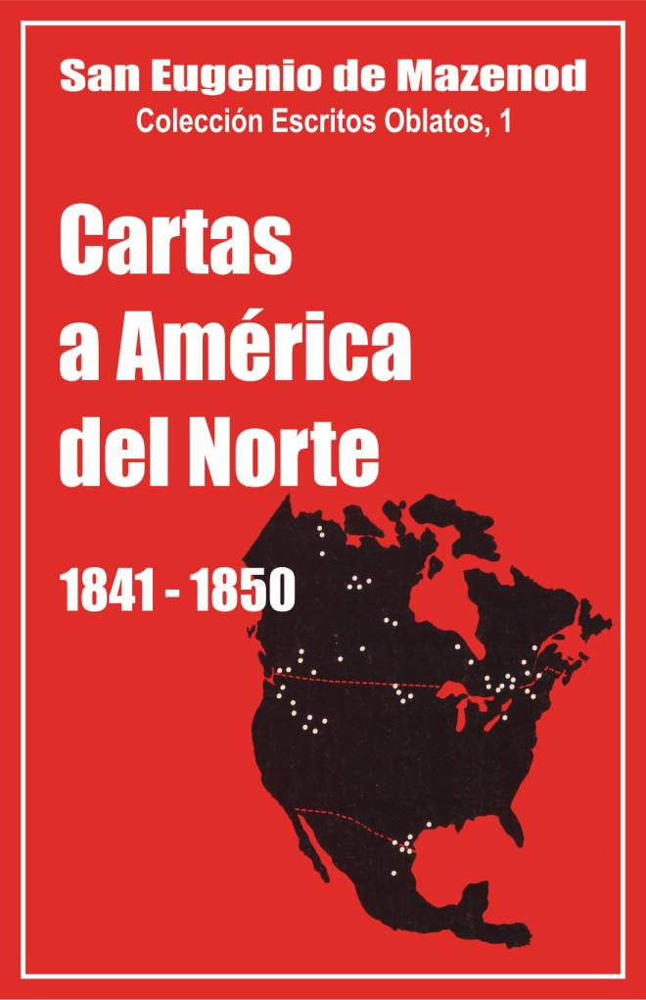

Palo Gordo
2019
Escritos Oblatos: - 01 - 02 - 03 - 04 - 05 - 06 - 07 - 08 - 09 - 10 - 11 - 12 - 13 - 14 - 15 - 16 - 17 - 18 - 19 - 20 - 21 - 22

BIENAVENTURADO
EUGENIO DE MAZENOD
Colección Escritos Oblatos, 1
Postulación General O.M.I.
Via Aurelia 290
Roma 1979
Impreso en México
Marzo de 1990
Palo Gordo
2019
1841 - 1842 - 1843 - 1844 - 1845 - 1846 - 1847 - 1848 - 1849 - 1850
Con gran alegría y consciente de responder a un deseo común de los Oblatos, emprendemos hoy ¡a publicación de los escritos del Bienaventurado Eugenio de Mazenod. Estos escritos son en primer lugar un bien de familia. Son igualmente reveladores de una época y expresan una vitalidad misionera especia! y excepcional.
Nuestra intención no es la de publicarlo todo; sería fastidioso. Queremos sin embargo publicar íntegramente ¡o que más puede servir a la historia de los Oblatos y, sobre todo, al conocimiento de su Fundador y de ¡a gracia apostólica que le animaba. Ya ¡as biografías dedicadas a Eugenio de Mazenod, especialmente la de Juan Leflon, han revelado la riqueza y el vigor de su personalidad. Pero nada iguala a! contacto directo para conocer bien a! hombre y lo que lleva dentro. En ese dominio la correspondencia goza de una prioridad incontestable, permite captar a lo vivo y ver todas sus reacciones, sobre todo, cuando el que escribe se llama Eugenio de Mazenod.
Empezamos pues con la publicación de sus cartas, de las que ha escrito como Fundador y responsable de la acción apostólica de los miembros de su Instituto. Los dos primeros volúmenes incluirán ¡as cartas dirigidas a los corresponsales de América del Norte, primera misión de ¡os Oblatos. Luego vendrán tas dirigidas a los corresponsales de Inglaterra e Irlanda, de A frica y de Ceilán, luego las escritas a la Congregación de la Propaganda (Roma) y a la Obra de la Propagación de la Fe (París y Lyon). Y por último las cartas a los Oblatos de Francia terminarán esta primera serie de volúmenes.
Al lanzar esta colección queremos rendir homenaje a un obrero de primera calidad, que se ha dedicado durante muchos años a! estudio de Mons. de Mazenod: el Horado Padre Mario Nogaret, O.M.L
El P. Yvon Beaudoin, O.M.I., su antiguo colaborador y especializado en los escritos macedonianos, ha aceptado encargarse de la presentación de los presentes manuscritos. Se lo agradecemos vivamente.
Fernando Jetté, O.M.L Sup. Gen.
19 de octubre de 1976.
La salida de los primeros Oblatos para el Canadá en 1841, señala el comienzo de la expansión prodigiosa de la Congregación de Mons. de Mazenod, y le dará pronto la nota específica que la distingue en la Iglesia como instituto misionero.
El Obispo de Marsella tenía entonces 59 años. Maduro por numerosos años de apostolado y de sufrimientos, enriquecido por la experiencia de los hombres, muy ducho en los asuntos administrativos y económicos, gozando todavía de todas sus fuerzas físicas y animado más que nunca por el amor a Dios y a los hombres, forma tan bien a sus hijos y los inflama de tal celo por la gloria de Dios y la salvación de las almas, que en 10 años recorrerán todo el Norte de América y se establecerán en el Este del Canadá en 1841, en el Oeste en 1845, en las costas del Pacífico en 1847, en Texas y el Norte de México en 1849—52, a orillas del Mackenzie y en el mar Glacial Ártico desde 1858.
En todas las cartas que escribió a los suyos, raramente Mons. de Mazenod se queja de su falta de celo y de audacia; por el contrario, debe con frecuencia esforzarse en colmar y orientar bien sus entusiasmos. Ese fuego venía sin duda del brasero ardiente que devoraba a los misioneros, pero estaba alimentado por las numerosas cartas del Fundador y reavivado continuamente por el aliento no menos ardiente de Mons. Bourget, Obispo de Montreal, que llamó a los Oblatos y los empujó él mismo al principio, en todas las obras y hacia todas las direcciones. "Monseñor sólo emplea a los Jesuítas en una parroquia, escribe el P. Honorat, el 19 de octubre de 1843. A nosotros nos encarga ya de ¡as misiones en las parroquias formadas, ya de los 'townships' (poblaciones rivereñas), ya de los tajos, ya de los Algonquinos y de tos Iroqueses, ya en su diócesis, ya en tres o cuatro diócesis que la rodean, porque todo eso, somos nosotros los que debemos realizarlo y no otros".
Sin embargo, Mons. de Mazenod no se había comprometido a proporcionar sino a algunos sacerdotes para predicar unas misiones populares y tal vez más tarde, visitar a los Indios. De año en año sin embargo las peticiones del Obispo de Montreal, luego de los Padres Honorat, Guigues, Taché, etc., se hicieron más apremiantes y más exigentes. Cada verano, el Obispo de Marsella hacía salir del Havre un contingente de misioneros para América: 3 ó 4 cada año al principio, 9 en 1847, de 5 a 6 otros años hasta 1861. Cerca de 100 Padres y Hermanos Franceses, un Belga y algunos Irlandeses pasaron el Nuevo Mundo. Unos 20 de estos o fallecidos o salidos de la Congregación, o también vueltos a Francia, como los Padres Honorat, Telmon, Ricard, Bermond, Baudre, Allard, etc. fueron reemplazados poco a poco por Canadienses o Americanos.
El Fundador se quejaba con frecuencia de las pocas vocaciones oblatas en un país tan religioso como el Canadá. Ciertamente se encuentran 61 tomas de hábito en el Este del Canadá entre 1841 y 1861, entre los cuales Luis Riel y Chiniquy de triste memoria, pero sólo una tercera parte de esos candidatos se comprometieron con los votos. Y si ese grupo aumenta con una decena de reclutas de otras regiones de América hasta llegar a los 30, una docena de ellos salieron de la Congregación o fallecieron antes de 1861. De los 414 Oblatos vivos en 1861, un centenar trabajaban pues en América, o sea, 13 en Texas—México, 12 en Oregón y Columbia Británica, 30 en el Noroeste y 50 en el Este del Canadá y de los Estados Unidos. La Congregación contaba igualmente en América con 3 Obispos (SS. SS, Guigues, Taché y Grandin) y había conversaciones en curso con la Sda. Congregación de la Propaganda, para el nombramiento de Mons. Faraud y de Mons. de Herbomez.
Las fundaciones se habían multiplicado al mismo ritmo. La Provincia del Este comprendía 6 casas en el Canadá: Montreal, Obispado y Colegio de Ottawa, Quebec, Maniwaki, Sault—ST—Louis; y 2 en los Estados Unidos: Plattsburgh y Buffalo. El Vicariato del Río Rojo contaba igualmente 8 misiones que cubrían todo el Noroeste: San Bonifacio (1845), lie a la Crosse (1846), Lago Athabaska (1847), Lago La Biche (1853), Lago Santa Ana (1858), Lago Caribu (1860), Fuerte Resolución en el Gran Lago de los Esclavos (1856), Good Hope (1858). El Oregón y la Columbia eran divididos en 4 distritos: S. José de Olimpia (1848), Esquimault (1858), Lago Okanogan (1859) y New Westminster (1860). El Pro—Vicariato de Texas tenía dos misiones: Brownsville (1849) y Matamoros (1858), así como algunos puestos, tales como Roma, Río Grande y Point Isabel.
Las 278 cartas nos revelan en los dos primeros volúmenes la viva y audaz aventura apostólica y los numerosos problemas suscitados por una expansión demasiada rápida, la variedad de las obras, la sobreabundancia de trabajo, el número elevado de padres jóvenes, con frecuencia simples estudiantes, que no tenían el tiempo para adaptarse bien antes de responsabilizarse del apoyo a los recién llegados o de marchar hacia otros puestos de misión.
Pero estas cartas nos revelan sobre todo la personalidad, el alma del bienaventurado Eugenio de Mazenod, sus perspectivas proféticas, su deseo ardiente y tenaz para mantener a sus hijos en la dignidad y el fervor de su vocación, En la vida concreta de cada día, los hombres y sus obras quedan sin llegar al ideal soñado. Fue el sufrimiento del Fundador, el tema renovado de sus cartas, la vida religiosa y espíritu apostólico que se debían mantener e intensificar. Después de leer algunas páginas se podría pensar que él se creyó en algunos momentos en presencia de un verdadero fracaso, si no de un desastre. Las exhortaciones y los reproches abundan, severas algunas veces y hasta desesperadas.
Hay que decir que nuestra visión está falseada, como se verá, por las numerosas cartas de las que sólo existen unos extractos de Yenveux, porque se sabe que ese Padre buscaba únicamente explicar las Constituciones con unos textos del Fundador. Además las noticias que llegaban del Canadá, no eran siempre objetivas y podían falsificar su óptica. El P. Honorat le escribía a este propósito el 14 de abril de 1843: "Ha habido exageración en lo malo de mis primeras cartas... la impresión del momento... ¡a novedad de nuestra posición, la diversidad de los caracteres, la poca virtud de uno, ... y la ligereza del otro, el escaso juicio de un tercero, su escasa confianza para conmigo; añadid a eso mi carácter, mi poca capacidad y mi debilidad, por no decir mi cobardía... mi responsabilidad para el futuro que me ha asustado siempre y me asusta todavía, todo eso en medio de ocupaciones incesantes, sin posición fija, sin medios para remediar los desórdenes reales que existían en la familia y que no podía reprender porque no estábamos nunca solos y que desesperaba de lograrlo, me colocaba en un estado de inquietud que ha podido hacerme ennegrecer el cuadro algunas veces".
Si las cartas de los primeros años abundan en reproches y en quejas contra la poca vida religiosa, la falta de acuerdo, la ausencia de prudencia en la administración, la tendencia a actuar sin informar suficientemente al Consejo General, etc., las de los últimos años no hacen sino añadir otros temas tan penosos para mi corazón de padre y de apóstol: el desaliento de algunos misioneros en presencia de una vida y de un clima que exigían el heroísmo, el abandono obligado de diversas misiones emprendidas sin permiso y sobre unas bases económicas u otras poco seguras, las apostas las, los fallecimientos, los proyectos mismos de separación de los Padres del Canadá, del Centro del Instituto.
A pesar de las imperfecciones, de las pequeñeces demasiado humanas, los Oblatos contribuyeron de modo determinante a la implantación y al crecimiento del cristianismo en todo el Canadá y en varios puntos de los Estados Unidos. Esas Iglesias deben mucho a la fe, a la esperanza de Mons. de Mazenod. "Hay que tener en cuenta que requería un poco de valentía, escribía el P. Guigues el 5 de diciembre de 1844, y confianza en Dios, que nos señala el camino y que no nos abandonará cuando actuemos en su nombre y para su gloria".
Esas Iglesias deben igualmente mucho a su celo, a su visión de futuro, a sus firmes decisiones. Desde el envío de los primeros Padres, está seguro de que otros misioneros seguirán (carta al P. Lagier, el 28 de agosto de 1841), que "Montreal no es sino la puerta tal vez que introduce ¡a familia para la conquista de ¡as almas de varios países" (al P. Honorat, 9 de octubre de 1841), que Bytown "es una ciudad llena de futuro" y que hay que ir "con el firme propósito de superar tos obstáculos, de quedarse, de fijarse" (al P. Honorat, 1o. de marzo de 1844), que los Oblatos "evangelizarán" todo el Norte de América" (al P. Guigues 5 de diciembre de 1844), que se extenderán "de un mar a otro" (al P. Ricard el 8 de enero de 1847).
Esto es en resumen lo que se encontrará en estos dos volúmenes.
BÚSQUEDA DE LOS ESCRITOS.
Hemos querido publicar todas las cartas de Mons. de Mazenod a sus corresponsales de América, pero sólo se tienen estas; otras menos numerosas e importantes desaparecieron, al parecer, en los naufragios y sobre todo en los incendios, en particular el del Obispado de San Bonifacio el 14 de diciembre de 1860. Entre las que fueron encontradas y copiadas, con ocasión del proceso de beatificación en 1926—1929, sólo la mitad están completas, ya sea porque se conserva el original, ya sea porque han sido copiadas, antes de su expedición, en un Registro conservado en los archivos de la Postulación. De los demás cerca de 125, debemos contentarnos con extractos, más o menos breves, sacados de las obras de Yenveux, Rey y Rambert. En efecto, antes de emprender la composición de sus biografías de Mons. de Mazenod o el comentario de las Reglas, a finales del siglo pasado, los Padres Rambert, Rey y Yenveux habían logrado reunir casi todas las cartas del Canadá y de los Estados Unidos. Las citaron abundantemente, principalmente, Yenveux, pero los originales desaparecieron luego, sin que haya sido hecha ninguna copia íntegra.
Los extractos que se encontrarán aquí proceden casi todos de Yenveux. Se han reconstituido esas cartas, no sin dificultad, pero con bastante precisión. Yenveux las hacía copiar por sus filoteas, para ¡lustrar o comentar tal o cual artículo de la Regla. Escribía en las primeras líneas de una hoja: copiar tal carta, página 1, línea x a x; página 2, línea x a x, etc., y luego las señoras copiaban fielmente los pasajes pedidos.
El P. Yenveux acumuló así montones de hojas, pero murió sin poder ordenarlas. Una parte fue impresa en 1903, por los cuidados del P. Schauffler, el resto fue dispersado probablemente cuando las persecuciones religiosas de Francia en 1904—1905. Luego felizmente los PP. Esteve y Thing encontraron esas notas en unos paquetes en París, en Bélgica y en Roma. El P. Esteve, postulador de la Causa, reagrupó todo según el orden de los artículos de la Regla, pegó todos los extractos, recortarlos si hacía falta, y formó 9 volúmenes conservados en la Postulación. Ha sido pues necesario reconstruir el texto a partir de los extractos y de las indicaciones de Yenveux. La fidelidad al original y al orden de los parágrafos es bastante segura para los 3l4 de los extractos. El resto ha sido copiado por el P. Yenveux en persona, que no indica algunas veces la fecha, ni dice nunca de qué página ni de qué línea saca su extracto y, sobre todo, resume con frecuencia el texto. Se reconocerán esas cartas por los puntos suspensivos, con los que salpica las frases en el interior mismo de los parágrafos.
Sea cual sea la fidelidad de la mayor parte de esos extractos queda claro que con frecuencia no se trata sino de una pequeña parte de la carta, de una idea fuera de su contexto, verdadero esqueleto desarmado y sin vida. En efecto, esas líneas dispersas, espigadas aquí y allá para ilustrar algunos artículos de la Regla, sí nos revelan con frecuencia y sin matices el pensamiento del Fundador, disminuyen tristemente su personalidad, su delicadeza, su calor humano, su dinamismo, el modo como sabe alabar, animar, aceptar duras reprimendas, etc. Pero las cartas completas están felizmente ahí para atenuar esos inconvenientes.
Las notas históricas se limitan a lo esencial; sólo aportan unas precisiones o unos esclarecimientos sobre tal acontecimiento, tal reproche, tal persona no nombrada, etc. El lector se quedará ciertamente en ayunas. Estas páginas no pueden ser una historia completa de los Oblatos en América. Para conocerla mejor, habrá que acudir siempre a las obras bien conocidas de los Padres G. Carriére. B. Doyon, A. G. Morice, L. Brault, G. E. Champagne, J. Wild, etc
Por último, quiero agradecer al P. Pielorz, cuyas cartas geográficas sobre los Oblatos del Canadá, reproducidas aquí, y los demás detalles de su obra sobre los Capítulos generales en tiempos del Fundador, fueron muy útiles para conocer el estado de la Congregación en la época de los diversos Capítulos y en 1861; al P. Sion, cuya experiencia de profesor de francés y el conocimiento del Fundador fueron valiosos para corregir y precisar unos detalles de gramática y de historia. Quiero agradecer igualmente al P. J. Rousseau que se ha prestado a traducir algunas cartas latinas, y al P. Mitri, que sabe abrir tan amablemente las puertas de la Postulación y de su corazón, sobre todo, cuando se trata de animar al conocimiento del bienaventurado de Mazenod y de ampliar su irradiación; y por último, al P. F. Jetté y a la Administración General, que después de tantos ensayos abortados en el pasado, dan de nuevo la oportunidad de publicar por lo menos la parte más interesante de la abundante correspondencia del Fundador.
Yvon Beaudoin, O. M. I.
MÉTODO DE EDICIÓN DE LAS CARTAS.
Hemos pues seguido el método empleado hace unos años publicando las cartas de los Padres Tempier, Courtés y C. Aubert. La carta va precedida de un breve resumen. El texto recopiado como está en el original, modificando algunas veces la puntuación bastante defectuosa y escribiendo constantemente las palabras cuya ortografía variaba todavía, como v.g. "enfans, incesoaus, remerctemens", algunas veces, "fesaus, fessiant, feroient, etc.". Otras palabras mal escritas por descuido están en las notas y corregidas en el texto, o también simplemente, poniendo entre paréntesis las letras añadidas.
La Administración General ha pedido que se publiquen los escritos del Fundador empezando por los más interesantes para los Oblatos y siguiendo un método que exponga el texto original con fidelidad, pero sin cargarlo con notas gramaticales e históricas.
1. A Monseñor Bourget, Obispo de Montreal en el Canadá, Roma.
Por unanimidad los Oblatos desean que Mons. de Mazenod envíe unos misioneros al Canadá.
Marsella, 16 de julio de 1841.
Monseñor:
No me he descuidado del gran asunto que tanto os interesaba y ante el cual ciertamente no podía quedar indiferente. Conforme a vuestro deseo, me he ocupado activamente de ello. Me apresuro para daros a conocer el resultado de mis gestiones. Como se trataba de una misión extraordinaria, he creído deber consultar a la Congregación. Su respuesta afirmativa ha sido unánime; sólo tendremos que elegir entre esos hombres de buena voluntad y de abnegación, y es lo que haremos a vuestro regreso cuando nos reunamos de nuevo para tratar ese asunto.
No tengo necesidad de recordaros, Monseñor, que es en mi casa donde os alojaréis, os espero impaciente con los brazos abiertos; reciba la seguridad de ello y de los respetuosos sentimientos con los cuales tengo el honor de ser, Monseñor, vuestro muy humilde y muy obediente servidor.
+ C. J. Eugenio, Obispo de Marsella.
2. Al Señor Mille, Superior de Ntra. Sra. de Laus, cerca de Gap, Altos Alpes.
Monseñor Bourget pide cuatro misioneros "para evangelizar los pueblos" de su amplia diócesis y llegar si fuera necesario hasta las "poblaciones salvajes". Que cada Padre de ¡a comunidad diga ¡o que piensa sobre el particular y que se ofrezca si siente atracción para esa obra. Que el P. Mille sea reservado sin afectación en sus relaciones con el Obispo y el clero de ia diócesis de Gap.
L. J. C. et M. I.
Marsella, 17 de julio de 1841.
Está bien claro, mi buen Padre Mille, que ando atrasado para con Ud. Me parece que estaba al día. Me confieso sin embargo con gusto algo culpable y aunque hayáis tenido noticias mías por los Padres Guiguesy Aubert, que contaban veros de paso, tengo el gusto de escribiros, en primer lugar, para acusaros recibo de vuestra última carta, luego para poneros al tanto de un asunto que nos ocupa muy seriamente en este momento. Mons. el Obispo de Montreal en el Canadá me ha propuesto llamar a nuestra Congregación a su amplia diócesis para evangelizar a las gentes y llegar si hace falta hasta las poblaciones salvajes que están en relación comercial con sus diocesanos.
Su intención será que le cediese cuatro misioneros cuyo viaje pagaría y a los cuales proporcionaría un establecimiento. Piensa que pronto unos sacerdotes canadienses se asociarían a ellos y entonces si le proporcionásemos mayor número de misioneros, nos podríamos extender a otras diócesis, tales como Quebec, etc. Se habla francés en todos aquellos países, es la lengua natural de los habitantes.
Antes de dar una respuesta positiva a Mons. de Montreal, he creído deber consultar a la Congregación. Os encargo pues expresamente reunáis a vuestra comunidad y planteéis este problema, al cual cada miembro dará una respuesta categórica.
¿La Congregación debe aceptar el ofrecimiento que le ha sido hecho por Mons. el Obispo de Montreal? El Superior General puede consentir en la formación de ese establecimiento y comprometerse a proporcionar esos cuatro sujetos que el Obispo pide para ser los fundadores de esa gran obra en el Canadá?
Una vez resuelta la cuestión, podréis decir que el Superior, en caso de aceptación de la Congregación, se propone no confiar esa misión sino a aquellos que le manifiesten su atracción. Si alguien se sintiera atraído, tendría que decíroslo para comunicármelo a fin de que tuviese más facilidad en la elección que debiera hacer.
Estoy en la campiña, o mejor dicho, en mi gabinete porque casi no me muevo; no tengo a la vista vuestra carta porque la he dejado en la ciudad. Es pues posible que no conteste a alguna pregunta que hayáis podido hacerme. Todo cuanto os diré, es que encuentro a algunas gentes bastante hurañas, otras bastante tímidas, y no hablo de los indignos.
Sea siempre reservado pero sin afectación. Me pareció vuestro discurso demasiado elogioso; con gusto hubiese quitado algunas frases evidentemente exageradas. Adiós, querido amigo, os abrazo y os bendigo.
+ C. J. Eugenio, Obispo de Marsella.
3. Al Sr. Courtés, Superior de los Misioneros, al final del Paseo Plaza de las Carmelitas, en Aix, Bocas del Ródano.
Detalles sobre la misión del Canadá que da Congregación acaba de aceptar. El P. Guibert es nombrado Obispo de Viviers. ¿Cómo reemplazarlo en el Seminario Mayor de Ajaccio?
L. J.C. et M. I.
Marsella, 11 de agosto de 1841
Es mi intención, mi querido Courtés, comunicarte lo que se ha acordado con el Obispo de Montreal a su paso por Marsella. No se puede tener un comportamiento mejor que el observado por ese Prelado. Está tan agradecido ante la aceptación de su petición que se ha mostrado muy paternal y muy dispuesto a satisfacer en todo a aquellos que la Congregación le ceda para evangelizar a su pueblo. La respuesta a la cuestión que había planteado ha sido unánime. He recibido además gran número de cartas para expresarme la inclinación particular que se siente hacia esa misión. Sólo tendré pues el apuro de la elección que se debe hacer. Está convencido que enviaré cuatro misioneros y dos hermanos para formar nuestro establecimiento en Montreal.
El Sr. Obispo les dará una pequeña parroquia en la vecindad de la ciudad episcopal, cuya renta, unida a la producción de un campo anejo, bastará para el mantenimiento de la comunidad. Si hiciera falta más, el Obispo supliría.
Los misioneros precederán y acompañarán al Obispo en sus visitas pastorales, y si deben dejar todos a la vez la casa, la ciudad está tan cerca que el Obispo encargará a algún sacerdote de allí del servicio de la parroquia. El lugar es delicioso y los misioneros no podrán estar mejor en su tiempo de descanso para dedicarse a la oración y al estudio.
Los pueblos hacia los cuales son enviados son excelentes, llenos dé fe y de sencillez. Se habla francés en toda la región; sin embargo, estará bien que se aprenda el inglés para hacerse más útiles. El Obispo no sabe esa lengua pero el Gran Vicario que le acompaña lo habla bien. Bastará que nuestros Padres vayan al Havre a fines de septiembre. La travesía dura menos de un mes.
En cuanto el prelado haya llegado a París, enviará letras de cambio para los gastos de viaje, que, como es justo, están a su cargo. Los misioneros tomarán tierra en Nueva York, desde donde se trasladarán en 36 horas a Montreal. No hace falta más en ese país para recorrer 180 leguas.
He ahí, mi querido, todos los detalles que puedo darte sobre esa importante misión. Espero que Dios la bendecirá y pienso como todos vosotros que será ventajosa para la Congregación. Ahora lo difícil será formar esta nueva comunidad. Entre los elegidos tienen que encontrarse unos hombres capacitados para anunciar la palabra de Dios y buenos para ser presentados al clero de Montreal que no carece de méritos. Tendremos pues que imponer sacrificios a otras comunidades. Querer aceptar una gran misión no es todo, hay que saber también aguantar las consecuencias de semejante determinación. Para complicar más nuestros apuros, he aquí que acaban de quitarnos al P. Guibert, no se me ocultan las ventajas de ese nombramiento bajo varios aspectos, pero me abruma en las presentes circunstancias. Hubiese visto bien su nombramiento para Gap hace dos años la razón es palpable— pero para Viviers, y en este momento, me deja aturdido. Sin embargo, no podría oponerme a los designios de la Providencia. Es Ella la que ha dispuesto las cosas sin que las pensásemos en absoluto. Vendrá en ayuda nuestra.
Yo me estoy haciendo viejo, no puedo por otra parte aguantar, no diré la carga, sino el conjunto de la responsabilidad y la dependencia de mi posición.
Estaría inclinado a retirarme de la escena del mundo antes de tiempo, será útil que la Congregación tenga un protector en la Iglesia de Francia, un prelado que ante todo la enaltecerá mucho. Eso para consolarnos pero no siento menos el extremo apuro y vacío que Va a ocasionarnos. Ese buen Padre se felicitaba todavía en su última carta porque Monseñor de Ajaccio había pedido que se le dejara dos años más, y por el periódico me he enterado de que estaba todo hecho.
Adiós, mi querido amigo, tendríamos necesidad de vernos. ¿Por qué no vendrías a pasar unos días en la campiña? Hace quince días que no he puesto los pies allí. El Superior para Ajaccio me apura más que el de Montreal. Adiós, una vez más.
4. Al P. Francisco Bermond, en Ntra. Sra. de Lumiéres.
Al P. Bermond no se le juzga bastante obediente y virtuoso para ser enviado a 1.500 leguas del Fundador. Si su conducta futura se hace un poco más prometedora, podrá formar parte del segundo grupo de misioneros.
L. J.C. et M. I.
Marsella, 19 de agosto de 1841.
Os aseguro, mi muy querido hijo, que no he atribuido sino a un buen motivo el ofrecimiento que me habéis hecho de ser del número de los que tendrían que ser elegidos para fundar nuestro primer establecimiento en el Canadá. Doy gracias al Señor por las disposiciones que la gracia os había inspirado, pero he dudado recordando la carta que me habíais escrito cuando os anuncié que habíais sido destinado para formar parte de la comunidad de Lumiéres. Si hay algo sencillo y corriente en una congregación extendida por varias Diócesis, es el paso de una casa a otra. Sólo la conveniencia del servicio a juicio del Superior basta para determinar esos cambios; por eso en todas las Ordenes conocidas jamás se ha oído decir que eso ofrezca dificultad alguna. Recuerde como habéis aceptado vuestro nuevo destino. Casi me pedisteis cuenta, parecía que cometía una injusticia. ¿Qué ibais a hacer en Lumiéres? Ibais aburriros, después de todo, poco ibais a hacer, etc.
Sentí tanta pena al veros con esas disposiciones que quise escribiros para haceros Observar que no eran convenientes, que os mostrabais imperfecto en una prueba de poca monta, porque es una cosa tan prevista que llegado el caso nadie presta atención, ni se le ocurre molestarse.
Os he perdido de vista desde hace tiempo, he debido confesar pues, que habíais decaído de vuestro primer fervor y que si os faltaba virtud en una ocasión en la que hacía verdaderamente poca falta para cumplir el deber sin murmurar, sería de temer que os faltase en unas circunstancias a veces difíciles que puedan encontrarse. Comprendéis que para una misión lejana como la del Canadá, hay que estar preparado a fondo; hace falta que se pueda contar con la solidez de las virtudes religiosas de aquellos que van a encontrarse a 1.500 leguas de mí. ¿Quién puede prever las dificultades que se presentarán, sea por parte de los hombres, sea por la de los acontecimientos?.
Si no se ha fortalecido uno en la práctica de la humildad, de la abnegación, si no se ha ahondado en la obediencia que es el fundamento de todo el edificio religioso, si no se está dispuesto a aguantar las imperfecciones de los demás y sobre todo, si no se ha renunciado a la voluntad propia de tal suerte que no cueste nada someterse a la del Superior y eso sin esfuerzo, sin tristeza, sin el menor murmullo.
Comprenderéis que tendría que sentir pena si me enterara de que a una tan gran distancia no reina la unión entre los hermanos, que no se da el espectáculo edificante de una perfecta regularidad y eso en un país donde están acostumbrados a los buenos ejemplos de los Sulpicianos y donde los Jesuítas llevan el buen olor de su admirable disciplina.
Me agradeceréis, mi querido hijo, que os descubra todo mi pensamiento. Tranquilíceme más y formaréis parte de una segunda colonia.
Os abrazo y os bendigo.
+ C. J. Eugenio, Obispo de Marsella.
5. Al P. Luciano Lagier.
E! P. Luciano Lagier es elegido para "plantar el estandarte de la Congregación" en otra parte del mundo. De la conducta del primer grupo de misioneros depende la propagación de los Oblatos en el Canadá y en otros países.
L.J.C. et M. I.
Marsella, 28 de agosto de 1841.
Mi querido Padre Luciano, dé gracias a Dios. He escuchado vuestros deseos. Os he elegido definitivamente para formar parte de la comunidad que va a plantar el estandarte de la Congregación, que es el de la cruz, en otra parte del mundo. Confío plenamente en que Ud. y sus compañeros seréis dignos de vuestra vocación, que haréis mucho bien y que honraréis a la Congregación con vuestra abnegación, vuestro celo y vuestra regularidad. De la opinión que deis dependerá la propagación de la familia no sólo en todo el Canadá sino en otros países de misión maduros para la evangelización y a los cuales sólo les faltan los obreros para anunciarles la buena noticia de la salvación.
Seréis los primeros en abrir marcha; otros os seguirán. Tendré dificultad para consolar a más de uno que esperaba formar parte de la primera colonia. Adiós, sólo tengo el tiempo de abrazaros y bendeciros.
+ C. J. Eugenio, Obispo de Marsella.
El P. Baudrand os comunicará mi carta, conforme a lo que le indico.
6. Al P. J uan Bautista Honorat.
Obediencia de los primeros Oblatos para el Canadá.
CARLOS EUGENIO DE MAZENOD Obispo de Marsella y Superior General de la Congregación de los Misioneros Oblatos de la Santísima Virgen María, concebida sin pecado a nuestro muy amado en Cristo Juan Bautista Honorat, Sacerdote de la misma Congregación y Asistente del Superior General, Saludo en el Señor por siempre.
Como el Reverendísimo e ilustrísimo Señor Ignacio Bourget, Obispo de Montreal en el Bajo Canadá (en la Provincia de la América Septentrional), en su ida a Roma, nos ha rogado insistentemente que se le cedan algunos miembros de nuestra Congregación para fundar una casa de misión en su diócesis y nos ha expuesto que había allí una abundante mies, sea entre los católicos para devolverlos a la fe santa y católica, o hacerlos más fervorosos, sea entre los heréticos para traerlos otra vez a la fe, y también entre los infieles para llevarlos al conocimiento de la verdad; puesto que, por otra parte, el espíritu de nuestro Instituto es el de procurar la salvación de las almas allí donde Dios nos llama, deseando por nuestra parte obedecer a esa divina vocación, hemos decidido acceder a los deseos del Rvdmo. e Illmo. Prelado de Montreal.
Confiando pues, en vuestra piedad, vuestra doctrina, vuestra experiencia, vuestro celo por las almas, os elegimos para esa misión, al mismo tiempo que los RR. P.P. Adriano Telmon, Luciano Lagier y María (Juan) Baudrand, que se han ofrecido espontáneamente para consagrarse a una tan gran obra, que nos agrada tanto, añadiendo dos hermanos conversos, Pedro Bazile y José Roux. Así enviados por la autoridad legítima, conforme a las Reglas y Constituciones de nuestro instituto, os dedicaréis con todas vuestras fuerzas y con la gracia de Dios a procurar la salvación de las almas, bajo la autoridad del Ordinario que ha mostrado una benevolencia tan grande con nuestra Congregación, por eso debéis considerarlo como bienhechor extraordinario y honrarlo como a un padre muy amado.
Decretamos que esa nueva casa de nuestra Congregación en la Diócesis de Montreal, sea colocada bajo el patrocinio de la Bienaventurada Virgen María y queremos que sea designada con el título de su Inmaculada Concepción. Y ahora, a Ud. cuya probidad y prudencia nos son desde hace tiempo conocidas, por las presentes, le designamos y constituimos, Superior de dicha casa, otorgándole con eso todas las facultades especialmente mencionadas en el parágrafo del Superior local de nuestras Constituciones. Además os intimamos a observar lo más exactamente posible las reglas contenidas en ese mismo parágrafo.
Como verdaderamente la excesiva distancia de los lugares nos impedirá tener relaciones frecuentes, os concedemos amplias facultades; y en las cosas que fueran imposibles de cumplir o demasiado difíciles, le dispensamos a Ud. y a los suyos, encomendándoles sin embargo, que en el gobierno tanto espiritual como temporal que no hagáis ni permitáis que se haga nada que choque con el espíritu de nuestro Instituto. Por último, para que nada falte en lo que se refiere al buen gobierno de una casa religiosa, designamos al R. P. Telmon, primer asesor y vuestro admonitor; y al P. Baudrand, segundo asesor.
Si bajo el impulso de la gracia de Dios, algunos de la región pidieran unirse a nosotros, que os sea permitido, después de consultar con vuestros asesores, admitirlos para hacer canónicamente su noviciado. Dirigidos por Ud. emprenderán y proseguirán su prueba y cuando lleguen a su final, deberéis escribirnos sobre los novicios que han de admitirse a la oblación para que podamos pronunciarnos en consejo con nuestros asistentes y transmitiros sin retraso nuestra decisión.
Id ahora, queridos hijos, bajo el auspicio de la santa obediencia, a la tarea que os es asignada. Por otra parte, Ud. a quien hemos designado Superior de una misión tan importante, vele para mostrarse como perfecto guardián y esforzarse en cumplir para ello, de palabra y de obra, con corazón y afecto, los deberes de un Padre previsor. Por otra parte, vosotros los compañeros elegidos por favor divino para una obra tan grande, comportaos con afecto, reverencia y respetó hacia el R. P. que os hemos dado como Rector, observad diligentemente las Reglas de nuestro Instituto y, sobre todo, sed hijos de obediencia.
Vosotros todos, emprended pues, vuestro viaje con un corazón alegre, diligente y con agrado; que el ángel del Señor os acompañe y que sea vuestra guía y patrona la Bienaventurada Virgen María concebida sin pecado, recordando que es un deber especial de vuestra vocación propagar en todas partes su culto. Por nuestra parte no dejaremos de pedir a Dios para vosotros un abundante rocío de gracias y la poderosa y constante asistencia del cielo.
Dado en Marsella con nuestra firma y sello y la firma del Secretario de la Congregación, en el año del Señor mil ochocientos cuarenta y uno, el vigésimo día de septiembre.
+ C. J. Eugenio, Obispo de Marsella. Sup. Gen.
Por mandato del Rvdmo. Padre General,
Casimiro Aubert, O.M.I. Secret.
7. A Mons. Bourget, Obispo de Montreal.
Cuatro misioneros salen fíenos de ardor para el Canadá. Mons, Bourget no tendrá sacerdotes más obedientes; como contrapartida que los adopte como hijos suyos. Dentro de un año el sulpiciano Barbarin, oriundo de Marsella, saldrá igualmente para Montreal.
Marsella, 28 de septiembre de 1841.
Monseñor:
No dejaré salir a nuestros queridos Canadienses sin darles una carta que os exprese mis sentimientos más afectuosos. Os agradezco todo cuanto habéis escrito de amable al Sr. Tempier y a mí; habéis juzgado bien nuestro corazón. Todos estamos con Ud.; los lazos de caridad que nos unen no podrían ser más estrechos; por eso he puesto en vuestras manos con plena confianza a nuestros amados misioneros. Parten llenos de ardor, dispuestos a secundar con todas sus fuerzas vuestra solicitud pastoral. Recuerde que los habéis adoptado como hijos vuestros; no tendréis sacerdotes más sumisos y más abnegados. Os consideran ya como su padre y el conocimiento de vuestra bondad les ha animado mucho para el sacrificio que han hecho de su patria y de todo cuanto podía retenerlos en Europa. Saldrán el 16 de octubre del Havre.
Me he decidido a ceder al Sr. Barbarin, pero no formará parte del viaje porque debe pasar un año en la Solitude; es siempre más de los míos como uno más que dedico a vuestra Diócesis que ha venido a ser la hermana de la mía.
Acepte Monseñor, mis sentimientos respetuosos y llenos de afecto, con los cuales tengo el honor de ser vuestro muy humilde y muy obediente servidor.
+ C. J. Eugenio, Obispo de Marsella.
8. Al P. Juan Bautista Honorat.
Obediencia de los primeros Misioneros Oblatos al Canadá.
CARLOS JOSE EUGENIO DE MAZENOD Obispo de Marsella y Superior General de la Congregación de los Misioneros Oblatos de la Santísima Virgen María, concebida sin pecado a nuestro muy amado en Cristo Juan Bautista Honorat, Sacerdote de la misma Congregación y uno de nuestros Asistentes, SALUDO EN EL SEÑOR POR SIEMPRE.
DIOS Y PADRE DE NUESTRO SEÑOR JESUCRISTO, que nos ha elegido y predestinado para alabanza de la gloria de su gracia, nos ha establecido para que fuésemos y repartiésemos fruto y que nuestro fruto quede. Sabéis que desde el momento en que el Padre de familia nos ha enviado a última hora, a nosotros pequeño rebaño, a trabajar en su viña, porque hemos dado con nuestros modestos trabajos frutos abundantes; y que después de haber comenzado a anunciar su palabra, muchas cosas grandes ha realizado por nosotros aunque indignos y muchos extraviados han sido devueltos al buen camino mientras íbamos por las regiones que nos rodean hacia las ovejas que se habían perdido. Sin embargo, ahora se abre un camino más lejano y se extiende un campo más amplio; se nos abre una puerta, somos enviados ahora no sólo a aquellos que están cerca y a los hermanos en la fe, sino también a los otros que están lejos y fuera de ella; nosotros, por razón de nuestro pequeño número, estábamos en inferioridad para la tarea de recoger la abundante mies que se extiende ante nosotros.
Así pues, el Ilmo. y Rvdmo. Señor Ignacio Bourget, Obispo de Montreal en el Bajo Canadá en la Provincia de la América Septentrional, cuando iba a Roma para realizar la visita "ad limina apostolorum", deteniéndose de visita entre nosotros, nos comunicó que quería llevar a algunos miembros de nuestra Sociedad a su Diócesis. Primero sorprendido por su proposición totalmente espontánea, luego acogiéndola verdaderamente como la voluntad de Dios, hemos consentido de todo corazón en mandar cuatro sacerdotes de la Congregación. Por eso os elegimos el primero, R. P. Honorat (Juan Bautista), el cuarto de nuestros asistentes, para esa obra con los RR. PP. Pedro Antonio Adriano Telmon, Juan Fleury Baudrand y Luciano Lagier. Os concedemos así mismo facultades y derechos según las leyes de nuestro Instituto, para constituir una casa de nuestra Congregación en cualquier lugar de la Diócesis que dicho Prelado elija; él, siendo el único establecido por el Pastor Supremo para apacentar su rebaño, os enviará también cuándo y dónde quiera para ejercer vuestro ministerio bajo su plena y de todos modos entera autoridad.
Ante todo, sin embargo, no sólo os prescribimos reverenciarlo como a vuestro Señor; os exhortamos también a amarlo como a un padre, a él en quien hemos reconocido una piedad tan grande y méritos tan excelentes, y cuyo amor y benevolencia experimentaréis también vosotros si os comportáis dignamente.
Cuando hayáis recibido del Ilmo. y Rvdmo. Obispo de Montreal la casa para vuestra residencia, la pondréis bajo la protección de la SSma. Virgen María concebida sin pecado; y Ud., R. P. Juan Bautista Honorat, asumirá el gobierno para el cual os considero perfectamente digno, en virtud de nuestra autoridad y de las Constituciones de nuestra Sociedad, según está ordenado sobre el Superior local. Os asignamos como asesores, primero y al mismo tiempo como vuestro admonitor, al R. P. Pedro Antonio Telmon; segundo, el R. P. Juan Fleury Baudrand. Agregamos también dos hermanos conversos, Pedro Bazile y Luis Roux para el servicio temporal conveniente, como hará falta en vuestra casa.
Sin embargo, dado que en razón de la diversidad de los lugares y de las circunstancias, que sin duda, os ocurrirán inopinadamente, será difícil y con mucho retraso consultarnos, a propósito de algunas cosas que habría que cambiar, os dispensamos a Vos y a los vuestros, en lo que según el espíritu del Instituto, juzguéis oportuno omitir o modificar. Por el contrario observad exactamente lo demás de las Reglas. Por otra parte tenemos confianza en Vos y en el Señor que lo que prescribimos lo haréis, y lo realizaréis conociendo en efecto la diligencia de vuestra voluntad.
Si algunos en esas regiones quisieran agregarse a nuestra Sociedad, os concedemos que puedan empezar y completar su noviciado en vuestra casa; a propósito de ellos, si los juzgáis dignos, nos informaréis para que podamos con nuestro Consejo decidir sobre ello y transmitiros nuestra autorización para que podáis admitirlos a la profesión.
Por lo demás, hermanos, confiad en el Señor y en la fuerza de su poder. Revestíos de la armadura de Dios, manteneos erguidos, interiormente ceñidos por la verdad, revestidos de la coraza de la justicia y vuestros pies calzados para la evangelización, para que el Señor os otorgue anunciar la palabra con gran firmeza, para arrancar del pecado a los hijos de la Iglesia y reconducirles a la santidad; y que abra vuestra boca para dar a conocer con seguridad el misterio del Evangelio a los que lo ignoran.
Por eso animaos mutuamente a edificaros unos a otros. Estad unidos en un mismo espíritu colaborando para la fe en el Evangelio. Ud. especialmente a quien hemos propuesto para la dirección de vuestros hermanos, sobresalga por el mérito y la virtud antes que por la elevación de vuestro cargo; dedíquese más a atraer el corazón de sus súbditos por la caridad y la mansedumbre que a conducirlos autoritariamente. Esfuércese por la observancia de nuestras Reglas y la práctica de la piedad con Dios en mostrarse tal que sus compañeros intenten ávidamente seguirle paso a paso y le imiten en todo.
Y vosotros a quienes nuestro Salvador se ha dignado llamar con frecuencia y preferencia a vuestros cofrades, para una obra tan grande, dedicaos con todas vuestras fuerzas a responder a esa santa vocación de Dios, velando por otra parte con cuidado para aliviar la carga impuesta a vuestro Superior, con la humildad, la práctica de la mortificación, el celo por la perfección, la asiduidad en la oración, un verdadero respeto hacia él por Dios, la alegre obediencia y sobre todo un amor sincero.
En cuanto a mí, doy gracias a Dios cada vez que pienso en vosotros, en todas mis oraciones, suplicándole con alegría por todos vosotros con relación a vuestra comunión en el Evangelio; confiando también en eso, que aquel que ha iniciado en vosotros una buena obra, la llevará a término, hasta el día de Cristo Jesús; justo es que yo os lo exponga así a vosotros a quienes llevo en el corazón. Dios en efecto me es testigo de cómo os sigo con mi afecto en la ternura de Cristo; y pido que vuestra caridad abunde cada vez más en ciencia y en todo sentimiento por Jesucristo, para la gloria y alabanza de Dios.
Emprended pues vuestro viaje con un corazón alegre y de buena gana. Que Dios mismo nuestro Padre y Nuestro Señor Jesucristo dirijan vuestros pasos; que esté sobre vosotros la benevolente protección de la Santísima Virgen María concebida sin pecado, y la guarda atenta del santo Ángel de Dios.
Dado en Marsella con nuestra firma y sello y la del Secretario de la Congregación, en el año del Señor mil ochocientos cuarenta y uno, el vigésimo día de septiembre.
+ C. J. Eugenio, Obispo de Marsella. Sup. Gen.
Por mandato del Rvdmo. Padre General,
Casimiro Aubert, Secretario.
9 Al P. Honorat. París.
Quejas a los misioneros que no han escrito todavía. Envío de una carta para Mons. Bourget. Consejos de prudencia para el barco. Mostrarse ejemplares en el Canadá para edificar a! clero y atraer vocaciones. ‘‘Montreal es tal vez la puerta que introducirá la familia para la conquista de las almas de varios países". Bendición. Varios ingresos en el noviciado de Ntra. Sra. de l’Osier. Los Oblatos de Ntra. Sra. de Laus están en entredicho en la Diócesis de Gap.
L. J.C. et M. I.
Marsella, 9 de octubre de 1841.
¿Habéis pensado, mi querido P. Honorat, y vosotros todos mis demás hijos que os encamináis hacia esa hermosa misión que os abre los brazos, que olvidáis a vuestro padre tan pronto y lo tenéis apenado tanto tiempo? ¿Por qué no me habéis escrito desde Lyon primero y luego de París donde estáis desde hace varios días?
Es empezar mal vuestra correspondencia que habíamos convenido sería tan exacta. El P. Guibert os hará recriminaciones de mi parte; no os enfadéis, las mereceréis. Os envío una carta para Mons. el Obispo de Montreal. No sería conveniente que os presentaseis a él sin cartas mías. No tengo necesidad de recomendaros pero él podría quejarse con razón de que yo hubiese olvidado ese deber de cortesía. Recordad bien todos los avisos que os he dado. Tened cuidado. Cuando subáis a bordo o cuando estéis embarcados, tened cuidado de no caer al mar; desembarcando cuando el mar está agitado, se puede perder pie y ahogarse. Cuando estéis un poco curtidos, mostraos dignos de vuestra misión en la travesía, guardando una actitud grave y apostólica. Recordad que a vuestra llegada los ojos de todos estarán fijos en vosotros y que se os juzgará primero por vuestro aspecto exterior. Se cambia difícilmente la opinión sacada de las primeras impresiones. Que se vea en vosotros a unos hombres que van a la conquista de las almas, en cuya regularidad se puede confiar para la edificación del clero y del pueblo de esta extensa Diócesis y de todas sus regiones.
Asentados ya en vuestra casa, poneos enseguida en Regla. Que no se diga que los Sulpicianos y los Jesuítas actúan mejor que vosotros. Tened un sólo espíritu; aguantaos entre vosotros. Aunque algo no vaya bien, guardaos de murmurar. Comunicaos suavemente sin contienda ni acritud las observaciones que creáis útiles. Si no son aceptadas manteneos en paz y no os apartéis de la obediencia. Nunca personalismos, ni susceptibilidades; candor, franqueza, sencillez, dulzura y sobre todo, caridad, "omnia nostra in charitate fiunt". Si es preciso una comunicación confidencial conmigo, pero bien pensada antes a los pies del crucifijo, sin prevención ni exageración. Todos somos miembros de un mismo cuerpo, que cada cual trabaje con todos sus esfuerzos y sus sacrificios si hace falta para el bienestar de ese cuerpo y el desarrollo de todas sus facultades.
No sé porqué os recuerdo todas esas cosas; no ignoro el buen espíritu que os anima, pero gozo entreteniéndome con vosotros a propósito de nuestros intereses comunes. Por lo demás sabéis que la reputación y la gloria de la Congregación están en vuestras manos. Cuanto más santos, ejemplares, regulares seáis, más progresará el bien. Estáis encargados de implantarla en esas extensas regiones, porque Montreal no es tal vez sino la puerta que introduce la familia para la conquista de las almas de varios pueblos.
Cuando estéis en los lugares, sondearéis el terreno. Primero hay que establecerse allí donde se nos llama. Si Dios nos bendice, veremos más tarde. Mientras tanto nos han llegado 3 Ingleses, uno de ellos sacerdote y santo sacerdote, y dos jóvenes promesas; añádales al P. Daly y al H. Wanghuten, y he ahí ya de un modo imponente, que el buen olor de vuestras virtudes atraiga hacia vosotros a unos eclesiásticos canadienses que vengan de Montreal o de Quebec, no importa, o más bien que Quebec proporcione también su contingente para meteros en esa diócesis.
Pero me adelanto a los acontecimientos con el pensamiento; no soy profeta, he sido sin embargo siempre el hombre de los deseos y algunas veces mis deseos han sido oídos y se han cumplido. Que los que dirijo a Dios por vosotros, mis queridos hijos, atraigan sobre vosotros todas las bendiciones celestiales y colmen vuestras almas de gracia y de consuelo. Sois el objeto de mi más tierna solicitud, estáis sin cesar presentes en mi espíritu; y mi corazón no podría amaros más considerando vuestra fidelidad en responder a vuestra vocación y especialmente el celo con el cual habéis emprendido la hermosa misión que os ha sido adjudicada, porque sabéis que otros entre vuestros hermanos la pretendían. No importa, los representáis a todos y la Congregación tendrá que felicitarse de haberos confiado su obra.
Adiós, mis queridos hijos, os deseo de nuevo un feliz viaje y os doy "peramanter" y con efusión de corazón mi paternal bendición.
+ C. J. Eugenio, Obispo de Marsella.
P. D.- Quiero que sepáis antes de partir, y eso alegrará sobre todo al P. Baudrand, que el diácono que se esperaba en l’Osier ha llegado; sus disposiciones son tan excelentes que iniciará su noviciado el 14 de este mes. Atraerá, según me escribe el P. Guigues, infaliblemente otros. Un sacerdote amigo suyo va a llegar para examinar su vocación. Hay en Lumiéres 12 novicios para el año próximo. Recemos con más fervor que nunca. El Señor se dignará compensar con su misericordia la inicua persecución de Gap. Mons. Rossat ha puesto en entredicho en su diócesis a todos los sacerdotes de la Congregación. Tal es la recompensa por 22 años de un servicio bien generoso. Por el contrario, el excelente Obispo de Grenoble colma a la Congregación con sus bondades. No quiere dar más permisos sino a aquellos que quieran agregarse allí.
10 Al P. Honorat.
Diversos consejos a los misioneros: escribir regularmente, dar ejemplo de regularidad, preparar los sermones, formar buenos novicios, tener relaciones amistosas con el Clero, los jesuítas y los Sulpicianos, aprender el inglés, escribir únicamente a! P. Genera! que comunicará las noticias a los demás miembros de ia Congregación,
Marsella, 26 de marzo de 1842.
La carta se terminará cuando se pueda, pero lo esencial es que no dejéis nada. Comprendéis bien a la distancia en que nos encontramos que los menores detalles deben sernos agradables. Proceda con orden, sea para las cosas sea para el tiempo. Además de eso, tendréis que tenernos siempre al corriente del estado moral de vuestra comunidad, hablándome en detalle especialmente de cada individuo, como el buen orden y las reglas lo exigen.
Espero, hasta tengo la confianza de que ninguno de los nuestros dejará de estar penetrado de la importancia y la magnitud de vuestra vocación. El futuro de la Congregación en el nuevo mundo está en vuestras manos. Si sois como debéis ser, es decir, buenos y verdaderos religiosos, regulares en toda vuestra conducta, perfectamente unidos, teniendo un corazón y un alma, actuando con un mismo espíritu bajo la dependencia regular que os presenten a todos cuantos os ven viviendo bajo la disciplina de su regla, en la obediencia y la caridad, dedicados a todas las obras de celo conforme a esa obediencia y no de otro modo, no buscándose jamás a sí mismo y no queriendo sino la gloria de Dios y el servicio de la Iglesia. Si vigiláis vuestro carácter para no ser juzgados por los hombres serenos y fríos de vuestras regiones como unos jóvenes petulantes, iracundos, irreflexivos, lo que os haría perder en consideración y en la estima de aquellos cuya opinión tanto debéis cuidar, para lograr en todo el bien que tenéis que hacer.
No os dejéis llevar más allá de vuestras fuerzas en el trabajo que os abrumará bien pronto. Nunca hay que querer hacer más de lo que Dios permite. Arreglad todas las cosas con prudencia; pero sobre todo, reservaos siempre tiempo para dedicarlo al estudio y a vuestra santificación personal en el interior de vuestra casa; eso es necesario. Que el más joven de vosotros se dedique a la composición de cierto número de sermones. Os prescribo que lo exijáis. El P. Telmon tendrá la complacencia de dirigir y corregir esas composiciones, es un deber tanto de caridad como de obediencia. No hará mal él mismo en aumentar su propio capital. Que piense que llegará un tiempo en que la imaginación se enfriará y entonces estará contento de encontrar en sus cuadernos la inspiración de sus años de juventud. Siempre he tenido que ponerme de rodillas para lograr de él ese trabajo. Así se hace en todas las sociedades cuyos miembros honran a su corporación. Recomiendo lo mismo al P. Baudrand. No descansaré hasta que vea a todos nuestros misioneros que han de anunciar la palabra de Dios con un conjunto completo de sermones y de instrucciones para retiros y para misiones. Velad sobre ese punto esencial para el éxito de vuestro ministerio.
Prestad una atención particular a la formación de los novicios que la Providencia os enviará. Recordad que sólo con una exacta disciplina y unos cuidados asiduos, atraeréis. Si les dejáis errar al azar, si no los atáis corto, si no os ocupáis de ellos de un modo especial, veréis cómo se marcharán, la flor se marchitará y no se formará el fruto. Sin embargo, sería esencial que pudieseis formar un noviciado en vuestras regiones, porque ¿cómo pensar poder desde aquí nutriros a la medida de vuestras necesidades? Cuando haya logrado enviaros dos cooperadores más, será todo cuanto podemos hacer y no me sorprende que Quebec y Kingtown envidien en Montreal a nuestros misioneros. ¿Cómo hacer para satisfacer sus deseos si no formáis a vuestro alrededor un núcleo de muestra familia? Pero hace falta que sea la reproducción de lo que somos, si no, cuidado para el futuro.
No os diré nada sobre las relaciones de amistad y de consideración que debéis tener con el clero y sobre las relaciones de amistad, confianza y respeto filial que debéis profesar para con el venerable Obispo de Montreal. Estos sentimientos están demasiado metidos en vuestro corazón para que insista sobre ello. Cuando los Padres Jesuitas lleguen, sed muy circunspectos en vuestras palabras, no habléis de ellos sino con elogio y guardaos de permitiros, ni siquiera de broma, conversaciones que han sido puestas en boga por corporaciones envidiosas de su mérito, o por los enemigos de la Iglesia que desearían desacreditarlos con odio a su abnegación. Quiera Dios que nuestra Congregación pueda lograr imitar el celo, la regularidad, el espíritu de obediencia y la abnegación de esa santa Sociedad. Sólo veo en ellos hombres de Dios, perfectos religiosos, unos modelos dechados de todas las virtudes.
Agradezco a los Señores Sulpicianos todas las bondades que tiene para con vosotros; esos Señores saben cuánto apego tengo a su Congregación y las relaciones íntimas que he tenido con el fallecido Sr. Emery y el fallecido Sr. Duclaux. Cuento con la continuidad de la amistad de esos Señores para vosotros, como deben tener la seguridad de la reciprocidad de vuestros sentimientos.
En cuanto al inglés, si encuentra demasiadas dificultades para Ud. personalmente, que es el decano en edad, la cosa será más fácil para los más jóvenes como el P. Baudrand y el P. Lagier; en cuanto al P. Telmon, tenía ya algunos conocimientos de esa lengua y será un juego para él con su facilidad. No os durmáis sobre ese particular, muy importante en vuestra posición.
Antes de hablaros de nuestras casas, quiero deciros que no aprobaría que vuestra comunidad estableciera una correspondencia asidua con diversos miembros de otras comunidades. Pronto no tendríais otra cosa que hacer. Me propongo dar un aviso parecido a nuestras casas. A no ser algunos casos raros, basta que correspondáis conmigo. Escribiéndome como os he dicho más arriba, podréis encargarme de todo cuanto tenéis que decir a otros. Habrá así economía de tiempo y de dinero, porque los portes de las cartas deben ser calculados en el estado actual de la Congregación. Haré pasar los relatos de vuestros trabajos para animar el celo de aquellos que tienen unas disposiciones para seguir vuestras huellas. Me sería agradable de vez en cuando ver la letra de vuestras cartas, que no deberán ser demasiado raras.
11. A Mons. I. Bourget, Obispo de Montreal.
Agradecimiento por fa acogida hecha a los Oblatos. El P. Honorat está a gusto en el Canadá, aunque fuese el que menos atractivo sentía para esa misión. Pide otros dos colaboradores. Primer ejercicio predicado por el P. Honorat con el abate D. Dandurand que desea hacerse Oblato.
Marsella, 13 de abril de 1842.
Monseñor:
Por querer aprovechar de una ocasión que me ha fallado, me he descuidado en testimoniarle todo mi agradecimiento, sea por cuanto me decís de grato, como por la acogida llena de bondad que habéis hecho a nuestros hijos comunes. Sí, Monseñor, son vuestros hijos, esos queridos misioneros que he colocado en vuestro regazo paternal. Sus cartas me prueban que saben apreciar los sentimientos que os dignáis concederles y que como contrapartida, son los más abnegados y los más afectuosos de vuestros sacerdotes para vuestra persona sagrada.
Parece que vuestra protección y las bondades con que los honráis les compensan de todo, porque el P. Honorat no encuentra nada penoso ni difícil. Ni siquiera el clima tan diferente al nuestro deja de convenirle; se diría que no han hecho ningún sacrificio dejando su patria y sin embargo ese buen P. Honorat no sentía la misma atracción que los demás para las misiones lejanas y, aunque no pusiera para ello ningún obstáculo, creo que se consagró por obediencia de un modo admirablemente sobrenatural porque comprendió que tal era el deseo de su superior.
En efecto, es un hombre eminentemente virtuoso. Desearía agregarle dos sujetos más a su pequeña colonia; no quisiera otra cosa si es para la gloria de Dios y un mayor bien de sus almas. Pero además necesitamos cierto tiempo para reponernos de la sangría realizada; desearía también saber si eso os conviene y si tenéis los medios con facilidad para hacer subsistir a una comunidad más numerosa, porque aunque no sea exigente, para unos obreros evangélicos, es preciso sin embargo que estén al abrigo de la necesidad los sujetos no deben ocuparse de eso, porque deben complacerse en la pobreza, pero la solicitud de los superiores deben precisamente por eso mismo, ocuparse de ello para que todo quede siempre bien ordenado.
El P. Honorat me ha hecho saber la caridad muy fraternal que ha encontrado en los miembros de vuestro clero y especialmente de los Señores Sulpicianos. Os ruego, Monseñor, expreséis a unos y otros mi sincero agradecimiento. ¡Oh, qué hermosa es la Comunión de los Santos! Espero con impaciencia algunos detalles sobre la primera misión que nuestros Padres han dado en la parroquia en la que los habéis colocado, que no es, si los habéis comprendido bien, .-la que les habéis destinado en un principio. Me he enterado por el P. Honorat las bendiciones que Dios había derramado sobre el retiro que ha dado con el encantador sacerdote que se ha asociado a sus trabajos y que espera el ser agregado a la Congregación. Que sea mil veces bendito ese primer retoño de un árbol trasplantado a tan buena tierra por un Viñador como Ud. Ruego desde el fondo de mi corazón al Padre de familia para que multiplique la especie y que el ejemplo de ese primer nacido, sea pronto imitado por otros en gran número.
Reciba, Monseñor, el respetuoso homenaje de mis más afectuosos sentimientos.
+ C. J. Eugenio, Obispo de Marsella.
12. Al P. F. Bermond. Ntra. Sra. de Lumiéres.
Resistencia del P. Bermond a su obediencia para la casa de Aix. ¿Cómo podría ser enviado a! Canadá, donde hacen falta unos religiosos ejemplares? ¡Los que hay allí se comportan tan mal! Carta indigna del P. Lagier.
Marsella, 8 de septiembre de 1842.
No había contestado a vuestra carta del 30 de agosto, mi querido P. Bermond, me habéis limitado a hacer saber al P. Ricard que me había inclinado no a vuestras razones sino a vuestra repugnancia y que os dejaba en Lumiéres. Pero después de reflexionar vuelvo sobre vuestra carta. Debo decirle que me ha causado mucha pena. Vuestra resistencia en una cosa tan fácil, las miserables razones que alegáis, la insistencia que ponéis para hacerme volver sobre mi decisión, sin hacer caso del apuro en el que podíais ponerme, todo eso me ha hecho reflexionar. Primero, si vuestra salud es tan débil que temíais que por unos meses el cambio de aire de Marsella a Aix, ¿no sería una soberana imprudencia exponeros a una travesía de 2.000 leguas y vivir en un país donde el clima es tan riguroso, tan frío en invierno y tan caluroso en verano?
Luego, para unas misiones tan lejanas en las que se pueden prever tantos desengaños, tantas contrariedades, en las que el servicio puede exigir tantos sacrificios de la voluntad, tantas fatigas del cuerpo, hacen falta hombres sólidamente formados en la santa indiferencia, hombres de sacrificio, de abnegación, de obediencia absoluta, que actúen prontamente y con agrado aún en contra de sus propias ideas, etc. Si habéis sucumbido mi querido hijo, ante una tan débil prueba como la que acaba de presentarse, ¿qué sería en todas las contrariedades de una misión difícil? Y si por desgracia, como ha ocurrido, encontraseis en esas regiones unos hombres más débiles que Ud. sobre esos puntos esenciales, unos religiosos bastante imperfectos para no ver sino al hombre en el superior de quien deben depender, ¿qué sería de nuestra obra?
Estoy ya contrariado por el hecho de la imperfección de algunos, que olvidando rápidamente todas mis recomendaciones, se conducen en contra del sentido común, de la razón, de la religión y de todos los deberes de su profesión. MÍ deber es el de enviar unos hombres fuertes en regularidad, amantes de la disciplina religiosa, celosos del honor de la Congregación que los demás comprometen con sus críticas, su espíritu de independencia y su escasa regularidad. He leído una carta de ese pequeño Lagier que habría que quemar por mano del verdugo, tan indigna es del hombre que tuviera sólo las primeras nociones de sus deberes. He obedecido a la ley de la necesidad enviando tan lejos, para cumplir una tan bella misión, a unos hombres tan imperfectos que han defraudado todas mis esperanzas y que trabajan para destruir lo que Dios había fundado. Me encuentro enfermo de pena. ¿Os sentís uno de esos hombres fuertes que busco para ir en ayuda de la autoridad despreciada, para dar a todo un clero, a todo un pueblo, el ejemplo de la unión fraterna, de la sumisión religiosa, de la caridad y de todas las virtudes que deben atraer hacia nosotros a los hombres de buena voluntad que buscan una vida más perfecta y que se unirán a nosotros, a los hombres de buena voluntad, si no los rechazamos con nuestras intestinas?.
Acabo, mi querido hijo, por falta de papel, me queda sin embargo sitio suficiente para abrazaros.
+ C. J. Eugenio, Obispo de Marsella.
13. Al Sr. y Sra. Olivier Berthelet Montreal.
Carta de comunicación de privilegios y de méritos, de los sacrificios, de las oraciones y de todas las buenas obras de los Oblatos.
Marsella, 25 de septiembre de 1842.
Al Señor y Señora Olivier Berthelet: Saludo y bendición en Nuestro Señor Jesucristo.
Vuestra piedad os ha inspirado, para el bien de vuestra alma, el deseo de pedirnos ser admitidos en la comunicación de las buenas obras de nuestra Congregación. Esta comunicación no es tanto más agradable al recordar todo cuanto esta Congregación os debe por el don que vuestra piadosa munificencia le ha hecho del hermoso local donde aquellos de los nuestros que han ido a evangelizar el Canadá tendrán su establecimiento en la diócesis de Montreal. Con vuestra generosidad, tomáis vosotros mismos gran parte en el bien y habéis adquirido unos derechos a nuestro justo agradecimiento.
Por eso y en virtud de la autoridad de que estamos revestidos por la Santa Sede Apostólica como Superior General de dicha Congregación os concedemos en Jesucristo participar en los méritos de los sacrificios, de las oraciones, de los ayunos y generalmente de todas las buenas obras y de todos los piadosos ejercicios tanto espirituales como corporales, que, por la gracia de Dios, se logran en esta Congregación, en Nombre del Padre y del Hijo y del Espíritu Santo. Además pedimos a Dios Padre de Nuestro Señor Jesucristo se digne ratificar y confirmar desde lo alto esta concesión espiritual, al mismo tiempo que le rogamos supla a nuestra indigencia con las riquezas inagotables del tesoro de los méritos de su Hijo, os colme también de gracias y bendiciones en esta vida y por último os recompense con la corona de la gloria eterna.
Dado en Marsella, con nuestra firma, el sello de nuestras armas y el refrendo del Secretario de la Congregación, el 25 de septiembre de 1842.
+ C. J. Eugenio, Obispo de Marsella.
Por mandato de Monseñor nuestro Rvdmo. Padre, Tempier, Primer Asistente.
14. Al P. Honorat.
Manía del P. Honorat de demoler y de reconstruir; en el futuro deben consultar a sus cofrades y a! Superior Genera! antes de comenzar unos trabajos de esa dase. Hay que tener en cuenta las opiniones del Consejo si quiere atraerse sus simpatías y su colaboración. Ocuparse de los novicios; tener consideraciones con los Jesuítas; comprender al P. Teimon, dejarle un poco de libertad; cada uno tiene su carácter y sus talentos. Al final del año dar cuenta exacta de su gestión.
Marsella, 10 de enero de 1843.
¿Quiere Ud., mi querido amigo, que os hable francamente? Encuentro bastante más grave, que a pesar de mis recomendaciones, no hayáis puesto freno a la manía que siempre habéis tenido de hacer y deshacer, demoler y construir. Tenéis que haberos entregado a unos excesos de ese género para haberos granjeado en el Canadá la misma reputación que tenéis aquí, para que los sacerdotes del país se hayan burlado de ello y para que Monseñor mismo haya tenido que intervenir. No teníais razón en San Hilario de gastar el dinero de la Diócesis y os prohíbo muy expresamente gastar el nuestro en Longueuil donde me ha informado que ya habéis formado mil proyectos más costosos unos que otros. No puedo en conciencia daros carta blanca. No es suficiente la obligación que tenéis de consultar a vuestros cofrades; me reservo muy expresamente la aprobación del plan que sea.
Es así como se hace en toda Sociedad bien ordenada. ¿Sabéis que por muy Obispo que sea, no puedo cambiar un tabique en mi palacio sin haber enviado el plano al Ministerio? Eso mismo pretendo que se haga en todas partes en nuestras casas. La primera cosa que tenéis que hacer es mandarme el plano de nuestra propiedad. Debíais de haber aprovechado la salida de los Señores Raymond y Kelly para enviarme ese plano. Me daréis todos los detalles y me explicaréis todos vuestros proyectos. Hasta mi respuesta, no toquéis nada. Tenéis habitaciones para dormir, una sala para rezar y es bastante para el momento.
No es eso todo; quiero conocer la opinión de los demás miembros de la comunidad que debéis considerar como vuestro Consejo y contra los cuales no tenéis que enfadaros cuando no adoptan vuestras ideas, como cuando lo hicisteis contra el P. Tempier al no aprobar todas las ventanas que habíais abierto en Lumiéres y las construcciones que seguimos lamentando hayáis ampliado más allá de lo acordado. Entonces os hacíais responsable sin tener en cuenta la opinión de los que debíais consultar; ocurre otro tanto en el Canadá.
En nombre de Dios corríjase y deje de tomar sobre Ud. solo, una responsabilidad que debería ser compartida necesariamente con los demás y tampoco haga nada sin mi beneplácito, ni lo intente siquiera. Es así, es dando pruebas de confianza, mostrando pruebas de confianza, mostrando deferencia para los demás, sabiendo modificar sus propias ideas para adoptar las de los demás como se atraen las simpatías, su concurso y su afecto. Os digo esto no para molestaros, sino únicamente para vuestro bien. ¿Quién os dirá la verdad si no soy yo? ¿Por qué no os ponéis de acuerdo con vuestro consejo? ¿Por qué queréis gobernar independientemente? ¿No lograríais más si pusierais dulzura en vuestras relaciones con todos? ¿No os han dicho cuando habéis gastado tanto dinero inútilmente y os permitíais tantas construcciones y demoliciones que aquellos mismos que se interesaban por vosotros estaban sorprendidos, que se han hecho unas observaciones muy desagradables a ese propósito y que el Obispado no se ha quedado atrás en hacer sus observaciones? ¿Os habéis enterado de que el Señor Gran Vicario, sorprendido por tanta libertad y habiéndose tal vez enterado de los empréstitos que habéis hecho, había preguntado a alguien si no teníais asistentes o admonitor y si teníais la facultad de hacerlo todo a capricho? Os dejo pensar, que si unos extraños quedan sorprendidos y claman, ¿qué debe ser de mí, quien, como sabéis, tiene horror a ese modo de obrar? ¿Quiere Ud. no encontrar mas oposición? Manténgase dentro de la Regla. Haga vuestras reuniones regularmente y en esas reuniones tratad las cosas consumativamente y no quiera nunca imponerse por autoridad. Veréis la fuerza que os dará ese modo de proceder.
En nombre de Dios, ocúpese principalmente de su noviciado. Haga comprender a Monseñor que es absolutamente necesario que teniendo novicios os ocupéis de ellos. Suspenda los demás trabajos; importa esencialmente que nuestro noviciado sea famoso por su regularidad, etc. Piense que tenéis en frente a los Jesuítas que harán pronto redadas como en otros lugares... ¿No saben que he sido siempre protector de su Orden, que los he establecido en mi diócesis contra viento y marea, que los he defendido contra los golpes que se les quería dar bajo mi manto episcopal? ¿No os he recomendado tener para ellos toda clase de consideraciones, etc. ?... .
En cuanto al P. Telmon, he hecho varias veces lo que habéis deseado y os aseguro que he quedado muy contento con él; pero, mi querido Padre, ponga la mano en el corazón, ¿no tenéis nada que reprocharos para con él? No me diga que no, porque tengo a mano las cartas del P. Baudrand y del P. Lagier que prueban que más de una vez os habéis comprometido hablándoles muy desconsideradamente sobre su cuenta. Habíais elegido bien a vuestros confidentes. ¿Cree Ud. que el P. Telmon puede quedar satisfecho, cuando otros van a relatarle calentitas las quejas, los descontentos, los juicios severos que dais sobre él? Sería necesario ser más que un ángel para quedarse insensible. Y con frecuencia era por nimiedades. ¿No es lamentable que el Obispo haya sido llamado a pronunciarse sobre un guion u otra cosa parecida? ¿Qué inconveniente encontraba Ud. en dar un poco de cuerda a la gran actividad de ese Padre? ¿Por qué no dejarle un poco de margen para unas cosas tan insignificantes?... .
No os quejéis jamás unos de otros. Cuando tengáis que hacer algunas observaciones, hágalas directamente a la persona con sencillez y cordialidad... Sabéis que un verdadero amigo puede ser comparado a un espejo fiel en el cual se ve uno tal como es; si os muestra alguna imperfección, aunque no fuese más que el defecto de un rizo DEL PELO, no se enfada uno contra él; por el contrario, se alegra uno de enterarse por él. "Alius sic alius vero sic". Tenéis lo que le falta a bastantes otros, os falta algo de lo que los demás tienen. Conténtese con su parte; estáis bien surtido. Haga valer únicamente lo que Dios os ha dado, librándolo de todo cuanto queda de corteza un poco ruda que repele a veces y aleja a los demás para aprovecharla. Esta hoja de mi carta es esencialmente para Ud.; voy a añadir una segunda que será para todo el mundo. Muchos avisos son. Me gustaría creer que los aprovecharais porque sois bueno y porque conocéis vuestro deber. Después de eso, os diré que he quedado perfectamente satisfecho de vuestra carta y de los sentimientos que expresáis en ella. Os recordaré únicamente que al terminar el año hay que rendir cuenta exacta de toda vuestra gestión, el haber y el debe, etc., y que al mismo tiempo, debéis presentar vuestro presupuesto para el año que vamos a empezar.
15a. Al P. Honorat.
Alegría y consuelo del Fundador a! enterarse que la caridad fraterna y el espíritu religioso reinan finalmente entre ¡os misioneros. Comprensión del Superior y obediencia de los demás Padres, discusiones tranquilas sobre las decisiones a tomar. No aceptar ir a Nueva York o a Toronto si los Obispos desean únicamente a los Oblatos para confiarles una parroquia. Antes de admitir los novicios a los votos, es precisa la autorización del Consejo Genera!. Vestir como los Sacerdotes canadienses pero llevar la cruz. Carta del P. Dandurand.
Marsella, 17 de enero de 1843.
La alegría y el consuelo que me hace sentir vuestra última carta no puede ser comparado sino con la pena y el amargo dolor que sentía a propósito de vuestra comunidad. Habéis podido decirme que no era verdad que las gentes del exterior hayan podido quedar escandalizadas de las discusiones que habían visto introducirse entre vosotros, que era cierto que vuestras respectivas conductas no habían producido malos efectos. Llegáis hasta tranquilizarme enteramente y me decís que estáis decididos todos a marchar bien y que habéis comenzado a caminar por el buen camino. Es más añadís que no creéis que haya jamás habido de parte de ninguno de vosotros ni mala voluntad ni malicia.
Ya que estoy en ello, quiero subrayar todas vuestras palabras, sea para recordarlas y saber de Ud. si las sancionáis, sea también para poner ante mis ojos un cuadro consolador que me compense de las penas que he sentido a vuestro propósito. En este momento vuestra casa de Longueuil es ciertamente una de las más regulares de nuestras casas y os dais cuenta perfectamente de que es un efecto de la divina Providencia de Dios el reconocer que seríais demasiado ingratos, después de tantas gracias, si no fuerais fervorosos para la gloria de Dios y vuestra perfección. Estoy plenamente de acuerdo y no es ahora sólo cuando pienso eso. ¿Cómo podríais jactaros de una misión como la vuestra si no hacéis todos vuestros esfuerzos para lograr la perfección de vuestra santa vocación? Creía habéroslo dicho bastante cuando os decía: "alter alterius onera pórtate" diré también: "et sic adimplebitis legem Christi",
¿Cómo la diferencia de los caracteres no se borraría con el propósito de no tener sino una sola voluntad para el bien, de no considerar sino a Dios, sea en las Reglas que debéis observar, sea en los hombres con los cuales no hacéis sino un cuerpo y un alma? La menor fricción en ese orden sobrenatural trae graves inconvenientes, unos desórdenes y por consiguiente muchos pecados. Pero no queréis que nos ocupemos más del pasado. Consiento en ello con tal de que en el futuro no sea tal como decís era por la gracia de Dios. Pero para eso, tened siempre mucha deferencia y respeto mutuos.
Convenceos de que aquí abajo nadie tiene todas las cualidades, quedaos satisfechos con las que habéis recibido, intentad incrementarlas, pero no exijáis que vuestro hermano posea numéricamente más que Ud. Es posible que le falte tal cualidad o tal virtud que creéis tener, pero tened la seguridad de que tiene por su parte otras que os faltan. Ponga pues todo en común para ventaja de todos. Sois miembros de un mismo cuerpo. Que cada cual haga valer su talento y será al cuerpo al que no le falta nada.
Rodead al Superior con vuestra consideración, será respetado fuera. Que os respete a su vez y que esté satisfecho de ayudarse con vuestros consejos en todo cuanto deba emprender a la distancia en que estáis de mí; es la limitación que he debido establecer para garantizar sus determinaciones. Estáis sometidos a su obediencia, es justo y Dios quiera que comprendáis bien a que os obliga la conciencia a ese propósito... .
Respetaos vosotros mismos y guardaos de quejaros jamás a quien sea de fuera, en el supuesto que tengáis algunos motivos de dificultades... El Superior está obligado a consultar a su Consejo para no estar expuesto a tomar un partido a la ligera, sin ser ¡lustrado por la discusión o según unas ideas particulares. Pero en vuestros consejos, no os dejéis llevar por la pasión, ni por la obstinación en vuestras ideas. Discutid apaciblemente con vistas al mayor bien, modificando si fuera necesario vuestra opinión como todo hombre razonable debe hacerlo cuando se da cuenta que va demasiado lejos o no del todo rectamente. Luego, cuando el caso lo exija, informadme antes de concluir y tenedme siempre al corriente de todo. Por eso, sed exactos en vuestra correspondencia. Aunque el franqueo de las cartas sea caro, no me cuesta recibir exactamente una carta al mes, bien llena como lo han sido hasta el presente las vuestras. No hay que temer replicarme cuando creáis que he dado una decisión que presente algunos inconvenientes. Habrá sido probablemente porque no había sido suficientemente informado.
No estoy suficientemente informado para decidir la cuestión de Nueva York, por la razón que acabo de daros; ¿cómo empobreceros privándoos de los servicios del P. Telmon? Y luego, ¿qué ministerios proponen en Nueva York? No es sólo para ser párroco en esa ciudad? Pero entonces, ¿qué será de las misiones? Nunca me habían gustado los establecimientos de los Estados Unidos, porque me parecía que sólo eran parroquias y así me parece el proyecto de Nueva York.
En cuanto a Toronto, ¿qué os proponéis? Ir allí a aprender el inglés. Pero hay misiones en ese lugar. Me habláis de los Iroqueses. ¿Son distintos de las poblaciones salvajes que tenéis en la Diócesis de Montreal? No puedo juzgar la importancia de esa misión.
Si se limitara eso a ser párrocos de esas poblaciones, de estar allí aislados y en un puesto fijo, comprendéis que eso no es para nosotros. Me dais el ejemplo de los jesuitas pero queréis luchar con un cuerpo poderoso como ese que sobreabunda en súbditos que no sabe en qué emplear en Francia, mientras que nosotros tenemos solo aquellos que creamos, de algún modo, nosotros mismos.
Os había recomendado expresamente como condición necesaria, cuando se trata de admitir a un sujeto en la Congregación, deliberar en Consejo sobre el terreno y enviarme luego el voto de cada uno con las razones que lo apoyan. Lo habéis olvidado para la admisión del P. Dandurand. Me habíais sin embargo de él como si hubiera hecho ya sus votos por Navidad. He hecho deliberar aquí sin embargo sobre ese particular. Examine si estabais suficientemente autorizado para admitirlo a la profesión y en caso de la menor duda, hágale renovar sus votos únicamente en presencia del Superior una vez recibida mi carta. Su profesión se fechará sin embargo en el día en que haya hecho públicamente en presencia de la comunidad su profesión. Si ha hecho su profesión por Navidad o después, su húmero es el 104.
Me queda por contestar a la pregunta sobre el traje. Pienso que no hay que singularizarse y sobre todo nunca parecer dar una lección a los demás. Así que si nadie lleva ya el tricornio, no será el caso de conservarlo. Vuestra cruz, vuestra faja y la ausencia del collarín (rabat) os distinguen suficientemente, pienso yo, aún cuando vayáis a otras diócesis, sobre todo en los Estados Unidos.
Soy también yo quien llenaré este espacio para acusar recibo de la carta del P. Dandurand, de fecha del 16 de diciembre. Ha tardado más de un mes para llegar. Estoy encantado de los sentimientos que ese buen Padre me testimonia y que expresa con una piedad enternecedora. Le he ofrecido a Dios como primicia de nuestra nueva misión del Canadá y he dado gracias al Señor por habernos dado esta garantía de su bondad. Procuraré contestar por este mismo correo a la carta de nuestro querido amigo entre los Americanos; le prometo la simpatía de todos sus hermanos europeos.
15b. Para el P. Dandurand.
Alegría a! enterarme de que el P. Dandurand ha hecho su Oblación. Votos para un fecundo apostolado y para que su ejemplo sea Imitado.
L. J. C. et M. I.
Febrero 1843.
No podía recibir, mi querido P. Dandurand, una felicitación más agradable para las santas fiestas de Navidad como la carta que me habéis escrito con ocasión de vuestra próxima oblación. Cuando me ha sido entregada, vuestra consagración a Dios había tenido ya lugar y erais ya completamente de los nuestros, es decir, formabais parte de un cuerpo que tiene a María por Madre y que, bajo su poderoso patrocinio, combate en todas partes, allí donde se encuentran algunos de sus miembros los combates del Señor para destruir el imperio del demonio y para extender con todo su poder el Reino de Jesucristo.
Sé, que habéis probado vuestras fuerzas en esta milicia y que por la gracia divina habéis recogido abundantes bendiciones.
El consuelo que habéis debido sentir es la primera recompensa que os ha sido concedida. Queda la vida eterna que os está prometida además y que será merecida por vuestra fidelidad y vuestra perseverancia. Sois la primicia de ese buen país del Canadá, hacia el cual el Señor de la viña ha enviado los obreros de nuestra familia. Por ese título mis más queridos afectos os son debidos y podéis contar con ellos. Espero que vuestro ejemplo será pronto seguido por hombres como Ud. de buena voluntad y abnegación. Ya el P. Leonard y el P. Durocher siguen vuestras huellas, Dios nos concederá tener otros que imitarán a esos buenos sacerdotes de quienes me han dicho ya tantas buenas cosas. Empápese bien del espíritu de familia que nos anima. Le amo ya como a mis hijos, considerándome como su padre.
Llegará el día en que será dado el verle y abrazarle como lo hago en espíritu actualmente, dándole mi bendición y encomendándome a sus oraciones.
+- C. J. Eugenio, Obispo de Marsella.
16. Al P. Honorat.
Quejas contra el P. Honorat que da demasiado pocas noticias. Convocación de un Delegado para el Capítulo General de julio de 1843. Enviar en esa ocasión un plano exacto de la propiedad de Longueuil y una copia de las actas de cesión; preparar un informe del estado financiero; proponer el nombre de un ecónomo, etc. Voz activa y pasiva del P. Dandurand.
L. J.C. et M. I.
Marsella, 10 de marzo de 1843.
Tengamos paciencia, ya que es un propósito hacernos suspirar en espera de vuestras cartas. No he recibido ninguna de Ud. desde la fechada el 23 de noviembre y salida el 10 de diciembre. ¿Qué podría añadir a las reflexiones que he repetido ya tantas veces para determinaros a escribirme con más frecuencia? Aparentemente no las habéis apreciado y no sentís la conveniencia. Es sin embargo raro que pasen tres meses sin noticias de una comunidad como la vuestra, sobre la cual de hecho no he logrado todavía conocimientos suficientes. No es por falta de haberlos solicitado. Es cierto que repetidas veces me habéis anunciado informes detallados en carta que debe seguir inmediatamente a la que contiene la promesa, pero que habéis olvidado siempre, así como las mil circunstancias de vuestras relaciones con las gentes del país, que sería sin embargo necesario conociera.
Definitivamente, ¿habéis recibido los diplomas que os envié muy fielmente en cuanto los pidiereis? Os aseguro y os lo he recordado en mi última carta, que empieza ya a ser antigua; pero sois el culpable porque yo me quedo, por hablar así, pluma en mano en espera de noticias vuestras que no me llegan. Es del mes de enero, pero he escrito en febrero al P. Dandurand y hoy me decido a empezar ésta que saldrá probablemente antes de haber recibido nada de vuestra parte.
Lo que me decide a no diferirlo más es la necesidad de hablaros un poco con anticipación del próximo Capítulo General que me propongo convocar para la primera semana de julio. Tendréis que ocuparos mucho antes de la elección que tendréis que hacer de aquel de vuestros Padres que vendrá a representar vuestra casa. La gran distancia y el gasto considerable del viaje me obligan a no dejar venir sino a uno solo de vosotros. Es necesario que el Superior no deje la comunidad en ese primer viaje. No vendréis pues esta vez, pero como es lógico, participaréis en la elección del que será enviado y le daréis de viva voz y por escrito todas las instrucciones que juzguéis a propósito, sin olvidaros de entregarle un plano exacto y figurado de la casa, del jardín y de la pradera que nos pertenecen, así como copia de las actas de cesión de la propiedad.
Además os cuidaréis de transmitir al que hace las funciones de Procurador General de la Sociedad la cuenta detallada del haber y debe de vuestra comunidad desde vuestro establecimiento hasta el mes de salida del Padre que vendrá al Capítulo. Todo cuanto os pido aquí es indispensable, y aprovecharéis de esa ocasión para designarme al que creáis más apto para cumplir las funciones de ecónomo de vuestra casa, para que conforme a la Regladle nombre y que se ponga a ejercer su cargo como se hace en las demás casas del Instituto. Tendréis que calcular la salida de vuestro representante de suerte que llegue aquí hacia finales de junio. Sabéis mejor que yo el tiempo que hace falta para la travesía.
Creo que a no ser que el costo sea exagerado, sería más seguro, que estando obligado a llegar a un punto determinado, tomara el barco a vapor que llega a Liverpool para no estar expuesto a quedar más tiempo que el deseado de camino y no llegar sino después, lo que no sería divertido. Considere la presente carta como la autorización oficial para reunir el Capítulo de vuestra comunidad para nombrar, conforme a la Regla, al delegado que deba representarla en el Capítulo General que os anuncio haber sido convocado para el martes 5 de julio de 1843. Concedo para esta circunstancia al P. Dandurand voz activa y pasiva en el Capítulo de vuestra comunidad.
Cuando el Capítulo General haya tomado conocimiento del estado de cosas, se tomará sin duda una determinación sobre los sujetos que se reconozca os son necesarios o simplemente y ampliamente útiles. De momento me encuentro en uña posición rara. A la dificultad de encontrar unos sujetos aptos... .
(Al margen de la primera página): Si tenéis intenciones de misa más de las necesarias que os hacen falta, os rogaría me mandéis cierto número por aquel de vuestros Padres que venga al Capítulo.
(Al margen de la segunda página): Al que vayáis a enviar que se le quite el pensamiento de ir a ver al P. Aubert en Irlanda. Además de que no deben permitirse esos viajes de curiosidad, el P, Aubert no estará ya en esa residencia.
17. Al P. Honorat.
Monseñor de Mazenod ha escrito una larga carta al P. Telmon. Ya que el P. Baudrand necesita un descanso, ¿no podría ser delegado a! Capítulo en lugar del P, Telmon ? Escribir cada seis semanas. Importancia de la próxima misión que será predicada en la diócesis de Quebec. Que el acuerdo reine entre los Padres.
L. J.C. et M. I.
Marsella, 27 de abril de 1843.
Me he dejado llevar, mi querido Padre Honorat, por escribir una interminable carta a nuestro buen Padre Telmon. Me había dirigido una tan amable desde el punto de vista de los sentimientos y tan interesante bajo el punto de vista de los asuntos, que no debía ahorrar esfuerzos para corresponder a todas sus comunicaciones. Me he encerrado bajo llave y, hecho el sordo a las treinta y seis mil llamadas a mi puerta, he seguido mi tarea como si estuviera solo en el mundo. Pienso que el P. Telmon os comunicará mi carta. Recogeréis todo cuanto se refiere a los asuntos; pero a pesar de eso creo deberos escribir directamente para daros a conocer mi decisión a propósito del P. Baudrand. De haber sabido antes que no estaba bien, os hubiera insinuado y encargado de vuestra representación en el Capítulo. Eso hubiera ahorrado grandes gastos de viaje.
Por grande que sea el gusto que debo sentir de ver al P. Telmon, hubiese dejado para otro momento más lejano esa satisfacción y el P. Baudrand hubiese sido el portador de vuestras instrucciones por escrito, porque el que viene al Capítulo no debe aportar sus propias ideas sino la voluntad y los deseos de sus comisionados. Ved si estáis a tiempo todavía para tomar ese remedio. No he hablado al P. Telmon porque no se me había ocurrido ese pensamiento sino ahora aunque su carta haya dado la ocasión hablándome, como lo ha hecho, de ese Padre. Es posible que según la opinión que os había expresado os habéis apresurado a hacer vuestra elección y que vuestro representante haya salido ya. Si no es así, habría que aguantar el enorme gasto, pero no por eso dejar de hacer salir al P. Baudrand. Creo que debería embarcarse en el barco que va y viene de Nueva York a Marsella; sería el camino más directo, debiendo llegar hacia mí sea cual sea el barco en el cual embarque.
No añadiré nada más a todo cuanto he dicho al P. Telmon, sino que es absolutamente intolerable que paséis tres meses sin escribirme. Debéis escribirme todo lo menos, cada seis semanas, lo que puede retrasarse a dos meses, cuando por desgracia se pierde la salida de los barcos. Es lo que ocurre aquí cuando pierdo la salida de Liverpool que tiene lugar el 3 y el 18. Os encomiendo también que asignéis siempre en vuestras respuestas la fecha de las cartas que recibís de mí y tener bajo los ojos las mismas cartas cuando escribís para no olvidar nada. Es así como hago yo. ¿Cuándo nuestra correspondencia será tan regular como con Inglaterra e Irlanda? Comience desde el punto en que estamos. La carta del P. Telmon me ha puesto al corriente de bastantes cosas, vuelva sobre lo que ha podido ser olvidado y siga.
Vuelvo sobre el proyecto de enviar al P. Baudrand y nadie más. Sería mucho mejor dispuesto, ya que me habéis hablado de una misión proyectada en la diócesis de Quebec para la primavera, que debe ser de gran importancia para dar a conocer a la Congregación en ese país y sin embargo, el noviciado no ser abandonado. Supliréis por escrito a todo cuanto el P. Telmon hubiese podido decir y comprenderéis que sabría a qué atenerme sobre las ideas particulares del P. Baudrand.
Me apresuro a terminar para que mi carta pueda salir hoy, sino perdería la salida de Liverpool.
Adiós pues, pero os diré una vez más antes de terminar cuán feliz me siento por el acuerdo que reina entre vosotros. Este pensamiento me consuela y me ayuda a aguantar vuestro alejamiento. Vivid siempre así. Hablad con el corazón abierto y sin temor a disgustaros. Cuando se tiene un solo corazón se toman siempre las cosas del lado bueno. Adiós.
18. A Mons. Bourget, Obispo de Montreal.
Pesar de haber tardado tanto en responder a ¡a "emocionante carta" de Mons. Bourget; motivo de este retraso. El P. Baudrand será llamado a Francia. Cualidades del P. Honorat. Excesos de celo del P. Telmon. Los Padres desean dejar San Hilario para acercarse a Montreal. Longueuil seguiría siendo casa de Noviciado. Puesta en guardia contra un sacerdote de Lyon salido de los Jesuitas. Paso por Marsella de los abades Raymond y Kelly.
Marsella, 30 de mayo de 1843.
Monseñor:
Por haber querido coger tiempo para contestar en detalle a la buena y enternecedora carta que habéis tenido la caridad de escribirme, me he visto obligado a diferir hasta hoy en que, para sustraerme a todas las molestias incesantes y diarias de Marsella, he venido a refugiarme en la campiña. Me decía siempre: en cuanto tenga una hora a mi disposición, la dedicaré a mi venerable amigo, cuya excelente carta siempre a mi vista para esa hora de libertad, la experiencia me prueba que no la tendré nunca en el centro de mi inmensa población, mientras no cambie de sistema. Lo siento, mi puerta está bastante abierta y estoy demasiado a disposición de todo el mundo, sea para los enfermos que hay que confirmar, sea para las ceremonias religiosas tan numerosas en mi ciudad episcopal. Os digo esto, Monseñor, para explicar mi retraso que mi corazón me reprochaba cien veces, aunque excusándose en la necesidad de una posición tal vez única. Por eso me siento aliviado hoy en mi soledad, tomando la pluma para conversar con Vos. A media legua de la ciudad espero que nadie me molestará.
¡Qué carta a la que tengo que contestar! Me prosterno ante el corazón que la ha dictado. No, Monseñor, no os podría expresar nunca hasta qué punto ha conmovido mi sensibilidad y excitado mi admiración y mi agradecimiento. Permita que desahogue mi corazón con esta sencillez y franqueza que excluyen todo halago; en cada línea he admirado la generosidad del obispo, la bondad de un padre, el abandono de un amigo. Quisiera que aquellos de quienes trata tuviesen siempre bajo los ojos esta admirable carta, como la guardo grabada en mi alma. Creed, Monseñor, que aunque hayan dado algún motivo de pena sin querer, merecen sin embargo vuestras bondades por los sentimientos que les animan hacia Ud. Os consideran con razón como su protector y padre; su deber como su inclinación les harán siempre dóciles a todas vuestras decisiones y sumisos a todas vuestras órdenes que les deis. Me siento feliz por el bien que hacen en vuestra diócesis y el testimonio que queréis darles me colma de alegría, pero no basta, entiendo que no os dan ninguna inquietud, ninguna preocupación, y me atrevo a pensar que será así.
En primer lugar, en lo que se refiere a las pequeñas miserias interiores, creo haberlas cortado volviendo a llamar al P. Baudrand que es un hombre exclusivo y cuyo espíritu no sabe doblegarse a las circunstancias. Si hubiese hecho más caso de mis avisos, se habría prevenido de antemano contra su inclinación a juzgar y a valorar las cosas y las gentes, según las propias ideas. Habría desconfiado de sus propias luces y de su inexperiencia y entonces no hubiese tenido la tonta pretensión de criticar a su superior ante unos extraños, y menos todavía se habría atrevido a decir que ese superior no era apto para el cargo que le había impuesto. Es él quien se ha mostrado inepto para la misión con la que le había honrado. Le retiro, seguro de que la unión y la cordialidad reinarán en la comunidad cuando ya no esté allí para enturbiarla con sus pretensiones y sus murmullos. Perdonad mi error; no he formado personalmente a ese sujeto, pero habría creído que comprendería mejor los deberes que le imponía su posición.
El P. Honorat es sin duda tal como lo describís. Es un ángel de candor y sencillez, excelente religioso, lleno del espíritu y de las virtudes de su estado. Tiene a veces unas formas un poco duras; su voz también contribuye algo, pero eso es la corteza, porque es bueno y será siempre accesible a todos los buenos pareceres que vuestra caridad paternal quisiera darle. He quedado muy mortificado de que el P. Telmon haya podido molestaros con los excesos de su celo. Debía de haber previsto las consecuencias del auto de fe contra las Biblias, pero ha debido creer no deber volverse atrás ante el desafío de los ministros, seguro de salir vencedor de la lucha. He leído en los Anales que esa controversia pública se había realizado varias veces en América y que se habían felicitado por ello. Me parece pues excusable a no ser que supiera que no lo aprobabais, lo que no es nada probable. Nunca se hubiese permitido actuar en contra de vuestras intenciones porque el P. Telmon es como el P. Honorat. Están tan penetrados de agradecimiento por todas vuestras bondades y llenos de veneración por vuestra persona que jamás querrían contrastaros en lo más mínimo. Por eso se ha supuesto sin razón que se habían quejado de Ud. Por el contrario, todas sus cartas atestiguan que sus sentimientos son tales como debéis esperarlos de ellos.
Si me han hablado de San Hilario, es con el convencimiento de que sería nocivo para el sujeto que debería vivir demasiado tiempo fuera de su comunidad, al habitar ese país. Todo su deseo es acercarse a Ud., formar juntos y bajo vuestras alas, una comunidad completa, compacta, fuerte, celosa, dispuesta a emprenderlo todo al primer signo de vuestra voluntad. Si han formado su establecimiento de Longueuil, es que la Providencia ha parecido proporcionarles ese asilo, pero ciertamente no renuncian a secundar vuestros puntos de vista, instalándose en vuestra ciudad y muy cerca de Ud. porque son esencialmente vuestros hombres conforme a su Instituto. Así Longueuil sería siempre una casa preciosa para el noviciado. Sea lo que sea me he impuesto como deber incluir en mis cartas los excelentes avisos que me habéis insinuado en la vuestra, y espero que serán aprovechados.
No quiero terminar este asunto sin deciros que no os fieis de uno de los sacerdotes que habéis hecho venir de Lyon y que han ido a Montreal con los PP. Jesuitas. El P. Provincial me decía últimamente que sabía que el Arzobispo de Lyon había quedado encantado al librarse de él, y que el P. Provincial no había aprobado que sus Padres saliesen juntos con tal sujeto. He escrito a nuestros Padres que os pidan que no se lo deis nunca como compañero para confesar en sus misiones. He comprendido que no habíais hecho una adquisición admitiéndole en vuestra diócesis.
Os agradezco el envío que me habéis hecho de vuestros periódicos, en los que están relatados tantos hechos interesantes, pero me anunciabais una pastoral que no he recibido. Os he enviado la mía sobre, o contra mejor dicho, de los espectáculos, por los Señores Kelly y Raymond que he tenido la satisfacción de recibir unos días en mi casa. No puedo deciros el gusto que sentía viéndolos y conversando con ellos. Así comprendía cuán estrechos son los lazos que me unen a Ud. y a vuestro pueblo; me parece que formamos una sola familia; por eso cuento con vuestra amistad en correspondencia a los sentimientos que os he dedicado, y con la ayuda habitual de vuestras santas oraciones. No os encomiendo a mis hijos, son tan vuestros como míos. Espero que el que venga al Capítulo General no vuelva solo. El P. Aubert que acaba de formar un establecimiento en Penzance en Cornwall me prepara a dos Irlandeses que serían de mucha ayuda en las misiones donde haya ingleses.
Reciba mi muy querido y amado Señor, la expresión de mi veneración y de mi fraterna amistad.
+ C. J. Eugenio, Obispo de Marsella.
(Al margen de la primera página): El Sr. Tempier agradeciendo vuestro recuerdo, os presenta sus muy humildes respetos.
19. Al P. Honorat.
Sentimiento por ia salida de! P. Telmon para e! Capítulo, ya que habrá que hacer volver a! P. Baudrand. Las Religiosas de Jesús y María no quieren ir al Canadá. Ocúpese más de! noviciado. Contento del buen entendimiento que reina entre los Padres. Que el P. Lagier cuide de su formación bajo la dirección del P. Telmon. Dar noticias de los Hermanos conversos y poner más orden en su correspondencia. Comprensión y caridad para con los párrocos poco benévolos. Prohibición de construir lo que sea en Longueuil. Codex historicus.
L. J. C. et M. I.
Marsella, 31 de mayo de 1843.
Desde mis últimas cartas, mi querido P. Honorat, he recibido por el mismo correo la vuestra del 14 de abril y la del P. Telmon del 5 del mismo mes. Es demasiado placer para un día. Preferiría que combinaseis para escribirme por diferentes correos. No contestaré esta vez a Telmon porque supongo que ha salido ya. ¿Podría creer que su carta me ha impactado? Yo que estoy tan ávido de todos los detalles referentes a vuestra comunidad, vuestras personas y vuestras obras, he tenido que contener mi prisa y frenarme durante la lectura de dos mortales páginas donde sólo se trataba de las Religiosas de Jesús y María. Pataleaba viendo que se acababa el papel y sin decirme nada de los nuestros. Por el amor de Dios, no me hagáis tales jugarretas. Diez líneas bastan para todo cuanto no se refiera a vosotros. Por otra parte, no había dejado de lado ese asunto; ya había hablado con la Superiora que se había negado a formar un establecimiento a tan gran distancia. Hay que confesar que encontraría difícilmente sujetos que os hacen falta, y además cuando le hablé no se trataba de pensionado, ni de música, etc. No me habléis más de ese asunto. Si puedo reanudarlo, os hablaré yo mismo, pero no perdamos el papel inútilmente. Si me hubieseis hablado tan claramente en vuestras primeras cartas como en las últimas, hubiese combinado las cosas diferentemente. Viendo el deseo que tenéis de que volviera a llamar al P. Baudrand y comprendiendo entonces que os podíais pasar sin él, os hubiera aconsejado nombrarlo para venir al Capítulo dándole, claro está, vuestras instrucciones por escrito. Entonces no os hubiese privado de la ayuda del P. Telmon que os hará mucha falta aunque no fuese sino para el noviciado donde enseña y cumple las funciones de maestro de novicios, y con la escasez en que me habéis dejado de vuestras cartas, no hay modo de entenderse si no es más exacto y más preciso, en todo. Ese medio que hubiese propuesto hubiera ahorrado mucho dinero y no hubiese agotado vuestro personal.
Creo haberos dicho una palabra, pero temo que sea tarde y que vuestra operación ya estará terminada cuando hayáis recibido mi carta. Sea lo que sea, diga a los que se darán cuenta de la ausencia del P. Telmon, si no habéis tenido tiempo de retenerlo, que es sólo por pocos meses y que a más tardar en septiembre volverá acompañado tal vez de los Irlandeses que habéis cedido al P. Aubert que se ha ocupado de buscar lo que os hace falta.
Desgraciadamente los dos de quien me habla no tienen la intención de agregarse a la Congregación aunque consientan ponerse a vuestra disposición. Ese noviciado me preocupa mucho; evidentemente no habéis podido ocuparos de él. Habéis estado continuamente en misión o ausentes por vuestros asuntos. Eso no va para una casa de esa clase. Hace falta un maestro asiduo, sedentario, única y constantemente ocupado de sus novicios. Sin eso, no se forman unos sujetos. Se tienen unos hombres pero siguen siendo tal como se han presentado. Es un mal irremediable y cuyas consecuencias son funestas para las personas y para la Congregación. Hace falta que vuestro venerable Obispo lo haya comprendido, ya que en su preciosa carta de la que os he transmitido algunos pasajes, me decía que insistiera sobre "la necesidad de formar bien vuestros novicios, de manteneros escondidos en el secreto de vuestra casa cuando no estáis en misión", lo que supone que ve que descuidáis esa parte esencial y que corréis demasiado cuando deberíais estar en casa.
Si ha salido Telmon sin que hayáis podido retenerle, sacrificad todo a los cuidados que hay que prestar al noviciado. Os lo repito, de haber sabido cuando os escribí que ese Padre estaba encargado de ese importante ministerio, nunca hubiese pensado en llamarle, por mucha satisfacción que tuviera de verlo y de oír de sus labios cuanto tuviera que contarnos de todo cuanto Dios hace para vosotros y con vosotros. Entendiéndoos como lo hacéis os figurareis difícilmente la alegría que me ha hecho sentir la confidencia que me hacéis del perfecto acuerdo que reina entre vosotros. Entendiéndoos, estimándoos, amándoos como debéis, arrastraréis necesariamente al joven P. Lagier que tiene necesidad de una buena dirección y de buenos ejemplos. El P. Telmon puede serle muy útil en sus composiciones que es necesario que le someta con sencillez y agradecimiento porque es un gran servicio para él formarle en familia. He pensado siempre que ese hijo no se habría emancipado como lo hizo en sus cartas y como eso hace suponer que también lo hacía en sus conversaciones, si no hubiese tenido presentes ante sus ojos las aberraciones del P. Baudrand. No descuidéis nada para ponerlo en el camino, pero que al trabajo que hará sobre sí mismo para renovarse en el espíritu de su vocación, una la aplicación sería por el estudio; convencedle bien de que no todo el mundo tiene el talento que el Señor le ha dado al P. Telmon y que lejos de sentirse humillado en seguir sus consejos, debe estimarse feliz de encontrar tan cerca de él en la familia a un hermano que le haga compartir sus conocimientos y que le ayude a desarrollarse. Encomiende a ese querido P. Lagier que reserve sus confidencias para Ud. Si algo le causa pena, que os lo diga, pero nunca a los demás; y Ud., acoja siempre con dulzura y caridad todas las observaciones que os vengan de cualquiera de los vuestros.
Nada de vivacidades, nada de brusquedades. Lo propio de esos modales es hacer cesar las comunicaciones y la desconfianza. Rezando mi oficio ayer, quedé impresionado por estas palabras de S. Pablo a los Efesios que habría que grabar en todos los corazones: "Obsecro... .ut digne ambuletís vocatione que vocati estis cum omni humilítate et mansuetudine, cum patientia, supportantes invicem in charitate, solliciti servare unitatem spiritus in vinculo pacis. Unum corpus et unun espíritus sicut vocati estis in una spe vocationis vestrae". ¿Qué decís de eso? ¿No es un buen tema de instrucción para vuestras reuniones de comunidad? Eso me recuerda este pasaje de la memorable carta de vuestro santo Obispo... de tener una gran caridad unos con otros.
Vuestra carta y la del P. Telmon me han consolado especialmente, probándome que gran parte de las cosas que deseaba el Obispo han sido ya reformadas; también me decís que vuestras relaciones con los párrocos son tales como se pueden desear. Era un punto muy delicado. Me queda pediros por favor que os abstengáis de cualquier observación crítica o simplemente chocantes a propósito de las demás Congregaciones religiosas. Os había dicho que nuestro querido Obispo decía también en su carta: "no mostrarse susceptible con relación al establecimiento de las demás Congregaciones religiosas en la diócesis, aplaudir el bien que hacen sin temor a ser eclipsados".
Es un deber que no sólo la conciencia sino también una prudente política pide. Si algunos sacerdotes hacen mal en despreciaros, cosa que me cuesta creer, castígueles en cristiano y como buenos religiosos, ensalzándoles en cualquier encuentro. Las palabras del Obispo me hacen temer que haya algo que reprocharse a ese propósito. Por lo demás, os diré también con el santo Obispo: manteneos en guardia para no dar crédito con ligereza a ciertos rumores que hace correr la malicia de aquellos que gozan con la división entre los hermanos, para no enfadaros con nimiedades contra algunos párrocos, lo que según el Obispo os ha perjudicado. Añado que aunque fuese verdad que tal o cual se haya permitido algunas observaciones críticas, contra vosotros, valdría mil veces más ignorarlos que ponerlos de relieve. Habéis visto con vuestra experiencia que esas prevenciones no son duraderas y el que se hubiese olvidado con vosotros será más fácilmente cambiado si se entera de que habláis bien de él y de que no le tenéis en cuenta el no haberos hecho justicia, dado que vuestras quejas le llegaban con toda las exageraciones que añadirían aquellos que se las contaran para hacerse un mérito. En una palabra, actuad en todo como unos hombres de oración que no están inspirados sino por puntos de vista sobrenaturales en la caridad de Jesucristo. Exigid esa conducta muy rigurosamente en todos los vuestros porque os diré como S. Juan: ‘‘Es el precepto del Señor".
Diciéndome que faltan habitaciones, que no hay salas para la lencería y nada para la biblioteca, no me dice dónde desearía hacerlas. Ya hay seis habitaciones del segundo piso ocupadas por hermanos, y veo en eso una necesidad de construir otra cosa distinta de lo que existe. No lo consentiré nunca antes de haber examinado los planos y conocido los medios pecuniarios para ese gasto. Tenga cuidado; ¿no me habéis dicho que esperabais que Monseñor os estableciera junto a él en Montreal? Entonces Longueuil sería enteramente dedicado al noviciado y ciertamente haría falta que vinieran muchos novicios para no poder meterlos en esa casa que todos me habéis alabado tanto. Si conserváis la esperanza de ver realizarse ese proyecto de Monseñor, aunque no fuese sino dentro de un año o dos, ¿para qué arruinaros para poneros más cómodos? ¿No estaría mejor molestarse un poco durante algún tiempo y guardar su dinero para lo que pueda ocurrir? No tema guardar una pera para la sed. No tenga la maña de gastar siempre lo que tiene y lo que no tiene. Espero con impaciencia que regularicéis vuestras cuentas con el Procurador General. Es un deber del que no dispenso a ninguna de nuestras casas: precisión, exactitud. No debo olvidar deciros que necesariamente tenéis que abrir un registro para describir todas las misiones que dais; teniendo cuidado de relatar los hechos principales, etc., la época precisa, el nombre de los misioneros, el del santo patrono de la parroquia. Consignaréis también por escrito como Anales todo cuanto se refiera a vuestro establecimiento, los acontecimientos notables, etc. Sacaréis una doble copia para vuestros novicios y anualmente, o cuando tengáis una ocasión segura, me enviaréis esa copia. Las cosas estarán así en regla.
Adiós, os abrazo y os bendigo.
(En el margen de la hoja manuscrita) Y Fisette, y si me hubieseis dado los nombres de los nuevos HH. novicios conversos, les saludaría como a nuestros antiguos y venerables Bazile y Roux que no olvido ciertamente aunque estén tan lejos de mi Observaréis que no me habéis dado cuenta de la conducta de éstos últimos y que si el P Telmon no me hubiese hablado en detalle de los demás, no sabría lo que son mientras gracias a él los conozco perfectamente En nombre de Dios, mi querido amigo, ponga mucho orden en su correspondencia
20. Al P. Honorat.
El Superior General puede corresponder con cada Oblato cuando le parezca, sin pasar por el intermediarlo del Superior local. El P. Honorat no tiene bastante confianza en las cualidades del P. Telmon. Reserva en las confidencias que haga a Mons. Bourget.
Marsella, 20 de julio de 1843.
Es así como hay que hacer cuando no se tiene una superioridad incontestable bajo todos los aspectos con aquellos que están asociados a nuestros trabajos. ¡Qué prudencia os haría falta en esa posición difícil. Hasta haría falta mucha reserva con el santo Obispo a quien consultáis. Si juzgo por su carta, habríais hablado más de la cuenta sobre el P. Telmon, a quien os convenía defender y poner de relieve. Por lo demás, los otros dos os lo devolvían porque consultaron al Obispo para saber si debían escribirme para pedir vuestro regreso. Es llevar la confianza demasiado lejos. Si os mostráis así al desnudo por todas partes y si el Prelado no fuera tan bueno, tan excelente como es, se habría valido de ese conocimiento que le llegaba de un lado y de otro para retirar su protección y su estima.
El modo como me habláis del P. Telmon en vuestra última carta me preocupa; es difícil que con esas prevenciones podáis sacar partido de ese Padre que podría sin embargo seros tan útil. Es imposible que no dejéis de manifestar lo que os preocupa tanto. Temo que se termine por creer que tenéis más la superioridad de su talento que el abuso que pueda hacer de él. Tenéis que convenceros de que no es un niño y de que no lograréis mucho por el camino de la autoridad, sobre todo cuando pueda creer que os equivocáis. Créame, se lo he dicho muchas veces y vale más entenderse amigablemente.
Evidentemente no conocéis a vuestro mundo y solo escribís bajo la impresión del momento que deja pronto lugar a otro signo contrario. Y a ese propósito preguntaría, ¿dónde habéis visto que el Superior General no desea corresponder con los miembros de la Sociedad sino a través del Superior local? Es conclusión que tendría que sacar de la recomendación que me hacéis repetidas veces de hacer pasar por Ud. todas las advertencias que estaría en el caso de hacer a los Padres de vuestra comunidad y sobre todo al P. Telmon. Pero eso no puede ser, mi querido amigo, y lo haré menos que nunca ahora que sé que suprimís, en la comunicación que os es hecha de mis cartas, precisamente lo que incluyo para tal o cual de entre ellos o para todos en general. Os reserváis el juzgar sobre la oportunidad de mis observaciones, de mis recriminaciones o de mis reproches. Comprenderéis que eso no debe ser así.
21. A Mons. I. Bourget, Obispo de Montreal.
Agradecimiento de los Oblatos para Mons. Bourget. El P. Telmon vuelve al Canadá con el P. Allard, los diáconos J. N. Laverlochere y Aug. Alejandro Brunet, así como dos Sacerdotes Irlandeses. La Superiora de fas religiosas de Jesús y María de Marsella se niega a enviar sujetos a! Canadá. Ventajas del establecimiento de los Oblatos en Montreal. El P. Baudrand se quedaría donde está, de momento. Envío de una reliquia de San Agustín.
Marsella, 10 de agosto de 1843.
Monseñor y muy querido amigo:
Sois tan bueno para todos mis hijos que siempre tengo que comenzar mis cartas por el agradecimiento. He quedado contento al enterarme por Vos mismo de que estabais contento de ellos; y por mi parte, no os diré nada nuevo diciéndoos que os son adictos como a un excelente padre que sois para ellos; nunca tendréis unos sacerdotes más dóciles y mejor dispuestos a serviros a Usted y a vuestra Diócesis que consideran como campo propio de la familia, que tienen el honor y el deber de cultivar lo mejor posible para mayor gloria de Dios, la salvación de las almas y el consuelo del buen Pastor que aman tanto como veneran.
No puedo deciros con qué gusto he encontrado esos sentimientos en el corazón de nuestro P. Telmon que se me ha manifestado así. Mi intención no ha sido nunca retenerle aquí. Lo creo demasiado útil en vuestra misión para pensar quitároslo. El buen P. Honorat exagera demasiado los inconvenientes del carácter emprendedor de ese precioso cofrade. Hacen falta esos hombres enérgicos en las empresas difíciles. Lo que hace falta es que el excedente de fuerza sea atemperado por la prudencia y dirigido por la obediencia, y es lo que será fácil lograr de un religioso que desea sinceramente no faltar a ninguno de sus deberes. El P. Telmon lleva consigo a un sacerdote de la Sociedad y a dos diáconos oblatos. Debe encontrar en el Havre a dos Irlandeses que se consagran a esa misión y que se proponen según creo, ingresar en el noviciado de Longueuil. He ahí un buen refuerzo. No quiero vanagloriarme porque no podría hacer jamás bastante para secundar a un Obispo tal como Usted, pero he tenido que imponerme un sacrificio enviándoos al P. Allard. Es un perfecto religioso, de una regularidad ejemplar. Ha enseñado la filosofía y la Sagrada Escritura y será apto para enseñar teología que domina bien como se ha podido observar en los exámenes semanales que tienen lugar en mi seminario donde es director desde hace varios años. Quedará encargado en Longueuil del noviciado y de la instrucción de los Oblatos; podría además (si lo juzgáis necesario con dispensa, porque es contrario a la Regla) dirigir a las religiosas que llevéis a Longueuil.
Hubiese deseado mucho que la Superiora de aquellas a las que nos hemos dirigido, tuviese algo más de valentía. No ha habido medio de decidirla a ceder este año dos o tres de sus hijas. Es más apta que nadie para juzgar de su valor. Me parece que se ha ido demasiado de prisa; se ha actuado como si dependiera de mí dar a esas hijas las cualidades que su Superiora juzga aparentemente que no tienen. En cuanto me he dado cuenta del error me he apresurado a escribir para disuadirla. Si tenéis personas capacitadas, virtuosas y de buena voluntad, ¿qué impide que se reúnan y empiecen ellas mismas la obra, con la cautela, si se cree necesario de unirlas más tarde a las religiosas de aquí que habrían preparado los sujetos que pueden convenir?
Había aprobado mucho el proyecto que me habíais comunicado en vuestra penúltima carta. Sería de desear que lo pongáis en ejecución. Pienso como Usted que nuestros misioneros estarían perfectamente en su sitio en vuestra ciudad episcopal y al alcance de vuestra morada y de la iglesia catedral, donde se harían útiles para los diversos ministerios que les son propios. No veo porqué el establecimiento de Longueuil debería hacer renunciar a esa idea tan justa y tan razonable. Por el contrario, es una facilidad más ya que ahora podría separar el noviciado de la casa habitada por los profesos, lo que sería siempre mejor. Si se teme algunos oponentes, el mejor medio de imponerles silencio, es trabajar y callar. Se desvanecen todos los pareceres cuando se ve a las gentes trabajando.
Habéis querido conceder un plazo al P. Baudrand. Vería en ello menos inconvenientes si las dos comunidades estuvieran separadas; tengamos pues todo un poco de paciencia, aunque si no pone más sencillez en su obediencia y si no se corrige de la manía de querer juzgar todo y a todos, habría que estar prevenidos.
El P. Telmon me ha dicho que estaríais contento de tener una reliquia de San Agustín. Voy a dividir la imperceptible partícula que he traído de África donde sabéis que he acompañado los restos de ese santo doctor que volvía a tomar posesión de su Sede.
Reciba, Monseñor, la expresión de mi respetuoso y tierno apego.
+ C. J. Eugenio, Obispo de Marsella.
22. A Monseñor el Obispo de Quebec, Canadá.
Detalles sobre la muerte cristiana de un Quebequés en Marsella. Presentación de los Oblatos.
Marsella, 10 de agosto de 1843.
Monseñor:
Me siento feliz de poder darle los informes más precisos sobre el joven cuyo fin temíais y teníais interés en conocer. Ha sido de lo más cristiano. He tomado unas informaciones del sacerdote mismo que le ha administrado todas las ayudas de la religión. Fue llamado bastante a tiempo para confesarle varias veces, y gracias a los cuidados de ese excelente sacerdote que no perdía de vista al enfermo, pudo darle el Santo Viático y la Extrema Unción que tuvo la dicha de recibir con pleno conocimiento y con mucha piedad. Por eso, Monseñor, tendréis la satisfacción de poder suavizar el dolor de la familia cristiana, que llora la pérdida de su querido hijo, con la seguridad de que ha muerto en la paz del Señor.
Más que nunca, Monseñor, siento el valor de la caridad que nos une a pesar de la distancia que nos separa. Mis hijos han franqueado los mares para trabajar con todo el celo del que son capaces en la porción de la viña del Padre de familia gobernada por nuestros venerables colegas del episcopado en el Canadá. Es un lazo más que me une a unos obispos al servicio de los cuales me siento feliz de poder confiar un pequeño destacamento de la tropa que he formado para los combates del Señor. Me he enterado con gusto por mi santo amigo Mons. el Obispo de Montreal, que les sirve de padre, de que han hecho ya mucho bien en su vasta Diócesis. Toda mi ambición es que ese bien se propague, si es posible, por todo el Canadá que ha simpatizado tan bien con ellos. Son esencialmente los hombres de los obispos, que para eso les he fundado, y gracias a Dios, están todos penetrados de ese espíritu propio de su Instituto. Así que si algún día, en razón de la vecindad, os conviniera recurrir a su ministerio, no dejéis de reclamarlo conforme al informe que os doy ocasionalmente de los principios que rigen su conducta.
Reciba, Monseñor, la seguridad de los sentimientos respetuosos con los cuales tengo el honor de ser de vuestra ilustrísima el muy humilde y obediente servidor,
+ C. J. Eugenio, Obispo de Marsella.
P. D. (a la carta 22) —El joven no murió en agosto, sino el 22 de julio de 1842, Parroquia de S. Carlos intra muros.
23. Al P. Dandurand.
Agradecimiento por el envío de un piano de la casa de Longueuii. Consejos.
L. J.C. et M.I.
Marsella, 11 de agosto de 1843.
Os agradezco, mi querido P. Dandurand, el plano que me habéis mandado. Me basta para tener una idea de los lugares que habita una porción tan querida de mi familia. Eso me da tiempo para esperar que me prepararéis un plano más cuidadoso que pueda enmarcar y colocar en mi gabinete. No podéis creer el gusto que me da todo cuanto me recuerda a los hijos que Dios me ha dado. Dedicaos todos a hacer nuestra comunidad bien fervorosa. La fidelidad a las Reglas, la exacta disciplina, el soporte mutuo, la buena voluntad para hacer prontamente y con agrado todo cuanto la obediencia pide, son esas virtudes cuya práctica hace la religión un verdadero paraíso terrenal. Sé que lo habéis comprendido desde el ingreso en la Sociedad y me alegro en el Señor bendiciéndoos de todo corazón.
+ C. J. Eugenio, Obispo de Marsella.
24. Al P. Honorat.
Pesar de que el P. Telmon se haya adelantado a! Fundador en el anuncio de los nuevos sujetos enviados al Canadá. Que el P. Allard sea en adelante el confidente de! Superior. Hará primero una visita canónica de la comunidad, será luego maestro de novicios, segundo asesor y ecónomo local. Funciones del ecónomo. Falta de pobreza en la alimentación. Escapulario de la Inmaculada Concepción.
Marsella, 18 de agosto de 1843.
... Estoy contrariado porque el P. Telmon se me ha adelantado en el anuncio de los sujetos que os envío porque temo, que siguiendo la deplorable de aquellos que quieren juzgar a todo el mundo y dar su opinión sobre todo, ya antes de la llegada de sus hermanos, hayan sido puestos en la cruz, denigrados y más que débilmente encomendados a la opinión de los del exterior que les esperan. Si fuese así, me faltarían maldiciones para lanzarlas contra semejante conducta. Pero, me diréis, ¿por qué le preocupa ese pensamiento? Tengo razones para no estar tranquilo: 1.— por mi conocimiento de las costumbres de algunos; 2.— porque como por una observación inexplicable os habéis pronunciado todos como si no hubiera en la Congregación sino el Padre que señaláis para cumplir dignamente las funciones que os confío o confío a otro. Se estaría tentado de hacer unas comparaciones odiosas cuyo menor defecto sería el faltar a la verdad y a la justicia. He dado unas instrucciones verbales al P. Allard que os las comunicará.
Entiéndase bien con ese excelente Padre. Sólo mira su deber y el bien de la Sociedad. Cuando tengáis alguna pena, consuélese con él. Ha sido un remedio excesivo, el de hacer unas confidencias a un personaje extraño, por santo, por afecto que sea. No habéis sabido salvar el muy grave inconveniente de infundirle unas prevenciones desfavorables para todos los miembros de vuestra comunidad y sobre todo en contra del P. Telmon que era sin embargo el hombre sinceramente apegado a la familia y que puede tan bien servirla.
Y a propósito del P. Telmon, os debo decir que he admirado su reserva y su moderación. Después de todo cuanto ha pasado, hubiese podido hablarme poco favorablemente dé Usted. ¡Pues bien!, ha sido todo lo contrario y os aseguro que está muy bien dispuesto para sacrificarlo todo en bien de la paz y de la buena disciplina de la casa; puedo añadir que está sinceramente a vuestro favor, que os estima y que os ama. Sea por su parte un buen hermano; el P. Allard os ayudará a moderar el exceso de actividad. Encontrará a ese Padre un tanto severo no le condenéis por ello; iríais en contra de mis intenciones porque quiero que seamos lo que somos. No echaré nunca de menos a aquellos que no se acomodaren.
Os envío pues al P. Allard como muy digno de vuestra confianza y de la mía. Goza de la estima de toda la Congregación. Lleno de espíritu religioso, será muy apto para las funciones de maestro de novicios, que le confío en toda su amplitud. Le he nombrado además segundo asesor del superior local y su admonitor. Será también el director de todos los Oblatos mientras no sean ordenados sacerdotes y director de los Hermanos conversos. Mi intención es que permanezca en casa para dedicarse sin interrupción y asiduidad a (os empleos que le encargo. Su estabilidad en la casa me decide a confiarle igualmente el economato, pero para aliviarle cuando los demás Padres estén en comunidad, designo y nombro al Padre Durocher como sub- ecónomo cumpliendo las funciones de ese cargo a la manera del ecónomo mientras esté en la casa.
Se os dirá cómo nos hemos explicado en el Capítulo precisamente a propósito del economato. Es que en adelante los ecónomos no lo serán únicamente de nombre, sino que ejercerán su cargo con todas sus atribuciones. Así los superiores locales no tendrán la administración del dinero. Todo el de la casa debe ser confiado ah ecónomo. Queda prohibido a los superiores como a los demás guardar la menor suma en depósito.
El ecónomo debe disponer del dinero únicamente con la autorización del Superior, su gestión queda así controlada. El Superior no puede gastar dinero alguno que no le sea proporcionado por el Ecónomo. Con eso queda controlado el Superior. Nada queda dejado a la arbitrariedad, todo queda sometido a una norma prudente y los intereses de la Sociedad quedan salvaguardados. Las cuentas del ecónomo deben ser regularmente llevadas, la verificación es fácil y no hay dificultad ninguna para dar cuenta cada seis meses al Procurador General del Instituto. Es inútil que repita aquí lo que en los cánones podéis comprobar suficientemente con relación a los Consejos que los superiores locales deben tener exactamente en épocas fijas.
Tengo que haceros unas observaciones a propósito del menú de las comidas. Es intolerable que comáis carne tres veces al día. En Inglaterra me han propuesto hacer algunos cambios en el horario de las comidas, pero ciertamente no se han puesto a hacer un menú carnívoro que supera los límites de la moderación religiosa. Comprendo por eso como se ha podido tener alguna repugnancia para presentarnos la cuenta de vuestros gastos alimenticios y otros como lo han hecho exactamente todas las demás casas. A ese propósito os diré pensando en Usted que no esperábamos un olvido así de su parte, que conoce las costumbres de la Sociedad y para quien las Reglas son familiares. ¿Cuál es el haber? ¿Cuál es el activo, cuál el pasivo de vuestra casa? No sabemos nada de eso, y es una laguna en los informes capitulares. Tendréis que volver sobre eso, remontándoos hasta la época de vuestra llegada al Canadá. Pondréis en primera línea el gasto del viaje, etc. Empecemos de una vez por todas a marchar en regla y no me obliguéis a reclamar continuamente sobre las inobservancias que se permiten sin razón... El menú es una cosa grave. Se han apartado en el Canadá con demasiada facilidad y sin la autorización necesaria de algunos puntos de la Regla y usos de la Sociedad. Por eso he juzgado necesario que era oportuno investir transitoriamente al P. Allard con las facultades de Visitador, para que en los meses de su llegada, visite vuestra comunidad y que me dé cuenta exacta de su visita conforme a nuestras Reglas. Terminada su visita, volverá a las atribuciones ordinarias de su cargo que debe ejercer en la casa de Longueuil. Vuelvo sobre la idea de encargar al P. Allard como visitador de la comunidad. Tengo la confianza de que animados del buen espíritu, ayudaréis todos a hacer vivir (a más perfecta regularidad y corregir todo cuanto podría deslizarse de poco conforme a las reglas y a las costumbres de la Congregación.
He hecho copiar el rescrito que autoriza a los superiores a bendecir los escapularios de la Inmaculada Concepción que el Capítulo de 1837 ha adoptado. Nuestros Padres llevan el modelo sobre ellos de la forma que ha dado a esos hábitos. Confeccionaréis parecidos para todos los profesos. No hemos tenido tiempo para hacer grabar la imagen que deberá ser aplicada sobre ese hábito; se os entregarán cuando estén hechas; mientras tanto, se utilizará el escapulario sin imagen. Es necesario que ese hábito escondido, que os será propio, sea querido por todos los miembros de la Congregación. Será como el uniforme que nos distinga de los simples servidores de María y que nos constituye exteriormente como su tropa de élite. El día de la oblación será bendecido solemnemente y colocado momentáneamente sobre la sotana del nuevo Oblato. Después de la ceremonia, lo esconderá debajo de la sotana, teniendo cuidado de hacer caer los dos extremos, uno sobre el pecho y otro sobre las espaldas.
25. Al P. Allard.
Acta de nombramiento como visitador canónico de fa comunidad de Longueuil.
Marsella, 19 de agosto de 1843.
Carlos Eugenio de Mazenod, por la misericordia, etc., Superior General, a nuestros queridos hijos en Jesucristo, los Padres y Hermanos de nuestra Congregación que forman la comunidad de Longueuil, Diócesis de Montreal en el Canadá.
La distancia de los lugares y los deberes que nos retienen en Europa no nos permiten ir por nosotros mismos a visitar como desearíamos la importante y tan interesante comunidad de nuestra Sociedad fundada en Longueuil, Diócesis de Montreal en el Canadá, y sin embargo, las necesidades y dificultades que se han encontrado desde el principio de ese establecimiento para el gobierno, la dirección y la administración de esa casa exigen un examen a fondo y unas determinaciones prudentes que emanan de nuestra autoridad.
Considerado el asunto ante Dios, hemos juzgado que sería oportuno enviar, conforme a nuestras Constituciones, un Visitador para examinar atentamente el estado de las cosas y las disposiciones de las personas, para que después de que nos haya dado cuenta escrupulosa del resultado de sus observaciones, podemos juzgar lo que haya que aprobar, corregir, modificar o reformar para la mayor gloria de Dios y para el honor y mayor bien de la Congregación.
Invocando el santo Nombre de Dios, hemos nombrado y nombramos por las presentes a nuestro querido hijo en Jesucristo al P. Juan Francisco Allard, Visitador extraordinario de nuestra casa y comunidad de Longueuil, Diócesis de Montreal en el Canadá, dándole las facultades extraordinarias de los Visitadores y encomendándole especialmente que oiga en particular al Superior y a los miembros de la comunidad y se haga explicar el motivo de todas las innovaciones que puede encontrar, de las costumbres que hayan podido introducirse, de las inobservancias que haya podido deslizarse sea en el interior de la casa sea en las misiones sea en las relaciones con las personas de fuera.
Le damos además la facultad provisionalmente, si hay lugar, lo que juzgue poder ser tolerado en espera de una decisión ulterior y definitiva de nuestra parte, que tomaremos después de un maduro examen de todas las conveniencias.
Dado en Marsella, el 19 de agosto de 1843.
+ C. J. Eugenio, Obispo de Marsella, Sup. Gen.
Por mandato de nuestro Illmo. y Rvdmo. Padre Superior Gen.
Mille, O. M. I. Procurador General, Pro-secret.
26. A Mons. Bourget, Obispo de Montreal en el Canadá, en Montreal, Canadá, por Liverpool y Halifax.
Votos del P. Leonard. Agradecimiento por la atención que presta a los Oblatos. Presentación del P. Allard y de los diáconos Laverlochére y Brunet. Los Consejos de la Propagación de la Fe de París y Lyon, se niegan a proveer a los gastos de viaje de los misioneros de la Diócesis de Montreal.
Marsella, 1º . de octubre de 1843.
Mi muy querido y buen Señor:
Acabo de recibir una carta del buen P. Leonard. Me la ha escrito al día siguiente de su profesión, ¡Oh, qué consuelo me ha dado sentir el relato de todo cuanto ha pasado en esa hermosa mañana! Parece que el Espíritu Santo ha derramado a manos llenas sobre el nuevo Oblato la unción de sus más dulces comunicaciones. Puedo juzgarlo así por la carta de ese fervoroso religioso. Paso, Monseñor, después de haber testimoniado mi agradecimiento al Señor: ¿podría evitar expresaros a Vos mismo, cuán conmovido estoy de vuestra caridad tan paternal para mis queridos hijos que son también los vuestros? Las palabras que les dirigís en esas circunstancias, demostrándoles cuán bueno es con ellos, les hacen un bien incalculable. ¡Qué felices son de tener un Padre como Ud.! Por eso estoy sin preocupación a pesar de la distancia en que se encuentran de mí. Es como si estuviera junto a ellos.
En el momento en que escribo, tal vez hayáis ya bendecido el refuerzo que deseabais. Esa nueva colonia debió salir del Havre el día 5 del mes pasado. No conozco a los dos sacerdotes Irlandeses, que uno de nuestros Padres había reclutado en ese reino; espero que serán tales como podéis desearlo, pero respondo de que el P. Allard es un perfecto religioso.
No debo disimularos, Monseñor, lo que nos ha ocurrido cuando hemos intentado lograr de la Propagación de la Fe los gastos de viaje de nuestros misioneros; no hablo del P. Telmon, su venida como su regreso corre a cargo de la Sociedad, sino de los otros 5. No dudaba al escribir la carta al Consejo de que me concederían todos los gastos que había adelantado, tanto más cuanto que el año pasado había retirado 2.400 fr. de París para proveer al gasto de los misioneros que debía enviaros y que fueron retenidos por causa de una enfermedad. Cual no ha sido mi sorpresa cuando los dos Consejos me han contestado que la suma designada el año pasado lo había sido para complacerme por miramientos a mi persona, pero sin más. Que era absolutamente imposible a los Consejos, asignarme ahora la menor suma para todos aquellos que iban dirigidos a la Diócesis de Montreal porque el Obispo de la diócesis se había negado a abonar a la caja de la Propagación el producto de sus suscripciones y que desde ese momento los intereses de la Diócesis de Montreal eran completamente distintos y estaban separados de aquellos que son regidos por los Consejos de la Propagación; que tendría que dirigirme pues a Monseñor el Obispo de Montreal que no se negaría ciertamente a pagar a los misioneros que fueran destinados al servicio de su Diócesis.
Con toda sencillez os resumo las cartas de esos Señores, porque los dos Consejos me han contestado en el mismo sentido. Tenemos pues que considerarnos afortunados de haber logrado el año pasado esos 2.400 fr. con los que deducirás parte de los gastos ocasionados por el desplazamiento de dos misioneros. Dejaríamos entonces a cargo de la caja particular de la Propagación de la Fe de la Diócesis de Montreal los gastos de los otros 3. O bien, si se quiere, unir todos los gastos hechos por los 5 y descontar los 2.400 fr. Se hará como Ud. quiera. Pero no podría decir exactamente cuáles han sido esos gastos porque ignoro lo que han gastado los dos sacerdotes Irlandeses para llegar hasta el Havre, ni con precisión los gastos ordinarios. El P. Honorat podrá hacer la cuenta con la ayuda de las notas que le enviaré.
Me hubiese gustado que los Señores de la Propagación no me hubiesen puesto en trance de hablaros de esos miserables intereses; lo he intentado todo pero no ha habido medio de hacerles cambiar de propósito. Considerarían como una injusticia actuar de otro modo.
Reciba, Monseñor, la expresión de mi respetuoso y tierno afecto.
+ C. J. Eugenio, Obispo de Marsella.
P. D. 6 de Octubre. Mi carta había quedado en mi mesa y he tenido el tiempo de recibir la vuestra del 14 de agosto, salida el 27. Me demuestra que dando ejemplo de todas las virtudes episcopales, sabéis también edificaros con lo poco que hacen aquellos de vuestros colegas que se considerarían felices de poder imitaros. Va acompañado de dos diáconos que no han terminado todavía enteramente sus estudios, pero que gracias a Dios y a los cuidados que les prodigará el P. Allard serán pronto aptos para ser presentados al sacerdocio. No hablo del P. Telmon que he creído deberos devolver, conociendo todo cuanto se puede sacar del sujeto. Está lleno de respeto por vuestra persona y como es justo tiene mucha confianza en Ud. Podréis siempre decirle todo cuanto vuestra bondad paternal acostumbra. No hará sino lo que queráis.
27. Al P. Honorat.
Prudencia y reserva en las confidencias con los extranjeros. Los diáconos están a cargo de la comunidad. Dejar de hacer tantos proyectos de establecimientos y pensar seriamente en los de Montreal y Quebec.
Marsella, 7 de octubre de 1843.
Es posible que haya equivocaciones pero que eso os acostumbre a no ser demasiado exclusivo y a no hacerse ilusiones sobre el mérito respectivo de cada uno.
Temo que en vuestras comunicaciones íntimas con el Obispo hayáis hablado demasiado abiertamente sobre aquél de vuestros cofrades que debíais cuidar más y que por eso no tengáis más que reprocharos el haber metido en el espíritu del Prelado las prevenciones que os preocupaban en aquel momento. Sería extremadamente enojoso porque las prevenciones se disipan entre hermanos y quedan para siempre en el espíritu de un extraño. ¿Para qué sirve eso? Tal vez hayáis quedado aliviado en un momento por esa confidencia, pero el daño que se ha hecho al individuo y de rechazo a la familia es irreparable. Es deber de un Superior ensalzar a todos sus sujetos, como es deber de los sujetos ensalzar al Superior. Ese concierto de caridad es en provecho del cuerpo entero y le facilita el bien que está llamado a hacer. Deje pues cualquier preocupación y sepa utilizar todo cuanto se os da, comprendiendo siempre lo que hay de humano sin sorpresa ni pena.
Quisiera además que tanto unos como otros os encontréis más en vuestros asuntos y en vuestro interior. Qué manía tenéis todos de contar vuestros asuntos a todo el mundo! Sed corteses pero muy reservados. Ocupaos de vuestras cosas sin preocuparos de lo que puedan pensar los demás. Me ponéis con frecuencia delante de la opinión de tales o cuales sacerdotes, ¿qué me importa lo que puedan pensar? ¿dónde iríamos si consultásemos los puntos de vista cortos de tanta gente? ¿qué tienen que ver? ¿No es curioso verlos preocupados por la oportunidad del viaje de aquel de nuestros Padres que habéis enviado al Capítulo General: En una de vuestras cartas me decíais que habíais tenido que explicar el por qué, el cómo, etc. ¿Para qué esa complacencia? Una vez más, ocupémonos de nuestros asuntos tal como debemos hacerlo: vergüenza para quien piense mal.
... ¿Es que los Oblatos no deberían vivir a cargo de la comunidad, aunque no os adelantara sumas tan considerables? Por otra parte, ¿quién os impide elevarlos al sacerdocio? Tendríais en ese caso las retribuciones de sus misas, pero también en ese caso sería indispensable guardarlos en casa para que prosigan sus estudios teológicos y guardarse bien de darles poderes para confesar antes de que los hayan terminado.
... Me gustaría que nos estableciéramos en Quebec y en Montreal. Soy de su opinión de que se habla demasiado de esos proyectos y hasta como decís, que se han hecho demasiados. Por eso no he accedido a los proyectos de Toronto, de Nueva York. Si no lo hacemos nosotros, otros no tardarán en hacerlo, y sobre todo, esperad que no os ganen la partida. Con la tendencia que tienen todas las Congregaciones antiguas o nuevas a establecerse en todas partes, es imposible que no se fijen en un punto tan importante. Me decís que no son esas las almas más abandonadas sin contar con que haréis también mucho bien a los que sin estar abandonados también lo necesitan. Quiera Dios que se pueda tomar posesión de ese puesto mañana mismo, daría mis manos para ello.
He dado a ese propósito mis instrucciones de viva voz al P. Telmon que os informará. A ese propósito le he dado una carta para Monseñor el Obispo de Quebec; tanteará el terreno y pondrá los primeros jalones de una obra que considero de la mayor importancia. Ud. mismo sabe que hay que esperar siempre los momentos favorables según dicen los que tienen costumbre de ir lentamente. ¿Estaría en Longueuil de haber seguido esa táctica? ¿No es Ud. mismo el que ha apresurado la conclusión de ese asunto tan importante que hubiéramos perdido sin eso?
28. Al P. Honorat.
Carta del P. Leonardo. Reproches a! P. Honorat que no deja de tirar, de reconstruir y no se ha ocupado bastante de los novicios durante la ausencia del P. Telmon. Economía; observancia de las Reglas. Pesar por no haber nombrado a! P. AHard Visitador de ¡a comunidad de Longueuil.
Marsella, 26 de noviembre de 1843.
¡Si supierais la alegría que me causó la carta del P. Leonardo! Bendito sea el Canadá si nos proporciona muchos sujetos así, tan llenos del espíritu de nuestro Instituto, tan aptos para servir a la Iglesia y honor de nuestra familia, con sus sólidas virtudes...
Se os acusa de falta de firmeza en vuestras ideas, de estar continuamente de viaje, de cansar a los novicios hasta el punto de hacer vacilar su vocación. Desde la primavera, se dice no han tenido ningún maestro fijo; unas veces era el P. Durocher, otras el P. Dandurand; que su reglamento cambiaba semanalmente desde la salida del sol o del P. Telmon; que iban con demasiada frecuencia de paseo y que perdían el tiempo, lo que disgustaba a esos pobres novicios tanto como los modales demasiado groseros y poco finos que se empleaban con ellos; que en cuanto al P. Durocher estaba muy trastornado viendo una conducta, un abandono tan extraño.
... Me escriben que Padres y novicios están cansados de ver continuamente los albañiles de la casa demoliendo hoy lo que se les había hecho levantar la víspera, que los mismos albañiles ya no sabían a qué atenerse mientras gastaban nuestro dinero, porque reconocían que no existía ni plano ni gusto, ni razón en lo que se les mandaba hacer.
Si eso es verdad, sería una cosa grave pues había prohibido positivamente que se siguiera con ese juego ruinoso para nosotros y escandaloso para el país. Había prescrito que no se permitiese ninguna construcción sin un plano previamente sometido a mi aprobación... Confesaréis que eso no se puede aguantar y que un Superior local que debatiera así las órdenes del Superior General merecería ser depuesto. Me gustaría convencerme de que no se ha llegado hasta ese punto. Sin embargo, una carta del mes de septiembre dice que el P. Honorat no teniendo a nadie que le haga observaciones y le pare, dado el caso en su monomanía de la llana, se ha dedicado a toda esa clase de reparaciones que no eran en absoluto necesarias y cuyos gastos no estaban en relación con los medios de la comunidad, y eso, en un momento en que la miseria es extrema en el país, lo que causa muy mala impresión en la Parroquia de Longueuil.
Me han dicho que los novicios eran los primeros en lamentarse de ese desorden; que desde hace más de tres meses, gran número de obreros con el Superior a la cabeza, se han puesto a tirarlo todo sin plano fijo. Unas veces se abre una puerta, luego una ventana, se las tapa, se las abre de nuevo. Hoy es el comedor mañana será otro sitio y vuelta a empezar, de modo que se ha venido a ser el hazmerreir del País. Se dice que se ha gastado así en gastos locos desde hace dos años, sea en San Hilario sea en Longueuil más de 6,000 francos. Pues si eso es verdad sólo la locura puede excusar el pecado. Os diré que esa carta perfectamente conforme a otra escrita por un sacerdote respetable, que parece estar muy al corriente de vuestros asuntos, me decía también que los novicios estaban desconcertados y que el P. Durocher había expresado su pena en estos términos: "No sé si tendré valor suficiente para hacer mi profesión después de lo que veo". Y los demás dicen otro tanto.
Pues bien, ¿no sería una locura que aguantáramos ese proceder y que tuviéramos que lamentar esa pérdida a causa de una extravagancia, el furor, la verdadera locura de un Superior a quien nada detiene cuando se trata de trastornar las atribuciones? Se trata de tantas cosas que si las informaciones hechas son exactas no tengo expresiones bastante fuertes para testimoniar mi descontento y mi reprobación. Reitero por otra parte la prohibición más expresa de no permitirse nada contrario a las Reglas y a mis prescripciones.
Estoy muy lejos de dar carta blanca en cuanto a gastos a un Superior que conozco demasiado bien para no atarlo corto, con todas mi fuerzas, para que no se aparte en esa materia. Es muy bueno, muy virtuoso, le quiero ciertamente mucho, pero es mi martirio toda su vida por la manía que todo el mundo le reprocha y de la que no se corregirá jamás.
Por eso no se apartarán jamás para nada de lo que he prescrito conforme a las Reglas, cuya sabiduría se pone de relieve en la presente circunstancia. Y que no vayan a imaginarse que sea posible proporcionar desde aquí la menor suma para satisfacer los caprichos de vuestros poco afortunados arquitectos. La Congregación debe nada menos que 300.000 frs. y sólo tiene unos capitales muertos, es decir, unas piedras para representar esa enorme suma. Sed económicos, no os permitáis ningún gasto contrario a las santas Reglas, deje sobre todo esa maldita llana que os ha arruinado y comprometido con todo el mundo y os podréis arreglar para alimentar y sustentar a vuestros sujetos.
... Es Ud. por consiguiente quien tiene que arreglarse, y si vuestras rentas no son suficientes para dar dos platos a toda la comunidad, para alimentar a todos, se sabe hacer el sacrificio de no comer sino uno. Se calcula según las fuerzas; pero lo repito, no estaréis obligado a llegar a ese extremo si evitáis hacer gastos inútiles, por lo menos que no sean absolutamente indispensables para unas construcciones. Ya basta por esta ve? ¡Cuándo estaremos tan en Regla que sólo tenga palabras de ánimo y de satisfacción que dirigiros! Espero esa dicha de la bondad de Dios y de vuestra buena voluntad que os anima.
... Por otra parte, ¿qué necesidad tenías de hablar de vuestros asuntos a troche y moche? ¿quién tiene el derecho de ocuparse de vuestra administración? Sepa guardar el silencio y no permita que nadie os pregunte sobre lo que sólo le concierne a Ud.
... Tenía la idea de dar al P. Allard el cargo de Visitador, al llegar al Canadá, para reformar cuanto pudiera oponerse a la Regla. Me lo han impedido los Padres. Siento no haber seguido mi primera idea, porque veo que los abusos se han agravado. Esto es tan cierto que es preciso dejar al Superior General actuar con la ayuda de las gracias de estado que tiene en virtud de su cargo.
29. Al Señor Honorat, sacerdotes, en Longueuil cerca de Montreal, Canadá, por Liverpool y Halifax.
Establecimiento de los Oblatos en Bytown mejor que en Quebec. Aprender el Inglés. Que se busque otra casa para los dos sacerdotes Irlandeses, si no ingresan en ¡a Congregación. Los Obispos de Louisville y Pittsburg piden Oblatos. Personal de la Congregación. El P. Allard será un fie! amigo del Superior. La casa de Bytown es una extensión de ¡a de Montreal.
L. J.C. et M.I.
Marsella, 4 de enero de 1844.
Haciendo abstracción, mi querido Padre Honorat, de todo cuanto podría entristeceros, no quiero esta vez ocuparme sino de asuntos agradables y en primer lugar os desearé un feliz y santo año, así como a todos los Padres y Hermanos de vuestra comunidad. Esos deseos se añaden a los que he expresado para vosotros todos, el primer día de este año cuando en el santo Altar hice mención especial de cada uno de vosotros. He recibido vuestra carta del 19 de octubre y bendigo a Dios por cuanto me decís. ¡Pues sí, consiento con agrado en que nuestra Congregación se ocupe de la santificación de los que viven en los depósitos de madera y de la conversión de los infieles y salvajes. Por eso el establecimiento de Bytown es completamente de mi gusto; participo plenamente de los puntos de vista de vuestro santo Obispo que se muestra tan generoso. Confío en él para sugeriros los medios de subsistencia que deben ser asegurados a los misioneros que se fijaren en esa residencia. Habría que enviar tres de los nuestros además de un Hermano converso. En cuanto a la elección de los sujetos, que formarán esa comunidad, no puede ser sino provisional, decidiré más tarde algo definitivo, pero ahora varios intereses de localidad deben ser considerados; por otra parte no estoy suficientemente informado sobre el proyecto de Bytown. Os ruego que no tardéis en informarme de los menores detalles.
Comprenderéis que la cooperación directa de Mons. el Obispo de Kingston debe ser claramente expresada, es decir, que es ese Prelado quien debe llamaros a estableceros canónicamente como lo ha hecho nuestro venerable amigo Mons. el Obispo de Montreal. Si además de la aprobación general para evangelizar en toda su diócesis, os da una jurisdicción especial en la ciudad de Bytown, y que esa misión pueda ser considerada como una especie de título parroquial; necesitaréis un permiso expreso de mi parte, que os concedo dado el caso.
Según me decís, considero ese establecimiento como muy importante por el bien que pretende hacer. Desde que estáis en el Canadá, me parece que todos podíais haber aprendido bastante inglés para poneros en comunicación con aquellos que sólo hablan esa lengua. El Padre Lucien, sobre todo que es todavía joven, debía de haberse dedicado a ello. Os veo continuamente en contacto con unos Ingleses o Irlandeses, no es pues cosa para que se les descuide. He dicho que no me preocupaba el que empleéis en vuestro nombre a los sacerdotes Irlandeses que os han llegado con nuestra colonia mientras no sean de los nuestros; hay que mirar dos veces antes de garantizar a unos extranjeros que muestran tan poco ánimo para abrazar una vida de perfección hecha por otra parte tan fácil por el ejemplo y todas las virtudes y ayudas que les ofrece una comunidad como la vuestra, y una Sociedad de la que han podido apreciar las ventajas, para no manifestar el mérito, lo que no sería muy molesto en mi boca. Hay que tomar a ese propósito un partido definitivo. Si no se creen llamados a la Congregación convendría procurarles otra vivienda; pero entonces habría que hacer arreglos con ellos para que reembolsaran, de las rentas que se les procuraría, los gastos de su viaje.
Sobre ese asunto del viaje, me ha sorprendido que Mons. de Montreal no me haya dicho nada en la carta que me ha hecho el honor de escribir, sobre el contenido de la que le había escrito a fines de septiembre o primeros días de octubre. Tal vez no la había recibido todavía. Le decía lo que os he repetido en la carta que os escribí durante la visita, que la Propagación de la Fe me había dirigido a él para el pago de los misioneros que iban a su diócesis, porque Monseñor se había negado a mezclar sus recaudaciones con las de la Propagación, Esta no debía pagar los gastos de los misioneros que eran para él. Lo que es cierto es que los gastos no deben estar a vuestro cargo. No se habrían planteado las mismas dificultades si se hubiera tratado de cualquiera otra diócesis que mezcla su recaudación con las suyas. Acepto las razones que Mons. de Montreal cree buenas para no hacer tentativas en la diócesis de Quebec. Mi temor está en que se nos adelanten, porque entonces encontraríamos muchas más dificultades para introducirnos. Sabía que el Sr. Obispo no se preocupaba mucho en salir del estado apático que existe en su diócesis, pero creía que el Sr. Coadjutor pensaba de distinta forma.
Estaba mal informado aparentemente. Sin embargo, os recomiendo no perder de vista ese país. No debemos creer que quienes desean establecerse allí, nos van avisar antes de hacerlo.
Sobre el bien que se pueda hacer creo ciertamente que Bytown es preferible, pero es ese un país nuevo que no proporcionará hasta después de mucho tiempo unos sujetos, mientras que en Quebec se podría razonablemente esperar, que siendo conocidos, se despertarían vocaciones. He ahí mis razones cuando he insistido para que el P. Telmon hiciera una aparición en Quebec. Esperaré ahora la consigna del buen obispo de Montreal. Quisiera sin embargo que mi carta llegase al Sr. Obispo de Quebec, porque ese Prelado debe encontrar muy extraño que no le haya contestado. Mons. Bourget y Ud. me pedís dos sujetos de nuestra Congregación para que hagan frente a todo el trabajo que Dios os proporciona en esas regiones. No quiero otra cosa, pero recordad que me los habéis pedido para no sorprenderos más tarde cuando os lleguen. Cuando Mons. de Montreal haya ejecutado su proyecto favorito de llevaros a su ciudad episcopal, y sobre todo para colocaros bien cerca de él en esa casa contigua a la Catedral al servicio de la cual estaréis, sin tener iglesia propia, entonces sólo dejaría dos sacerdotes, tres a todo lo más en la casa de Longueuil que sería especialmente la casa de noviciado. Os digo eso de antemano para que comprendáis cuantos sujetos disponibles quedarán, sea para formar la comunidad principal de Montreal, sea para Bytown, sea para Townships y algunos otros establecimientos que han sido pedidos en Estados Unidos.
Sabéis que Mons. el Obispo de Louisville me ha hecho llegar unas proposiciones que deben ser tomadas en consideración. El de Pittsburg me ha hecho también propuestas. Han debido decirle que ese último se molestó en venir a buscarme en Lumiéres, en compañía de un Vicario Apostólico de Inglaterra, para pedirme ayuda para su diócesis en los Estados Unidos ¡Qué es duro tener que decir en esa ocasión: "operari pauci"! Sin embargo, tenemos grandes esperanzas. Además de los 50 sacerdotes que somos, contamos también con 17 Oblatos escolásticos, 22 novicios y 17 aspirantes en Lumiéres, de los cuales 7 ingresaron en el noviciado este año, pero hay que esperar que esa hermosa juventud de la que los más adelantados están en segundo año de teología estén disponibles. Si todas las regiones fueran tan fecundas como las vuestras, estaríamos pronto en disposición de hacer frente a todas las necesidades. He ahí en tan poco tiempo tres buenos sacerdotes que han hecho su profesión y un cuarto en camino.
Sean bendecidos por haber sabido responder a la gracia de su hermosa vocación, pero también que se alabe y se den gracias a Dios por habernos favorecido de esta suerte y al mismo tiempo enriquecido nuestra familia con su fervorosa cooperación en la gran obra que le ha sido confiada en la Iglesia. Salúdales muy afectuosamente de mi parte así como a los demás Padres y Hermanos. Os abrazo y os bendigo.
+ C. J. Eugenio, Obispo de Marsella.
Aprovecharé también de este pequeño margen para felicitarme con Ud. por la acogida que ha sido hecha a nuestro querido P. Allard; tenéis razón para decirme que es el hombre que os hacía falta. Conozco su mérito cuando he hecho tanto para enviarlo. Sabía qué servicios podía prestar a la Congregación en el Canadá y el bien que haría especialmente en vuestra casa. Convencido de esas cosas sentía lo que había podido creer se os hubiera escrito.
Era una confidencia que os hacía, no debíais de haberlo dicho a quien podía entretenerse y entristecerse de que os lo hubiera dicho. Se me han quejado de lo que se llama una suposición, pero he podido contestar que tenía buenas razones para suponerlo. El hecho es que no debíais de haber hablado para ello. Vuelvo al P. Allard. Considéralo siempre como uno hombre precioso. Es un perfecto religioso, sinceramente apegado a la Congregación, dedicado a todos los deberes que la obediencia le imponga, pero firme en el cumplimiento de esos deberes. No podría aconsejaros, demasiado os entendéis con él y tomad previamente su opinión en los asuntos que tengáis que tratar y hasta en el ejercicio de vuestro cargo. Sea uno lo que sea, necesita un amigo fiel; feliz de encontrarlo prudente, esclarecido, con una conciencia delicada, no teniendo en vista sino la gloria de Dios y el honor de la santa familia a que pertenece así como todos los miembros que la componen. Tal es el P. Allard. No tema nada, podéis confiarle todas vuestras penas que no os comprometerá jamás sino que dirá algunas veces un poco lo que piensa verdaderamente y con algo de crudeza; es un efecto de su franqueza y de su celo.
La misión de Bytown no puede ser considerada sino como una extensión de la de Montreal hasta los arreglos definitivos que serán tomados cuando nos hayamos entendido con el Obispo de Kingston.
Así aquellos de nuestros Padres que sean elegidos para realizarla pertenecerán todavía a la comunidad de Longueuil, y no deberán actuar sino conforme a las decisiones tomadas en el Consejo en los asuntos a tratar con Mons. de Kingston; claro está que nada será definitivo mientras no lo apruebe. La hermosa casulla no puede seros adjudicada de ningún modo Ha sido comprada para ser cedida a un párroco que debía llevársela. Si el párroco no la quiere, que se intente en colocarla en otro sitio, pero guárdese de utilizarla. Soy de vuestro parecer de que no hay que salir de la sencillez, sobre todo cuando tantas cargas pesan sobre Ud. Encomiendo a todos un gran amor a Nuestro Señor Jesucristo, gran devoción a nuestra Santa Madre y a S. José y dedicación para la Iglesia.
30. Al P. Honorat.
Pesar de que el proyecto de Bytown no haya todavía realizado. Imposible aceptar el colegio de Bardstown. Codex histórico.
Marsella, 7 de febrero de 1844.
... Si algo ha debido ser creído, es lo que demostrabais con tanta convicción y que Mons. de Montreal daba con razón como el ideal de la belleza para unos misioneros que no viven sino para la gloria de Dios y la salvación de las almas. Por eso acojo con alegría esa gran noticia, y para sostener el celo y levantar el ánimo de aquellos que se habían mostrado tan abnegados para las misiones del Nuevo Mundo, me apresuraba a enviar copia de la carta tan buena, tan excelente de Mons. de Montreal a todas nuestras casas.
Se vibraba de alegría en todas partes, considerando con razón esa nueva misión de Bytown como una señal de la protección de Dios y un medio de hacer un bien inmenso, sea a los Salvajes sea a los cristianos abandonados en las selvas durante tan largo espacio de tiempo. Os he escrito en ese sentido convencido de que sólo me quedaba ratificar lo que me pedíais haber comenzado ya.
Ante todas las ventajas que me presentaba el P. Telmon, ha habido que tener en cuenta una pequeña deuda de 80.000 francos que había que aceptar. Además había que luchar contra el externado de los Jesuítas en Louisville que contraría a todos los niños acomodados en esa ciudad y en contra del pensionado floreciente de los mismos Jesuítas en Santa María, que no está, creo, sino a seis u ocho leguas de Bardstown. Me cuesta comprender que si el asunto hubiese sido bueno, los Jesuítas lo aceptaran. El establecimiento les ha sido positivamente propuesto, sólo se han dirigido a nosotros a la desesperada.
En los asuntos no hay que ver solamente el lado bueno. No veo la posibilidad de poder sostener semejante competencia, aunque tuviésemos todos los sujetos que nos hacen falta para hacer funcionar un colegio. Podéis comunicar estas ideas al P. Telmon como complemento de lo que le había dicho en una carta del mes pasado. Después de la suya quedé en suspenso y hasta rumiaba el proyecto de enviar a un visitador sobre el terreno, pero después de la larguísima conversación tenida con el Sr. Henriou, hemos visto dificultades tales que sería imprudente querer tratar de afrontarlas.
Os limitáis a decirme en vuestra última carta que vuestra misión de Saint—Jacques ha sido magnífica, algunos detalles no hubiesen sobrado. ¿Por lo menos os cuidáis de hacer el relato de cada misión, para que queden en los archivos de la casa? Así se hace en l’Osier y en otras casas. Tengo sumo interés en que lo hagáis también en el Canadá. Así redactaréis poco a poco la historia de la Congregación en esa región. Encargue de eso al P. Flavíano Durocher proporcionándole las notas necesarias. Será una ocupación muy conveniente durante su noviciado. Os ruego que no descuidéis este consejo; estáis todavía a tiempo PARA REPARAR EL OLVIDO DE DOS AÑOS, en el supuesto que no lo hayáis hecho hasta ahora; si lo diferís será más difícil. Mire lo que os digo aquí como el equivalente de una prescripción y póngase al trabajo en cuanto reciba esta carta. No es un gran trabajo y una vez al corriente será una cosa muy fácil. Amáis el orden y haréis todo eso bien. No es una lista lo que hace falta sino unas hojas numeradas formando cuadernos que se encuadernarán a medida que formen un volumen.
31. A Mons. el Obispo de Montreal, Canadá por Liverpool y Halifax.
Se seguirán en todo los consejos de Mons. Bourget: se irá a Bytown antes que a Quebec. Esperanza de formar una comunidad en ¡a ciudad de Montreal y dejar ¡a casa de Longueuil para los novicios. El P. Baudrand no ha dado señales de arrepentimiento. Pastoral sobre los espectáculos. Clausura de misiones hecha por el Obispo.
Marsella, 15 de febrero de 1844.
Mi muy querido Señor:
Cada día estoy penetrado del más vivo agradecimiento al enterarme de vuestras continuas bondades para la familia que vuestro corazón ha adoptado y que por su parte os es tan afecta. Tenéis razón en considerarla como cosa propia, es vuestra como mía, como es de Dios y de la Iglesia. Por consiguiente no puedo menos que aprobar todo cuanto juzguéis bueno de lo que realice para mayor gloria de Dios al que servimos todos con tanta dicha. Nadie está en mejores condiciones que Ud. para juzgar lo que es ventajoso emprender, sin Pontífice en la Iglesia de Jesucristo, y por consiguiente tenéis vuestra parte en la solicitud no sólo de vuestro rebaño, sino de todas las iglesias. Así es que con la misma tranquilidad adopto lo que proponéis para el bien de la diócesis de Kingston y para la santificación de vuestros leñadores y la conversión de los Salvajes, No puedo expresaros el consuelo que me hace sentir vuestra carta. Me mostráis un campo fértil para cultivar. ¿Me estaría permitido negarme a trabajar en él?
El P. Honorat podrá decirle cuanto agradezco al Señor haberos inspirado esa idea. Le indico al P. Telmon y al P. Lagier a quienes acompañará un hermano para formar ese establecimiento tan interesante. El P. Telmon sabe bastante inglés para comprender a aquellos que sólo hablan esa lengua y creo que con un poco de costumbre se hará comprender. Los jóvenes oblatos Irlandeses que hacen sus estudios aquí me aseguraban que ese Padre sabía bien su lengua. Ese será el principio. La Providencia nos proporcionará los medios de dar más extensión luego a esa misión; consiento pues de todo corazón en la propuesta que me hacéis. Únicamente os digo el cuidado de arreglar los asuntos con Mons. el Obispo de Kingston, ya que Bytown es de su diócesis. Todo cuanto hagáis quedará bien hecho. Por grande que fuera mi deseo de ver establecerse la Congregación en la diócesis de Quebec, antes de que otras Ordenes se metieran, me adhiero plenamente a vuestra opinión y no se hará ninguna tentativa para ello ya que pensáis que no es oportuno el momento. Era sobre todo con la esperanza de poder procurarnos algunos sujetos del país, al estar surtida de eclesiásticos esa diócesis, porque sé que se puede hacer el bien en todas partes, y el proyecto que proponéis es prueba palpable. Una cosa sin embargo me causa pena, y es que no habiéndole escrito al Sr. Obispo de Quebec, podrá ponerse serio porque no le he contestado cuando yo me había impuesto el deber de cumplir su recado y de darle cuenta. Me parece que aun sin aprobar que el P. Telmon fuese el portador, se podría hacer llegar la carta al Prelado. Tanto más cuanto que puedo recordar que él no hablaba de un modo explícito, de formar un establecimiento en su diócesis.
En lo que tengo interés es en ver acercarse a nuestros Padres a Ud. ¡Oh! que contento estaría si les colocaseis a vuestro alcance en esa casa cerca de la Catedral, de la que me habíais hablado. Podrían ser utilizados en esa iglesia, sin estar obligados a abrir otra, los tendríais bajo vuestra mano y a vuestras órdenes en cada instante. En esa suposición la casa de Longueuil sería casa noviciado. Dos padres serían suficientes para servirla. Con el personal actual se podrían sostener fácilmente los tres establecimientos de Longueuil, Montreal y Bytown. Confieso que hasta tendría mucho interés en que el noviciado fuese separado de la casa de los "obreros operariorum" No puedo entrar en esos detalles sino con un Obispo como Ud., que estáis por vuestra bondad y vuestra amistad en la intimidad de la familia; por eso os comunico todo mi pensamiento.
Os hablaré también francamente sobre el P. Baudrand. Ha sido necesario, nada menos que el deseo que habíais manifestado de conservarlo para impedirme insistir en que se le envíe a Europa. Sin duda puede llegar uno a faltar al respeto que se debe a los superiores y ser perdonado, pero para eso haría falta reconocer la falta y tener la suficiente humildad para repararlo. Pero cuando uno, aferrándose a su loco orgullo, no quiere confesar su culpa y convierte su conducta en una verdadera rebelión, entonces queda tan culpable ante los hombres como ante Dios. Es la posición del P. Baudrand y me pregunto cómo se ha podido dar la absolución a ese Padre mientras se ha obstinado en no ofrecer ninguna reparación de sus insolentes cartas y de sus odiosas inculpaciones.
Estoy encantado de que hayáis podido creer mi pastoral sobre los espectáculos, útil para vuestros buenos diocesanos; los párrocos de Marsella acaban de imitar vuestro ejemplo; han hecho imprimir unos tres mil ejemplares para distribuirlos por toda la ciudad, precisamente en el tiempo de carnaval. He leído con mucho interés la carta pastoral que habéis escrito con ocasión de las misiones en las parroquias que están favorecidas por esa gran gracia. Sé que no estáis sin consuelo sobre ese particular y bendigo a Dios. Es una recompensa justa y merecida por vuestro celo y por la salvación de vuestros fieles. Yo también las recojo de ese género porque voy a la clausura de todas las misiones que se dan anualmente en mi diócesis. Esa clase de reuniones donde se comprende cual es la comunicación del Espíritu
Santo, entre el Padre y los hijos espirituales que la gracia acaba de regenerar, es muy provechosa. No concibo cómo los Obispos no se proporcionan esa dicha. Cuando visito nuestras comunidades no dejo de hablarles de Ud. como lo desea; conocen nuestra unión demasiado para no unirnos con sus santas oraciones. El Sr. Tempier, muy agradecido por vuestro recuerdo me encarga os presente sus muy humildes respetos; reciba también la nueva seguridad de mis afectuosos sentimientos.
+ C. J. Eugenio, Obispo de Marsella.
32. Al P. Honorat.
Enviar cuanto antes los Oblatos que formarán una comunidad permanente en Bytown. Hacer estudiar a los diáconos antes de ordenarlos sacerdotes. El H. Laverlochére no está bastante formado para ir enseguida de misión. Enviar sin tardanza un informe sobre el estado financiero.
Marsella, 1º de marzo de 1844.
... Ciertamente hay que ser emprendedor cuando se está llamado a la conquista de las almas. Pataleaba al estar a 2.000 leguas de vosotros y no poder haceros oír mi voz sino a los dos meses. Y sin embargo, vuestra carta del 2 de febrero me ha llegado hoy, uno de marzo. Dios quiera que por fin hayáis recibido las mías que no sólo aprobaban ese hermoso proyecto sino que aplaudían con alegría. No es un ensayo el que había que hacer. Había que haber ido con el firme propósito de superar todos los obstáculos, de quedarse allí, de establecerse allí. ¡Cómo dudar! ¡Qué hermosa misión! Ayuda a los leñadores, misiones a los salvajes, establecimiento de una ciudad llena de porvenir. ¡Pero si es el ideal que se realizaba y lo habríais dejado escapar! Anímese pues y que el establecimiento se forme en regla. Encomiende a cada uno cumplir con su deber. Sólo así se atraen las bendiciones de Dios. ..
Si un hombre que diariamente medita, que hace exactamente dos exámenes diarios y una oración de media hora ante el Santísimo, no se corrige de sus imperfecciones y no hace ningún progreso en la perfección de su estado, lo creo digno de compasión y muy cerca de su perdición por mucho que predique para convertir a los demás...
... Vuelvo sobre vuestro proyecto de hacer ordenar a vuestros diáconos para Pascua. He hablado con el P. Tempier ahora mismo, porque él sabe mejor que yo el tiempo que esos hermanos han dedicado a los estudios y sobre todo a los estudios teológicos y... No hablamos de la mediocridad, diríamos de hasta casi la nulidad de los estudios literarios del Hermano Laverlochére. Sólo ha tenido por maestro al buen Sr. Audon, que sólo enseña a sus alumnos un poco de latín; les hacemos pasar por el seminario menos que cuando salen de su escuela. En cuanto a Laverlochére es todo cuanto ha aprendido. Son esos estudios un poco truncados y absolutamente insuficientes. Habría pues que dejarle el tiempo de reparar una tan larga laguna; es imposible ignorar todo cuanto no ha aprendido de todo eso. Y en cuanto a la teología, sólo ha hecho un año, mientras que sabéis que estudian esa ciencia por lo menos tres años.
No es de suponer que haya estudiado mucho desde que está en Longueuil. Sé que lo habéis dedicado a las lenguas salvajes; es de presumir que se ha lanzado con ardor y en detrimento de los demás estudios. En nombre de Dios no nos llenemos de mediocridades. Es inútil creer que se formarán más tarde, no; si no se terminan los estudios a su tiempo se es un ignorante. Sin embargo, en las misiones más que en cualquier otro sitio hay que ser instruidos, ya que no se tiene siempre la ayuda de los libros y que no se puede consultar.
Que la teología sea pues enseñada como se debe y que no se descuide tampoco la composición, porque un misionero no debe persuadirse de tener el privilegio de predicar sin sentido común, sin estilo, sin método y sin doctrina, etc.
... Tengo algo que decir sobre la elección que de pronto habéis hecho del Hno. Laverlochére para las misiones entre los Salvajes; pero, ¿no sabéis que tiene necesidad de ejercitarse mucho en la práctica de las virtudes no sólo religiosas sino cristianas? ¿Y cómo lo destináis de pronto para unas misiones tan delicadas? No conviene que se le deje abandonado a sí mismo. Y a propósito de eso quiero insistir para que no se envíe a nuestros Padres solos en una misión. Los PP. jesuítas acaban de regular que aún en las misiones del Maduré sus Padres ¡rían siempre de dos en dos. Mi intención muy formal es que adoptéis ese método. No se debe apartar de eso sino con dispensa y por necesidad.
... No hay una razón para enviarlo más lejos. Hay que confesar francamente las deudas que se han contraído indebidamente, y es pecado no decir la verdad y toda la verdad. Ese trabajo debe llegarme cuando esté redactado por el ecónomo. Que se pongan los registros en regla para el buen orden, la observancia de la Regla y para el caso en que el Visitador fuese enviado para arreglar los asuntos.
33. Al P. Honorat.
Establecimiento de los Oblatos en Bytown. Hay que sacrificarlo todo para mantenerse allí. Fidelidad a Ia Regla.
Marsella, 20 de abril de 1844.
Ciertamente no aplazaría contestarle que había que pasar sobre todas las dificultades bien lejos de hacerlas surgir. No sólo aceptaba sino que organizaba inmediatamente el personal de la nueva misión y concedía todas las dispensas necesarias y sólo suspiraba en espera de la pronta noticia de! cumplimiento de mis deseos. Ha debido ocurrir que mis cartas hayan quedado en ruta más que de costumbre y para prolongar mi tormento, que las vuestras me mostrasen vuestras incertidumbres prolongadas hasta el punto de hacernos creer, veros perder por vuestra culpa la más bella misión que pudo sernos ofrecida. Aún hoy día no estoy completamente seguro, ya que conozco todavía sino lo que llamáis un ensayo. Cómo, ¿no es con el propósito de desafiarlo todo para estableceros en Kingston con el que habéis enviado al P. Telmon a Bytown? Creo pues haberme explicado suficientemente sobre el establecimiento de Bytown. No sólo he aceptado esa misión, sino que agradezco mil veces a Dios que nos haya elegido para servirla.
Tengo tanto interés en que sea nuestra, que quiero pasar por encima de todas las dificultades. Si existen oponentes, que no se les haga caso. Si los comienzos son penosos que no se detengan en ello y que se ofrezca a Dios las privaciones o las dificultades que se tendrían que sentir. Lo principal es que nos establezcamos en Bytown. He dicho lo que pensaba sobre las dificultades para la lengua.
Ya veis que de un momento a otro se puede estar llamado a formar unos establecimientos, es decir estar colocados en el candelero, donde los de fuera deben apreciar vuestras virtudes: "Ut videant opera vestra bona". ¿Qué quiero decir con esta reflexión? Que hace falta que seáis muy dignos de vuestra vocación, unos hombres verdaderamente apostólicos. Dedicados al servicio de la Iglesia, llenos de celo por la salvación de las almas, y ante todo santos para vosotros mismos y para vuestros hermanos. Ese grado de perfección es el estado normal del misionero. La fidelidad a vuestra Regla os basta para llegar a ello y para manteneros. Concibo que en los comienzos el exceso de trabajo al que sois sometidos haya podido perjudicar vuestro recogimiento interior y dar lugar, diría, a una especie de evaporación de los dones de Dios que debían alimentar asiduamente vuestro interior, pero hoy día seríais inexcusables si no aprovechaseis el tiempo que la Regla os prescribe para los intervalos entre vuestras misiones.
34. Al Sr. Guigues, Superior de la casa Ntra. Sra. de l’Osier, ayuntamiento de Vinay Isére.
Que el P. Guigues termine sus asuntos en Ntra. Sra. de l'Osier y vaya a hacer su visita de despedida a Mons. Filiberto de Bruillard, Obispo de Grenobie. Actividades de los Oblatos en el Canadá. Envío de Padres y Hermanos a l’Osier.
L. J.C. et M. I.
Marsella, 12 de mayo de 1844.
Sería tiempo, mi querido Padre Guigues, de que terminéis todos vuestros asuntos en l'Osier para prepararos para la gran misión que os confío. Tenemos necesidad de vernos durante algunos días para concretar con toda tranquilidad todo cuanto debe contribuir a la prosperidad de nuestro establecimiento en América. Habiendo hecha la elección no hay que definirla más. Tendría interés en que hicierais la travesía en la buena estación y que llegarais bastante a tiempo antes del invierno para ver al país en su buena época y poder con facilidad visitar las diferentes misiones para ponerlas sobre buen pie. Voy a escribir al Sr. Obispo de Grenobie para prevenirle de vuestro destino. Quisiera que vuestra visita de despedida, para recibir su bendición, coincidiera con mi visita para poner término a todas las observaciones que podría estar tentado de hacer. Seré muy educado, os encargaréis de poner de relieve la importancia de nuestros establecimientos, ahora cuando las misiones entre los Salvajes son confiadas a la Congregación así como las de los leñadores y de lo que se llama los Townships, país sin recursos espirituales donde los católicos están mezclados con los protestantes con peligro de la fe.
No sólo nuestros misioneros afianzan a los católicos quebrantados, sino que atraen gran número de apóstatas y muchos protestantes. Sois enviado para organizar todos esos elementos ya tan fecundos.
Mi carta os será entregada por los PP. Mouchel y Rey. No mando al P. Rey a l’Osier sino para que trabaje allí para sí mismo. Es una cosa convenida con el P. Vincens y hace falta que lo tenga en cuenta.
El P. Mouchel hará falta en el Calvario donde confesaba bastante gente, pero ya que os hace falta uno para Parmenie, lo encamino hacia esa soledad sin desear mucho que se tenga sobre el candelera. Haría falta por el contrario, que esa devoción cayera. Hay más inconvenientes que ventajas en sostenerla. No tengo necesidad de encomendaros señalar bien a vuestro sucesor la marcha que debe seguir con las personas de fuera. No me preocupa mucho en cuanto al gobierno interior. Cuando estéis aquí hablaremos sobre la formación de la casa.
10. de mayo. Me decido a enviaros mi carta por correos. Me propongo hacer salir a nuestros peregrinos el próximo martes si puedo encontrar las suficientes plazas, porque irán siete; el P. Mouchel, el P. Rey, los HH. Palle, Piot, Bouvier, Coste y Coutelen. El P. Bise tendrá que venir lo antes posible.
No pienso que haya que esperar para la oblación de los hermanos Irlandeses que están preparados; sería posible que el Hno. Bouvier debiera prepararse todavía algún tiempo. Procuraré escribiros mañana a Mons. de Grenoble, no estoy sin embargo seguro de poder hacerlo. Si no lo puedo mañana lo dejaré hasta el lunes porque pasaré todo el domingo en la iglesia. Os abrazo de todo corazón.
+- C. J. Eugenio, Obispo de Marsella.
35. A Mons. Philibert de Bruillard, Obispo de Grenoble.
Desarrollos inesperados de la misión del Canadá. El P. Guigues tendrá que dejar la diócesis de Grenoble para ir a América, el P. Vincens será el Superior de Ntra. Sra. de Posier. Pide oraciones.
Marsella, 24 de mayo de 1844.
Monseñor:
Conocéis todo el bien que han realizado vuestros queridos hijos los Oblatos de María Inmaculada en la amplia diócesis de Montreal y habéis bendecido por eso al Señor y no sin consuelo os enteraréis de que otras regiones se han abierto ante ellos. Mons. el Obispo de Kingston testigo de las maravillas que Dios realizaba por el ministerio de esos obreros apostólicos, ha querido llamarlos a Bytown, ciudad de su diócesis, al alcance de los Salvajes cuya misión les ha confiado. Les ha encargado al mismo tiempo de proveer a las necesidades espirituales de lo que se llaman depósitos de madera a tajos en ese país. Son unas aglomeraciones múltiples de tres y cuatrocientos hombres diseminados en los diversos bosques de esa parte del nuevo mundo, donde esos pobres cristianos pasan 6 ú 8 meses ocupados en la explotación de esos bosques, sin ningún socorro religioso que les ayude a preservarse de los peligros inseparables de esa vida nómada y disipada.
Por su parte el Obispo de Montreal no contento con haber establecido a los misioneros en Longueuil, quiere acercarlos a él formando un nuevo establecimiento en Montreal. La generosidad de ese santo Prelado, que a pesar de su miseria, no sólo autoriza sino que anima las vocaciones de su clero, nos coloca en la imposibilidad de rehusar lo que desea para el bien de los católicos, de los protestantes y de los Salvajes de su diócesis. Otros obispos han hecho también otras proposiciones que hay que considerar, sea para no comprometerse a la ligera, sea también para no rechazar lo que podría contribuir a la gloria de Dios y a la salvación de las almas tan abandonadas.
Estando así las cosas me veo obligado a enviar allí a un sujeto capaz que tenga toda mi confianza para que pueda organizar el servicio regular de la Congregación en los diversos ministerios que le han sido confiados y en los diferentes lugares donde juzgare oportuno establecerse. Ese sujeto no puede ser sino el P. Guigues. Conocéis su habilidad y su dedicación. Pienso que el afecto fraterno que tenéis para la familia cuyos intereses habéis defendido siempre, os llevará a aprobar esta decisión, tanto más cuanto que vuestra diócesis no sufrirá por la ausencia momentánea, pero sin embargo de algunos años, del P. Guigues. El P. Vincens le sucederá naturalmente como superior de la comunidad de Ntra. Sra. de l’Osier. No dudo en dar la preferencia a ese excelente Padre, porque sé la estima de que goza ante Ud. y que conozco igualmente su apego por vuestra persona y con qué abandono filial se adaptará a vuestra dirección. Serán otros tantos títulos para vuestra confianza, para el rectorado que tenéis la bondad de conceder al superior de la casa. Cuando considero el amplio campo que se abre ante nuestros obreros evangélicos, me siento penetrado de un vivo agradecimiento hacia Dios que los llama a propagar el conocimiento de su santo nombre y a salvar a tantas almas que se pierden en las tinieblas de la idolatría y de la herejía, pero siento también mi impotencia para agradecer a Dios dignamente un beneficio tan grande.
Os suplico pues Monseñor, que una vuestras oraciones a las mías; me sentiría fuerte con ese apoyo que pido de vuestra amistad para mí y de vuestras bondades para la Congregación así favorecida.
Reciba la seguridad del respetuoso afecto con el cual soy, Monseñor, etc.
+ C. J. Eugenio, Obispo de Marsella.
36. Al Sr. Pedro Aubert, Sacerdote Misionero en Ntra. Sra. de l’Osier, cerca de Vinay, Isére.
Anuncio de su obediencia para el Canadá. Saldrá dentro de unos días con el P. Guigues y el H. Garin.
L. J.C. et M. I.
Marsella, 4 de junio de 1844.
Mi querido Padre Aubert: estaba lejos de pensar, cuando os escribí el otro día, que os escribiría tan pronto de nuevo para confiaros una misión muy importante. Acabo de recibir varias cartas del Canadá. El horizonte se extiende cada vez más. A los establecimientos ya formados en la diócesis de Montreal, hay que añadir los que nos ofrecen en la de Kingston, sea para el servicio de los Salvajes, sea para los grandes depósitos de madera. No es posible abandonar los Townships (tajos) donde nuestros Padres hacen ya tanto bien. Y he aquí que inesperadamente el Sr. Obispo de Quebec pide a gritos nuestros misioneros para su inmensa diócesis. Tiene tanto más importancia responder a su invitación cuanto que somos los primeros que ha llamado. Conforme a ese nuevo estado de cosas, no puedo contentarme con enviar sólo al P. Guigues, hace falta que otros Padres lleguen al mismo tiempo que él, mientras pueda encaminar a otros hacia esas regiones de bendición que suspiran en espera de la Buena Noticia.
Voy a ordenar al H. Garin diácono para acompañar al P. Guigues y a Ud. con destino a esa hermosa misión. Prepárese para salir el miércoles para estar en Lyon el jueves por la mañana en la dirección que os ha dado el P. Guigues. Ese Padre llegará al mismo tiempo que Ud. con su otro compañero y seguiréis vuestro camino juntos hacia Paris y el Havre donde embarcaréis. Os acompaño con mis deseos y bendición paternal sintiendo no poder formar parte del grupo. Adiós mi querido hijo, os abrazo de todo corazón.
+ C. J. Eugenio, Obispo de Marsella, Sup. Gen.
P. D. Es demasiado tarde para que escriba esta noche al P. Vincens; lo haré mañana al regresar de San José donde voy a administrar el sacramento de la confirmación.
37. Al Sr. Obispo de Montreal, en Montreal.-Canadá.
Agradecimiento. Importancia de! establecimiento de Bytown. Mons. Signay y Mons. Provencher piden los Oblatos. Envío de mi "alter ego" del Fundador: el P. Guigues, acompañado del P. Pierre Auberty del Hno. Garin. Llamada del P. Lagier.
Marsella, 7 de junio de 1844.
Monseñor:
¿Cómo quiere que os exprese mi reconocimiento cuando no cesáis de dar a mis hijos las señales más enternecedoras de una bondad paternal? Toda mi pena reside en que no se hayan mostrado bastante dignos de Ud.; no es ciertamente por falta de afecto, por eso achaco todas sus imperfecciones al defecto de sus caracteres que no han sabido dominar todo lo conveniente, y como era de esperar de unos hombres de su profesión. Sois tan bueno y tan caritativo que habéis querido ser el primero en excusarles, mientras les dabais los consejos que aprovecharían, me atrevo a esperarlo.
Habréis visto por mis cartas cuánto aprobaba lo que habían hecho para establecer a nuestros Padres en Bytown. Me gustaron enseguida todas las razones que os habían determinado a preparar los caminos para una obra de tanta importancia, y aunque se hayan presentado desde entonces algunas dificultades, que no se debían esperar, sigo creyendo que el establecimiento es ventajoso para los fines que se propone la Congregación, quiero decir la gloria de Dios y la salvación de las almas. A Ud. Monseñor, le toca terminar el bien iniciado, utilizando vuestro crédito ante el Sr. Obispo de Kingston y del Mons. su Coadjutor, para allanar todos los obstáculos.
Vuestra última carta y la del P. Honorat me anuncian también una noticia inesperada, la de que Mons. el Obispo de Quebec, que no había mostrado hasta ahora ninguna voluntad de emplear a nuestros Padres en su Diócesis, escribe varias cartas para llamarles. Hemos puesto ya a su disposición algunos sujetos y me piden mande otros para organizar el servicio y formar una comunidad allí. El Sr. Obispo de Juliopolis que se ha mostrado muy favorable a ese proyecto pide para él mismo unas ayudas a las cuales su celo y su amistad le darían derecho.
He ahí un desarrollo considerable que debe ser cuidado y dirigido con prudencia, he ahí unas relaciones nuevas que se establecen con varios Prelados, que no pueden ser para nosotros el Obispo de Montreal, es decir, el Padre afectuoso que toma los intereses de la Congregación como los suyos propios, siempre listo para explicar favorablemente, para excusar si hace falta, unos pasos inspirados indudablemente por el celo y el deseo del bien pero a veces inconsiderados. Así las cosas, no basta que envíe algunos sujetos más para formar con mayor facilidad las comunidades que se piden; considero como un deber hacer los mayores sacrificios para organizar convenientemente una especie de provincia de nuestra Congregación en América. He escogido para eso a un hombre distinguido y que ha dado pruebas en una administración difícil.
Goza por otra parte de gran consideración, sea en la Congregación sea fuera, y ha hecho falta nada menos que la consideración de la utilidad de su misión, en Canadá, para hacerme perdonar por el excelente Obispo de Grenoble la pena que le causo, quitándole de Ntra. Sra. de l’Osier, donde estaba contento de tenerle. Es el P. Guigues al que encargo de esa misión con las facultades más extensas; sería de algún modo el "alter ego" que tendría jurisdicción sobre todos los miembros de nuestro Instituto sean cuales sean, y sobre todas las comunidades de la Congregación de América. Es con él con el que NN. SS. los Obispos tendrán que tratar sobre cuanto se refiere a los servicios que desean de la Congregación para los establecimientos que quieran formar en sus diócesis, etc.
Encontraréis en él, Monseñor, un hombre capacitado, pero sin pretensiones, lleno de respeto para el Episcopado, de fácil avenencia en los asuntos que comprende muy bien y de un trato muy agradable. Espero que siempre tengáis que congratularos de sus relaciones con Ud. que considera ya como el segundo Padre de la familia a la que pertenece. No hace falta que lo encomiende a vuestras bondades. Estoy seguro de que desde el primer día quedareis satisfecho de él.
El P. Guigues irá acompañado de un Padre y de un Diácono de la Sociedad. Con la ayuda de Dios se enviarán más, si hace falta, pero quisiera darme un tiempo de respiro. Después de madura consideración he enviado una obediencia al P. Lagier para que vuelva a Francia. Hubiera creído que ese sujeto habría sido más útil en el Canadá. No habiendo sido tal como lo deseaba, lo llamo aquí para emplearlo en algo de su alcance.
Reciba Monseñor, la expresión de mi afectuoso apego.
+ C. J. Eugenio, Obispo de Marsella.
P. D. Me permito presentaros un pequeño recuerdo que sólo tiene de precioso la persona que representa, el pensamiento de aquel que lo ofrece y la santidad de la que lo ha pintado; ese pequeño cuadro me ha sido dado por una religiosa bien santa.
38. A Monseñor el Obispo de Quebec. Quebec. Canadá.
Informes sobre un Quebequés fallecido en Marsella. Envío de dos misioneros para las misiones indias y del P. Guigues. Los Oblatos están a! servicio de los Obispos.
Marsella, 8 de junio de 1844.
Monseñor:
Había tenido el honor de escribiros aprovechando una oportunidad, pero me he enterado de que mi carta no le había sido entregada. Quedaría muy mortificado si hubieseis podido creer que no me hubiese apresurado, como debía hacerlo, en cumplir el encargo que me habíais pedido. Aprovecho hoy la salida de tres de nuestros misioneros, para repetiros que habiendo acudido a las informaciones más precisas me había enterado del modo más seguro de que el joven que os interesaba, había fallecido con los mejores sentimientos, después de haber recibido los sacramentos de la Iglesia.
El P. Honorat me dice que le habéis hecho el honor de escribirle para pedirle algunos misioneros, que se dedicaran a la instrucción de los Salvajes. Le contesto enviándole una pequeña ayuda de dos misioneros. Pero parte al mismo tiempo un tercer sujeto que estará especialmente encargado de organizar el servicio de todas las misiones y de entenderse con nuestros Señores los Obispos, para las comunidades de misioneros que estarían muy contentos de establecerse en sus diócesis. Los Oblatos de María son esencialmente los hombres de los Obispos, deben estar preparados para marchar a su primera señal, recibir su dirección, no actuar sino conforme a sus órdenes; es lo que me hace desear que los Obispos les establezcan con preferencia a su alcance, a ser posible en sus ciudades episcopales. Sea lo que sea, Monseñor, podéis contar con su afecto y con el celo que pondrán siempre para secundar vuestra solicitud pastoral en todo cuanto juzguéis a propósito confiarles. Tengo el honor de ser con respeto, vuestro muy humilde y muy obediente servidor,
+ C. J. Eugenio, Obispo de Marsella.
39. Al Padre Honorat.
Envío del P. Guigues como representante del Superior General. A pesar de sus méritos el P. Honorat no podía asumir esa responsabilidad. Naturaleza de los poderes del Visitador. El P. Pedro Aubert y el H. Garin acompañan al P. Guigues.
Marsella, 2 de junio de 1844.
La extensión que toman nuestras misiones en el Canadá y las propuestas que nos hacen diversos Obispos de formar unos establecimientos y de establecer unas comunidades de nuestra Congregación en sus diócesis, exigen que me dedique a regularizar el servicio que nuestro Instituto debe prestar en esas amplias regiones. Para eso he nombrado al P. Guigues Visitador extraordinario con unos poderes muy amplios para organizar cada comunidad, tratar con los obispos, aceptar las misiones, hacer en una palabra todo cuanto haría yo mismo si estuviera en esos lugares. Su jurisdicción se extiende ya sobre las comunidades, ya sobre los hombres miembros del Instituto. Tengo buena opinión de Ud., mi querido P. Honorat y cuento bastante con vuestras virtudes religiosas para estar convencido de que no sólo no os enfadaréis sino que quedaréis encantado por haberse tomado esa medida indispensable en el caso, para poner las cosas sobre un buen pie en el Canadá. Era urgente centralizar y regularizar al mismo tiempo la autoridad y según me dice todo el mundo, no podía hacer mejor elección.
Ud. mismo siente que después de todo lo que ha pasado y las precauciones generales que existen con razón y sin ella contra Ud. era imposible encargaros de esas funciones. Todos rinden justicia a vuestra abnegación, a vuestras virtudes y a vuestra buena voluntad, pero todos claman contra vuestra administración dentro y fuera; las numerosas cartas que he recibido de todas partes dan fe de ello. Por otra parte no hubiese sido conveniente, ni oportuno que me inclinase a otro distinto de Ud. mismo entre los Padres que están en el Canadá. Me he visto pues obligado a elegir entre nuestros Padres de Europa o aquel que reunía las mejores cualidades para la misión que le doy. Tengo tantas más razones para esperar que quedaréis satisfechos de esa elección, puesto que recuerdo que en una de vuestras cartas me pedíais que enviase a ese Padre proponiéndome nombrarlo Superior.
Daréis pues el ejemplo de sumisión y de respeto que serán debidos a aquél que será investido de los poderes de Superior General y que será el Superior inmediato de todos los miembros del Instituto en América, en tanto esos poderes no sean revocados. Espero los más felices resultados de la organización que las circunstancias me obligan a establecer, pero hace falta que todos colaboren en ello con un renuevo general de fervor y de fidelidad. Veo por la carta que he recibido de Monseñor de Montreal al mismo tiempo que la vuestra que hará que cada uno se dedique a ese renuevo, porque las recomendaciones que me ruega haga, prueban que eso hace falta. Entregaré sobre ese particular una nota al P. Guigues.
Os he dicho que el P. Guigues llega al Canadá con el título de Visitador extraordinario. Sus poderes no se extienden únicamente a un tiempo fijo para la visita, sino que durarán hasta la revocación por mi parte. Esos poderes son muy extensos. Tendrá durante la duración de su comisión para América, todos aquellos que ejerzo en la Congregación a excepción de la admisión de los sujetos a la oblación, de su expulsión de la Sociedad y de la dispensa de los votos de religión, de la de convocar el Capítulo y otras facultades que no tienen relación con el servicio especial de la Congregación en América. Tendrá que consultar al Consejo que le daré y me dará cuenta cada mes de cada una de sus operaciones, dándome a conocer cual ha sido la opinión de cada consejero y las razones sobre las cuales se apoyaba su opinión. Sin embargo los miembros de ese Consejo sólo tendrán voz consultiva. El Consejo se compondrá de los superiores locales y del maestro de novicios y del Procurador General de nuestras casas de América.
El Visitador extraordinario, en la formación de las comunidades, podrá reservarse la superioridad local de una de ellas. Mientras tanto residirá donde juzgue conveniente y en ese caso tomará el lugar que toma el Visitador extraordinario en el curso de sus visitas.
He nombrado al P. Allard admonitor del Visitador extraordinario y Procurador General de todas nuestras casas de América, es decir, que los procuradores particulares de cada casa le rendirán cuentas, para que a su vez él rinda las suyas y las de ellos al Procurador General.
Ya que tanto Ud. como Mons. de Montreal pedís con tanta insistencia nuevos refuerzos, mando con el P. Guigues a nuestro P. Pedro Aubert y al H. Garin, encantador Oblato que es sólo diácono, pero que se hará muy útil para la misión.
Ahora hace falta que el País nos proporcione por su parte refuerzos y no se nos puede acusar de falta de generosidad. Los tres sujetos que van a partir no se han plegado a las exigencias de la naturaleza; ni uno solo que no haya hecho valientemente sacrificios para dejar Europa sin despedirse de su familia. Comparo esos rasgos con los de otras Ordenes, quiero decir que se sabe también entre nosotros practicar las más bellas virtudes.
Adiós, mi querido Padre, os abrazo cordialmente.
40. Al P. Pedro Aubert.
Alegría al leer Ia carta del P. Pedro Aubert que parte para el Canadá, Que contribuya a corregir "el mal que ha sido hecho en esa reglón" por la poca virtud de los Oblatos,
Marsella, 10 de junio de 1844.
Acabo mi querido hijo, de recibir vuestra carta del 7. Me ha causado una tan gran alegría que no puedo resistir a la necesidad de testimoniaros toda mi satisfacción. No os escribiré largo porque el P. Guigues va a salir dentro de unas horas, apenas tenga tiempo de terminar las cartas que quiero que lleve. Querido hijo, colocaré vuestra preciosa carta muy cerca de mi corazón. Veo abrirse una era nueva para nuestra Congregación en el mundo nuevo, si, como lo espero, vuestro ejemplo es imitado, si vuestros buenos sentimientos se comunican a todos aquellos que han recibido la misma misión que Ud. Sabéis que se ha ido por mal camino desde los comienzos. Sólo Dios conoce la enormidad de esas pretendidas faltas ligeras que iban nada menos que a neutralizar todo el bien que estábamos llamados a hacer en esas regiones. Vais a contribuir con todas vuestras fuerzas a corregir el mal que ha sido hecho.
Ya el P. Allard ha preparado los caminos de ese renuevo. El Padre Guigues y Ud. pondrán la última mano, y cuando se sea lo que se debe ser el Señor bendecirá nuestra obra reabriendo la fuente de las vocaciones que se ha agotado. No tengo ninguna recomendación que haceros según lo leo en vuestra excelente carta. Sed como os mostráis, es cuanto puedo desear.
Adiós mi querido hijo, crea que es también para mí un gran sacrificio veros partir sin haber tenido el tiempo de apretaros contra mi corazón, pero ha habido que apresurarse. Cuando el P. Guigues ha venido a verme no sabía que debíais acompañarlo. Han sido nuestras cartas apremiantes llegadas del Canadá las que me han obligado a tomar un partido tan bueno, y los buenos testimonios que el P. Guigues me ha dado de Ud. los que me han hecho decidirme a daros la preferencia para una misión hoy día más que nunca de toda la confianza.
Adiós una vez más, mi querido hijo; os abrazo tiernamente dándoos mi bendición paternal.
41. Al P. Eugenio Bruno José Andrés Guigues.
Acta constituyendo a! P. Guigues Visitador extraordinario de los Oblatos en el Canadá.
CARLOS JOSE EUGENIO DE MAZENOD Obispo de Marsella y Superior General de los Oblatos de la Santísima Virgen María concebida sin pecado, al muy amado hijo EUGENIO BRUNO JOSE ANDRES GUIGUES, y a nuestros Oblatos de ¡a Provincia Canadiense y a todos aquellos que la presente concierne o podrá concernir.
Como las misiones de nuestra Sociedad de los Oblatos de la SSma. Virgen María, concebida sin pecado, en la Provincia Canadiense, se han difundido casi sin parar, y que algunos de los Rvdmos. Obispos de esas regiones han solicitado nuevas comunidades, a las cuales conferirían la evangelización de los cristianos de las ciudades, de los pueblos y habitantes de las aldeas, y lleva también las ayudas de la religión a los leñadores y las localidades llamadas Townships, predicar el Evangelio de la salvación hasta unas tribus salvajes en las bocas de San Mauricio y del Saguenay como cerca del Río Rojo y hasta en los bosques más apartados, es evidente que se impone ya para Nosotros la necesidad de constituir nuestro Instituto en esas regiones lejanas bajo un régimen especial.
Por eso, sin mirar demasiado a nuestra escasez, no sólo debíamos aumentar lentamente, y lo hemos hecho, el número de obreros evangélicos, sino que también, habiendo decidido el nombramiento de un Visitador Extraordinario, investido de las más amplias facultades, hemos elegido entre los miembros de nuestra Sociedad a un hombre muy competente, maduro tanto en cuanto a la edad como por los numerosos años de oblación, que avala su experiencia en diversos cargos y asuntos de muy grande importancia, que profesa un afecto a toda prueba hacia nosotros y hacia la Congregación, y por consiguiente, muy digno de la confianza de ambos, tal por último que podría y debería reemplazarnos tanto para el gobierno interior sea de los miembros sea de las comunidades de nuestro Instituto, como en las relaciones externas y diversas que se establecerán con los Rvdmos. Prelados, el clero y los laicos.
Por eso hemos nombrado y por las presentes nombramos efectivamente al R. Padre Eugenio, Bruno, José Andrés Guigues Visitador Extraordinario de la Provincia Canadiense, otorgándole gustosamente hasta su revocación, plena jurisdicción y autoridad tanto sobre todos y cada uno de los miembros de la Sociedad, como sobre las diversas comunidades existentes o que puedan existir.
En cuanto llegue, una vez repuesto del viaje por mar, emprenderá la visita general de las casas y de los misioneros del Instituto, y dará por escrito unas normas establecidas para el gobierno más apropiado de cada comunidad y para la mayor ventaja de todos y de cada uno de los miembros.
Esa visita general una vez terminada, proveerá al gobierno de las casas de Longueuil y de Bytown, designando a ese efecto, al superior local, a los asesores, a los procuradores para cada una de ellas, y proveyendo a los demás cargos que en derecho dependen del Superior General. Además podrá aceptar nuevas fundaciones, antes de cuyo emplazamiento designará y estipulará las condiciones, para el mayor honor de Dios, la mayor utilidad del prójimo y el provecho de la Sociedad.
Así mismo le delegamos especialmente y le habilitamos al efecto para que en nuestro nombre dé en buena forma las cartas dimisorias para los misioneros de nuestra Congregación que deban ser promovidos para las órdenes.
En una palabra, nuestro Visitador extraordinario podrá efectuar, según la extensión de su jurisdicción en su provincia, todo cuanto el Superior General puede efectuar en toda la Congregación. Por eso todos sus actos, del género que sean, serán reconocidos válidos y en realidad lo serán ante todos y cada uno, quedando a salvo, claro está, lo que el mismo Superior General haya previsto actuar de distinto modo y excepto los casos siguientes: lo. la convocación del Capítulo; 2o. la admisión de los novicios a la oblación; 3o. la expulsión de cualquier Oblato.
Vendrán en ayuda del Visitador como Consejero (con voz únicamente consultiva) los superiores locales, el maestro de novicios y asimismo el procurador de la Provincia, nombrado por nosotros. De lo que se haya tratado en ese Consejo el Visitador dará cuenta al Superior General, con quien, por lo demás, conservará todas las relaciones que hagan falta, como tenemos la indudable confianza de que lo hará cuidadosamente y con gusto.
Considerando todo esto, le damos de corazón y afectuosamente nuestra paternal bendición para su viaje y todo cuanto debe realizar luego.
Dado en Marsella bajo nuestra firma y bajo el sello de nuestra Congregación y la firma del Prosecretario General, el 10 de junio del año del Señor mil ochocientos cuarenta y cuatro.
+ C J. Eugenio. Obispo de Marsella, Sup. Gen.
Por mandato del limo y Rvdmo Señor Obispo de Marsella y Superior General del Instituto. I. B. Mille, proc. gen. y prosecretario.
42. Al P. Guigues.
Que el Hno. Garin haga una descripción de! viaje. Preparar un retiro para los Oblatos del Canadá. Acceso menos fácil a los Sacerdotes en la casa de Longueuil. Noticias de l’Osier. Reformar los Abusos con firmeza y prudencia. Relaciones con los Obispos.
Marsella, 16 de julio de 1844.
¿Cómo podía haber creído que vuestros dos compañeros estuviesen en el caso de recibir consejos sobre la fidelidad que se debe guardar a las Reglas, durante los viajes? ¿No es formal la Regla sobre ese particular? A Ud. le tocaba llamarlos al orden no sólo con vuestro ejemplo sino con vuestras observaciones que seguramente hubiesen producido su efecto..... Encargue que el Hno. Garin haga el relato de vuestro viaje desde la salida de Marsella hasta vuestra llegada a Montreal. Eso interesará a toda la Sociedad. Pero lo que desearía por encima de todo, es que elijáis un tiempo oportuno para predicar un retiro general que prepararíais bien y que os servirá para que cada cual esté en lo suyo, con toda la perfección de nuestra vocación. Habría que atacar de frente todo cuanto ha sido motivo de relajamiento en la disciplina, caer a brazo partido sobre todos los abusos para extirparlos definitivamente. Exigir estricta y rigurosamente la observancia más exacta de la Regla y Ud. mismo no os apartéis de ella. Sabéis cómo estamos con el P. Baudrand. Ese estado de cosas no puede durar. Os toca hacerlo cesar.
... Apruebo mucho el método de los Maristas que me citáis. ¿No he insistido siempre, para que no se diera un acceso tan fácil a los sacerdotes extranjeros?
Bastaría que leyerais mis actas de visita a Ntra. Sra. del Laus. ¿No había hecho la misma recomendación en Ntra. Sra. de l’Osier y no me esforzaba en que se practicara en Ntra. Sra. de Lumiéres? El mal está en que, a propósito de eso y otras muchas cosas, se me ha dejado hablar nada más, y en sustituyendo el espíritu particular a mi dirección, se ha hecho y querido siempre hacer lo propio con pretendidas buenas razones.
... El P. Vincens os acusa de haberme inducido al error hablándome del P. Lagier. Pretende que sabíais tan bien como él que no podía hacer el bien en l’Osier y que había caído en un pensamiento de egoísmo sugiriéndome quitarle al P. Aubert para apoderaros de él. Habríais hecho mal si fuera así. Sabéis que siempre he desaprobado ese sistema, pero os habéis dejado llevar por la costumbre y está mal. Según eso tal vez valdría mejor que conservaseis a ese Padre, que podrá hacer algo bajo vuestra dirección. He ahí mi respuesta a vuestra carta artículo por artículo. Deseo que ese método sea adoptado. Así no hay peligro de que se olvide algo.
... Estoy impaciente por conocer la aptitud que habéis tomado al llegar. Ha debido ser perfectamente definida desde el comienzo e importa que se mantenga. Dulzura, bondad pero firmeza. Que todos los abusos que se han deslizado bajo una administración débil, incierta y enredadora sean despiadadamente reformados. Penétrese del espíritu de la Regla y póngala en vigor, pero guárdese de mezclar unos pensamientos que fueran sólo propios. Daríais pábulo personal y pronto seríais desconsiderado y perderíais toda vuestra fuerza. Tened muchas consideraciones para vuestros cofrades antiguos, pero que se cimenten de algún modo en Ud. para que no tengan sino una sola voluntad con Ud. Actuad con prudencia y circunspección pero no presumáis de finura y no pongáis de relieve vuestra destreza cuando algo os haya salido bien.
Sabéis o no lo sabéis que en l’Osier vuestra reputación de finura había perjudicado la consideración que os era debida. Tengo prueba escrita de ello. Recordad que perderíais considerablemente vuestra fuerza si parecierais actuar sino independientemente de mí, por lo menos sin saberlo yo, sin haberme consultado o presentido. Pensad que no les está prohibido a los demás el escribirme, que tienen derecho a hacerlo, que es pues de la mayor importancia que me tengáis al corriente de todo como si estuviera presente. Para eso no hay que esperar la salida del correo para escribirme, sino que tiene que tener en la mesa la hoja de papel para consignar día a día lo que tenéis que decirme en forma de boletín.
Ocúpese de formar o mejor dicho de reformar el espíritu de nuestros Padres canadienses. Hay que excusarles si no son lo que deberían ser; la culpa es de los que han cumplido tan indignamente su misión. Nada tengo que deciros sobre vuestras relaciones con los Obispos; demasiado tacto tenéis para saber con qué delicadez hay que tratar sus susceptibilidades, qué respeto debéis tener para su persona, qué diferencia para su autoridad. Tome siempre ejemplo de vuestro venerable amigo el Obispo de Montreal.
43. Al P. Honorat.
El Fundador sigue esperando una carta de enmienda de! P. Baudrand, Alegría por el establecimiento de los Oblatos en Bytown. Proyecto de fundación en Saguenay. La falta de caridad es el motivo de la carencia de novicios en Longueuil. Oblación de 7 novicios en Ntra. Sra. de l'Osier.
Marsella, 18 de julio de 1844.
Aunque presumo, mi querido Padre Honorat, que el P. Guigues haya llegado a su puesto y que hayáis hablado ampliamente con él sobre los intereses de nuestra misión en el Canadá, quiero testimoniaros directamente todo el placer que me han proporcionado vuestras dos últimas cartas. En primer lugar nada podía consolarme más que las santas disposiciones con las cuales me aseguráis está el P. Baudrand. Hace tiempo que pedía al Señor hiciera brillar un rayo de su luz sobre su inteligencia para que comprendiera cuán malo era el camino que seguía, y para que tocara al mismo tiempo su corazón, para que se arrepintiera y reparara el escándalo de su obstinación. No tengo todavía las pruebas de su enmienda. Me sería imposible creerle convertido mientras no haga ante mí una gestión que todos sus deberes le imponen. Estoy ciertamente dispuesto a perdonarle, pero no puedo eximirle de una reparación sincera que no debía de haber tardado tanto en llegar. Hasta entonces no puedo tolerar su presencia entre nosotros sino que debo considerarle en rebelión y por consiguiente bajo una especie de anatema que debía de haber comprendido y temido antes.
Me congratulo vivamente del giro que han tomado los asuntos del establecimiento de Bytown. Hace falta perseverancia; no puede salir todo conforme a nuestros deseos al momento que lo queramos. Hay que seguir la indicación de la Gracia y no violentar nada.
Comprenderéis fácilmente cuál ha debido ser mi alegría cuando me habéis dicho que la diócesis de Quebec se abría ante vosotros. Sabéis cuánto deseaba que llegara ese momento. La Divina Providencia ha escuchado nuestros deseos y he ahí que ya estáis introducidos bajo los mejores auspicios. ¿Quién hubiese creído que seríais llamados por Mons. el Arzobispo mismo, que os haría una tan amable acogida así como Mons. su Coadjutor? Tan es verdad que Dios dispone las cosas y los corazones según su beneplácito, porque recordaréis que se os presentaba al Arzobispo como temible y difícil de llevar a lo que él mismo ha pedido.
Cuando más se está en el caso de extender la obra de Dios, más en concordancia ha de estar la unión, la caridad, la más perfecta regularidad. Ya es tiempo de que se comprendieran los deberes de la obediencia y se aprendiera a respetar la autoridad. Malditos sean los murmuradores, esos "susurrones" descritos en las santas Escrituras. El mal que hacen esos desgraciados es incalculable, son verdaderos agentes del infierno que trabajan para destruir la obra misma de Dios. Si todavía se elevara alguna vez para extender ese veneno que sea ahogada bajo un grito general de repulsión. Trabajad todos para extirpar ese vicio detestable que ha hecho tanto daño entre vosotros y de los cuales los menos han experimentado los funestos efectos por la fuerza del ejemplo. Si las vocaciones no se han multiplicado, atribuidlo sólo a eso. Me sorprende que uno solo de los que se han presentado haya perseverado. Considero no como milagroso pero se resentirán durante mucho tiempo del aire malo que han respirado. No es sólo el Superior a quien hay que respetar, se deben respetar también mutuamente y no permitirse jamás la menor observación desfavorable sobre quien sea. Se desacreditan así unos a otros. El que ha querido dar pruebas de sagacidad y hacerse censor juzgando severamente a su hermano, es juzgado a su vez con la misma escasa consideración, y es así, como a falta de caridad se hace uno despreciable por turno, con gran escándalo de todos, sea dentro sea fuera.
No necesito recomendaros que me escribáis de vez en cuando, independientemente de las cartas que me mandará puntualmente el P. Guigues. Podéis decir otro tanto a vuestros Padres. El P. Guigues os transmitirá las pocas noticias que he podido darle de Europa. Añadiré únicamente que el P. Vincens ha recibido la oblación de 7 novicios, la oblación de un octavo se había hecho unas semanas antes, pero eso no nos da todavía sacerdotes y los necesitamos ahora mismo. Pidamos al Señor para que nos los envíe en proporción de las necesidades que son bien grandes.
Adiós mi querido P. Honorat, os abrazo de todo corazón y saludo afectuosamente a todos nuestros Padres y Hermanos.
44. A Mons. Phelan, Obispo Coadjutor de Kingston.
Alegría a! conocer establecidos ¡os Oblatos en Bytown, Son los hombres de los Obispos. Ser un segundo Padre para ellos y velar para que no trabajen más allá de sus fuerzas.
Marsella, 8 de agosto de 1844.
Monseñor:
La carta que me habéis hecho el honor de escribir me ha colmado de santa alegría. Vos también habéis adoptado y colocado bajo vuestro manto pastoral a los hijos de María Inmaculada. Ya tenían un padre y muy bueno en mi querido y venerable amigo Mons. el Obispo de Montreal y he aquí que la Providencia les da un segundo en vuestra persona de quien han sentido ya las bondades y la poderosa protección. No dude Monseñor, tendrán para Vos los mismos sentimientos que profesan al primero que les llamó a sus diócesis, y les confío el precioso ministerio que ejercen desde hace unos años con las bendiciones de Dios.
Los Oblatos de María Inmaculada son eminentemente los hombres de los Obispos; sólo han sido instituidos para la santificación de sus ovejas; los obispos no tienen sacerdotes más sumisos, más abnegados que ellos. Por eso Monseñor, si debo deciros todo mi pensamiento con esa franqueza que sienta tan bien a un obispo, pienso que habéis sido bien inspirado cuando habéis asentado a los Oblatos en vuestra diócesis para confiarles las misiones y las demás obras de celo que abarca su Instituto. Me atrevo a responder de su dedicación y de su cooperación constante en todos los géneros de bien que vuestra solicitud pastoral les indicará que realicen. Lo único que temo es que quieran hacer más de lo que pueden, y que llevados por el deseo de ser lo más útiles posible, no calculen su número y no esperen con la suficiente paciencia, la multiplicación que no pueden apresurar sino por las oraciones. En todas las cosas los comienzos son lentos. Es ya mucho lo que han hecho. Estoy encantado y bendigo al Señor mientras espero se mejore próximamente.
45. A Mons. Bourget, Obispo de Montreal. Montreal, Canadá, por Liverpool y Halifax.
Excusas por las faltas de los primeros misioneros. Cualidades del P. Guigues. Carta a Mons. Phelan. Los PP. Telmon y Dandurand forman la comunidad de Bytown y un Oblato Irlandés seguirá pronto. Puesto que los Oblatos no pueden establecerse cerca del obispado de Montreal, Mons. Bourget puede confiarles una Iglesia de la ciudad. Se seguirán sus consejos para Ia fundación de Saguenay.
Marsella, 9 de agosto de 1844.
Mi querido Señor:
¿Cómo no quiere que empiece siempre por expresaros los sentimientos de mi más vivo agradecimiento y mi tierna amistad, cuando no cesáis de darme pruebas de vuestra amistad personal y paternal para los hijos que ha adoptado en vuestro seno? Toda mi pena está en que a pesar de su buena voluntad os hayan dado disgustos más de una vez. Juzgue mi pena sobre ese particular. Ello se debe a un concurso de circunstancias que se dieron cuando la primera formación. Si hubiese podido entonces disponer del sujeto que acabo de enviaros, las cosas hubieran ido mejor, pero Dios no lo permitió; quería aparentemente hacernos pasar por esa humillación y probar que a El sólo, y a pesar de las imperfecciones de los hombres, era debido el éxito de un establecimiento que debe procurar su gloria y el bien de tantas almas rescatadas por la Sangre de su divino Hijo. Después de Dios, a Ud. muy querido Señor, todo el mérito de esa gran obra.
Debéis haber recibido a estas horas los homenajes del P. Guigues que he enviado hacia vos con unos poderes muy extensos. Entre las instrucciones que le he dado, la primera es la de consideraros como otro yo mismo, y tomar vuestros consejos en toda ocasión. Respecto de la diferencia, del respeto y del afecto, no tenía nada que decirle, los encontrará su propio corazón y en su buen espíritu. No tardaréis en reconocer las buenas cualidades distinguidas con las que está dotado y estoy seguro que sólo tendréis que felicitaros de él en las relaciones que queráis mantener con él.
He aplaudido todo cuanto habéis aconsejado para el establecimiento de Bytown. Parece que se han encontrado más obstáculos de los que se habían creído, que gracias a Dios y a vuestra mediación se han allanado. Conforme a lo que habéis tenido la bondad de decirme, consideraba esa fundación como muy importante y es lo que me hizo mantenerme firme a pesar de que viera algo de vacilación y desánimo. Monseñor, el Coadjutor me ha escrito para anunciarme que había establecido canónicamente a los Oblatos en la diócesis de Kingston, y nombrado a los PP. Telmon y Dandurand párrocos de esa misión; así son los términos que empleó. Acabo de contestarle para felicitarme de ese acontecimiento y agradecerle todo cuanto hace para llevar a término esa obra, ya que me decía que había dejado de lado todas las consideraciones humanas y sólo había considerado el asunto conforme al espíritu de Dios.
En cuanto al asunto en el que tenía mucho interés, lo de enviarle un sacerdote Irlandés, no he podido ofrecerle sino esperanzas, ya que entre los seis Oblatos Irlandeses, muy buenos sujetos, que tenemos en este momento, no hay ninguno que tenga las órdenes sagradas. Conocéis Monseñor por experiencia, si podemos fiarnos de aquellos que nos vinieran de otro sitio. Le ofrezco sin embargo enviarle uno de esos jóvenes Oblatos, si quiere mostrar un Irlandés de la Congregación a esa población, tal vez demasiado exigente. Los Ingleses y los Irlandeses de los Estados Unidos supieron contentarse en los comienzos con unos sacerdotes que hablaban mucho menos bien su lengua que los PP. Telmon y Dandurand.
Creía encajar en vuestros puntos de vista cuando manifestaba tanto interés en introducir a nuestros Padres en vuestra ciudad episcopal, y si daba a conocer el deseo de que se establezcan cerca de la Catedral, era para que estuviesen de algún modo bajo vuestra mano y al alcance para recibir prontamente vuestras órdenes, pero comprendéis bien que esos pensamientos no eran sino sugerencias sometidas a vuestra dirección y no tengo necesidad de deciros que todo cuanto decidáis sobre eso, será aprobado por mi. Veía otra ventaja en ese primer proyecto y era que los misioneros estando a las puertas de la Catedral, hubieran podido ser útiles en esa iglesia cuando estuviesen en la ciudad, sin estar obligados a dejar a nadie para el servicio de una capilla exterior en la época de las misiones. Ignoraba que hubiese compromisos anteriores que hacían imposible esa combinación. Por eso concibo que pueda ser más ventajoso establecerlos allí donde no haya iglesia para utilidad de los fieles que habitan en esos barrios.
¿Qué diré de Quebec? Lo que leo en vuestras cartas y en la de nuestros Padres, me ha encantado. Estaba a cien leguas de pensar en semejante solución.
Sólo conservaba una esperanza lejana de poder hacer algún bien en esa diócesis, que no podía sin embargo dejar de lamentar. Y he aquí que de pronto se abre la puerta y entreveo la posibilidad de hacer allí mucho bien. Descanso también aquí en los consejos de vuestra experiencia, para el establecimiento que se propone formar. El P. Guigues no concluirá nada sin consultaros. Cuento con vuestra bondad para esperar que os adelantaréis a las comunicaciones que tenga que haceros para que no se vea expuesto a tomar una falsa dirección. Es indudable para mí que tenéis razón al preferir el establecimiento en una ciudad; es el mismo principio que me hacía desear ver a nuestros Padres en Montreal. Una cosa sin embargo me preocuparía; sería la de alejar así la introducción de nuestros Oblatos en la diócesis de Quebec, lo que es un gran inconveniente.
No se sabe lo que puede ocurrir; mil dificultades pueden surgir etc. Mientras que respondiendo enseguida al llamamiento, se enraíza uno, aunque tenga que ser trasplantado más tarde mejor convenga para el bien general. Por otra parte ¿no sería de temer el disgustar al Sr. Arzobispo, negándose a la propuesta que ha juzgado a propósito hacer y que se presenta en primer lugar bajo un punto de vista ventajoso para la diócesis? Estáis en los lugares, conocéis a los personajes, pesaréis con vuestra sabiduría esas diversas consideraciones para sugerir lo que sea más prudente realizar.
Adiós mi querido Señor; piense que es una verdadera dicha para mi recibir sus cartas, no me prive de ellas, v reciba los sentimientos de mi perseverante y respetuoso afecto
+ C J. Eugenio, Obispo de Marsella.
46. Al P. Guigues.
En las misiones populares hacer seguir las costumbres de la Congregación,
Marsella, 22 de septiembre de 1844.
Hay que conservar nuestras ceremonias exteriores en las misiones, pero hay que moderarse en los gastos. No se han perdonado todavía a Mons. Janson, los que ha hecho para las estaciones del Santísimo. Aprended a hacer vuestras misiones más económicamente. Es de desear también que algunos de nuestros Padres las hagan de modo más conforme al espíritu que debe animar a un religioso, absteniéndose de todo cuanto pueda oler a comercio o especulación industrial. Es a Ud. que está en el lugar y tenéis toda autoridad a quien toca corregir los abusos y fijar las normas de conducta, regularizarlo todo de viva voz o por escrito.
47. Al P. Guigues.
Respuesta a dos cartas. Agradecimiento al Señor por el bien que hacen los Oblatos. Fundación de Saguenay bajo ¡a dirección de! P. Honorat. Noviciado. Visita Canónica a la casa de Longueuil.
Marsella, 25 de septiembre de 1844.
He recibido sucesivamente, mi querido P. Guigues, vuestras dos cartas, una fechada en Longueuil y luego con un mes de diferencia, la otra que me escribíais desde Nueva York y que me ha llegado mucho después. El relato de vuestro viaje me ha interesado mucho y me ha compensado leyendo lo de la inquietud que habíais sentido al no recibir noticias vuestras en este mes de septiembre que termina. Es lo que me ha retrasado para escribiros.
Aunque vuestra travesía no haya sido de las más cortas, ¡Dios sea bendito!, ha sido por lo menos sin peligros y hay que estar acostumbrados al balanceo que para estudiar y rezar se necesita. Esa oración debió de ser fervorosa ya que logró confundir la incredulidad de ese Capitán que deseaba haceros culpable de la calma que iba contra sus intereses.
Bromeando le habéis demostrado, que un sacerdote católico no invoca en vano la asistencia de la Madre de Dios, aunque se vea provocado por las blasfemias de los heréticos, que ignoran su poder como tantas otras cosas. En cuanto a mí, estoy convencido de que debéis el viento favorable, que os ha hecho adelantar a los demás barcos, a la protección de esa buena Madre, a quien debéis también los sentimientos de fervor tan edificantes que me contáis. Os felicito muy sinceramente y quedo muy consolado al veros emprender una gran misión con tan felices disposiciones; atraerán infaliblemente las bendiciones de Dios sobre vuestro ministerio y sobre vuestra persona, así como sobre toda la Congregación.
Haréis bien como decís, para ahorrar los enormes gastos del porte de las cartas, al hacer pasar por mí los detalles que el P Vincens recibirá con gusto para su noviciado. Últimamente he recibido noticias de las más satisfactorias.
Me uno a Ud. para bendecir al Señor por la protección que otorga a nuestra Congregación concediéndole hacer todo el bien que estáis haciendo. Sin duda sería bueno que tantos sacerdotes desocupados u ocupados en esas cosas mínimas comprendieran todo cuanto podrían hacer con un mínimo de celo, pero no hay que contar con los sacerdotes; i no se presentan!; es lo que nos produce bastante la impotencia en que estamos para cubrir vuestras necesidades, por falta de sujetos. Después de un año de noviciado los sacerdotes estarían disponibles mientras que hay que esperar años y añosa los Oblatos que siguen el curso de sus estudios y que por otra parte no tienen la edad para la promoción a las órdenes. Cuando suspiraba por el día de nuestra introducción en la diócesis de Quebec, estaba lejos de pensar que seríais llamados con tanto apresuramiento y tan rápidamente allí. Se me había presentado el asunto muy excesivamente difícil y probablemente bastante lejano.
Tenía sin embargo interés en que nadie se nos adelantara en el campo, y he aquí, que apenas acaban las conversaciones previas os instalan con el camino abierto hacia los Salvajes. Es mucho, es infinitamente consolador, pero no es todavía todo lo que hubiera deseado. Considero siempre como muy importante, tener por lo menos una pequeña residencia en Quebec mismo, precisamente porque ninguna Sociedad se ha establecido todavía allí, y así todo el interés se dirigirá hacia vosotros, claro está, si sois dignos de vuestra vocación y si presentáis el ejemplo de las verdaderas virtudes religiosas, porque Dios os guarde si se escribe el segundo tomo de lo que nos han hecho lamentar tanto en la diócesis de Montreal, donde hemos dado con un Obispo tan bueno como Mons. Bourget, para no ser echados a patadas y con silbidos.
Mientras tengamos esa residencia, haría falta una vivienda que se agrandaría más tarde hasta ser una verdadera casa. Es pues esencial aprovechar de las disposiciones de los dos Prelados que han sabido apreciar vuestro celo y vuestra abnegación y que se han mostrado tan buenos para con vosotros. Por lo demás, el establecimiento que habéis formado en Saguenay, parece presentaros grandes ventajas para evangelizar a los Salvajes; sublime misión de la que nunca agradeceremos bastante al Señor, nos la haya confiado.
Ya está constituida con la elección de los cuatro sujetos elegidos y que han ido a fundar esa casa. Nada mejor que haber nombrado Superior a nuestro querido P. Honorat; merece a todas luces esa marca de confianza. No podríais creer la admirable carta que me ha escrito a propósito de vuestra llegada; he reconocido en eso su virtud.
Pero no os olvidéis de unos límites, pero unos límites muy estrechos en la administración de los dineros de esa nueva comunidad. Conocéis su defecto, es incorregible; ese buen Padre arruinaría las finanzas del Estado más vogante. Así que ninguna debilidad en eso. Nombre a un procurador, a un ecónomo responsable en su casa, que lo sea efectivamente, que guarde la caja y que os dé cuenta a más tardar trimestralmente de todas sus operaciones. Aunque los demás sujetos de la casa sean jóvenes, por respeto para la Regla y para acostumbrarles a no apartarse nunca, nómbreles para dos cargos que deben desempeñar en cada una de nuestras comunidades
... Ya me diréis bajo qué invocación habéis colocado esa casa, después de la SSma. Virgen que debe ser siempre la primera patrona de todas nuestras casas; creo que en Longueuil es S. José. No me han dicho nada de Bytown.
... ¿Es que no se presentan más novicios por ahí? Se ha hecho hablar tanto que a la verdad no me sorprende demasiado... Espero que algunos hombres de buena voluntad tomarán ese camino cuando seáis más conocidos, claro es, siempre que se muestren tal como deben ser. Esperaba lo que ha ocurrido de edificante en Longueuil. En la circunstancia esa visita era una gran gracia y se ha comprendido así. Espero los mejores resultados. Vuestros avisos han sido muy convenientes. Apruebo las mitigaciones transitorias que habéis concedido (después del regreso de las misiones), sin embargo el ayuno del viernes en la semana que sigue a las misiones, debía de haber sido mantenido. No se sufre de hambre en casa de los Señores párrocos en las parroquias donde se da la misión. La dispensa de la cama durante los 8 días que siguen a la misión no me gusta tampoco. Si se dormía sobre tablas en tiempo ordinario, bien, pero un jergón no es tan malo para que se deba añorar un colchón. Dispensar de esa cama es querer hacerla considerar como más dura de lo que es en realidad. Para que no se vean tentados de permitirse el colchón sin autorización, que se deshagan de ellos, que se ha hecho mal en comprarlos. Sólo hay que guardar uno para la habitación del Obispo y de los forasteros. Quisiera que establecierais en todas las casas lo que habéis permitido en Longueuil, sobre la disciplina del viernes. La práctica es muy edificante y nadie queda dispensado de esa pequeña mortificación tan útil y mucho más útil de lo que se piensa para mantenerse en el fervor y los propósitos de una santa perfección. La disciplina corrige la tibieza, inspira el arrepentimiento, eleva el alma a Dios, une a Jesucristo. Es un ejercicio mucho más precioso de lo que habitualmente se piensa en general.
Adiós mi buen Padre Guigues: que el Señor bendiga todas vuestras gestiones. Tengo confianza en que las importantes gestiones y funciones que os he encomendado, os permitirán hacer mucho bien y que vuestra misión será una época de renovación para todos, mientras Padres y Hermanos, pero vigilad para ahogar el primer germen del mal que habéis sido encargado de extirpar. Estricta regularidad, bondad, pero unida a la firmeza justa, sin acepción de personas. Inflexible frente a los abusos sean cuales fueren, franqueza, etc.
48. Al P. Baudrand.
No hay novicios porque ha faltado la caridad y la regularidad.
Marsella, 1º de octubre de 1844.
¿Es que vuestra diócesis de Montreal y de Quebec no daría nada? Sé que el conocimiento de algunas miserias que debían de haber quedado escondidas y enterradas en vuestro interior, han podido desviar algunas vocaciones, pero ahora que cada cual está cumpliendo su deber, es de esperar que el buen olor de vuestras virtudes, atraerá a algunos sujetos. Ahí está la cosa; hay que edificar tanto con la regularidad, con la modestia, con la caridad que las almas que buscan la perfección, puedan prometerse encontrar su práctica entre nosotros.
Nunca he podido comprender cómo se había podido perder de vista eso. Se trataba sin embargo de un deber esencial que las almas que buscan la perfección no podían omitir sin pecar muy gravemente. Hay que recuperar el ánimo ahora y marchar a grandes pasos para llegar al punto que se debería haber superado con mucho. Adiós mi muy querido hijo, que Dios bendiga todas vuestras obras y os conserve la salud. Os abrazo con afecto y os bendigo encomendándome a vuestras oraciones.
o de los avisos del P. Visitador; habéis debido reconocer que está investido de mi propia autoridad. No os permitáis ningún gasto que no haya sido antes autorizado por él. Bastan las asignaciones de Saint Hilaire y de Longueuil. ¿Me creeríais si os digo que no hemos visto claras las cuentas que el P. Ecónomo nos ha enviado? Y, ¿cómo comprender algo con todas esas lagunas?
¡Oh! que no se vuelva a repetir en ningún sitio. Exactitud, fidelidad, moderación, economía; son deberes de los que no hay que apartarse nunca como tampoco de los otros, que con razón producirían escrúpulos al no observarlos.
49. Al P. Honorat.
Satisfacción al enterarse de las buenas disposiciones de! P. Honorat para con el P. Guigues. Es el Superior de la fundación de! Saguenay; que administre con espíritu de pobreza.
Marsella, 20 de octubre de 1844.
... He reconocido en eso al hombre religioso, lleno del espíritu de su estado, que no busca, que no quiere sino la mayor gloria de Dios, el mayor bien de las almas, el honor y la prosperidad de nuestra querida Congregación. Por lo demás, mi querido P. Honorat, sepa bien que no esperaba otra cosa de Ud., así que no es la sorpresa la que ha provocado mi satisfacción y mi alegría, es por el contrario la realización de mis previsiones, que estaban fundadas en el conocimiento que tenía de vuestros principios y de vuestros sentimientos. Quién podrá decir el bien que va a realizarse por el ministerio de los nuestros, ahora que la unión y la caridad reinarán entre nosotros, que la obediencia sencilla, franca y pronta regulará todos los pasos y dirigirá todas las inteligencias? Porque ese es el punto decisivo, saber renunciar a su propio espíritu y someter su juicio a las prescripciones que nos son impuestas de parte de Dios.
Lo sé, se debía haber seguido esa norma de conducta, la única legítima, desde los comienzos; para ello hubiese sido necesario estar más hecho de lo que se era a las virtudes propias del santo estado que se profesaba, vivir de una vida de fe que muestra a Dios en su Superior sea cual sea, aunque se vea tener más inteligencia y más prudencia que él; pero esta vez, gracias al sacrificio que acabo de hacer enviándoos al P. Guigues como Visitador Extraordinario, la debilidad humana ayudará a la práctica de las virtudes sobrenaturales, y los que lo llamaban a gritos, rindiendo homenaje a su habilidad, se obligarán más fácilmente a su dirección o por lo menos no tendrán más excusas para sustraerse.
Ya estáis mi querido Padre Honorat encargado del nuevo establecimiento que la Divina Providencia nos ha procurado; he aplaudido la elección que el P. Visitador ha hecho de Ud. para esa delicada misión. ¡Dios tan bueno para con aquellos que como vosotros todos se dedican a su servicio, bendecirá vuestra empresa. Todo cuanto os recomiendo es el estableceros sobre buenas bases! ¡La Regla estrictamente! ¡La Regla sin acepción de personas bajo cualquier pretexto que sea! Os hago responsable de no apartaros en nada de las ordenanzas
50. Al P. Guigues.
Virtudes del Padre Honorat. Con 15 Sacerdotes Oblatos el P. Guigues puede enviar algunos misioneros al Río Rojo. Nombre de Oblatos de María Inmaculada.
Marsella, 5 de diciembre de 1844.
Nada podría decirme que me causara tanto gusto como el testimonio que me dais de las buenas disposiciones y de las virtudes de nuestros Padres. Pido a Dios les conserve el buen espíritu que habéis visto en ellos. Será el medio de realizar prodigios allí donde sean enviados. Esperaba del P. Honorat ese buen ejemplo que da; nadie ha rendido más justicia que yo a sus virtudes religiosas. La carga que tuve que imponerle era demasiado pesada para él; ya está aliviado; en su nueva posición irá bien, y así debería ocurrir con los demás. Podéis creer que me sangra el corazón cuando os oigo hablar de todo el bien que se presenta ante vosotros y que no podéis abarcar por falta de sujetos. Nuestra Congregación no es la de los Jesuítas que sobreabunda y que no sabe por así decirlo qué hacer con su gente. Somos una muy pequeña familia que se ha agotado para plantar sus tiendas en América.
Todo está en suspenso en Europa y se me acusa diariamente de haber sido demasiado generoso haciendo tan grandes sacrificios en número y calidad. No puedo arrepentirme aunque sienta vivamente nuestra miseria. Pero sería inútil jactarse de que pudiese proporcionaros otros sujetos aparte del que acabo de hablaros. Todos los demás son demasiado jóvenes y tienen todavía necesidad de formarse. La Providencia vendrá en seguida a ayudarnos sobre el terreno. Sois ya 15 sacerdotes; unos sujetos más y estaréis algo más cómodos. Calculo que por el momento 4 sacerdotes en el Saguenay, 4 más en Bytown, pongamos 3 en Longueuil y os quedan todavía 6 disponibles. Con todo eso podéis no desanimaros demasiado y hasta atreveros por lo menos con uno de los establecimientos que os proponen. Digo más: juzgando la importancia de la misión propuesta por el Obispo de Julio- polis por lo que me decís, a instancias de ese Prelado y también conforme a las obligaciones que se tienen con él, decido que debéis emprenderlo con los medios que están en vuestro poder. No sería al principio un establecimiento en regla; en lugar de tres sujetos le proporcionaríais sólo dos para una parte del año, si no podéis hacer de otra forma, pero no podéis exponeros al gran inconveniente que tenéis de ver suprimir esa misión y perder la ventaja que hacéis justamente y muy bien valer, de evangelizar todo el Norte de América, haciendo el servicio de las diócesis de Quebec, Montreal, Kingston y del Río Rojo.
En cuanto a Burlington, no pensemos en ello de momento, estaremos a tiempo más tarde si Dios quiere para penetrar en los Estados Unidos; de momento parece que la Providencia nos destina este otro campo.
Y luego, ¿no tenéis novicios que han terminado su teología? En menos de un año podrán ser sacerdotes al salir del noviciado, o antes si lo juzgáis oportuno. Seréis pues entonces 20 sacerdotes, y si en el intervalo dejaréis escapar lo que apreciáis tanto, ¿Cuánto os pesaría? Hay que tener un poco de valentía y confianza en Dios que nos señala el camino y que no nos abandonará cuando trabajamos en su nombre y para su gloria. En todas partes nos hemos establecido con unos comienzos débiles. No ha llegado todavía el tiempo de hacer de otro modo. Así, lo repito, conteste sin dudar a los deseos de Mons. el Obispo de Juliopolis y comenzad su obra, aunque sólo sea con dos sujetos, esperando los demás de la bondad de Dios.
... Cuando anunciáis algo que se refiere a vosotros en los periódicos, cuidad de que a la palabra Oblato se añada el de María I.
51. A Mons. el Obispo de Montreal. Montreal, Canadá. Por Liverpool y Halifax.
Agradecimiento por la acogida que Mons. Bourget ha hecho al P. Guigues. Se enviará un Padre Irlandés a Bytown. Conversación de Mons. Signay que invita a los Oblatos a establecerse en su diócesis. Se enviarán 2 Oblatos a Mons. Provencher. Once profesos Irlandeses en la Congregación. Aceptación del Santuario de Ntra. Sra. de Bon Secours. Imposible ir a Burlington. Carta de! Obispo de Quebec.
Marsella, 6 de febrero de 1845.
Mi muy querido Señor:
Echo de menos algo cuando paso demasiado tiempo sin escribiros por eso aprovecho un momento de respiro para conversar con Ud. que me está siempre presente a pesar de la distancia.
No quiere que le agradezca todo cuanto hace por nuestros misioneros, pues bien, me contentaré diciéndole a Dios que me felicito sin embargo por todo cuanto me dice sobre el Padre Guigues y sobre su compañero. Por su parte han querido que ignorara al modo como les habéis acogido y cómo los tratáis; por eso no me preocupo sabiéndolos tan bien colocados en Vuestro corazón paternal.
Me había resignado en cuanto a las disposiciones poco favorables de Mons. el Arzobispo de Quebec, cuando hasta temió dejar pasar una de mis cartas. Cual no ha sido mi sorpresa cuando me he enterado de que se ha mostrado tan favorable para nuestros Padres. Es una conversión que he atribuido a sus gestiones y a las de Mons. de Juliopolis. Que Dios sea bendito. Lo cierto es que se ha mostrado favorable para la obra y para los obreros y no dudo de que lo que me dice en una de sus cartas no se realice.
Ha hecho pasar a mi alma sus propias convicciones con relación al establecimiento de Bytown; es lo que me ha hecho insistir para que ese establecimiento se realizara a pesar de todas las contradicciones que se sentían. La Providencia que vela sobre nuestras necesidades me ha proporcionado precisamente el sujeto que se solicita con tanta insistencia; es un excelente Irlandés, que ordenaré durante su noviciado: ha terminado sus estudios teológicos, es un hombre hecho, lleno de buen sentido y de virtudes y que se sentía llamado a esa misión. Quedarán contentos ciertamente. Lo haré salir hacia fines de verano, con un compañero francés si me es posible. En cuanto a Mons. de Juliopolis ha escrito al P, Guigues para que acepte su invitación y ponga enseguida por lo menos dos sujetos a su disposición para empezar la fundación. Sabemos por experiencia que es preciso tener bastante confianza en el Señor para esperar de su bondad las ayudas que nos son necesarias para perfeccionar los servicios que se deben emprender con débiles medios. Tengo 11 excelentes sujetos Irlandeses ya profesos y espero tener tres más que han iniciado su noviciado en Penzance; ya ve que está ahí el futuro no sólo para Inglaterra sino para el Canadá; nos hace falta un poco de paciencia. ¡Ay! soy yo quien debiera estar impaciente con mis 62 años cabales; me consuelo con el pensamiento de que, si cuando lo espero, el buen Dios me hace misericordia, hay cosas que veré desde el cielo si no puedo gozarlas en la tierra.
Crea mi querido Señor, que he hecho sacrificar para secundar los designios del Señor, para la santificación de las almas de nuestros queridos Canadienses y de los Obispos que habitan esas regiones del Norte y los Salvajes cuanto he podido. No tengo que privarme en Europa de los medios de alimentar la familia con buenos sujetos. Para lograr vocaciones hay que darse a conocer en otras diócesis distintas de aquellas que nos han proporcionado hasta ahora vocaciones y se han agotado. Hace años ya, me han propuesto el servicio del santuario de la SSma. Virgen desde donde nuestros misioneros se extenderían por la diócesis, donde se establecerían para dar misiones, como hacen ya en las de Aix, Marsella, Frejus, Avignon, Valence, Grenoble, Digne y Ajaccio. Acabo ahora de aceptar ese santuario tanto para promover la devoción a la SSma. Virgen como para reclutar si es posible, algunos buenos sujetos. Pero me hace falta personal para la fundación. Espero colocar a interés sobre ese fondo, la confianza en María.
Como prueba de nuestra fraternidad le envío mi pastoral de Cuaresma. He tenido el consuelo de que ha gustado a mi población que ha sentido con ella su apego a la fe y su alejamiento de las falsas doctrinas que se trata de inculcar en todas partes. Pienso que, mediante el franqueo que he pagado aquí, le llegará libre de gastos. Me lo había asegurado y es lo que me ha decidido a franquearla.
No le he hablado del proyecto de establecimiento en Burlington. Por atrayente que sea para el celo de nuestros Padres, me parece difícil ocuparme de él de momento; nadie está obligado a lo imposible. No habrá que perder de vista sin embargo ese asunto.
52. Al P. Guigues.
Habiendo pedido la Obra de la Propagación de la Fe unas explicaciones sobre el empleo de una suma de dinero concedida por ella para un fin y empleada para otro, Mons. de Mazenod pide al P. Guigues, sea más preciso en el futuro.
Marsella, 7 de febrero de 1845.
Le suplico mi querido P. Guigues, sea más atento sobre esa materia en el futuro; actúe con toda sencillez sin ir por esos caminos de las triquiñuelas y de esos procedimientos demasiado humanos que Dios no bendice y que exponen a disgustos desagradables cuando el secreto acaba por ser conocido. Me apenaría si parecido error se repitiera.
53. A! P. Bermond.
Invitación a salir para Longueuil para reemplazar a! P. Pedro Aubert que va a fundar una misión en Río Rojo.
Marsella, 20 de abril de 1845.
No he olvidado mi querido P. Bermond, la contrariedad que tuvo al no ser elegido para salir para nuestras santas colonias de allende los mares. Eso puede realizarse hoy. El P. Guigues me pide a gritos un reemplazante en Longueuil del P. Pedro Aubert. Muy naturalmente me dirijo a Ud. cuyos deseos me son conocidos y le elijo con agrado para cumplir una tarea para la que tengo confianza de que hará bien. Nada es comparable a las bendiciones que Dios extiende sobre nuestra Congregación en el Canadá. Se piden sujetos: será recibido con los brazos abiertos. La salida tendrá lugar a mediados del mes de julio. Vuestro destino es Longueuil. Allí encontrará al P. Guigues y al P. Allard que están fijos; el P. Baudrand y sus compañeros acuden al terminar las misiones. El P. Durocher y el P. Brunet han dado soberbias misiones a los leñadores que los han acogido como a unos dioses y que han hecho volver a todo el mundo a la práctica de la virtud. Es algo encantador.
En cuanto a los PP. Laverlochere, Fisette, etc. ellos evangelizan a los Salvajes. Es para conmover las entrañas de un verdadero misionero. Así el P. Pedro Aubert escribía a su hermano que si le había costado algo dejar l’Osier, le costaría mucho más si tuviera que dejar el Canadá. Adiós mi querido P, Bermond. No debo olvidar decirle que Mons. de Quebec me ha escrito una muy amable carta para agradecerme el haberle dado nuestros misioneros para el servicio de su diócesis. Espero que se realizará su profecía, puesto que proveí la época en que ese prelado se haría el protector y amigo de nuestros Oblatos de María Inmaculada.
Reciba, mi querido Señor, la siempre constante expresión de mi tierno y respetuoso afecto.
+ C. J . Eugenio, Obispo de Marsella.
54. Al P. Guigues.
Es absolutamente necesario enviar a! P. Pedro Aubert y un Padre canadiense al Río Rojo, sin esperar tener más sujetos. Reproches. No pedir más Irlandeses para Bytown; se prepara un buen sujeto.
Marsella, 24 de mayo de 1845.
¿Cómo es que ha cambiado de idea tan pronto a propósito de esa cuestión? No tenía términos bastante fuertes para darme prisa a fin de que aceptara la propuesta de Mons. de Julíopolis; me ponía por delante las peticiones reiteradas de los Obispos de Quebec y de Montreal; hacía sobresalir admirablemente las ventajas y la importancia de una misión que abriría a nuestra Congregación un campo inmenso, y luego, cuando cediendo a tantos motivos, y después de haber deliberado detenidamente con mi Consejo, le doy a conocer la decisión y le ordeno ponga manos a la obra, entonces acude al argumento de la imposibilidad y estaría dispuesto a hacernos desistir, cuando Ud. mismo nos había empujado a ir adelante. Rezongo a tope cuando no hay que discutir más y cuando me he pronunciado del modo más formal. Debe sin embargo saber que ese sistema no es nunca admisible, ni entre nosotros ni en ninguna otra Congregación bien ordenada, porque es contrario a los principios del orden y de la obediencia. Pero lo es todavía menos en el asunto en cuestión por razón de los inconvenientes muy graves que resultarían de ello.
En efecto, por dos veces ya he pedido para esa misión del Río Rojo una asignación que probablemente no os será negada por la Propagación de la Fe. Por otra parte saldrá pronto en los Anales una noticia sobre nuestras misiones extranjeras en la que se hace una mención especial de esa importante fundación. ¿No ve en qué aprieto nos van a poner sus imposibilidades? Llegan hasta el punto de comprometernos del modo más grave, no sólo ante los ojos de los Srs. Administradores de la Propagación de la Fe, sino también ante el público de las cuatro partes del mundo, donde son leídos los Anales.
No venga invocando las dificultades de su posición en América, por razón de los numerosos pedidos que le hacen y la escasez de los sujetos. Conocemos todo eso, hemos tenido que ponerlo en el platillo y tenerlo en cuenta, pero permítame que se lo diga, mi querido P. Guigues, encuentro que es poco razonable el quejarse continuamente de su pequeño número, Ud. que conoce el número real de los miembros activos de la Congregación y que no ignora cuántos sacrificios nos hemos impuesto sobre este particular para contentaros y poneros en una situación bastante respetable. Es un hecho que nuestras casas en Francia se han agotado y en lugar se está mejor que entre vosotros, tanto por el número como por la calidad de los sujetos. Sin embargo, llevamos en Francia más de 25 años, mientras que en América apenas empezamos.
Tenga pues paciencia, no quiera lo imposible pretendiendo tener desde primera hora unas comunidades completas, y sepa molestarse cuando se trata de formar un establecimiento que razones mayores le obligan a aceptar. Para terminar con este asunto os mando escribir a Mons. de Juliopolis que consentimos en la petición que había hecho para su Vicariato Apostólico y que tiene para eso dos misioneros a su disposición.
Designo para esa obra interesante al P. Pedro Aubert a quien añadiré uno de los Padres canadienses que destinabais a los Salvajes, el P. Bouvrassa, el P. Fisette o cualquier otro que juzgue más apto para el asunto. Responderán, estoy seguro a la confianza que ponemos en ellos, enviándoles a esa misma misión lejana y difícil, Dios bendecirá su abnegación y nos recompensará por los sacrificios que nos imponemos... Nuestro querido P. Aubert tiene bastante fe y caridad para cumplir muy dignamente la misión que la Divina Providencia le confía.
Una palabra ahora sobre el establecimiento de Bytown. Debe pensar bien mi querido amigo, que todas esas oposiciones y contrariedades que han hecho padecer a nuestros Padres, no nos afectan menos que a vosotros. ¿Qué hacer? Hay que esperar que la obra de Dios se vea sometida a semejantes pruebas. Pero lo que nos cansa casi otro tanto, es la importunidad con la que vuelve sin cesar sobre unas peticiones que conoce muy bien no están en poder nuestro el satisfacer. Así ni una sola de sus cartas en la que no reclame el envío inmediato de un sujeto Irlandés, cuando ya os he probado que la cosa es imposible. Concibo que la necesidad le haga desear ardientemente la ejecución de esa medida, pero una vez que se le ha prometido todo cuanto está permitido esperar sobre eso tenga paciencia y no haga reclamaciones nuevas. Quiere un sujeto formado, buen religioso, que tenga el espíritu de la Congregación y que esté en condiciones de hacer frente a las dificultades de nuestra posición en Bytown. ¿Cree que será fácil responder a semejante exigencia?
Debo advertirle que puede dispensarse de designarme los sujetos que desea para América, sobre todo cuando los conoció tan mal como a los que menciona en su última carta.
55. Al P. Bermond.
A pesar de los temores de! P. Bermond, el Fundador le invita a salir para el Canadá.
Marsella, 14 de junio de 1845.
No comparto, mi querido P. Bermond, los temores que me ha expuesto. No tema pues mi querido amigo, deje en esta circunstancia todo eso para responder al llamamiento de nuestros Padres del Canadá. Vuestra salida está fijada hacia el 9 o 10 de julio. Venga a Marsella cuanto antes y tendremos el tiempo de conversar. Le ruego, mi querido amigo, que deje del lado todo pensamiento humano y sobre todo rechace todo recuerdo de lo que haya podido causarle alguna pena. En nombre de Dios que su corazón se suavice y descanse en paz, sobre la estima y el efecto que no le han faltado jamás en el mío aunque haya creído lo contrario. Seamos dignos de nuestra gran vocación y andemos en Nombre del Señor que se encarga de recompensarnos... En su viaje tendrá como compañeros al P. Molloy y un Oblato, y vuestros ángeles guardianes bendiciendo vuestros pasos de "Evangelizantium bona"...
56. Al P. Guigues.
No reanudar el trabajo mientras no esté perfectamente curado.
Marsella, 16 de junio de 1845.
... Le encomiendo no se ponga a trabajar antes de salir totalmente de la convalecencia. Es inútil decir que el trabajo apremia; hay que negarse sin dudar cuando no se puede hacer otra cosa según el orden de la Providencia.
57. Al P. Guigues.
Cualidades del P. Bermond. Imitar las virtudes de los Jesuítas sin compararse con ellos. Observar ¡a Regla.
Marsella, 6 de julio de 1845.
El P. Bermond tiene excelentes cualidades. El P. Vincens estaba muy contento de él en l’Osier y me ha dado de él testimonio de los más consoladores. Muéstrele confianza y amistad y estoy seguro que quedará satisfecho de él... .
Bendigamos al Señor por el bien que hacen los jesuítas en el Canadá, pero no olvidemos que somos unos pigmeos en presencia de esos gigantes; por eso tomémosles como modelos, si hacen bien como lo espero, pero no me los presente jamás como puntos de comparación. Nadie puede exigir que marchemos emparejados con ellos.
Me dice que los Jesuítas hacen unos establecimientos con dos; que yo sepa nuestras Reglas no lo prohíben cuando no se puede hacer de otro modo. Ciertamente prefiero que las comunidades sean mejor montadas, pero no censuraré jamás que para aprovechar una circunstancia favorable se empiece por un número más pequeño. Eso se practica en todas las Ordenes religiosas, sobre todo en los comienzos.
... No he comprendido las reflexiones sobre las Reglas; es más fácil observarlas que corregirlas; y para darse la preocupación de corregirlas, haría falta que pudiera convencer de que no son eminentemente propias para lograr el objetivo que nos hemos propuesto sometiéndolas a la aprobación de la Iglesia.
58. A Mons. Bourget, Obispo de Montreal.
El Fundador renuncia a una fundación en Francia para enviar tres misioneros más al Canadá. Sólo puede enviar dos Padres a! Río Rojo.
Marsella, 9 de julio de 1845.
Por poco que esto siga así, mi muy querido Señor, no va a quedar pronto nadie en Francia de nuestra pequeña Congregación. Le envío tres sujetos más, y para corresponder al celo de nuestros Padres del Canadá, he tenido que renunciar a abrir este año un establecimiento juzgado necesario en la diócesis de Viviers, con la esperanza de reclutar unos sujetos aptos para el servicio de la Iglesia en los ministerios que desarrolla la Congregación. Hago pues para el Canadá más de lo que puedo, y desearía por lo menos, no digo que se reconozca eso, sino que me comprenda, y por nada del mundo quisiera que se me diera por segunda vez el disgusto que me han dado con ocasión de la misión del Río Rojo.
No tenía en absoluto la pretensión de emprenderla tan pronto; es ante sus insistencias las de Mons. el Arzobispo de Quebec y las reiteradas peticiones del Sr. Obispo de Juliopolis ante las que he consentido en que nos hagamos cargo. El Sr. Obispo de Juliopolis pedía tres sujetos. Para no contrariar a tan respetables personajes y estar de acuerdo con las ideas del Padre Visitador que presionaba por su parte para que no se rehusara esa misión, consentí en ello haciendo ver nuestra posición que no nos permite disponer de momento de nuevos sujetos. Concedo pues dos de los tres que se habían juzgado suficientes y he aquí que empiezan las dificultades. Ya no soy bueno ni para pasto de los perros, porque comprometido no sólo por mi palabra sino por el conocimiento que he dado a la Propagación de la Fe, no renuncio a esa misión aunque sólo pueda proporcionar dos sujetos.
Las observaciones llueven de todas partes; Ud. mismo se sorprende de que no envíe una comunidad. Confieso que teniendo bajo los ojos la carta por la cual solo se me pedían tres sujetos, no puedo sino extrañarme de que no se agradezca nada el hecho de que sólo pueda enviar dos. Los comienzos son débiles en todas las cosas; a lo imposible nadie está obligado. Hay que saber dejar algo a la Providencia. Le ruego Monseñor se lo inculque a aquellos que sólo se fijan en las ideas de perfección que impedirían emprender nada en este mundo.
Me permito, muy querido Señor, ofrecerle la pareja del pequeño cuadro que quiso aceptar el año pasado. Está pintado por las mismas manos y el asunto gustará al buen Obispo de Marianopolis que quería que el corazón del pobre prelado que se le ofrece, esté íntimamente unido al suyo en los de Jesús y María que le traerán a su memoria.
A punto de salir para Roma, ando tan corto de tiempo que a la carrera puedo escribir estas líneas, reiterándole la seguridad de mis respetuosos y tiernos sentimientos.
+ C. J. Eugenio, Obispo de Marsella.
59. Al P. Guigues.
Comunidad de Bytown. Economía en ¡a correspondencia entre los Padres, pero los Superiores deben escribir a! Superior Genera! por lo menos cada tres meses. No establecerse en Burlington, mientras el Canadá no proporcione más vocaciones. Enviar un compañero sacerdote al P. Pedro Aubert.
Marsella, 19 y 23 de noviembre de 1845.
Apruebo en alto grado que haya establecido la regularidad en la pequeña comunidad que habéis formado: tres Padres, dos Hermanos y los Padres de los leñadores, eso empieza a ser respetable y no dudo del respeto que les tendrán, si son fieles a sus prescripciones y a las Reglas. ¡Qué buen efecto produce en una ciudad que no ha visto nunca sino a sacerdotes aislados, el buen porte de un cuerpo de misioneros abnegados en el servicio del prójimo y sin embargo viviendo bajo una disciplina exacta y regular! Cuide esencialmente eso.
No he recibido carta del P. Bermond, por el contrario ha escrito a otros, le ha parecido eso más conveniente. En general se escribe con demasiada facilidad y sin necesidad. ¿Qué necesidad hay de mantener unas correspondencias inútiles y tan costosas? Cuando hay alguna ocasión, muy bien, que la aprovechen; sino bastaría que me escriban a mí, que me encargaría de hacer los recados de los demás. He encomendado a los superiores locales que me escriban cada tres meses. Independientemente del buen orden que exige esa regularidad en la correspondencia, si supierais el placer que siento con las menores particularidades de cuanto hacéis, no seríais avaros en detalles.
60. Al P. Telmon.
Escribir con más frecuencia. Cuidar su salud.
Marsella, 26 de enero de 1846.
Hay cosas inexplicables en este mundo, mi querido P. Telmon; tal es vuestro silencio conmigo. Hace meses que espero una carta de Ud. Cualquier otro tal vez pudiera haber tomado su partido y hubiese dicho que se pasaría sin vuestras cartas, que faltabais a vuestro deber, pero confieso que me es imposible razonar así.
Espero vuestras cartas con tanta mayor impaciencia cuanto que sé que habéis estado enfermo y que los detalles sobre vuestros trabajos y vuestra situación me son imprescindibles para mi administración. Ahora hijo mío, si os queda todavía una chispa de afecto para mí en el corazón, os ruego que me dé Ud. mismo directamente noticias suyas, pero bien detalladas, bien circunstanciadas, acompañadas de la promesa de hacer todo lo que dependerá de Ud. para no poner obstáculo a vuestro perfecto restablecimiento. Si estuvierais junto a mí, me encargaría yo mismo de la ejecución de las prescripciones médicas; a 2.000 leguas no puedo sino suplicar, mandar si hace falta y preocuparme mucho.
Vuelvo sobre vuestra salud. Veo con profundo dolor que se ha debilitado considerablemente por el exceso de trabajo que habéis tenido. Nunca habéis sabido moderaros, mi querido hijo; sabéis sin embargo el valor que tiene para mí vuestra existencia y todo cuanto espero de vuestro celo y de vuestra inteligencia.
¿Por qué poneros en la imposibilidad de actuar por no medir vuestras fuerzas? Os ruego porque estamos todavía a tiempo que suspenda todo cuanto pueda mantener vuestro mal y agravarlo. No hagáis ni más ni menos que lo que prescribe vuestro médico.
No estáis ya en el caso de desafiar los miramientos que os son indicados; obedeced con sencillez, ahí está para Ud. actualmente todo el mérito.
No quiero que ignoréis que he recibido, el día de Santo Tomás, 20 de diciembre, la profesión religiosa de aquella protestante que habíais introducido en el seno de la Iglesia Católica. Es a las Capuchinas a quienes ha dado su preferencia.
Comprendo que tengáis siempre interés por Burlington. Ciertamente que me gustaría que nos introdujéramos así en Estados Unidos, pero hace falta para eso que vuestro suelo no se haga estéril. ¿Cómo es que dos diócesis se agotan, como Quebec y Montreal y no os proporcionan más sujetos? Sabéis que siempre he temido establecer a los nuestros allí donde no existe esperanza de reclutamiento; esa es la razón que me ha hecho diferir el acceder a las diversas proposiciones que me han sido hechas para los Estados Unidos. Las Sociedades numerosas y boyantes de sujetos pueden no mirar la cosa de tan cerca, pero para nosotros es fundamental. Recuerde cuántos miembros activos somos, contando los dos Obispos; 56, es decir, 2 obispos y 54 sacerdotes. Eso os hará comprender que no estoy obligado a desplegar velas para enviaros parte de lo que me pedís; felizmente Dios acude si hace falta milagrosamente, en nuestra ayuda cuando el caso es desesperado; es así cuando considero la vocación del P. Molloy.
Tengamos confianza pero sin tentar a Dios. Nos introducimos este año en la diócesis de Viviers con la esperanza de atraer algunos sujetos para la Congregación. Esperamos esa gracia de la protección de la Santísima Virgen a la que los nuestros servirán en su santuario. No puedo poner sino dos Padres; no os sorprenderá después de la enumeración que os he hecho.
... Deseo esencialmente que enviéis a un Sacerdote en ayuda del P. Aubert. Lo considero como un deber de conciencia para nosotros; disponga pues las cosas en consecuencia.
61. Al Sr. Pedro Aubert, Superior de los misioneros Oblatos de María Inmaculada en S. Bonifacio.
Está en la vanguardia del ejército que debe echar a! demonio de sus últimas trincheras. Se le enviará un compañero sacerdote. Muerte del P. Moreau. Saludos para el Hno. Taché. Mons. Blanchet, Vicario Apostólico del Oregón, desearía unos Oblatos.
L. J. C. et M. I.
Marsella, 21 de febrero de 1846.
Poco tiempo me queda, mi querido y muy querido Padre Aubert para escribiros, y desearía conversar con Ud. un día entero. Vuestro buen hermano me hace observar que la carta debe salir para correos enseguida si no quiero exponerme a perder el correo y por consiguiente la salida del barco de Liverpool. Me daré prisa pues mi querido hijo, para expresaros toda la satisfacción que vuestros sentimientos tan conmovedores y tan dignos de vuestro corazón y de vuestra vocación me hacen sentir. ¿Por qué no habré seguido mi primer movimiento que era de expresaros enseguida mi pensamiento? Me disuadieron haciéndome observar que el momento de escribiros sería en las Proximidades de la época en que las comunicaciones se establezcan entre Montreal y S. Bonifacio.
Felizmente adopto como mío todo cuanto os dice vuestro hermano; acaba de leerme su carta, al final de la cual hubiese podido escribir mi nombre. Oh, sí, mi querido amigo, os quiero como a un hijo y os considero como un apóstol, como el representante de toda nuestra familia, la vanguardia del ejército que debe echar al demonio de sus últimos atrincheramientos y enarbolar el signo de la Salvación, la Cruz del Salvador Jesús, en esas regiones donde el verdadero Dios no fue conocido nunca. Estáis continuamente presente en mi espíritu y muy
dentro de mi corazón. Cómo quiere que le olvide a Ud. a quien he elegido entre tantos otros para esa gran misión. Siento vuestras necesidades como si pesaran sobre mí también; no había esperado vuestra carta para arreglar que se os asociara un sacerdote. Escribo de nuevo para que os envíen un sacerdote entre los dos sujetos que deben ir a reunírsele, porque habíais salido cuando mis órdenes llegaron a Longueuil.
Presumo sin embargo que el querido compañero que ha ido a fundar con Ud. la misión del Río Rojo, ha sido elevado al sacerdocio, como ha debido hacer también su profesión entre vuestras manos como lo había autorizado. Es hermoso hacer sus votos en el campo de batalla frente al enemigo que se viene a combatir desde tan lejos. Todas esas cosas las tenía presentes el 17 de este mes, y habló de ello en la hermosa reunión de todos nuestros Padres y Hermanos que renovaban entre mis manos y en presencia de N. S. Jesucristo la consagración que había hecho de ellos mismos al Señor en épocas más o menos remotas.
i Ay!, si vuestro recuerdo hizo verter lágrimas de alegría y de consuelo, la pérdida reciente que acabamos de experimentar de uno de los más valiosos sujetos de la Congregación, nos las arrancó también de dolor. Está en el cielo ese buen Padre Moreau, fallecido el 2 de este mes, después de pocos días de enfermedad, y deja entre nosotros un vacío muy difícil de llenar. ¡Era tan eminentemente virtuoso!, tan apegado a la Congregación a la que honraba también con su ciencia teológica y con todas sus buenas cualidades.
Gozaba de la estima y confianza universal y ha sido sentida su pérdida más allá de toda expresión. Os hablo de esa cruel pérdida para que cumpláis los deberes prescritos por la Regla. Sabéis que cada sacerdote debe decir 5 misas, etc. He dicho 10 para completar el número de 300 que habría tenido si hubiésemos sido 60 sacerdotes como lo éramos antes de que nos fuera arrebatado.
Vuelvo sobre el P. Taché, a quien no conozco todavía bien. Espero de él una cartita que me muestre su letra; es algo a falta de la persona, ver las líneas escritas por la mano de aquel a quien no se puede ver, pero al que se ama ya, por efecto de la admirable unión de la caridad que hace de nosotros todos un sólo corazón y una sola alma. Os encargo expresamente mi querido hijo le expreséis todos los sentimientos que me conocéis para los hijos que Dios me ha dado. Hasta el presente forman sólo una pequeña comunidad, pero no importa; conformémonos a la Regla lo mejor posible. Aunque no seáis más que dos, nada impide que hagáis bastantes cosas en común; vuestras meditaciones de mañana y tarde, vuestro oficio, vuestros exámenes. Cumpliréis vuestro deber y los que habitan la casa del Obispo quedarán edificados. Recuerde que allí donde estéis debéis ser siempre lo que sois.
Vuestro hermano ha debido preguntaros sobre vuestra posición y situación, no voy a repetir la pregunta. Veréis que habíamos intentado procuraros lo que creíamos más necesario; temíamos que estuvieseis desprovistos de todo.
La carta que recibimos hoy mismo de Longueuil nos hace esperar que no estáis en ese extremo. En vuestra respuesta nos explicaréis todo. Tenéis que saber que Mons. Blanchet Vicario Apostólico del Oregón, a su paso por Marsella hubiera deseado que le prometiera unos misioneros de vuestra Congregación para la parte de vuestro distrito que colinda con la de Mons. de Juliopolis. Era sin duda tentador, pero nos encontramos en la imposibilidad de extendernos más allá de nuestra misión que está ya tan alejada y tan difícil de mantener. Es bueno sin embargo que me comuniquéis vuestras ideas sobre eso como sobre todo cuanto puede concurrir a propagar el reino de Jesucristo entre los infieles.
Piense que sus cartas deben ser volúmenes. Nunca dejaré de tenerlas. A ese propósito siga el consejo que os da vuestro, hermano. Tome su tiempo y no tema entrar en detalles demasiado. Siga en todo el método que os indica.
Adiós, mi querido hijo; os abrazo así como a vuestro amable compañero de todo corazón, bendiciéndoos a uno y a otro afectuosamente.
+C. J. Eugenio, Obispo de Marsella.
Os ruego presentéis mis respetuosos homenajes a Mons. el Obispo de Juliopolis, agradeciéndole las bondades que tiene con nosotros.
62. Al P. Guigues.
El Fundador está afligido porque los PP. Telmon y Honorat ya no escriben. El Hno. Chevalier se niega a recibir las órdenes. Muerte del P. Moreau y enfermedad del P. Gibelli. Habrá que fundar un juniorado en el Canadá como en Lumíéres; este último ha dado su primer fruto: el P. Faraud que sale para 5. Bonifacio. Enviar un informe preciso del personal y de las casas.
Marsella, 14 y 16 de mayo de 1846.
... No me explico porqué ese buen Padre, negándose a obedecer una prescripción general que obliga a todos los superiores locales a escribir al Superior General cada tres meses, añade al vivo dolor que me ocasiona el conocimiento de su estado, esta pena que no puedo dejar de sentir considerando la poca atención que tiene para mí, cuya sensibilidad conoce bastante, para medir la profundidad de la llaga que hace en mi corazón. El P. Honorat también está atrasado. Recuérdeles ese deber cuya ejecución pido.
(El H. Chevalier se niega a ordenarse). A unos hombres de nuestra experiencia nos haría pensar. Creo y quiero pensar que no hay nada. Si la conciencia está en regla no hay que dudarlo y todas esas repugnancias, como creo haberlo escrito, deben ceder a la obediencia cuando el Superior llama. Por lo tanto, he hecho acceder al diaconado al H. Naughton que tenía también unas repugnancias intempestivas.
No estamos aquí al final de nuestras pruebas. A la muerte desconsoladora del excelente P. Moreau, viene a añadirse el peligro inminente de la pérdida de ese buen P. Gibelli, tan perfecto religioso, tan excelente misionero, cuyo celo nadie podía resistir, lleno de piedad, de talento, de corazón, de afecto, para todos nosotros, de apego inviolable a la Congregación. Pues bien, ese querido hijo, ha vomitado sangre y desde entonces la fiebre no le ha bajado, y probablemente estará pronto maduro para ir a recibir la recompensa demasiado precoz, que nos privará de su cooperación tan activa, tan poderosa.
¡Es para estar desconsolado! Y luego, Mons. el Obispo de Ajaccio, que se hace el remolón para admitir a un Superior en su seminario mayor y reemplazar al P. Moreau, y hay que pasar por sus caprichos si no se quiere romper con él. Todo eso hace pesada esta carga que ya lo sería bastante sin parecidas contradicciones. Os aseguro que me hace falta que Dios me dé resignación y paciencia.
Me veo obligado a adoptar para el Canadá, donde la fuente de las vocaciones se ha agotado tan pronto, nuestro sistema de Lumíéres. Sólo tenemos ese medio para llenar nuestro noviciado. Es un camino largo, pero se termina por llegar. El Hermano Faraud, que sale próximamente para S. Bonifacio, ha sido el primero en ingresar en esa casa preparatoria; y ya está en la carrera real de las santas misiones extranjeras, otros lo han seguido y a cada año pasan varios al noviciado.
Os ruego saludar afectuosamente al P. Allard de mi parte, cuya carta he recibido a su tiempo. Me daréis gusto en una de vuestras primeras cartas, si me dais cuenta personal de todos los sujetos en misión en América; me hablaréis de los procesos que hacen en la virtud, de los esfuerzos que hacen para corregir su carácter si es defectuoso, de su regularidad, de su obediencia, de su unión, de su capacidad para los diversos ministerios, etc.
Ese informe debe llegarme por lo menos una vez al año. He ahí un deber para las personas sin excepción alguna. Haréis otro tanto para el estado de cada casa y para cada misión.
Ese segundo informe, si os cuesta demasiado escribirlo, podéis dictarlo al P. Allard.
Exactitud, precisión, ninguna exageración, confianza, sencillez, he ahí lo que espero de Ud. para mi gobierno.
63. Al Sr. Guigues. Visitador General de los Oblatos de M. I. en el Canadá, en Longueuil cerca de Montreal, Canadá.
Salida de los hermanos Ryan y Faraud.
L. J.C. et M. I.
Marsella, 24 de mayo de 1846.
Mi querido P. Guigues, os escribiré poco por correo; hoy apremiado como lo estoy os diré que os envío los dos buenos hermanos que os había anunciado. Van a salir dentro de una hora. Son el H. Jeremías Bernardo Ryan (pronunciar Royan) irlandés, y el H. Enrique José Faraud. Ambos son muy buenos pero poco adelantados en sus estudios. Si no me hubiesen animado en vuestras cartas, no me hubiese atrevido a encaminarlos tan pronto, pero entonces no podía estar a la altura de poder satisfacer vuestros deseos. Los entrego pues a la guardia de Dios y de nuestra buena Madre María. Parten contentos y es lo esencial. Son portadores entre otras cosas de un cofre completo para el servicio de las misiones del Río Rojo.
Adiós, mi querido Guigues, os saludo afectuosamente y os bendigo.
+ C. J. Eugenio, Obispo de Marsella.
64. Al P. Guigues.
Pesar por la defección del P. Fisette y por el tono irónico y afectado de tas cartas del P. Guigues.
Marsella, 28 de mayo de 1846.
Vuestra carta me ha abrumado. Me hago a todo, excepto a ese género de desgracias. Perderse a sí mismo y arrastrar a los demás a quienes se tenía la misión de salvar, es para atraer la maldición de Dios sobre toda la familia o por lo menos, una sustracción de gracias, de las que no podría prescindir para cumplir su gran misión. No os digo nada de la amarga pena que me ha hecho sentir la noticia que me dais; no puedo consolarme, pero sin embargo estoy dispuesto a acoger al arrepentido con entrañas paternas.
Tampoco puedo dejar de haceros unas observaciones sobre el tono general de vuestra carta, llena de ironía, de reproches y de afectadas bromas. Ciertamente no es así como escriben los Jesuitas a un simple provincial. Tengo en este momento en mi mano el primer cuaderno de sus cartas del Canadá. Flan podido hacerlas autografiar; no juegan a reírse sarcásticamente, a contestar, a quejarse, a afectar pretendidas imposibilidades exigidas por el Superior, sino que nos proporcionan 180 páginas más interesantes unas que otras, llenas de espíritu religioso, de hechos preciosos, de descripciones, de detalles de toda clase, etc. Es un informe muy exacto de lo que han hecho desde su llegada al Canadá.
Son dignas de ser continuación de la antigua colección de cartas edificantes de esa Compañía, cuya gloria y títulos de agradecimiento de la Iglesia, tiene cada uno el cuidado de ensalzar.
Me he metido en esos detalles para dar a nuestros Padre el ejemplo que deben seguir. Hubiese querido poder enviaros la colección misma de las cartas de los PP. Jesuitas; veríais con ello lo que hay que decir para hacer los relatos interesantes. No me sorprende que los Srs. Administradores de la Propagación de la Fe, den la preferencia a otras cartas y quede un mes para otro la impresión de las cartas que les pasamos de nuestros Padres. En general están escritas con mucha negligencia y muy poco interesantes. Las que me escriben en particular son insuficientes.
65. A Mons. Phelan, Coadjutor de Kingston.
Animo ante las dificultades. Próxima llegada a Bytown del P. Molloy que por poco muere en el camino. Envío de un recuerdo.
Marsella, 8 de junio de 1846.
Tomo un vivo interés por vuestra querida misión de Bytown. Sigo sus progresos con ansiedad. Las dificultades no me asustan porque estoy acostumbrado a encontrarlas en todas las obras que tienen como objetivo la gloria de Dios y la salvación de las almas.
Así veis, Monseñor, que gran número de dificultades se han desvanecido. Todo llegará poco a poco. He considerado como un milagro de la protección de Dios y un signo de las bendiciones que el Señor quiere derramar sobre Bytown, en el don que nos ha hecho tan a propósito de un Padre Irlandés tan necesario para esa misión. El accidente que ha tenido en ruta y en el que por poco pierde la vida, me probaría que el demonio teme el bien que está llamado a hacer en vuestra diócesis. No desconfiemos de la bondad de Dios; no dejará de proporcionarnos unas ayudas en proporción de las necesidades que tenemos; pero su Providencia no va tan rápidamente como nuestros deseos y estos se adelantan siempre demasiado a la marcha de la Divina Providencia.
El P. Telmon no ha permitido que ignorara todo cuanto habéis hecho para consolidar el bien en Bytown. Hacía falta para eso toda la energía que habéis desarrollado; es así como hay que hacer cuando se tiene una autoridad divina.
Me tomo la libertad de enviaros con nuestros dos jóvenes Oblatos un muy pequeño recuerdo. Bastará para que me tenga presente en sus santas oraciones, y será en mi pensamiento como una garantía de la unión fraternal que me hace feliz el haber contraído con Ud. mediante los largos lazos que nos unen a nuestros queridos misioneros que son vuestros hijos como míos. Reciba con mi agradecimiento por todas vuestras bondades, la seguridad del respetuoso afecto.
66. Al P. Allard.
Cualidades de los HH. Ryan y Faraud. Negativa del H. Chevalier a avanzar en las órdenes. Establecer un juniorado como en Ntra. Sra. de Lumiéres.
Marsella, 10 de junio de 1846.
Los Hermanos Ryan y Faraud son excelentes; han sido admirables en su obediencia cuando se han enterado de su destino. Son muy buenos hijos, de los cuales sacarán buen partido. Han atravesado Francia entera como religiosos verdaderamente edificantes. Ambos han escrito una carta encantadora antes de embarcarse. Están animados de los mejores sentimientos y hubiera deseado que estuviesen más avanzados en los estudios pero no pudo ser.
Ese hermano Chevalier debe responder únicamente con la aceptación más completa de lo que le prescribe la obediencia. En el caso sólo cabe una pregunta: ¿Es vuestro confesor quien os ordena pedir que se difiera vuestra presentación a las Ordenes? Eso es todo.
Pienso que deberíais establecer un juniorado en el Canadá como lo hemos establecido en Lumiéres; es un recurso. Son las misiones las que nos proporcionan la ocasión de conocer a esos jóvenes y de dirigirlos a Lumiéres. Nos contentamos con poco, pero nos compensa su buena conducta y la utilidad que nos aseguran para el futuro. Os aseguro que lo lograréis si lo emprendéis en un país de fe como el vuestro. Un poco menos de dirección de monjas y no os faltará el tiempo.
67. Al P. Guigues.
Casa de estudios para los Padres jóvenes establecida en Parmenie. Dar a conocer los trabajos de Ia Congregación. No mandar nunca un Padre solo en misión.
Marsella, 30 de julio de 1846.
... Mientras tanto me parece que no se hace bastante para dar a conocer los trabajos de nuestra Congregación, para excitar el celo de aquellos que sentirían ganas de compartirlos. Me he enterado de que el P. Bermond no sentía gran simpatía por el P. Aubert. Es una debilidad de la que se habrá curado. No debe ser de otro modo entre hermanos llamados a un ministerio tan sublime.
Por fin he podido poner en práctica un proyecto para el que tenía mucho interés y que debe lograr felices resultados para la Congregación. Es el de hacer estudiar a todos nuestros Padres jóvenes. No he dudado para ello en despojar casi enteramente a todas nuestras casas. Los he reunido a todos en Parmenie, bajo la dirección inmediata del P. Vincens, que está encargado de dirigir sus estudios y de hacerlos trabajar. Han empezado a principios de mes. Si las vocaciones son raras, que por lo menos formemos unos sujetos presentables.
Lo que me dice el P. Allard relativo al Río Rojo, no deja de alarmarme. Nuestros dos Padres, me dice, van a quedar separados un año entero. Pero no entiendo así las cosas ni puedo consentir que nuestros Padres vayan solos a la misión que sea. Toda clase de bien debe estar subordinado a este. Expóngalo, le ruego, a NN. SS. los Obispos, y tómelo como norma de conducta. Adiós mi muy querido P. Guigues; salude afectuosamente de mi parte a todos nuestros Padres y Hermanos y reciban todos mi bendición paternal. Termino mi carta el 31 de julio; mañana uno de agosto, empiezo mis 65 años. Eso empieza a contar para la eternidad. Rece por mí.
68. A las Hermanas Grises del hospital de Bytown.
Agradecimiento por los cuidados prestados a! P. Telmon. Donativo de una imagen de San fosé.
Marsella, 30 de julio de 1846.
Si tardara más en escribiros, mis queridas hermanas, podríais creer que he sido poco sensible a la amable atención que os ha llevado a prevenirme con vuestra encantadora carta, cuya fecha no quisiera recordar para no sentir demasiada confusión. Mi intención no era sin embargo diferir tanto el agradeceros los cuidados que habéis tenido, con mi querido hijo el P. Telmon durante su enfermedad. Quiera Dios mis queridas hermanas que tuvieseis el mismo poder para apartar a ese querido Padre de los excesos de trabajo a los que se dedica, como tenéis la caridad para aliviarle en sus males. Ese es mi tormento en la inmensa distancia en que estoy de mi tierno afecto.
Sé de antemano que a pesar de todas mis prohibiciones, se deja llevar más allá, de lo que sus fuerzas le permiten, y ya se ve el resultado. ¡Oh! mis queridas Hermanas, díganle en serio que Dios no lo quiere y que por consiguiente nadie en el mundo puede exigir que arruine su preciosa salud. Acaba de sufrir una cruel herida. El género de enfermedad que ha contraído exige una moderación sostenida, unos miramientos continuos durante mucho tiempo. Si se deja ir como antes, más vale que prepare su sudario, lo lloraré como a un muerto. No puedo alcanzar a ese querido hijo desde aquí, no me escucha. Sed mis queridas Hermanas mi voz ante é|, que resuene continuamente en sus oídos. Díganle que le prohíbo comprometer su existencia, que depende de esa reserva justa y razonable, que por otra parte le obliga en conciencia. Si no, ¿para qué servirían que se hagan rogativas para su conservación? Está prohibido tentar a Dios.
Sé que el buen Padre Telmon tiene una gran devoción a S. José y tiene razón. Es imposible que en su enfermedad no haya invocado a ese gran santo, como lo hizo cuando casi desapareció de este mundo hace 16 años. Por otra parte creo que lleváis el nombre de ese Patriarca y no tenéis su santa imagen en vuestro hospital. He pensado pues que estaré de acuerdo con sus ideas dando satisfacción a la devoción del P. Telmon, y debo decirlo a la mía, ofreciéndoos una imagen bastante bonita de S. José para que podáis colocarla con honor en vuestra capilla. No he querido bendecirla para que podáis tener en esa ocasión una hermosa ceremonia. Convendría hacerla bendecir por el Obispo y lograr de su caridad que conceda a perpetuidad una indulgencia de 40 días para todos aquellos o aquellas que hagan una corta oración ante esa santa imagen. Diréis al P. Telmon que soy yo el que la ha pagado y por consiguiente que no tiene porqué preocuparse de reembolso.
Pretendo cumplir a la vez con dos deberes de agradecimiento: el primero hacia Dios y su servidor que nos han conservado a nuestro querido Padre Telmon; el segundo para con vosotras, mis queridas Hermanas, por los cuidados que habéis tenido de mi hijo, que me es tan querido por tantos títulos. Invoquen algunas veces por mía ese común patrono; no me olvidéis nunca en vuestras oraciones, y recibid el sentimiento de mi respetuoso afecto.
+ C. J. Eugenio, Obispo de Marsella.
P. D. Recordad, os ruego, al P. Telmon que su última carta tanto tiempo esperada es del 25 de marzo. Que tome nota de esa fecha para hacerlo más frecuente, si es posible que lo que le he prescrito.
69. A Mons. Bourget, Obispo de Montreal en el Seminario de S. Sulpicio, París.
Que el P. Leonardo venga a Marsella antes de empezar su gira de reclutamiento. El abate T. Romisse ingresa en el noviciado de l’Osier. Mons. Bourget esperado con impaciencia en Marsella para tratar el proyecto de nombramiento del P. Guigues para Obispo de Bytown.
Marsella, 7 de noviembre de 1846.
Muy querido Señor:
Vuestra pronta llegada me sorprende "imparatus". Contaba con una travesía mucho más larga y creía estar a tiempo para que os entregaran en París los documentos que me pedíais para el P. Leonard. Ahora me parece demasiado tarde y que lo más natural es que el Padre venga directamente a Marsella con su compañero. Cuento poco con el éxito de su misión. Sin embargo no olvidaremos nada para ayudarle en la confianza que Dios le da e inspira. ¿No piensa Ud. que antes de que se presente en las diversas diócesis, no convendría que su misión fuese anunciada en el "Amigo de la Religión".
Espero impacientemente vuestra llegada a mi casa. Tome sus medidas para corresponderme varios días, tendréis necesidad de descanso. Reconozco vuestro celo y vuestra amistad en la propuesta que me hacéis, pero necesitaríamos hablar ampliamente sobre un asunto tan delicado. Os considero como el mejor amigo de nuestra familia pequeña, por eso os hablaré con el corazón en la mano, dispuesto sin duda a hacer todo cuanto dependa de mí para comulgar con vuestras ideas, pero esperando también que pesaréis con vuestra prudencia todas las observaciones que tendré que hacer. Venga pues, muy querido Señor, lo antes posible; desde que sé que estáis en el continente y tan cerca de mí, ardo en deseo de verle, abrazarle y testimoniarle de viva voz todo el afecto, el agradecimiento y la veneración que llenan mi corazón para con Ud.
+ C. J. Eugenio, Obispo de Marsella.
70. Al P. Guigues.
Monseñor de Mazenod intentaría ayudar al P. Fisette. Contento de ¡a regularidad de los Padres del Canadá. Muerte del P. Gibelli.
Marsella, 25 de noviembre de 1846.
Acepto con resignación todo el peso que va a caer sobre mí. Cuando haya conversado con ese desgraciado, veré la decisión que podré tomar. Si es posible utilizarlo lejos de las ocasiones que le son tan funestas, no hay duda que lo guardaré. Los Cartujos y la Trapa son extremos a los que no hay que acudir con frecuencia. ¿Qué ocurriría si como es probable el sujeto no se hacía a ese género de vida? Lo veríais volver con gran escándalo de todos. No olvidaré pues nada para conservarlo, no apagando el pábilo que aún humea.
Pero lo que me consuela más todavía es el informe que me hacéis de las disposiciones que me dais de todos nuestros Padres que hayan progresado tanto en regularidad y en perfección y que se hacen así más dignos de las bendiciones de Dios y más aptos para cumplir los grandes ministerios que les son confiados.
He aquí una nueva pérdida muy cruel que tengo que anunciaros. El excelente y verdaderamente perfecto Padre Gibelli acaba de desaparecer. Ha terminado su santa vida el 17 de este mes, como verdadero predestinado. Ha venido a morir en mis brazos; es un consuelo que el Señor ha querido proporcionarnos. Sin duda el corazón está cruelmente desgarrado, pero ¿cómo expresar la edificación que produce semejante muerte? ¡Qué dulce paz! ¡Qué fervor! Qué sentimientos de amor, de agradecimiento a Dios por haberlo llamado a vivir en la Congregación para la cual hubiese deseado más aunque haya hecho tanto, porque era uno de nuestros mejores obreros, y Córcega se puede decir que está de luto, tan amado era y estimado.
Juzgue de nuestro dolor, aunque nos decíamos todos que jamás santo alguno ha podido pasar a la gloria con más fervor y seguridad. He oficiado pontificalmente en el Calvario sus exequias; pero lo he invocado todo el tiempo del servicio litúrgico con tanta confianza como si hubiese visto en el catafalco, el cuerpo de S. Pedro o de S. Pablo o de cualquier otro santo. Si la circular del superior del Calvario no os ha llegado, notifique a todos nuestros Padres la bienaventurada muerte de nuestro santo y tan llorado Padre, para que se le apliquen los sufragios prescritos por la Regla, que sin duda no servirán sino para elevarlo más alto en la gloria.
Adiós querido, os saludo muy afectuosamente y os bendigo así como a todos nuestros Padres y Hermanos.
71. Al P. Guigues.
Los Obispos del Canadá proponen al P. Guigues como Obispo de la futura Diócesis de Bytown. El Consejo General se ha, en un principio, opuesto a ese proyecto, pero finalmente ha aceptado, después de haber oído a Mons. Bourget, con ia condición de que ía Congregación no sufra. ¿Qué piensa el P. Guigues? ¿Podría con los dos cargos a la vez?
Diciembre de 1846.
Acabo, mi querido Padre, de tomar una determinación de gran importancia, que no me dejaría sin inquietud si no contara, como lo hago, con vuestra delicadeza y vuestra conciencia.
Mons. el Obispo de Montreal me había anunciado a su llegada a Francia, que tenía que hablarme de un asunto que interesaba mucho a la Iglesia del Canadá. Me decía que los Obispos de esa provincia, habían decidido solicitar de la Santa Sede la erección de un nuevo Obispado en Bytown y que eran de la opinión de que convenía elegir para ser primer pastor de esa Iglesia, y que llegaría pronto aquí para someterme las razones de esa preferencia y lograr mi consentimiento. Esa noticia me dejó sumido en gran perplejidad. Si por una parte veía la ventaja de la Iglesia del Canadá, no podía por otra parte dejar de considerar los graves inconvenientes que podrían resultar para nuestra Congregación y evidentemente esta consideración debía superar la primera, porque nuestro primer deber es el de mantener nuestra Congregación en estado de cumplir la misión que la Iglesia le ha confiado, y que sería fácil encontrar, en el clero del Canadá, otro sujeto para cumplir las funciones episcopales de Bytown, mientras que me era imposible reemplazaros en América.
Por mucho que me razonaran, no podía salir de ese dilema. Pensaba constantemente en él ante Dios y como se acercaba el momento de la llegada de Mons. Bourget, hablé a los dos miembros de mi Consejo que están aquí. A primera vista la respuesta fue negativa. Independientemente de las razones generales que tenían para no consentir que ninguno de los nuestros aceptara la carga del episcopado y que habían motivado mi respuesta a las diversas cartas del Ministro que me apremiaba le presentara candidato, no podían olvidarse como yo de considerar la dislocación total de nuestra Sociedad en el Canadá, que sería la consecuencia de esa medida. Mons. Bourget llegó y se apresuró a proponerme ese asunto.
Conocéis la veneración y la confianza que me inspira ese santo Obispo; tiene por su parte alguna consideración para la rectitud de mis intenciones. Así estábamos, dos Obispos frente a frente teniendo únicamente en vista el mayor bien de la Iglesia. Discutimos algún tiempo sobre esa propuesta. Estuvo de acuerdo conmigo que si la Congregación debía sufrir en el Canadá, tenía razón en no consentir, y que entonces renunciaría a someter ese proyecto al Papa, porque no era factible, mientras un sujeto de la Congregación no fuera el encargado de esa sede, y convenimos en que ese sujeto no podía ser sino Ud. lo que constituía precisamente al nudo de la cuestión.
Conociendo su afecto para con la Congregación, cuyo Padre es en América, terminé por hacerle juez y le pedí se pronunciara, sobre si la decisión que se proponía no sería nociva para la Congregación, que debe en el Canadá, a la presencia de vuestra administración la consideración que ha adquirido. El Santo Obispo no dudó en determinar que si nuestras Reglas se oponen a que siguierais ejerciendo las funciones de superior sobre todos nuestros establecimientos como antes, la Sociedad padecería un detrimento notable, pero que si las Reglas no se oponían, no dudaba asegurar que la nueva cualidad no pondría obstáculo alguno a que podáis cumplir perfectamente los deberes de vuestro cargo actual, que Bytown debía ser considerado como territorio de misión, que pasaría tiempo hasta que el clero fuese distinto de nuestros misioneros y que a ellos tocaba fundarlo todo, que la Congregación sería para Bytown, lo que S. Sulpicio fue para Montreal, etc.
De haber tenido tiempo para consultaros, es a Ud. a quien hubiera pedido, fuera juez en última instancia. He tenido que decidirme reservándome la facultad de consultaros. Mis dos asistentes han sido de mi opinión. Así que dado el bien que debe resultar para la Iglesia de América, dadas las grandes facilidades que serán prometidas a nuestros misioneros para trabajar en los diversos ministerios que abarca su vocación, dada la posibilidad en que estáis de seguir cumpliendo nuestro cargo de Visitador, conforme a la seguridad que se me ha dado por Mons. de Montreal, he dado mi consentimiento, para que llegado el caso podáis ser elevado a la dignidad episcopal, poniendo como única condición la seguridad en conciencia que me daréis de poder cumplir en efecto y puntualmente vuestras funciones de visitador, cargo en el cual os confirmo.
Siempre me he felicitado de haberos elegido para representarme en el centro de esa porción de la familia y en un país donde nuestros primeros Padres, habían tal vez, dado lugar a las prevenciones que se habían suscitado en todas partes. Con frecuencia he bendecido a Dios por el cambio que se ha realizado con vuestros cuidados, y mi satisfacción hubiese sido completa si no hubiese tenido con frecuencia que reprocharos el género de vuestras relaciones conmigo, a quien heríais sin pensarlo mucho, más el corazón que la dignidad.
Siempre he dejado del lado esta última, pero el corazón sufre mucho cuando ama como tengo conciencia de amaros. No hablemos más de eso; ni siquiera sé como esta observación ha caído de mi pluma.
He ahí lo que he creído deber hacer para conciliar todos los intereses tan preciosos y tan sagrados que están en nuestras manos. Pido a Dios bendiga esta resolución que únicamente la consideración del mayor bien de nuestra santa religión, el honor y la ventaja de nuestra querida Congregación, me han inspirado. Dios quiera bendecir la pureza de nuestros proyectos y no permitir nada que vaya en detrimento de la obra que nos es confiada. Puedo sin embargo deciros lo que me escribe ayer el Cardenal De Bonald a propósito de algún conocido vuestro: "el episcopado es una carga que no conocerá sino cuando la lleve a cuestas; si quisiera la mía, hasta mi capelo se la pasaría con gusto".
72. A Mons. Bourget, Obispo de Montreal.
Mons. de Mazenod vuelve sobre su decisión de dejar nombrar al P. Guigues para el Obispado de Bytown. Carta al P. Allard que demuestra los peligros de ese nombramiento. Noticias de los PP. Pedro Aubert y Taché. Llegada de! P. Fisette. el P. Leonard pide una carta de recomendación para su misión en Francia.
Marsella, 23 de diciembre de 1846
Monseñor:
Acabo de recibir una carta del P. Allard que me pone en el mayor apuro. Temo, conforme a los temores que me inspira la carta de ese buen Padre, que va más allá de la que había recibido anteriormente, que demos un golpe funesto a todos nuestros establecimientos del Canadá, con la elevación del P. Guigues al Episcopado. La teníamos en Marsella, pero tal es el ascendiente que tenéis sobre mí cuando se trata de nuestra cooperación en vuestros santos proyectos, que fui arrastrado a dar mi consentimiento que en un principio estaba resuelto a negar. Desearía estar todavía a tiempo para retirarlo, ya que las consecuencias de ese nombramiento deben ser tan desastrosas, a juzgar por los que están sobre el terreno. He aquí lo que me escribe el P. Allard: "Habréis visto a Mons. de Montreal. Os habréis sin duda enterado del proyecto de erigir Bytown en obispado y de colocar en esa sede a alguno de los nuestros, y probablemente al P. Guigues. Erigir a Bytown en obispado no es ventajoso para nosotros, a no ser que se ponga a alguno de nuestros Padres, pero poner al P. Guigues, es un grave detrimento para nuestras casas del Canadá^ que desde ese momento quedarán privadas del único Padre que podría dirigirlas y hacerlas prosperar, y que no podréis reemplazar convenientemente, os lo aseguro. Digo privadas porque a 40 leguas de Longueuil y a 100 de Quebec y a 150 de Saguenay, ¿cómo un Obispo podría administrar esas diferentes casas, dirigir los ejercicios de las misiones, estar a la cabeza de los misioneros? Eso es imposible en las diócesis de Montreal y de Quebec. Ahora bien, ser precisamente esas diócesis las que piden como Superior a un hombre como el P. Guigues significa algo. La diócesis de Quebec comienza a proporcionarnos sujetos y podemos esperar todavía más, pero os lo debo decir, es en gran parte mérito del P. Guigues que les da el pensamiento de dirigirse hacia nosotros. No creo equivocarme diciéndoos que podemos renunciar a las esperanzas que nos da Quebec para las vocaciones en el caso de que el acontecimiento que temo deba producirse. Nuestra casa de Longueuil caería del estado en que estaba. Me he permitido haceros esas observaciones que sólo son ¡a expresión de mis constantes pensamientos, pensamientos que comparten nuestros Padres que ven y han visto el estado de las cosas."
Juzgáis Monseñor, cuál debe ser mi inquietud. Si esos deben ser los resultados dé la elección del P. Guigues, no se puede dudar, hay que renunciar, porque no os debo disimular que estoy en la imposibilidad absoluta de enviar de Europa un sujeto capaz de reemplazarle en las funciones que le había confiado. Nadie es más capacitado Monseñor, para apreciar la posición de la Congregación en el Canadá. De sobra sabéis las penas y tribulaciones que han precedido la llegada del P. Guigues, ya que hizo falta toda vuestra caridad, toda vuestra bondad paternal para superar todos los inconvenientes. ¿No se podría pues diferir la erección de esa nueva Sede? Algo más tarde tal vez habría menos dificultades. Las veo en todas partes, "undique angustia". Tenéis demasiado derecho a mi confianza para que no os diga con franqueza, que si el Sr. Hudon fuera elevado a esa Sede, el puesto no sería aguantable para nuestros misioneros, a los que nunca ha favorecido, por lo menos según me han dicho; todos sus afectos se dirigen a otros. Deje pues ese gran asunto al pie de la Cruz, para bien de los destinos de la Congregación cuyo segundo Padre sois.
Mirad si hace falta como nula la autorización que he dado casi de mala gana. No puedo tranquilizarme más desde que se ha insistido tanto para hacerme considerar las funestas consecuencias, las irreparables desgracias que se seguiría de la medida que se quiere tomar. Una vez más reflexionad ante Dios, y no participéis en la destrucción de un gran bien que habéis logrado con mucha pena y muchas preocupaciones.
He recibido noticias del Río Rojo, El P. Aubert y el P. Taché me han escrito; el último una encantadora carta. Ha hecho su profesión y celebrado su primera misa el 13 de octubre. Están contentos ambos en su posición. Van a establecer una misión a 300 leguas de S. Bonifacio, en la isla de Crosse. El P. Taché irá con el Sr. Lafleche, y el P. Aubert irá hacia Wanassinoury con el Sr. Belcourt. Se perfeccionará en esa misión en la lengua salvaje. He sabido de Montreal que el P. Bermond ha llegado a su destino. He ahí unas noticias satisfactorias. Pero ¿qué debo pensar al no ver llegar al P. Fisette, salido de Montreal a finales de octubre? ¿Habrá hecho la tontería de ir a la Trapa? Esas cabezonadas rara vez logran algo. Cansado, voy a escribir al Sr. Marziau para saber si ha pasado por el Havre.
Me han enviado para Ud. varias cartas desde París, no me habéis dejado vuestra dirección en Roma, pero pienso que no dejaréis de mandar a buscar vuestras cartas al correo, allí las mando directamente.
Adiós querido Señor, no me olvidéis ante la tumba de los SS. Apóstoles; ya sabéis lo que soy para Vos, siempre adicto y lleno de afecto.
+ C. J. Eugenio, Obispo de Marsella.
25 de Diciembre.
Acaba de llegar el P. Fisette después de una travesía feliz pero larga: Me ha entregado varias cartas para Ud., que he entregado a ese buen Inglés que ha pasado la fiesta con nosotros. Y ya que vuelvo a coger la pluma, vuelvo sobre el asunto de Bytown que me hace temblar. Quién sabe si cuando el P. Guigues sea Obispo, no se creerá obligado a dejarse absorber por su diócesis, y si querrá prestarse a ocuparse de los demás. Ya veis cuántas inquietudes me pasan por la cabeza. Escríbame, os lo ruego, para tranquilizarme un poco.
Olvidaba haceros observar que las cartas que me ha traído el P. Fisette, han sido abiertas por un temor mal fundado de los rigores del correo.
El P. Leonard os ruega insistentemente le enviéis la carta de recomendación que le habéis prometido para acreditarle ante los Obispos de Francia su misión. Mi posición me impide suplirlo. Tenga la bondad de dirigirme esa carta tan deseada y tan necesaria.
73. Al P. Guigues.
Temores para tos Oblatos de! Canadá, si al P. Guigues le hacen Obispo de Bytown.
Marsella, 27 de diciembre de 1846.
Os he escrito hace pocos días una carta que os hará ver la ansiedad de mi alma a propósito del proyecto que se ha formado de encargaros de la diócesis de Bytown. Desde esa carta, todo cuanto me llega del Canadá, confirma mis convicciones sobre el daño incalculable que padecería la Congregación, si dejáis de dirigirla, en esas regiones donde la Providencia ha permitido hayáis logrado cumplir vuestra tarea con éxito completo. Hay pues obligación para Ud. y para mí de mantener el bien que se ha realizado y de no exponernos a ver el edificio derrumbarse, después de tantas fatigas que ha costado levantarlo.
No conozco mucho qué clase de hombres son los Canadienses que han sido admitidos en la Congregación; y los que han llegado de Francia no son mucho más fáciles de gobernar. Solo le tengo a Ud. para dominarlos a unos y otros con el ascendiente que tenéis sobre ellos.
Estoy contento de veros elevado al Episcopado; hasta me siento halagado; "corona senuum filíi filiorum et gloria filiorum paires eorum, et filius sapiens laetificat patrem" Sin embargo creía deber oponerme con todas mis fuerzas para que no aceptaseis esa dignidad, y os creía obligado a rechazarla obstinadamente, si la Congregación en América debía padecer el daño que se. teme. Si es de otro modo intentaremos sacar el mejor partido posible de la nueva situación, para el honor y los intereses de la Iglesia y de la Congregación, primero con la edificación de una vida ejemplar, perfectamente religiosa, vida de comunidad en los lugares de vuestra residencia, etc.
74. Al P. Pascual Ricard, en Ntra. Sra, de Lumiéres.
L. J.C. et M. I.
Marsella, 8 de enero de 1847.
Se trata de otra cosa mi querido P. Ricard, que del cobertizo y sala de recreo para Lumiéres. Estáis destinado a más altas funciones que las de arquitecto a albañil. Mons. Blanchet, Obispo de Walla Walla, hermano del Arzobispo de Oregón, quiere confiar su interesante misión a nuestra Congregación, y desea que los Padres de nuestra Sociedad trabajen con él para extender el Reino de Jesucristo, en las regiones confiadas a su solicitud. Con esa elección de predilección, los trabajos de la Congregación se extenderán de un mar a otro y escalonándonos, nos comunicaremos por ahí del Canadá a los Estados Unidos.
La nueva diócesis de Walla Walla está en un hermoso país, donde sobre todo la cosecha de almas será muy abundante. Me hace falta para poner a la cabeza de esa misión un hombre maduro y con experiencia que pueda ofrecer el nuevo obispo, ya amigo nuestro, como un Religioso seguro y de buen consejo, ya que nuestros Padres formarán de momento casi todo, su clero. Necesito por mi parte confiar la dirección de los nuestros a un antiguo de la provincia y Sociedad sobre el cual pueda descansar plenamente, ya que debe estar a esa distancia de mí con miembros escogidos de nuestra Sociedad.
Así, mi querido Padre, a eso os llama la Divina Providencia. Vendréis junto a mí a finales de la próxima semana, para recibir mis instrucciones, y saldréis luego de aquí con vuestros compañeros de viaje, para poder embarcaros antes de un mes en el Havre para encontraros en Montreal a comienzos de marzo junto a Mons. Blanchet, con el cual os encaminaréis hacia su diócesis, cuya misión os es confiada. No os digo nada de lo que tiene de magnífico a los ojos de la fe, el ministerio que vais a cumplir. Hay que remontarse hasta la cuna del Cristianismo para encontrar algo de comparable. Es a un apóstol al que vais asociado, y las mismas maravillas que fueron realizadas por los primeros discípulos de Jesucristo, se renovarán en nuestros días por vosotros, mis queridos hijos, a quienes la Providencia ha elegido entre tantos otros para anunciar la buena noticia a tantos esclavos del demonio que yacen en las tinieblas de la idolatría, y que no conocen a Dios. Ese es el verdadero apostolado que se renueva en nuestros días. Agradezcamos al Señor el haber sido juzgados dignos de concurrir de un modo tan activo.
Presumo que habréis visto al P. Leonard, que recorre Francia para reclutar buenos soldados para el ejército del que habéis sido elegido para ser uno de los generales.
Responda con alegría al llamamiento, sed fiel a vuestra vocación, y cuente con las bendiciones más abundantes de Dios y sobre una recompensa proporcionada a la excelencia de la gran misión que vais a cumplir. Adiós mi querido P. Ricard; dejando Lumiéres, lleve todo lo que está a su servicio, porque no pasará por allí al dirigirse a su destino. Os saludo afectuosamente, en espera de abrazaros y de besar los pies "evangelizantium pacem, evangelizantium bona".
+ C. J. Eugenio, Obispo de Marsella.
75. Al P. Guigues.
¿Qué hacer con el P. Fisette? Cualidades y virtudes de los Padres y Hermanos que salen para Walla Walla,
Marsella, 8 de enero de 1847.
¿Qué no deberíamos temer de un joven de bella figura, muy agradable en sus modales, de una alegría jovial, muy vivaz, comunicativo, que había tenido el cuidado de disimular el menor rasgo en él de su santa profesión, hasta no hacer uso de su breviario? ¡Ay, ay, ay! Que Dios tenga piedad de nosotros, pero confieso que ese género de dolor está por encima de nuestras fuerzas. Es el caso de decirlo, después de tales experiencias, que hay que esperar contra toda esperanza. Le he hecho pues celebrar la Santa Misa, el día primero del año después de unos días de retiro y pienso de una buena confesión que he oído yo mismo, para no exponerle a tener otros confidentes de sus miserias.
Desde entonces lo he llevado conmigo a la clausura de la misión de S. Maximin donde nos habíamos citado con Mons. el Obispo de Frejus. Eran nuestros Padres Mille, Martin y Viola los que la predicaban. Del que os hablo ha podido ver en esa atención de mi parte y las bondades que le he testimoniado que la lepra y todas las enfermedades que afectan a un hijo, no ahogan el afecto en el corazón de un Padre.
¿Pero qué podría hacer con ese joven? No puedo sino emplearlo en uno de nuestros seminarios, si se hace apto para la enseñanza, y entonces, ¿cómo pensar que con tanta ligereza, tan poca piedad y tan deplorables inclinaciones, podría dirigir a los jóvenes eclesiásticos por los caminos de la perfección y de la santidad? Créame es un gran apuro para mí.
... El Sacerdote, tengo dificultad en encontrarlo. Siento como Ud. que no hay que enviar a aquellos que no se sienten atraídos por esas misiones lejanas y es precisamente eso lo que me apura. He escrito hoy mismo de un modo muy persuasivo, y espero que responderá a mi invitación más que apremiante, ya que no pongo en duda que se tiene que ir. En cuanto a los Oblatos, he elegido al más santo entre ellos, joven sólido, de talento suficiente, lleno de sentido común y de juicio, gracioso, bueno, un ángel en afirmación de todos. El otro, joven también, está menos adelantado en sus estudios, tiene un carácter encantador, arde desde su infancia por consagrarse a las misiones salvajes; está lleno de alegría al verse elegido entre los demás para ese hermoso ministerio, es muy apto para salir adelante en los asuntos, al estar lleno de habilidad y de sagacidad. Uniré a esa pequeña colonia un hermano converso tal como lo podéis desear; será apto para todo el servicio de la pequeña comunidad.
76. A Mons. I. Bourget, Obispo de Montreal.
Mons. de Mazenod teme mucho dejar al P. Guigues ser Obispo de Bytown, pero confía mucho en las inspiraciones del Obispo de Montreal y pone su confianza en Dios. Envío de 5 misioneros a Walla Walla. F. T. Romisse y A. Trudeau hacen su noviciado en Ntra. Sra. de l’Osier, ingreso en el noviciado de un excartujo, el P. Lempfrit. Noticias de los PP. Pedro Aubert y Taché.
Marsella, 20 de enero de 1847.
¡Dios sea bendito, querido Señor; por fin recibo una carta de Ud.! Estaba verdaderamente apenado por no tener noticias vuestras, temía que estuvierais enfermo. Ya estoy tranquilo. No me explico sin embargo, cómo las cartas que os enviado por correo, no os han llegado. Espero que os las entregarán más tarde. Voy a aprovechar una ocasión que se presenta para enviaros la que acaba de llegarme que incluiré en el mismo sobre.
Sabéis la confianza que tengo en la pureza de vuestros puntos de vista y cuánto he contado siempre con vuestras paternales bondades para la Congregación a la que habéis llamado a vuestra diócesis y adoptado como al hijo de vuestra predilección; de mi parte sólo quiero la mayor gloria de Dios ciertamente y la salvación de las almas. Sólo he instituido a nuestra débil Congregación para ese doble fin. Debe ser en manos de los Obispos, el instrumento que deben utilizar para ayudarse a cumplir su gran ministerio. No puede disimularse que Ud. personalmente ha sido elegido por el Señor para utilizar el celo de esta familia religiosa que se ha hecho como vuestra. Por eso vuestra opinión no es sólo de un gran peso en las decisiones que tengo que tomar, sino que es decisivo par mí, en lo que se refiere a los intereses de la religión y de la Congregación en el Nuevo Mundo.
He debido exponeros en el caso presente la opinión de nuestros Padres que están sobre el terreno, y los temores que hacían nacer en mí. Habéis considerado todas las cosas ante Dios, habéis ido a buscar vuestras inspiraciones en la santa tumba sobre la cual deposité en 1825, el Código de la nueva familia que Dios me inspiraba dar a la Iglesia, lo que valió la milagrosa protección del Príncipe de los Apóstoles, que habló por su sucesor León, de tal modo que sorprendió a cuantos fueron testigos de ello. Me abandono pues a Ud. sobre ese punto tan delicado; lo que hagáis estará bien hecho. Con tan buenas intenciones Dios no nos abandonará.
Os enteraréis con gusto de que me he decidido a enviar unos misioneros al Oregon. Cuando Mons. Blanchet pasó por Marsella, no tuve ánimos para acceder a sus deseos. La Providencia sabía que no encontraría otras ayudas, por eso no inclinó mi voluntad a satisfacerlo. Mientras tanto Mons. de Walla Walla pedía al P. Guigues le cediera, aunque no fuese más que un sacerdote con dos Oblatos para ayudarle a poner los fundamentos de su nueva diócesis. Pienso que el P. Guigues se lo prometió aunque no se haya expresado tan claramente con nosotros, habiendo sido obligado por razones que os diré cuando pase por aquí a enviar a Europa al P. Fisette que está actualmente en Marsella; y por otra parte, estando privado del P Leonard que recorre Francia, he comprendido que estaría en la imposibilidad de cumplir su promesa; entonces por grande que sea mi apuro para satisfacer nuestras necesidades en Francia en razón de la pérdida reciente de dos preciosos sujetos, me he decidido a hacer todos los esfuerzos para atender a Mons. Blanchet.
He elegido al Superior de nuestra casa en Ntra. Sra. de Lumiéres, hombre prudente y experimentado, de edad madura sin ser muy avanzada; le he adjuntado tres Oblatos de buena voluntad, sujetos encantadores, muy adictos a la obra de las misiones entre infieles, y un hermano converso hábil y apto para muchas cosas, y en nombre del Señor van a salir pasado mañana para el Havre, a tiempo para embarcarse los primeros días de febrero. Espero que dándose prisa encontrarán a Mons. de Walla Walla en Montreal, para emprender con él el largo viaje al Oregón.
¿Qué me decís de esta decisión, mi querido Señor? La creo inspirada por Dios, ya que me ha facilitado el medio para ejecutarla en contra de todo lo que se podía esperar y de hecho había que esperar dificultades locales que el Señor ha hecho desvanecer. Voy a escribir al P. Guigues para que avise a Mons. Blanchet de la salida de la pequeña colonia. El calculará las posibilidades del viaje para arreglar su propia salida.
El P. Romisse y el P. Trudeau me han escrito, ambos están muy contentos. Me dicen que el Sr. Romisse es de una exactitud y una regularidad sorprendentes, para un sacerdote acostumbrado a otra cosa muy distinta. Ya hace mes y medio que son novicios y confío verdaderamente en su perseverancia. He encaminado ayer a un Religioso que ha logrado del Papa el pasar de la Cartuja a nuestra Congregación y al noviciado, precisamente para poder seguir su atracción e inclinación para emplearse en la conversión de los Salvajes. Es un hombre precioso que conoce veinte oficios. Sé ha traído a un hermano de su antigua orden que era sólo novicio, pero que siente el mismo gusto por las misiones entre Salvajes.
Si Dios nos envía así gente, tomaremos ánimo. No enviaré sin embargo al Cartujo sino cuando haya hecho un buen noviciado.
El Padre Aubert me ha enviado un informe muy interesante de S. Bonifacio. Está muy contento. El P. Taché, muy contento también, había salido con otro sacerdote para anunciar a Jesucristo en una isla habitada por Salvajes a 300 leguas de S. Bonifacio. Se llama esa isla La Crosse.
Os dejo Señor, antes de lo que hubiese deseado, pero tengo que enviar esta carta de prisa al Sr. Louis, Superior de los Eudistas, que tiene la bondad de encargarse de ella. Reciba la nueva expresión de mi tierno afecto.
+ C. J. Eugenio, Obispo de Marsella.
77. Al P. Baudrand.
Éxito de los Oblatos en todas partes. Salida de misioneros para Walla Walla.
.... También tengo que agradecer al Señor, os conserve a todos en medio de los trabajos penosos de vuestro ministerio, con una protección sensible de su bondad sobre nuestra familia. Sin embargo no hay que abusar y no cometer nunca imprudencias que puedan comprometer vuestra existencia, tan útil para la obra santa que nos ha sido confiada por la Divina Providencia.
Admiro cada vez más la obra y el bien que hace nuestra pequeña Congregación, gracias al celo y a la abnegación de sus miembros. Allí donde aparecen, Dios bendice su ministerio. Sois testigos de lo que hace por nosotros, tenemos el mismo consuelo en todas partes. No hablo de las maravillas habituales de las misiones de nuestras regiones, es siempre admirable. La nueva diócesis que acaba de sernos abierta, ha recibido con los mismos arrebatos la buena noticia. Los Padres Dassy y Hermitte han conquistado a todo el mundo en Alisaas y en otras parroquias de la diócesis de Viviers que están encargados de evangelizar. El santuario de Ntra. Sra. de Bon Secours en la Blanchere, que nuestros padres cuidan y donde está la casa, se resiente visiblemente de su presencia. Pero he aquí que una nueva misión se abre ante nosotros. El P. Guigues la ha aceptado; he debido hacer honor a su palabra. Hoy mismo acabo de conferir las órdenes menores a dos excelentes Oblatos que he elegido para ir con el P. Blanchet y el P. Ricard a ponerse a disposición de Mons. el Obispo de Walla Walla.
He recibido al mismo tiempo los votos de un hermano converso que los acompaña. He ahí pues una comunidad al completo que va a salir mañana para emprender ese largo viaje, bajo la custodia de Dios. Cuando hayan llegado a su destino, nuestra familia anunciará a Jesucristo de un mar a otro, en inmensas regiones que no lo han conocido jamás. ¡Qué apostolado! Veis mi querido P. Baudrand, que me entretengo con gusto con Ud. con las glorias de la familia. Seguid por vuestra parte teniéndome al corriente de lo que hacéis para la gloria de Dios y por la salvación de esas pobres almas hacia las cuales sois enviados.
78. Al P. Pascual Ricard,
Fórmula de los poderes especiales concedidos a! P. Ricard, Superior de las misiones de Oregón,
CARLOS JOSÉ EUGENIO DE MAZENOD por la misericordia Divina y la gracia de la Sede Apostólica, OBISPO DE MARSELLA;
Comendador de la S. Religión y Orden Militar de los SS. Mauricio y Lázaro
y Superior General de la Congregación de Oblatos de la Santísima e Inmaculada Virgen María a Nuestro Hijo muy amado en Cristo, Pascual Ricard,
Sacerdote de la misma Congregación Salud y Bendición Apostólica.
El Rvdmo. Señor Blanchet, Obispo de la nueva Sede erigida por la Sede Apostólica, en el lugar llamado Walla Walla de la Provincia Colombiana (Oregón) en la América Septentrional habiéndonos pedido insistentemente le concediera alguno de nuestros misioneros, para unirse a él como compañeros de su viaje y asociados a su trabajo, Nosotros, a quien está confiado el gobierno de toda la Congregación, menos atentos a la penuria de personal que al gusto divino, según el cual los miembros de nuestra Congregación parecen ser llamados a ir a trabajar en esa parte desguarnecida de la viña del Padre de familia, hemos decidido enviar allí unos 4 obreros evangélicos que bajo la jurisdicción del Rvdmo. Ordinario, trabajarían para la mayor gloria de Dios y la salvación de las almas, sea para formar en la piedad a unos católicos, sea para devolver la fe a unos heréticos o por último, para arrancar de las tinieblas y de la sombra de la muerte en que yacen a unas tribus salvajes.
En razón de las distancias y numerosas dificultades nada ligeras que podrían surgir hemos juzgado que habría que elegir, entre los miembros de nuestra Congregación, como jefe de esa empresa y cabeza de esa misión, a un hombre maduro tanto por la edad como por los prolongados años de su oblación, recomendable por su celo y su piedad y por último lleno de un afecto a toda prueba hacia Nosotros y la familia religiosa, estimando también necesario otorgarle unas facultades extraordinarias.
Por eso Rvdo. Padre, os elegimos por las presentes y os nombramos Superior de esa misión; os otorgamos plena jurisdicción y autoridad sobre todas las misiones que se confiarán a nuestra Congregación en la Diócesis de Walla Walla, y también sobre las que en el futuro serán abiertas por el celo de los nuestros en las demás partes de Columbia así como en las islas y tierras adyacentes sometidas a la dominación inglesa, y por último en las tierras de América llamadas California.
Declaramos que esa jurisdicción y autoridad os son concedidas hasta la renovación, no obstante cualquier cosa en contra, y especialmente las cartas dadas por nosotros en Marsella el 10 de junio del año mil ochocientos cuarenta y cuatro al Visitador General de nuestra Congregación en la Provincia Canadiense.
Gozaréis pues:
1. De las facultades concedidas por nuestra Regla y constituciones a los Superiores locales, según el parag. VII de la parte 3a. de las mismas Constituciones.
2. Además podréis fundar nuevas misiones y residencias, considerar y aceptar el lugar de su emplazamiento y sus condiciones, como la cosa os parezca oportuna.
3. Así mismo, os otorgamos la facultad especial de dar en nuestro nombre las cartas dimisorias para que los misioneros de nuestra Congregación puedan y sean capaces de recibir cualquier Orden eclesiástico.
4. En una palabra, queremos que tengáis el mismo poder en virtud del cual el Superior General gobierna la Congregación entera, sin exceder sin embargo los límites de dichas provincias y quedando a salvo el derecho supremo de la autoridad del Superior General, siendo exceptuados los siguientes casos, a saber: a) la convocación del Capítulo General; b) la expulsión de cualquier oblato; c) la admisión de los novicios a los votos perpetuos de la oblación, sin embargo ésta podría ser hecha antes de que sea conocido el consentimiento del Superior General; pero sin la recepción de su aprobación no será tenida como válida por parte de la Congregación.
Os prestarán su ayuda a título de Consejeros, pero únicamente con voz consultiva, los miembros de la Congregación a quienes podáis acudir. De los asuntos resueltos y de cualquier cosa que se refiera al estado de la Congregación en vuestra provincia, tendréis cuidado de darnos cuenta cada semestre y más frecuentemente, cuando luego la cosa pueda hacerse.
Id amados hijos, Ud. y vuestros compañeros elegido por nosotros a la obra que os es confiada, para que en esas lejanas regiones de la tierra que os han tocado, trabajéis siempre en promover la gloría de Dios y la salvación de las almas. Que la SSma. e Inmaculada Virgen María, nuestra Madre muy amada os guarde muy asiduamente bajo su protección. Que los ángeles de Dios os asistan. Por nuestra parte no dejaremos jamás de implorar para vosotros una abundante lluvia de gracias.
Dado en Marsella, en nuestro palacio episcopal, bajo nuestra firma y sello y la firma del prosecretario del Instituto, en el año del Señor 1847, el 22 de enero.
+ C. J. Eugenio Obispo de Marsella, S. G. Por mandato de Illmo. y Rvdmo. Padre General, A. Aubert, O. M. I. Secretario.
79. A Mons. A. M. A. Blanchet, Obispo de Walla Walla.
Presentación de los misioneros que salen para Wall a Walla. Sólo tienen dinero para llegar a Nueva York. Los Oblatos son "afectos al servicio del episcopado".
Marsella, 23 de enero de 1847.
Monseñor:
En cuanto al P. Guigues me dio a conocer el deseo que le habíais expresado de poner en vuestra diócesis unos misioneros de nuestra Congregación, de los cuales deseabais ser el Padre y me he impuesto el deber de satisfaceros. Creo reconocer algo sobrenatural en ese aspecto porque no debo disimular que al paso por Marsella de Mons. vuestro hermano, fui obligado a negarme a sus apremiantes insistencias, pensando que no me era posible cederle
los sujetos que me pedía. ¿Cómo ocurre que al primer signo de vuestra voluntad, Dios inclina la mía a secundaros con todo mi poder y me muestra al mismo tiempo el medio de daros satisfacción? Así es sin embargo, y para responder a la indicación que me era dada de hacer llegar nuestros misioneros, antes de la época (ijada para vuestra salida, he precipitado de algún modo la suya, y ya están de camino para ir al Havre bastante a tiempo para embarcarse en el barco que zarpa el 1º de febrero.
Al emprender esa gran obra, he pensado que había que hacer un envío completo, por eso os doy cuatro misioneros y un hermano converso, que sepa hacer su pobre cocina, y hábil para varias cosas más. De los 4 misioneros, uno solo es sacerdote. He tenido que elegirlo entre los hombres de experiencia, prudentes y virtuosos, claro está. Este goza de toda mi confianza, era desde hace varios años Superior de unas de nuestras principales casas; sin ser de edad (41 años) es maduro y asentado, es en una palabra un excelente religioso, goza de la estima general y es particularmente querido por aquellos a quienes tiene que gobernar.
Se llama Pascual Ricard; los otros tres son profesos de la Congregación; el primero Jorge Blancher de 28 años, desde hace 5 años; el segundo Eugenio Casimiro Chirouse de 26 años, desde hace tres años; el tercero juan Carlos Pandosy de 23 años, desde hace dos años. Los tres son excelentes sujetos, con talentos suficientes y muchas virtudes. No tengo a mano las notas del primero, más antiguo y que ha terminado su teología, y la ha hecho bastante bien para enseñar a los demás lo que les falta de esa ciencia, pero es un encantador joven, que el P. Guigues, sea dicho entre nosotros, deseaba tener desde hace tiempo. Independientemente de esas buenas cualidades, tiene conocimientos de literatura, sabe perfectamente geografía y conoce todas las partes de vuestro obispado antes de que habláramos de él, escribe como si grabara, etc. He aquí las notas del noviciado de los otros dos: "Chirouse, siempre prudente, será un excelente sujeto’’. El Superior añadía de su mano a la nota del Padre Maestro de novicios: "bueno, piadoso, muy regular, sólo puedo hablar bien de él. No pierde nunca la dulce paz del alma que le hace tan risueño. No creo que S. Luis Gonzaga haya llevado más lejos la obediencia y la regularidad; sólo puedo hablar así de él; es una pasta de la que se puede hacer lo que se quiera, es el bastón del que habla S. Ignacio"; más tarde: "no creo que pueda llevarse más lejos la regularidad, la obediencia y la renuncia de sí mismo"; y además. "Pandosy, siempre el mismo, siempre muy santo... muy prudente, muy piadoso y muy regular, notable sobre todo por su extrema regularidad y su amor por la obediencia. No he tenido que quejarme de él, su carácter es bueno y sus medios suficientes".
He ahí Monseñor un bosquejo de los hombres que os envío; veréis que con tales elementos se puede esperar poner en marcha la obra de Dios. El P. Ricard está autorizado para presentarlos a la ordenación cuando lo juzguéis conveniente. Todos tienen la edad requerida para el sacerdocio; sólo el último necesita una dispensa, que sin duda tenéis el poder de concedérsela. Pero tanto él como Chirouse no han terminado la teología.
Ahora será necesario que les dé a conocer nuestras intenciones sobre Nueva York. El Padre Ricard se presentará en el Obispado para pedir vuestras cartas. Echando una ojeada sobre el mapa me parece que no hace falta que vayan a Montreal a no ser que se lo ordenéis.
No es el camino para ir a su destino. Vuestras cartas fijarán su itinerario. Tal vez penséis que es mejor que esperen en Nueva York, o bien estaréis ya allí a su llegada, si tomáis esa dirección. Podréis calcular más o menos el tiempo de su navegación, Se embarcarán el 1º de febrero en el Havre para Nueva York.
Os debo prevenir de que no he podido adelantarles dinero sino para llegar a Nueva York. Una vez llegados a esa ciudad no tendrán ni para avanzar ni para volver atrás, ni para quedarse. Pienso que es espera de que la Propagación de la Fe haga algo, encontraréis en los fondos locales para las misiones algo para proveer a esa necesidad. Sólo me queda Monseñor mostrarle mi satisfacción por haber podido, en esta circunstancia, responder a su llamamiento. Será siempre una verdadera felicidad para mí poder secundar vuestro celo y vuestra solicitud. Nuestra Congregación no se ha establecido sino para trabajar por la salvación de las almas, nuestros sujetos son adictos al servicio del episcopado y como un instrumento para ayudarle a cumplir su grande y sublime misión en la Iglesia de Dios.
Reciba Monseñor, la seguridad de mis sentimientos respetuosos y tenga la bondad de darme parte en los méritos de Vuestro Apostolado.
+ C. J. Eugenio, Obispo de Marsella.
80. Al P. Guigues.
E! Fundador pone en ¡as manos de Dios, queriendo hacer solamente su santa voluntad, el nombramiento del P. Guigues para Obispo de Bytown. Virtudes de los misioneros para el Oregón.
Marsella, 24 de febrero de 1847.
He dejado el asunto en manos de Dios, queriendo hacer únicamente la voluntad de Dios. Estoy perfectamente tranquilo, he cumplido mi deber en todo el asunto; Dios lo sabe y toda la Congregación podrá convencerse de ello cuando vea los resultados. Cuando llegue el momento tendréis que probar que nuestros Padres se han equivocado en sus temores relativos a vuestro episcopado, temores inspirados por su afecto a la Congregación y para Ud. Sólo sentiré un pesar, el de no poder imponeros las manos, pero 1.500 leguas son un obstáculo insalvable.
Confieso que fuera de una necesidad urgente para mantener una obra, no se debe violentar una repugnancia por poco razonable que sea.
Para fundar la misión del Oregón tan lejana y tan difícil, me hacía falta un "alter ego". Hacia falta virtud, sentido común, amor a la regularidad, apego verdadero para la Congregación y conformidad de puntos de vista y de pensamiento con el jefe de la familia del que habría que estar separado por 3000 leguas de distancia, un hombre abnegado y
experimentado, lleno del espíritu de Dios, imbuido de mí espíritu, que actúe como actuaría yo mismo. Sólo el P. Ricard reunía todas estas cualidades. Pero aunque lo hubiese pedido antaño, tenía razones para temer que le repugnara aceptar esa misión; pero en cuanto recibió mi carta, bajó a la cripta de Ntra. Sra. de Lumiéres e hizo a Dios el sacrificio de su vida. Luego se despidió de todo el mundo y llegó aquí dispuesto a cumplir su misión.
El ánimo y la alegría de sus compañeros, le afianzaron todavía más en su propósito. Los compañeros del P. Ricard son: el H, Blanchet, luego dos ángeles de virtud, los HH. Chirouse y Pandosy. Todos han salido con alegría en el alma y han edificado mucho a todos. El H. Chirouse es de un carácter encantador, siempre alegre y amable, siempre prudente, decía el Maestro de novicios, debiendo ser por tanto un excelente sujeto. El H. Pandosy, también según su Maestro de novicios, es un ángel de virtud, tiene todo cuanto hay de más santo en la Iglesia, con unos talentos suficientes.
81. al P. Pedro Aubert.
Alegría del Fundador por las cartas de los misioneros. Estar a! servicio de Mons. Proven che r. Enviar regularmente unos informes sobre su actividad. El P. Leonard está en Europa. Poderes y facultades. Aún viviendo con el Obispo, la comunidad debe hacer los ejercicios en común. Misioneros para Walla Walla. Saludos para el P. Bermond que no escribe y el P. Faraud.
L. j. C. et M. I.
Marsella, 3 de febrero de 1847.
Empiezo con algo de anticipación, mi muy querido P. Aubert a escribiros, porque nunca estoy seguro de tener tiempo cuando me haría falta, y porque si esperara al último tiempo, corro el riesgo de perder el correo. No me consolaría de esa contrariedad, ya que es una gran pena para mí no poder corresponder con vosotros, si no recibo vuestras cartas.
He desbordado de alegría recibiendo la que me habéis escrito de S. Bonifacio con fecha del 20 de junio. ¡Cuántas veces al recibirla la he leído a los demás en lo que podía ser comunicado!
Todo cuanto me decís me interesa, soy insaciable de los detalles de todo cuanto hace de todo cuanto se refiere a vosotros. Por eso mi querido hijo, no me falléis, no temáis ser minucioso, todo cuanto viene de vosotros es de un gran valor, es inapreciable para mí. No os contentéis nunca con lo que podáis decir al Padre Guigues; estaréis expuesto como esta vez a que se les olvide transmitírmelo. Escríbame directamente. No utilicéis ningún intermediario.
Apruebo vuestra conducta con Mons. de Juliopolis; no podíais hacer mejor en los comienzos sino vivir con él, y os felicito por no haber exigido los diez luises que da ordinariamente a los misioneros, pero creo que cuando pueda hacerse sin inconveniente, estará bien formar vuestra casa para vivir en comunidad, siguiendo exactamente nuestra Regía. Si hay bienes destinados a la misión, podrían cederlos y os encargaríais de explotarlos. Está claro que viviréis siempre en perfecto acuerdo con Mons. el Obispo de Juliopolis, y que consideraréis como un deber depender de él en todo cuanto se refiere al santo ministerio, pero en lo que se refiere al interior, eso es cosa vuestra. No es nunca ventajoso dar a conocer fuera los asuntos domésticos; las impresiones quedan y se propagan, aún cuando la pequeña nube haya desaparecido. Quiera Dios que se hubiese comprendido eso en Longueuil y en otros sitios.
Vuestro hermano os pondrá al corriente de los asuntos financieros, se acomodará a vuestros deseos para la elección de los corresponsales: le ha dado el nombre y la dirección de los señores Mally y Toursel que me indicáis en vuestra carta. Me ha llegado antes que el interesante relato que la había acompañado hasta Montreal. El P. Leonard o el P. Fisette me la han traído. Intentaremos hacerla insertar en los Anales de la Propagación de la Fe, pero es un fastidio tener que esperar el turno, y presumo que aquellos que están presentes, son preferidos a los ausentes. Seguid sin embargo mandándonos vuestros relatos, que siempre serán infinitamente interesantes para nosotros primero y más tarde para todo el mundo. Exija del P. Taché que os cuente lo que hace en su isla de La Crosse, su viaje para llegar allí, su estancia, sus esperanzas y sus éxitos. Procúrese papel algo más fino que el que utilizáis y que pesa farisaicamente en el correo.
Si juzgáis que hay algo en vuestros informes que no deba ser conocido del público, póngalo entre paréntesis o haga la observación debida y seremos fieles en observar vuestras recomendaciones, pero a mí podéis decírmelo todo.
El P. Leonard ha sido enviado a Europa simplemente para reclutar. Vuestra América dilata tanto sus entrañas que no hay medio de satisfacer sus necesidades, y sin embargo no nos atrevemos a negarnos a secundar las peticiones que nos hacen de todas partes. He aquí porqué el P. Guigues se ha arriesgado a hacer atravesar los mares a nuestro P. Leonard, para que emplee toda su retórica acompañada de la gracia de Dios para determinar a los señores seminaristas a abrazar el estado religioso con el pensamiento de consagrarse a las misiones entre infieles. No me ha hecho saber todavía si ha logrado algún resultado en sus gestiones. Si fuera bastante feliz para lograr algo para nosotros, comprenderás mi querido amigo que reservaríamos algo para nosotros porque estáis constantemente presente en mi espíritu y en mi corazón. Confieso que se me ocurre algunas veces en presencia de Jesucristo, que siento una especie de ilusión. Me parece que le adoráis y le rezáis al mismo tiempo que yo, y que por El, presente en vosotros como en mí, nos entendemos como si estuviéramos muy cerca el uno del otro, aunque no podamos vernos. Hay algo de verdadero en ese pensamiento. Vuelvo a él habitualmente y no sabría deciros el bien y el consuelo que siento. Trate de hacer otro tanto y lo sentiréis como yo.
Antes de daros alguna otra noticia de nuestra Europa, no debo olvidar contestar a la pregunta que me hacéis a propósito de los poderes que tenéis. La dificultad de corresponder con Longueuil exige que estéis abundantemente provisto. Además de las facultades y poderes que tienen los superiores locales según las Constituciones, os autorizo especialmente a presentar al Obispo a aquellos de nuestros sujetos que juzguéis aptos para ser promovidos a las demás Ordenes sagradas, y de expedir en mi nombre unas dimisorias. No sólo podéis absolver unos casos reservados en la Congregación, sino que podréis dar esa facultad a otros según lo juzguéis a propósito.
Podréis también hacer uso del dinero que será asignado a vuestra misión sea para las necesidades de vuestra propia misión, sea para el establecimiento de otras misiones aunque a decir verdad me parece un poco difícil de momento que podáis fundar otras misiones con el pequeño número de sujetos que sois. Tendréis sin embargo cuidado en todas las decisiones que tengáis que tomar, de consultar a los padres de vuestra casa, de cuya opinión debéis hacer gran caso, sin estar con todo obligados a conformaros en todo. Entonces como en los otros casos tendréis la atención en el informe que estaréis obligado a hacerme anualmente de señalar cual ha sido la opinión de cada miembro de vuestro Consejo sobre el caso y los motivos que os han determinado a persistir en vuestra idea.
Si el servicio de la misión exigía que guardaseis con vosotros tal sujeto que se presentara para Ingresar en la Sociedad, podríais admitirlo al noviciado, y hacérselo hacer con cuidado, y si tuviera que hacer su profesión sin dejar vuestra misión, os autorizo a recibir sus votos en el sentido de que el sujeto se comprometería frente a la Congregación, pero que la Congregación no estaría definitivamente comprometida frente a él sino después de la sanción que el Superior General habría dado a su profesión.
He hablado más arriba del informe que debéis enviar al Superior General. No es todos los años, sino cada seis meses cuando hay que enviarlo y con más frecuencia si se puede hacer.
Para constituir vuestra casa de S. Bonifacio según las Reglas, nombro al P. Bermond vuestro primer asesor y admonitor, y al P. Taché como segundo. Aunque estéis alojados en casa de Mons. de Juliopolis, os ruego vivir según el espíritu y la letra de nuestras Constituciones. No puedo impedirme cargar vuestra conciencia con la ejecución de esas prescripciones. Nada debe apartaros cuando estéis en vuestra residencia de hacer oración en común, de rezar el santo Oficio juntos, de hacer vuestro examen juntos y vuestra oración de la tarde, vuestra lectura espiritual etc. No debéis descuidaros de la reunión para la culpa y de reunir a vuestra comunidad cada 15 días sobre algún asunto que se refiera a las virtudes religiosas, a la práctica de la perfección o a la fiel observancia de las Reglas. Debéis exigir que se vaya una vez al mes a la dirección espiritual y que se haga bien ese acto importante.
Tal vez os sorprenda que haya aceptado por fin la misión del Oregón. Primero había negado obstinadamente a Mons. Blanchet el cederle a nuestros padres cuando pasó por aquí rumbo a Roma y fui inexorable también a su regreso. Sabía que tenía en su diócesis a otros misioneros que podían ayudarle a cumplir su cargo. Al mismo tiempo Mons. de Walla Walla, hermano del Arzobispo, se dirigía al P. Guigues en su angustia para pedirle por lo menos un Sacerdote y dos Oblatos. El P. Guigues no se atrevió a negarle ayuda tan débil y yo que había sentido tanta repugnancia para prestarme a los deseos del Sr. Arzobispo, me sentí poderosamente inclinado a acceder a los deseos de su hermano. La elección de los Oblatos no era difícil. He tenido que contrariar a varios prefiriendo a aquellos a quienes he dado esa misión; era más difícil encontrar a un sacerdote. Me hacía falta uno abnegado, experimentado, lleno de espíritu de Dios, fuertemente apegado de corazón y de alma a la Congregación e imbuido de mi espíritu, ya que a la inmensa distancia en que había de encontrarse de mí, tenía que actuar por sí mismo como pudiera actuar yo mismo. Ese representante, lo he encontrado en el P. Ricard, que ha aceptado esa misión con los sentimientos de un verdaderamente buen religioso y el celo de un buen misionero. Se han marchado todos con la alegría en el alma y han edificado mucho aquí a todo el mundo. Hasta la madre de uno de ellos, de Pandosy, nos ha dado el ejemplo de una heroína cristiana. Mientras lloraba exclamaba: ¿cómo podré agradecer a Dios la gracia que me hace al elegir a mi hijo para dar a conocer a Jesucristo a los infieles?
Ya están de camino sobre el océano, desde primeros de este mes. Se han embarcado en un hermoso barco, mandado por un capitán, que creo ha hecho 63 veces el viaje de Nueva York al Havre o del Havre a Nueva York.
Dejo a vuestro hermano el cuidado de daros en detalle las noticias de vuestros parientes; me contentaré con deciros que vuestro Padre y vuestra Madre están bien, y que habitan siempre en el castillo de S. Lorenzo.
No terminaré esta carta sin encargaros de saludar afectuosamente de mi parte, al P. Bermond. Le perdono de buen corazón la afectación que ha puesto en no darme noticias suyas desde que ha salido de Europa. Si ha querido causarme pena lo ha logrado, pero si ha procurado con ello una satisfacción que debe estar acompañada de algunos remordimientos, por eso le envío mi perdón, con la seguridad de que no por ello le amo menos, a pesar de que se haya olvidado de mí. Saluda también a nuestro joven misionero Faraud. Presumo que Mons. de Juliopolis querrá pronto utilizarle, haciéndole avanzar en las santas Ordenes.
Que Dios bendiga su celo y su abnegación así como la vuestra. Estáis siempre presentes en mi pensamiento y bien dentro de mi corazón. No dejéis pasar ninguna ocasión para escribirme. No estando con vosotros el P. Taché voy a mandarle algunas líneas que le haréis llegar. Os abrazo con todo el afecto paterno que os tengo y os bendigo con toda mi alma. No olvidéis de presentar mis respetos a Mons. de Julio polis.
+ C. J. Eugenio de Mazenod. Obispo de Marsella.
82. Al P. Guígues.
El asunto del P. Guigues, sigue su curso en Roma. El Fundador no ha hecho nada para empujarlo y espera que ¡a Congregación no sufra con ello. Misión del Río Rojo.
Marsella, 25 de marzo de 1847.
Los temores del P. Allard, a propósito de vuestro episcopado me han impresionado tanto que he escrito el mismo día a Mons. el Obispo de Montreal, pidiéndole suspenda toda gestión. El Obispo me contestó que el asunto ya en manos de la Propaganda, pero que me tranquilizara. Habéis visto por mi correspondencia cómo he actuado en esta circunstancia delicada, cuáles han sido los motivos de mi adhesión y toda la reserva que he puesto siempre por delante. He hecho copiar mis cartas para que quede para siempre una prueba en la Congregación, una prueba de la pureza de mis intenciones y de la voluntad muy expresamente significada de no dar mi consentimiento, sino con la condición de que la Congregación no debería recibir ningún detrimento por esta promoción. Si contra mi espera debiera resultar tan gran daño, quedaría el deber al P. Guigues de rehusar obstinadamente aceptar el cargo, cuyos deberes está convencido de no poder cumplir, por razón de la imposibilidad en que está para aprender suficientemente el inglés para hablarlo y también por la razón del detrimento notable que sentiría la Congregación.
No es dudoso que sería de desear que se pudieran fundar unas misiones en el centro de las poblaciones salvajes. Pero sientes cuán importante es que sean siempre dos de los nuestros, y para eso haría falta que les enviases por lo menos dos obreros. No puedo creer lo que dice el P. Bermond sobre la despreocupación del P. Aubert para fundar esas misiones. Veo por el contrario que ha enviado al P. Taché a la isla de la Crosse. Pero gimo al ver a un Padre tan joven, apenas salido del noviciado, separado de todos los nuestros a tan gran distancia.
83. A Mons. I. Bourget, Obispo de Montreal.
Los Padres del Canadá siguen oponiéndose a! nombramiento del P. Guigues. El Fundador sin embargo comienza a creer que todo irá bien.
Marsella, 4 de junio de 1847.
¡Ah!, Monseñor, quién podrá decir las penas y las angustias que me hace sentir mi confianza sin límites en vuestras ideas. No he recibido una sola carta de Longueuil que no me haya adentrado profundamente el puñal en el corazón. Hasta un novicio, el P. Chiniquy, ha querido añadir su herida a todas las demás que me escuecen ya tanto. Todo está perdido, según dicen, en el Canadá con la medida según ellos que he tenido la debilidad de consentir, todo está perdido se entiende para nuestra Congregación. Me anuncian una desconsideración total, una dislocación general. Mons. vuestro Coadjutor, se arrepiente de haberse prestado a esa decisión. El futuro Obispo aún reconociéndose impropio para las funciones del Episcopado, aunque sólo fuese en razón de la impotencia en que estará siempre de aprender el inglés, anuncia unas disposiciones inquietantes, en el supuesto de que esa desconsideración se realice; por último no hay nada que no se me haya dicho para apartarme de cooperar en un hecho consumado antes de que tantas reclamaciones me hubiesen llegado.
No llegué a tiempo de comunicaros la primera carta del P. Allard, pero desde entonces se han sucedido, se han multiplicado hasta el punto de cansarme excesivamente. No puedo impedirme el ver una gran exageración en todos esos enojosos pronósticos. Jamás me convenceré de que el P. Guigues se aparte del deber que le impone el agradecimiento. Cuento por el contrario con él como conmigo, muy convencido de que encontrará en los recursos de su espíritu el medio de remediar los inconvenientes y aprovechar de su nueva posición para perfeccionar todavía el bien comenzado. Le encomiendo siempre a vuestra bondad paternal. De acuerdo con Ud. superará todas las dificultades que no dejarán de surgir en todas partes.
El Obispo de Toronto no me ha dejado ignorar que debía esperar la envidia de los Canadienses, quiero decir del clero de vuestro país. Es la menor de mis preocupaciones, pero el modo como sus cofrades han tomado su nombramiento, se puede temer que se desanimen. Hasta el P. Chiniquy me ha escrito en el sentido del P. Allard.
A cambio de las cartas que os haré copiar, tendréis la bondad de enviarme la memoria que habéis presentado para motivar la elección que habéis hecho de un sacerdote de nuestra Congregación para la sede de Bytown, y de la preferencia que habéis dado al P. Guigues.
Con respecto a mí os declaro que cuanto más lo pienso más me tranquilizo, viendo en esta disposición de la Providencia, la voluntad de Dios que no permitirá que nuestra familia sufra por una medida que sólo hemos aceptado para obedecer a lo que hemos creído decretado por ella. No puedo sino aplaudir las repugnancias muy sinceras de nuestro querido P. Guigues, pero censuro como excesivos y exagerados los temores y podría decir la exageración del P. Allard, que parece hablar en nombre de los demás; el P. Chiniquy como os lo he dicho ha escrito en el mismo sentido. Comparto sin embargo su pena, porque está fundamentada en la confianza que tienen en su Superior. No hubiera protestado si la elección hubiese recaído en cualquiera otro menos necesario a la Congregación en el Canadá.
Por lo demás estoy completamente en la ignorancia de lo que pasó en relación a ese asunto. Mons. de Toronto al que sólo he visto un momento a su regreso, se ha contentado con quejarse de las lentitudes de Roma, de las que me ha parecido muy satisfecho, por lo menos de los que rodean al Papa y de los otros personajes de su corte. No he visto a Mons. Brunelli a su paso por Marsella, estaba ausente, ha quedado tan contrariado como yo de ese contratiempo. Mucho tenía que decirme y no hubiese dejado de decirlo y de hacerle bastantes preguntas. Está en Madrid. Parece que las Bulas os serán dirigidas directamente, por lo menos no he oído hablar de ellas. Mons. de Toronto habría tal vez indicado otra dirección. Sea bueno para tenerme al corriente de ese asunto así como de todo cuanto pueda interesarme en vuestras regiones que se me hacen cada vez más queridas.
Vienen a molestarme, y tengo que acabar abrazándoos con todo mi corazón.
+ C. J. Eugenio, Obispo de Marsella.
84. Al P. Guigues.
"Aunque torturado por las innumerables" cartas del P. Allard, el Fundador animado por el P. Guibert, está seguro de que el nombramiento del P. Guigues será ventajoso para la Iglesia y ¡a Congregación. ¿Fecha de la consagración? Consejos sobre los títulos y las armas del futuro Obispo.
Marsella, 7 de junio de 1847.
Mi querido amigo: aunque torturado por las innumerables cartas que me escribe el buen P. Allard, para pedirme que impida vuestro episcopado, y eso con ideas muy rectas pero muy exageradas, no podría arrepentirme de haber prestado mi adhesión a vuestra elección; he podido estar turbado por las reclamaciones provocadas por nuestros Padres por amor a la Congregación y por Ud. pero nunca me he arrepentido de haber cooperado a una cosa que he creído ante Dios, buena, oportuna, ventajosa para la Iglesia y muy honorable para nuestra Congregación, que no podía sufrir detrimento alguno, por el contrario debía sacar grandes ventajas de esa medida, si el elegido era tal como lo conocía, es decir eminentemente apegado a la familia que le ha calentado en su seno desde la infancia, que lo ama y que lo estima como a uno de sus miembros más distinguidos, que cuenta con él como cuenta conmigo, como cuenta con el Obispo de Viviers, como cuenta con el más adicto de sus hijos.
De no haber tenido una confianza sin límites en Ud., ciertamente no hubiese consentido jamás en dejaros colocar en una posición que proporcionaría a sujetos débiles y ordinarios unos pretextos plausibles para una especie de defección, pero tratándose de Ud. ni siquiera me hubiese venido el pensamiento, y lo he rechazado como una horrible injusticia cuando me ha sido insinuado en las aberraciones de una correspondencia agobiante.
En esta circunstancia es Dios quien lo ha hecho todo; tenemos bastantes recursos en el espíritu para suplir a lo que momentáneamente podrá dejarle apenado. Veo en vuestra elección una disposición benévola de la Providencia, para nuestra Congregación actualmente expuesta a algunas molestias por parte de algunos Obispos del Canadá. Bastaría que el excelente Obispo de Montreal, a quien el Papa actual llama, el alma del episcopado del Canadá viniera a morir (Dios preserve de esa desgracia a su Iglesia y a nuestra Congregación) para que se viera entonces como los demás Obispos no son amigos con los cuales se puede contar mucho.
Con Ud. nuestra Congregación tendrá en el Canadá un protector en el Episcopado. ¿Qué hubiese sido de ella sin la protección benévola, muy decidida y a toda prueba de Mons. Bourget? ¡Oh!, si cuento más pienso en ello ante Dios, cuanto más penetro esta cuestión, más agradezco a Dios el que haya proporcionado vuestra protección en su todopoderosa sabiduría. Y os debo decir que nuestro querido Obispo de Viviers, siempre tan digno hijo de nuestra familia, siempre tan adicto a sus intereses, piensa totalmente como yo. Confieso que eso ha sido un verdadero alivio para mí, en las penas inaguantables que me había ocasionado la correspondencia del Canadá a vuestro propósito, al encontrar en el corazón y en el espíritu de nuestro querido Obispo, un apoyo y un ánimo, que me atrevo a decirlo, me eran necesarios.
Resígnese pues mi querido hijo a los designios de la Providencia y no piense más si no en prepararse santamente a recibir la plenitud del sacerdocio por la imposición de las manos del bienaventurado Obispo del que envidio el privilegio que me hubiese sido reservado, si no estuviésemos a 2.000 leguas de distancia.
Quisiera conocer por lo menos el tiempo y el día fijado para vuestra consagración a fin de unirme íntimamente a la ceremonia sublime, ofreciendo el santo Sacrificio al mismo tiempo que Ud. Es que no os olvido un solo día; todavía ayer al llevar el SSmo. Sacramento en la procesión general, me entretenía con toda franqueza con nuestro bien amado Señor.
Le hablaba también con abandono de todos nuestros misioneros, que están con tanta frecuencia expuestos a perder la vida a su servicio. Acababa de recibir la carta en que me hablabais del naufragio de nuestros Padres, salvados milagrosamente. He regresado más consolado, más afianzado, más agradecido que nunca. Redoblemos la confianza, es Dios mismo quien nos conduce.
Sé que por su consagración el Obispo se sustrae a la obediencia de su Superior para ingresar en los dominios del Jefe de la Iglesia; por eso nunca he tenido la pretensión de mezclarme en la administración de las diócesis de los miembros de nuestra Congregación promovidos al episcopado. Los que me consultan en medio de las dificultades que no dejan de surgir en sus penosas funciones pueden decir con qué delicadeza ha respondido a esa confianza.
Se me ha dicho para negarme a vuestra promoción al episcopado, que el día en que fuera de una opinión distinta de la del Obispo, investido de mis poderes sobre los sujetos y las casas de nuestra Congregación, sea para la formación de un establecimiento, sea para cualquiera otra cosa, me devolvería sus poderes y se encerraría en su Diócesis.
En cuanto a mí, no creo sostener mi opinión cuando no se trata de la fe, hasta el punto de exponerme a parecido escándalo; y estoy muy seguro, mi querido hijo, de que no estaréis más tentado que yo en tal locura. Así que no temía nada de esa parte.
Ya que seréis el primer obispo libre, hace falta que os acomodéis a los usos en la iglesia de ese país, que el Obispo de Viviers y yo no hemos podido seguir en el país donde estamos. Primero hay que expresarse en todos los protocolos que emanan del Obispo que pertenece a una Orden o Congregación religiosa, en la realidad de miembro de esa Orden o Congregación. Así el Obispo de Terracina, no ha dejado de añadir inmediatamente después de sus nombres, "e Congregatione Missionis". No conozco excepción a esa Regla. El Cardenal Lambruschini siendo barnabita, añade, "e Congregatione S. Pauli". Tendréis pues que expresar así vuestra calidad: "Bruno Eugenius Guigues, e Congregatione Missionarum Oblatorum Sanctissimae Virginis Mariae, sine labe conceptae, gratia Dei et Apostolicae Sedis, Episcopus etc."
Queda por saber si elegís unas armas; en ese caso habría que cuartelar, como hacen todos los Obispos religiosos y como no he temido hacer yo mismo, las armas de la Congregación v el escudo de la misma, siendo este colocado a la derecha, como lo veis en mis armas, en las de Gregorio XVI, de Pío Vil, del Cardenal Lambruschini. Os cito esas porque podéis más fácilmente procurároslas. Si no os preocupáis de forjar unas armas, entonces habrá que tomar simplemente las de la Congregación, pero en ese caso como en el otro, no hay que olvidar de colocar por encima, como en las mías y las del Obispo de Viviers: "Pauperes evangelizantur" Por no haber tomado la precaución que tomo con Ud., el Obispo de Viviers hizo una chapuza en sus armas que me propuso corregir cuando los sellos estaban ya hechos, lo que no quise, pero me he arrepentido siempre de esa economía desplazada; había ciertamente colocado en sus sellos las armas de la Congregación, pero están mezclados con el león y el cordero que había elegido para expresar el "suaviter et fortiter" de su administración. Si hubiese llegado a tiempo le hubiese hecho colocar esos dos animales en un escudo aparte, acolado al nuestro; así debe ser, fue un mal entendido.
85. Al P. Allard.
El P. Allard ha sido demasiado exclusivo en sus opiniones contra el nombramiento del P. Guigues. Hay que creer en la Providencia y someterse a ella. Que cese en adelante cualquier murmuración. No tomar a! público como confidente. Hermano enseñante.
Marsella, 8 y 9 de junio de 1847.
Hace tiempo mi querido P. Allard que no os he escrito. Quería con mi silencio suprimir una discusión enojosa. Pedíais con una exigencia demasiado apremiante lo imposible. En este bajo mundo, mi querido amigo, no hay que ser tan exclusivista en sus opiniones, que no sepa resignarse cuando las cosas no van según nuestro gusto.
Hay que reconocer por encima de nuestras débiles concepciones, una Providencia solamente sabia que conduce todo por caminos desconocidos y con frecuencia incomprendidos para los fines que Ella se propone; y cuando los acontecimientos nos manifiestan su muy santa voluntad, es deber nuestro someternos sin dificultad y con un abandono total de nuestras propias ideas, que dejan entonces de ser legítimas y permitidas. ¿Qué hacer entonces? Creer que se ha equivocado uno y poner toda su aplicación a sacar partido de la posición en la cual Dios nos coloca. Debe entonces arrepentirse de haberse pronunciado demasiado abiertamente en un sentido contrario, al que la Divina Providencia ha preferido. En lugar de murmurar que cada cual se ocupe de cumplir con sus deberes y se confíe a la bondad de Dios que no nos fallará nunca, cuando seamos lo que debemos ser.
Me gusta repetir que hay que conformarse con alegría, con gusto y el más completo abandono con la muy santa voluntad de Dios y cooperar con todo nuestro poder al cumplimiento de designios que no pueden ser sino para la mayor gloria de Dios y de su santo Nombre y nuestro propio bien, el de nosotros que somos sus hijos sometidos y abnegados. Que no se salga de eso, y dígalo con insistencia todos nuestros Padres, y que en adelante cesen totalmente todos los pesares, todos los murmullos, todas las conversaciones contrarias a esos principios incontestables.
¿Cuándo cesará ese modo de hacer al público, como confidente de nuestras dificultades domésticas y de nuestros asuntos de familia? Los Jesuítas se guardan bien de conducirse de ese modo, y es en gran parte por esa prudencia que aconseja el sentido común, por lo que son merecedores de la buena opinión que se tiene de ellos y de la estima que inspiran. ¿Creería Ud. por casualidad que no tienen con frecuencia penas y hasta miserias interiores? Os aseguro que las tienen, pero las guardan para ellos y las remedian en secreto. Fuera todo va siempre bien.
¿Deseáis que se os prepare a un Hermano inteligente, apto para las necesidades de la escuela? Tenemos uno en este momento al que hacemos dar unas lecciones por los Hermanos. Es inteligente, regular, robusto; os lo destino.
Adiós mi querido P. Allard; recuerde que mis observaciones, aunque deban ser severas no debilitan jamás la estima y el afecto que Dios me da para todos mis hijos y para Ud. en particular, a quien bendigo con todo mi corazón y abrazo tiernamente.
86. Al P. Guigues.
La gira del P. Leonard en Francia procura unos sujetos que desean únicamente ¡as misiones extranjeras. Invitar al P. Telmon a ¡a prudencia y a la moderación. Los Jesuítas en Quebec. Paciencia en las dificultades.
Marsella, 20 de julio de 1847.
La gira del P. Leonard ha procurado un número bastante grande de sujetos que piden evangelizar a los Salvajes. Admitiéndoles no me he comprometido a no emplearlos en otros ministerios. Sin duda tendré el mayor miramiento para su atracción, pero serán razonables cuando Dios nos mostrare lo que debemos hacer para su mayor gloria. Habría que poder formar unas misiones permanentes como leemos que los Jesuítas han hecho en la Diócesis de Toronto. Será otra cosa distinta de esa correrías anuales a orillas de los ríos.
Hace falta que el P. Telmon modere su carácter; tiene 40 años, muchos talentos, celo ¿será posible que estropee tantas buenas cualidades por una falta de medida? Que se convenza de una vez de que no es una virtud decir todo cuanto se piensa; hay consideraciones que es preciso saber guardar aunque crea uno que tiene cien veces razón; hay tantos medios para convencer a las gentes, pero no hay que lastimar nunca; todo está acabado cuando se está herido. He oído decir que había sacado de juicio a Mons. el Coadjutor, con una carta que le escribió.
Si los Jesuítas se apoderan de la diócesis de Quebec, todo está acabado para nosotros No es sorprendente que con la abundancia de sujetos que tienen y las dificultades que encuentran en Francia, se replieguen sobre América. Lo he dicho con frecuencia, no podemos luchar con semejante coloso, ya es mucho mantenerse en su presencia. ¡Cuánto bien nos queda por hacer! Tengamos ánimo, no nos dejemos desanimar por las dificultades: ¿quién no tiene que superarlas? Quisiera que los débiles y los tímidos oyesen lo que recojo de boca de los obispos y de esos misioneros que pasan por aquí. Es muy distinto de lo que nos ocurre pero van adelante y Dios los asiste. Adoptemos sus principios, no teman los comienzos débiles, todo se perfecciona con el tiempo y la experiencia demuestra que ese tiempo no se hace esperar, cuando se pone su confianza en Dios.
87. Al P. Guigues.
Inquietud por la epidemia de tifus en el Canadá. El P. Fisette ingresa en la Cartuja.
L. j. C. et M. I.
Marsella, 26 de agosto de 1847.
Esperaba mi querido hijo, con una impaciencia rayana en la ansiedad una carta que me tranquilizara sobre tu salud y la de los nuestros. Sabía por el P. Arudean, a quien su madre había escrito, que los pobres irlandeses os habían llevado una epidemia de las más peligrosas, y no recibiendo nada de ti, mi inquietud aumentaba cada día, aunque comprendiese bien, que habiendo perdido una vez el correo, tenía que esperar pacientemente la llegada del que había salido quince días después. Por fin me llegó tu carta el 28 y me enteré por ti de lo que demasiado sabía. Sin embargo hubiese querido que me dieras algunos detalles más circunstanciados de lo que se refiere a vosotros.
Hemos leído en el "Amigo de la Religión" y en el "Universo", una carta del P. Martín, Superior de los Jesuítas, que mientras da unos relatos refiriéndose a la enfermedad, habla mucho de lo que él y los Jesuítas hacen, pero ni una palabra de vosotros, y mientras nuestros buenos Padres aguantan todo el fuego del mal en Bytown, y que uno de ellos, el querido Padre Molloy ha sido atacado mientras ni un solo jesuita lo ha sufrido, no ha sabido deslizar una línea para dar fe de vuestra paciencia y presencia. Esa reticencia me ha contrariado mucho, porque todo el mundo sabe que estáis en el Canadá, y han podido preguntarse cómo era que no prestarais ningún servicio a los enfermos y en torno al Obispo. Si hubiese encontrado en la carta algunos detalles que se prestasen a una corta relación, hubiese corregido la laguna del Jesuita. Mientras tanto desde la fatal noticia, digo la Misa todos los días especialmente por vosotros, con una oración propia que me he ordenado, y hago rezar en todas partes, para lograr que el Señor os guarde.
Sé lo que valen esas oraciones contra esa enfermedad, como para todo, porque fui atacado en 1814 de modo cruel, y fueron las oraciones las que me arrancaron de la muerte. La contraje entre los pobres prisioneros Austriacos que nos la trajeron tan maligna como han podido hacerlo en Canadá esos desgraciados Irlandeses, que la extienden en todas partes. Pienso bien que no dejarás pasar un correo sin escribirme; un solo retraso me sumiría en una pena inexpresable: ¡tanta pena tengo ya!
No sé cómo tengo el valor de hablarte de otra cosa, pero apremiado por el tiempo, el correo que parte hoy, quiero decir que estoy obligado a echar mi carta al correo hoy si no quiero dejar escapar la salida del 1 de Liverpool, ni puedo dejarte ignorar que estoy obligado a dejar a ese pobre Fisette a su suerte: Persiste en pedir que le deje ir a la Cartuja imaginándose que no podrá estar seguro sino allí. ¡Ay!, ¿no se llevara a sí mismo? No importa, no puedo resistirme más a sus peticiones, y de regreso de Córcega ayer, va mañana a Aix el P. Magnan a quien he encargado el cuidado de acompañarle hasta la Cartuja, para que no viaje solo de noche en una diligencia, donde se encuentran con frecuencia peligros para aquellos que no saben defenderse. Si pudiera esperar que ese pobre Fisette perseverara en Cartuja, me consolaría con el pensamiento de que podrá salvarse allí, pero su carácter no me tranquiliza mucho.
88. Al Sr. Guigues, Superior de los Misioneros Oblatos de María Inmaculada en Longueuil cerca de Montreal, Canadá. Vía Inglaterra Liverpool.
Envío de 5 nuevos misioneros al Canadá. Hay que sacrificarse con riesgo de su vida, durante ía epidemia de! Tifus, aspirando así al cielo "por ia puerta triunfa! de ia caridad". Oraciones para que los Padres sean preservados. Las Bulas de nombramiento han sido enviadas.
L. J. C. et M. I.
Marsella, 2 de septiembre de 1847.
Salida el 5.
Acabo mi querido P. Guigues, de sentir una gran alegría al recibir mi correo que me trajo al mismo tiempo cartas tuyas, de Bytown y del Río Rojo. Esperaba esas noticias con mucha impaciencia, pero no antes del domingo o lunes y sólo estamos a jueves. Te confesaré que he abierto tu carta con una especie de ansiedad, y después de haber echado un vistazo a los periódicos que me has enviado al mismo tiempo. Cuando he visto que el periódico no hablaba de vosotros me he tranquilizado un poco. Has debido recibir mi carta del 20-22 de julio pocos días después de haber echado la tuya al correo.
Habrás visto en ella cómo me ocupo de ti y de tus necesidades. La dispensa del Papa ha llegado. Encargado por el Santo Padre de hacer el decreto ejecutorio, lo ha hecho ya y enviado a l’Osier, donde probablemente los dos Padres harán su profesión el día de la Natividad. Vendrán luego aquí para hacer sus preparativos de viaje y después de que haya ordenado de Diácono a uno de los Oblatos que debe ir con ellos, saldrán los 4 y el Hermano converso que estará en condiciones de dar clase a los niños de Bytown, si te decides a enviarlo a esa residencia.
El P. Lempfrit, es verdad va destinado al Oregón donde e! P, Ricard no puede estar sin un compañero sacerdote y es por otra parte la vocación del P. Lempfrit que ha dejado la Cartuja para eso. Os prestará siempre una pequeña ayuda y tal vez no tardéis en hacer ordenar sacerdote al hermano que voy a ordenar de diácono. Estoy muy contento con él, espero que hará bien, tiene además una voz soberbia y buena salud. Es verdad que me habíais dicho que te bastaría, querías decir que te contentarías con un sacerdote y con dos Oblatos, pero era en el supuesto de que no podía darte otra cosa, pero que el P. Allard se tranquilice, que nunca he tomado esa proposición a la letra y deseo demasiado que hagáis mucho bien sin agotaros para perder de vista vuestras necesidades.
Espero dentro de poco estar en estado de proporcionaros nuevas ayudas. Estad seguros de que no estaréis jamás olvidados, y aunque lo hayáis podido decir, os lo he probado siempre. Una misión donde os encontráis con los PP. Telmon, Honorat, Allard, Baydrand, Aubert Pedro, sin contar al P. Luciano Lagier y tantos otros más jóvenes como el P. Taché, Brunet, etc. puede ser citada como la mejor provista de nuestras misiones. Sois todos hombres presentables y de los cuales cualquier Sociedad se sentiría honrada; no os hagáis pequeños ante quien sea. Os faltaba una nueva consagración en la caridad, y en la abnegación, y os ha sido ofrecida con la desgraciada circunstancia de esa horrorosa enfermedad que ha hecho tantos estragos en vuestras regiones.
Pienso que os habéis apresurado a ofreceros aún antes que el Obispo os llamara. En los periódicos siempre se habla de los Jesuítas. Aunque no hubieseis expuesto vuestras vidas sino al servicio de los enfermos de Bytown, valía la pena que se os citara, aunque sólo fuese en la carta del P. Martín que ha sido transcrita entera en el "Amigo de la Religión". Desde que conozco el peligro digo todos los días la Misa especialmente por vosotros con la Colecta, Secreta y Postcomunión que me he mandado: "Ne despidas Omnipotens Deus, poporum tuum in aflictione clamantem, sed propter gloriam Nominis tui, tríbuíatis succurre placatus, etc. Suscipe Domine, propítius hostias quibus et te placari voluisti et nobis salutem potenti pietate restituo. Per, etc. Tribulationem nostram, quaesumus. Domine, propitius réspice, et iram tuae indignationis, quam juste meremur, averte, etc."
Espero de su misericordia que seréis preservados. Ciertamente no seré yo quien os diga que escatiméis esfuerzos en tal calamidad. Son esos para nosotros días de batalla, y debemos estimarnos felices de que Dios nos permita aspirar al cielo por ese puerto triunfal, pero lo que os recomiendo a todos es no cometer ninguna imprudencia, que toméis todas las precauciones que sean indicadas por las gentes del arte, para evitar contraer la enfermedad. Nada de excesivo en ningún sentido. Dios tendrá piedad de nosotros.
No somos bastante ricos para que quiera empobrecernos sobre la tierra misma que enriqueceremos en el cielo.
He recibido una carta de la Propaganda que me anuncia que tus Bulas han salido desde hace algún tiempo. No has respondido a las diversas cuestiones que te planteaba en una de mis cartas sobre los sellos y otros pequeños detalles. Voy a escribir en el sentido de tu carta a Roma, pero creo muy difícil lograr lo que tú deseas. No les gusta modificar el orden en ese país y utilizarlo con autoridad en detrimento del derecho común. Pero no cuesta nada ensayar y es lo que voy a hacer antes de salir para Lumiéres, donde voy a consagrar el altar de la capilla subterránea. Ese altar en mármol ha sido donado por un sacerdote de mi Diócesis, que ha logrado de la SSma. Virgen el poder ver. No estaba ciego, pero apenas veía algo antes de haber logrado la gracia que tanto anhelaba. Quiera Dios que logremos de nuestra buena Madre la gracia que le pedimos de preservaros de los golpes de la cruel enfermedad que se ha abatido sobre vuestro país.
Espero que con las precauciones que os han sido recomendadas en el impreso que me habéis enviado, se estará menos expuesto a contraer el mal; te habías olvidado de franquearla lo que ha hecho tasarla como una carta de gran dimensión, pero la vista misma de la dirección con tu letra me ha alegrado, pensando que era de una fecha posterior a la carta que he recibido de tí, con otras varias.
(Al margen) Excusarás esta porquería que mi torpe pluma acaba de hacer tomando tinta de mi tintero. Adiós mi querido hijo, no dejéis pasar ningún correo sin darme noticias vuestras; comprendes cual es mi pena y mi inquietud; que Dios os guarde. Te abrazo y te bendigo.
+ C. J. Eugenio, Obispo de Marsella.
89. Al Señor Guigues, Superior Provincial de los Misioneros Oblatos de María, al Obispado de Montreal o en Longueuil cerca de Montreal, Canadá. Vía Inglaterra Liverpool.
Los Hermanos Bernard y Gaudet son ordenados sacerdotes antes de salir para el Canadá. El H. Trudeau será ordenado en Navidad. El abate Romisse será expulsado. El P. Fisette ha ingresado en la Trapa. Escribir con frecuencia.
L. J. C. et M. I.
Marsella, 27 de septiembre de 1847.
Corro el riesgo, mi querido P. Guigues, de perder el correo; acabo de pasar una semana durante la cual no he tenido ni tiempo de respirar y llego a las 6 de la tarde sin que me haya sido posible tomar la pluma para escribirte. El Sr. Arzobispo de Aix me ha ocupado el tiempo que mis funciones me habrían dejado. Sin embargo quisiera que supieras de antemano que tres sacerdotes y un Oblato van a ponerse en camino para ir en tu ayuda. Habiendo observado que uno de los que te destinaba hablaba demasiado mal el francés para ser empleado en el Canadá, lo he reemplazado inmediatamente por otro que he ordenado expresamente para eso.
Tanto él como sus compañeros son dos ángeles llenos de virtudes y abnegados hasta el heroísmo. Son ellos los que me han pedido esa misión precisamente porque sabían que expondrían su vida para ayudaros en vuestro peligroso ministerio. Los he ordenado sacerdotes, aunque no hayan terminado del todo su teología. Pero sabiendo que nuestro excelente amigo, Mons. de Montreal está afectado de esa enfermedad, he temido que su Coadjutor hubiese caído a su vez, si no os hubiese enviado sino diáconos, no hubieseis podido utilizarlos como podréis hacerlo ahora que son sacerdotes. Quedarás contento de ellos, no se pueden tener mejores sentimientos. Desearía tener muchos tan perfectos como ellos para ofrecértelos. Procuraré escoger bien para el primer envío que te haré. El tercer sacerdote es el P. Lempfrit, ese antiguo que había logrado dispensa del Papa para dedicarse a la conversión de los Salvajes; está destinado a Oregón y lo utilizarás en Montreal en espera de que pueda llegar a su destino.
Vuestra posición me preocupa continuamente; mi corazón está en un estado habitual de sufrimiento. He expresado esos sentimientos en una Circular que he enviado a mis diocesanos para incitarlos a rezar por vosotros, como no ceso de hacerlo por mi parte. Todos los días digo la Misa para eso. Te enterarás con gusto de que he ordenado a Trudeau diácono, y de que me propongo hacerle sacerdote para Navidad. En cuanto a Romisse ha querido viajar en el noveno mes de su noviciado. Tú comprendes que enterado de esos hechos y gestos, no me tomaré la molestia de proponerle que lo vuelva a empezar. El P. Leonard había guardado un profundo silencio de lo que sabía de él, descansando sobre el Obispo de Montreal, que por su parte no me ha dicho nada sobre él, pero se ha descubierto que ha tenido en el noviciado unas conversaciones increíbles que han escandalizado tanto a los novicios a quienes se dirigía, que han notificado que se retirarían si veían a ese sujeto admitido en la Congregación. El que conocéis ha terminado por tomar su decisión. Nos ha dejado para ir a la Gran Cartuja. He llevado la caridad hasta hacerle acompañar por uno de nuestros Padres. Antes de ayer he recibido una carta del Prior que me dice que ya no está allí. Hoy he recibido una de él. Me da el motivo de su huida. Acostumbrado a ser tratado por nosotros tan amistosamente, no ha podido aguantar la grosería de ese Prior, que viéndole le dijo: "¡cómo!, ¿ya está aquí?; os creía fuera", salió inmediatamente y se fue por las buenas. Ese pobre hijo me escribe que dirige sus pasos hacia la Trapa de Aiguibelles. Que Dios le acompañe porque los viajes no están libres de grandes peligros para él. Voy a escribir inmediatamente al P. Abad para encomendársele.
Te escribo molesto y corriendo hasta el punto de no poder hilvanar mis ideas. Por lo demás tengo que terminar rápido para llegar a tiempo al correo, pero es siempre con el temor de haberlo hecho con un día de retraso. Es miércoles, es decir, que pasado mañana nuestra colonia se pondrá de camino para el Havre, donde se embarcará el 10 en uno de esos nuevos barcos, que hacen la ruta en 15 días. No será ese el viaje interminable de 54 días del P. Ricard y compañeros. Tengo ganas de recibir noticias suyas desde el lugar de su destino. Sabes que les cederán unas tierras en proporción de la gente que se junte. Les enviaré un Hermano que se les unirá con el P. Lempfrit. Ahí está su vocación, no ha entrado a formar parte de los nuestros sino para eso.
Ya es bastante para que esté prevenido. Ahora espero con una impaciencia llena de ansiedad alguna carta tuya. No olvides nunca el escribirme en todos los correos mientras dure la enfermedad. Comprendes en qué situación me encuentro con relación a ti y a todos vosotros. Adiós mi querido hijo, cumplid vuestro deber, pero no cometa imprudencias ni exceso alguno de celo. Pensad que debéis vuestra vida a Dios, a la Iglesia y a la Congregación. No quiera Dios que quisiéramos apartaros del cumplimiento de vuestro deber; lo que pido es que no se aparten de las prescripciones tan prudentes de la autoridad eclesiástica.
Adiós; mil ternuras para Mons. el Obispo y para todos los nuestros. Se sabe aquí que os amo.
90. Al Sr. Guigues, Superior Provincial de los Misioneros Oblatos de María Inmaculada en Longueuil, cerca de Montreal. Canadá.
Numerosas ocupaciones de! Fundador. Los misioneros parten de! Calvario para el Canadá.
L. J.C. et M.I
Marsella, 29 de septiembre de 1847.
Vuelvo al galope de Mazargues, donde estaba hoy de visita pastoral para llegar todavía a tiempo para abrazar a nuestros queridos misioneros que van a subir al coche. Aprovecho un instante para escribirte unas líneas por ellos. Los asuntos más serios se han acumulado en estos últimos días hasta no dejarme respirar. Nancy, Ceilán, Roma, Lyon, todo ha venido a la vez. Quería escribiros a cada uno de vosotros y apenas puedo decirte una palabra corriendo. Menos mal que te he escrito el otro día por correo. ¿Pero cómo decirte todo cuanto quisiera? Es imposible. Sabrás por lo menos que te envío encantadores sujetos, unos hombres de buena voluntad, que están siempre preparados para secundar los puntos de vista de un superior. Parten en un estado de fervor raro. No se podría responder mejor a las gracias que Dios les ha hecho para hacerles aptos para la gran misión que les ha sido confiada. Hasta va un joven Oblato, del que sacaréis buen partido, porque es prudente celoso y abnegado. Me he contentado con tonsurarlo, quedarás encantado.
Espero con impaciencia noticias tuyas, no olvides en qué estado de preocupación me encuentro. Verás por la Circular de la que te envío algunos ejemplares, el cuidado que he tenido de procuraros la gran ayuda de la oración. Presumo que el clero y el pueblo del Canadá quedarán impresionados y que apreciarán el afecto que les tengo. Es verdad que sois mi principal pensamiento; pero les muestro un interés y les rindo un homenaje al que espero serán sensibles.
Adiós, tocan las cinco en el reloj del Calvario. Desde esa casa te escribo estas líneas al venir a abrazar y bendecir a nuestros padres. Te abrazo de todo corazón.
+ C. J. Eugenio, Obispo de Marsella.
91. Al P. Guigues.
Nadie en el Canadá le ha agradecido al Obispo de Marsella su Circular pidiendo oraciones con ocasión del tifus. Felicitación por el retiro predicado a los Padres. Chuniquy no es admitido a los votos.
Marsella, 10 de diciembre de 1847.
Me sorprende el silencio que habéis guardado todos, incluido Mons. el Obispo de Montreal, sobre la gran manifestación de caridad que he hecho en favor de nuestros hermanos del Canadá. Soy el único Obispo del mundo cristiano que se haya ocupado de vuestras desgracias. He publicado una Circular que ha causado una gran impresión en nuestras regiones. He ordenado unas oraciones públicas para atraer sobre ese país lejano pero muy presente para mi corazón, las bendiciones de Dios y preservar a los ministros abnegados, que exponen su vida por el pueblo, del contagio que se había llevado ya a tantos sacerdotes.
Mis diocesanos han contestado con tanto fervor a mi invitación, mi clero se ha asociado tan bien a mis sentimientos que podemos jactarnos de haber tocado el corazón de Dios, ya que no he oído decir que haya muerto un solo sacerdote desde que hemos invocado al Señor y notablemente que todos los Padres contagiados por la enfermedad han recobrado la salud. ¡Pues bien!, nadie ha dicho una palabra para hacer llegar el menor agradecimiento. No he podido devolver nada de consolador a aquellos que habían compartido tan caritativamente mi pena y mi solicitud. Confiese que no habéis sido amables en esa circunstancia. Calculo que habéis debido tener conocimientos de mi Circular a finales de septiembre o comienzos de octubre. El Obispo de Montreal hubiese hecho bien contestando dos palabras para edificación y consuelo de mis diocesanos que merecían verdaderamente esa recompensa.
Tenía prisa sin embargo para felicitarte por el buen efecto del retiro que Dios te ha inspirado el predicar a nuestros Padres. He recibido noticias de ello con gran alegría, porque los encontraba poco razonables en la obstinación de sus falsas ideas, respecto a las disposiciones de la Divina Providencia, i Ah!, qué lejos están del espíritu que debería animar a todos los miembros de una familia como la nuestra!
Nunca se ha visto menos respeto, menos deferencia para un Superior, que uniendo a esa prerrogativa, la de Fundador de la Congregación, debería, me parece, encontrar menos censores entre aquellos, sobre todo, que no tienen ninguna misión para gobernar, ni siquiera para aconsejar. Por eso he considerado esa especie de liga como una conspiración o rebelión. ¿Es que cada uno está llamado a pronunciarse sobre los intereses generales de la Congregación? ¿Para qué razonar tanto sobre unas disposiciones independientes de nuestra voluntad, que la Providencia ha dispuesto ciertamente para bien de una familia abnegada que sólo desea y pide su gloria? Todos nuestros Padres de Europa, comprendido el Obispo de Viviers piensan diferentemente y siguen otra línea de conducta. Resulta de ese mal espíritu, que se ha mantenido y desarrollado en el Canadá, que el P. Chiniquy no ha sido admitido en mi Consejo. Han quedado indignados al ver a un hombre que no es más que un novicio, permitirse reprender de algún modo y dar una inconveniente lección al Superior de la Congregación, en el seno de la cual pedía ser admitido. Pretender sostener con miserables razonamientos, una opinión contraria a la suya, hacer unas observaciones más que impertinentes, murmurar dentro y fuera, por último decir palabras indignas sobre la pretendida ambición de aquellos a los cuales sin embargo, quiere asociarse por otros motivos que estima aparentemente que le inspiran.
Se ha pensado que sería una víbora que se alimentaría en su seno y que era mejor tenerle como enemigo fuera, que falso hermano dentro. Quedas libre para darle otras razones, tomadas de su edad, de sus costumbres, etc. El hecho es que no está admitido.
92. Al P. Guigues.
Pesar por no poderle imponer las manos. Afecto de! Fundador por el Obispo nombrado de Bytown.
Marsella, 25 de diciembre de 1847.
Os dejo pensar cual habría sido mi dicha, si hubiese podido imponer las manos, como lo hice para nuestro querido y siempre afecto hermano el Obispo de Viviers, yo que no permito nunca que un sacerdote de mi diócesis sea ordenado por otro Obispo, tan penetrado estoy de la misteriosa unión que se forma por la comunicación del Espíritu Santo. Qué será del Episcopado comunicado por mi ministerio a uno de mis más queridos hijos, ese amado Eugenio que ha crecido en mi seno desde su infancia, que ha sido conducido por la Divina Providencia al punto donde ha llegado por el camino de la Congregación nuestra madre común; ese hijo de mi corazón que amo tanto, y a quien siempre he dado tan grandes pruebas de mi confianza que bien merecía. ¡Oh, qué feliz hubiese sido!
Pero lo comprendéis bien, mi querido hijo, que es absolutamente imposible que a mi edad (66 años) y en mi posición emprenda tal viaje... Será una de las más grandes privaciones, uno de los más grandes sacrificios de mi vida, créalo bien, mi querido amigo; si sólo hubiera 100 leguas las haría a pie si fuera necesario.
Adiós mi querido hijo, os aprieto contra mi corazón, os abrazo, os bendigo y me uno a vuestra alma con todo el fervor de la mía.
93. A Mons. Bourget, Obispo de Montreal.
Quejas a Mons. Bourget, porque no ha escrito para agradecerle la Circular con motivo del tifus y para dar detalles sobre el nombramiento del P. Guigues. Oposición del clero y de los Oblatos a ese nombramiento. Noticias de los Canadienses que están en Francia, Fi set te, Trudeau y Romisse. Mons. Blanchet ha acogido fríamente a! P. Ricardy sus compañeros.
Marsella, 12 de febrero de 1848.
Hace tiempo Monseñor que quería quejarme de vuestro silencio. ¿Pero cómo permitirse reñir a un amigo, que está en las angustias en que le ha dejado la horrorosa enfermedad que ha diezmado a vuestro clero y que os ha colocado a vos mismo a dos dedos de la muerte? Sin embargo, es esa misma circunstancia la que me proporciona un nuevo motivo de queja. ¡Cómo! sólo entre todos los Obispos católicos del mundo me intereso por vuestra deplorable situación. Viéndoos abatido bajo el peso de la adversidad, no me contento con dirigir deseos secretos al Señor. El mal era demasiado grande a mis ojos, como para no procurar un más poderoso remedio. Elevo pues la voz en medio de la Iglesia, quiero que resuene en toda Francia con la esperanza de atraer con mi ejemplo a otros Obispos a hacer otro tanto. Indico oraciones públicas en toda mi diócesis. Se dirá en cada Misa una Colecta, Secreta y Postcomunión propias para excitar el fervor en el alma más tibia si se encuentra de ese temple entre los sacerdotes; el pueblo se unirá a esas oraciones y su caridad será movida en favor de vuestros sufrimientos cada vez que el SSmo. Sacramento salga de su Sagrario para bendición de la multitud. Mis diocesanos corresponden tan bien a mi pensamiento, unen también sus votos a los míos, rezan con tanto fervor que logran, tengo esa confianza, lo que pedíamos con ardor y perseverancia, y por lo menos se ha observado que no ha muerto uno sólo de vuestros sacerdotes, desde que el nombre del Señor ha sido invocado sobre ellos.
Pues bien, ni una palabra, no digo de agradecimiento y reconocimiento, ni siquiera una simple mención que pruebe que por lo menos han visto lo que nuestro corazón nos había inspirado hacer por vosotros. El olvido del Obispo ya curado de la enfermedad, que me había puesto en una tan gran pena, ha sido perfectamente imitado por los misioneros de los cuales cuatro o cinco han logrado su curación así, ni uno de ellos ha tenido el pensamiento de observar siquiera lo que habíamos hecho por ellos como por vosotros. He ahí mis agravios y el objeto de mis quejas que no temo expresaros ahora.
Y no lo he dicho todo todavía: ¿Cree Ud. Monseñor que no hubiese necesitado una pequeña carta de Ud. cuando os disteis cuenta qué tempestad había levantado la resolución que habéis tomado y que mi confianza en Ud. me había llevado a secundar? He tenido bastantes malos ratos a causa de esa especie de vértigo que rondaba todas las cabezas. No calificaré la conducta de vuestro clero en esa ocasión, la expresión que me inspira podría tal vez contristaros, pero os diré que todos nuestros misioneros sin excepción, llevados por no se qué clase de fascinación, habían perdido el sentido común.
¿Será la influencia ejercida por ese impertinente Sr. Chiniquy, que se ha atrevido a escribirme una carta que creía muy sensata, pero que ha probado que semejante espíritu no estaría hecho para nosotros, y le ha valido una negativa unánime de mi Consejo para su admisión; os digo, esa influencia la que los había sublevado a todos contra la medida que habéis tomado y que había creído poder aprobar a pesar de mis primeras repugnancia? El hecho es que he estado obligado a acabar por escribir de modo muy severo para hacer cesar todo ese chismorreo.
Confieso que en lo álgido de esa lucha, o si queréis, de ese descontento hubiese recibido como un alivio una carta de Ud. Ahora mismo qué gusto me daría en primer lugar enterarme de vuestro perfecto restablecimiento al cual nadie presta más importancia que yo. Y lo que digo ahí no es una vana fórmula. Aquellos que me oyeron cuando os sabía enfermo podrían decirlo.
Estaría también contento sobre ese gran asunto, porque el P. Guigues mismo me habla muy poco. Alguien me decía el otro día, como habiéndolo sabido en Montreal, que habría una grave dificultad a propósito de la nacionalidad, pero me parece que es una de las primeras cosas en las cuales habíais pensado y que habíais creído fácil hacer nacionalizar al futuro Obispo. Sea lo que fuere, escríbame un poco ampliamente sobre todas esas cosas. No tengo necesidad de recordaros que más que nunca debéis ser el padre de nuestros Oblatos de María. Se sienten debilitados por la elección de su Superior a la Sede a la que le habéis asignado. Ayúdenos con él a tranquilizarlos y calmarlos, como no he dejado de hacer por mi parte.
¿Os diré dos palabras de los Canadienses que están aquí? Fisette se ha fijado en la Trapa después de pasar por La Cartuja. Está como novicio desde hace unos meses en Aiguibelles. Trudeau es sacerdote y estoy muy contento de él; está actualmente junto a mí. Cuando haya hecho su viaje a Roma, como se lo había prometido, y después de una corta estancia en nuestras casas de Inglaterra, volverá a su patria con el P. Leonard que habrá terminado su misión en Francia, que ha realizado muy bien. En cuanto al Sr. Romisse, no pienso que esté hecho para la Congregación. No comprende cómo se puede dudar en admitirlo, y yo pienso que nos arrepentiríamos de recibirlo. Tiene una opinión demasiado buena para sí mismo, habla demasiado, su juicio es falso, le falta sentido común. Sé que podrá ser novicio para la Congregación, a su vuelta a Montreal, por la desvergüenza de sus palabras, pero prefiero que haga daño de esa manera estando fuera, que si dañara de ese modo o de otro estando dentro. Pido a Dios que Fisette persevere en La Trapa; me ha escrito varias veces y yo a él, porque conserva para la Congregación y para mí personalmente un afecto extraordinario. ¡Pobre hijo! Le quiero también mucho, tiene buen corazón y hay que añadir que ha demostrado una gran generosidad queriendo asegurar su salvación por un camino tan penoso. Es heroísmo. Rece Monseñor también por él y no me olvide jamás ante el Señor en retorno de la veneración y de la amistad que tengo para Ud.
+ C. J. Eugenio, Obispo de Marsella.
P. D. Iba a deciros en confidencia cuán poco el Sr. Obispo de Walla Walla había correspondido a la diligencia que había puesto para su apremiante petición en proporcionarle unos misioneros abnegados. Habiéndose previsto durante el viaje de nuestros buenos padres que creía serles suficientes, creo que quedo contrariado de verles venir.
Les recibió primero más que fríamente, y no parece que desde entonces haya sido mucho más amable con ellos. Lo que me desconsuela es que a la distancia en que estamos de esos buenos misioneros, tendrán que sufrir mucho antes de que pueda hacerles llegar las ayudas para las cuales debía de haber descansado sobre el prelado que me los había pedido como un favor insigne, su carta da fe de ello.
94. Al P. Gaudet.
Observancia de las Reglas. Enfermedad de! P. Bernard. Revolución de 1848 en Francia. Envío de misioneros.
Marsella, 29 de abril de 1848.
... He visto también con mucho gusto que estáis contento. Concluyo que Dios os bendecirá "Hilarem datorem diligit Deus". Os encomiendo siempre la unión entre vosotros y la mayor deferencia por aquellos que ocupan el lugar de Dios. Recuerde lo que os he recomendado tanto a todos. Jamás murmuraciones entre vosotros, jamás confidencias fuera. Vuestros antiguos no han sido siempre bastante reservados sobre esos dos puntos, por eso, ¡cuántos inconvenientes han resultado! Ah, si se meditara un poco más sobre las santas Reglas que la Iglesia nos ha dado, ¡cuántas faltas no se hubiesen evitado!
El buen P. Bernard que había aguantado tan bien, la travesía que fue tan fuerte, fuerte él también, bien constituido, le veía a dos pasos de la muerte, qué pena sentía. Pero nunca he perdido la esperanza, tenía una confianza sin límites en la bondad de Dios y en la protección de la SSma. Virgen.
Pero Ud. ¿no es maravilla que se haya sostenido tan bien con su salud delicada? No abuse mi querido amigo, no cometa nunca imprudencias, que no le impongan jamás un trabajo forzado. Tiene que recordar que si su pecho está delicado, su voluntad es robusta.
... Es siempre una cosa triste una revolución. Aceptamos todo de la mano de Dios, que nos dará la fuerza de aguantar las pruebas que nos reserva. Redoble las oraciones por nosotros que vamos a estar en la brecha y que pacíficamente, dé su tranquilidad para bien servir a Dios y a la Iglesia. Le envío un refuerzo para probarle que pienso en Ud. No será el último.
95. Al P. Faraud.
Invitación a escribir y contar to que hace por ia Iglesia de Dios. Revolución. Misión de Ceylán. Salida de misioneros para el Canadá. Amistad.
L. J. C. et M. I.
Marsella, 10 de mayo de 1848.
Mi querido P. Faraud, existe un padre más allá del Gran Lago al que no hay que olvidar; sepa bien que está siempre presente, sea cual sea la distancia que le separa de él, no sólo en el santo altar en el que ofrece cada día el santo Sacrificio para la familia y todos los miembros que la componen, sino en la vida ordinaria y en las frecuentes conversaciones en las que el nombre de sus hijos, su ministerio, sus trabajos difíciles y todo el bien que hacen, se presentan continuamente a su memoria y en sus labios. ¿Por qué pues querido hijo, cuando el P. Aubert me escribe, no añade unas líneas a su carta, o mejor todavía, por qué no me escribe directamente para hablarme de Ud. y hacerme el relato de lo que habéis hecho para la gloria de Dios? Dos veces al año, ya que no hay medio de corresponder más frecuentemente, no es una cosa tan difícil, y me daríais tanto gusto, tanto bien... .
Me conocéis poco si no sabéis cuanto os amo. Repare, querido hijo, la negligencia pasada preparándome vuestra historia desde vuestra salida para las misiones hasta el día de la fecha de vuestra carta. Tomaréis para eso una gran hoja de papel, y escribiréis con letra menuda en las cuatro páginas o más si hace falta, o bien reanudaréis en una segunda carta la historia desde donde la habréis dejado. No hay ningún detalle al que sea indiferente. Todo cuanto me viene de mis queridos hijos, me interesa en sumo grado. Deme ese gusto mi querido P. Faraud, os lo pido a cambio del bien que os quiero, de la amistad, del amor paternal que tengo por vosotros.
Os habréis enterado que una revolución inesperada nos ha valido una república, que hasta el presente no nos ha hecho ningún bien, y ya bastante mal, aunque no fuese más que el estancamiento de toda prosperidad; estábamos en el camino de un progreso brillante, nuestros establecimientos se multiplicaban y el número de las vocaciones aumentaba cada día, pero he aquí que los recursos faltan, hay que parar ese impulso por falta de medios para alimentar y mantener tanta gente. ¡Es verdaderamente desconsolador!
Por la misma razón me veo obligado a suspender el envío de unos misioneros, para la bella isla de Ceylán, donde el P. Semeria está con los PP. Keating y Ciamin, además de un hermano converso.
Podríamos hacer maravillas en esa misión para la conversión de 1.000.000 de infieles y de 150.000 cristianos, pero hacen falta nada menos que 2.000 fr. por cabeza para el viaje de cada misionero y la Propagación de la Fe se resiente de la gran sacudida que ha arruinado a todas las industrias, retraído todos los capitales y por consiguiente disminuye todos los recursos. Nuestras misiones de Inglaterra prosperan hasta el punto que sin la revolución, hubiese ido a visitarlas este año. El buen P. Perron las ha cimentado con su santa muerte. Están atendidas en este momento por los PP. Daly, Tamburini, Naughton, Cooke, Noble, Grey, Walsh, Bradsshow y Fiicky. Debéis conocer varios de esos Padres, así como al Hno. Cauvin, que envío hoy mismo a América, con otros cuatro que han ingresado en el noviciado, después de vuestra salida; van a embarcarse en un hermoso barco en el que se han habilitado unas hermosas cabinas muy cómodas, y llegarán, con la ayuda de Dios, a Boston, mientras el P. Leonard con los dos Bouvier que habéis conocido, un hermano de coro y otro converso, se embarcarán con uno u otro más en el Flavre, hacia fin de mes y llegarán casi al mismo tiempo a vuestro continente.
Pienso que entre todos esos Oblatos de buena voluntad, el Superior Provincial destinará a alguno para que vayan a ayudarles, o destacará a alguno de aquellos que están ya sobre el terreno y serán reemplazados por los recién llegados, de los que uno sólo hasta el presente es sacerdote.
Creo que esos detalles de familia, unidos a aquellos que he comunicado al P. Bernard os gustarán; haga otro tanto, os lo repito, por vuestra parte; sabéis que debemos todos decir en el sentido más amplio "omnia mea tua sunt", ya que no hacemos sino "cor unum et anima una" todos mientras estemos en el cielo y en la tierra; esa es nuestra fuerza y nuestro consuelo.
Adiós mi querido hijo, que el Señor derrame sus más amplias bendiciones sobre Ud. sobre vuestros hermanos y sobre vuestro santo ministerio; que os haga siempre más dignos de vuestro santo ministerio y vocación, que os colme de consuelos espirituales en compensación de las penas que aguantáis por su gloria y la salvación de las almas que ha rescatado con su preciosa sangre. Os bendigo por mi parte con toda mi alma.
+ C. J. Eugenio, Obispo de Marsella.
96. Al P. Guigues.
Firma del Futuro Obispo. Modo de administrar ia confirmación.
Marsella, 12 de mayo de 1848.
He visto la firma que adoptáis. Es mejor que ponga uno de vuestros nombres entero, por lo menos uno. Las iniciales pueden bastar para indicar los demás, pero conviene que adoptéis uno para ponerlo entero.
A propósito de la misión del Río Rojo, hace falta, que cueste lo que cueste, nuestros Padres vayan por parejas.
Os recomiendo cuando administréis el sacramento de la confirmación, imponer la mano sobre la cabeza del confirmando al mismo tiempo que haréis con el pulgar la unción en la frente. Es muy fácil tomar esa costumbre en lugar de cerrar la mano lo que no debe hacerse.
97. Al P. Guigues.
Quejas en razón de la poca obediencia de los Oblatos del Canadá. Los Superiores deben pedir permiso antes de construir.
Marsella, 22 de mayo de 1848.
Toco con extrema repugnancia el modo de ser de los nuestros en el Canadá. Hace tiempo que mi espíritu y mi corazón se han cansado de ello. Ya varias veces he estado a punto de tomar una decisión severa, porque eso no es tolerable. Se han acostumbrado demasiado a razonar y a no obedecer como lo exige la conciencia. ¿Desde cuándo un superior ha de tener todas las cualidades y todas las virtudes para ser respetado? ¿Qué es lo que autoriza a los sujetos de una comunidad a controlar sus acciones, a medir su mérito y a juzgar su Capacidad, su saber hacer? Cuando se es regular, observante de las Reglas y tiene la ciencia competente, cuando goza de la confianza del Superior General, ¿qué necesidad hay de pedir más? ¿No es luego una cosa singular que las gentes del exterior sean jueces del valor de vuestros sujetos? No deben conocer de ellos sino lo externo, como la predicación; pero sus cualidades personales, su mayor o menor aptitud pata estar a la cabeza de la comunidad deberían serles desconocidas; no pueden estar en condición de juzgar de eso sino por unas indiscreciones muy culpables.
Hay cosas que no hacéis sino rozar en vuestra correspondencia conmigo., . No es suficiente decirme una palabra de paso sobre vuestros proyectos, vuestros asuntos, hay que exponerlos en detalle. Quisiera que vierais las cartas de los Provinciales de los Jesuítas al General de su Orden, no se omite nada. Los Jesuítas han construido en Marsella una iglesia y una hermosa casa. Está claro que habían enviado el plano para que fuera aprobado en Roma, como se hizo. Pero habían omitido señalar los locutorios que habían hecho, como creían conveniente, sin hacerlos aprobar volviendo a enviar el plano con algunos otros detalles. ¡Pues bien!, esos locutorios no han sido aprobados; ha habido que derribarlos para hacerlos como el General lo ha prescrito.
Vosotros habéis construido, según me han dicho, una ala nueva en vuestra casa de Longueuil. ¿Quién me ha dicho una palabra? Es absolutamente necesario regularizar las relaciones, que corroboran más de lo que se piensa la unidad que debe reinar en todas las Congregaciones y los lazos de la fraternidad.
98. A las Hermanas hospitalarias de S. José del Hospital de Montreal.
Comunicación de oraciones, méritos, etc., con los Oblatos. CARLOS JOSE EUGENIO, OBISPO DE MARSELLA y SUPERIOR GENERAL de la Congragación de los Oblatos de María Inmaculada, a las Damas religiosas del Hospital de Montreal, llamadas Hermanas de S. José SALUD Y BENDICION EN NUESTRO SEÑOR JESUCRISTO.
Aunque las leyes de la caridad cristiana nos impongan un deber de rezar a Dios por todo el mundo, nos creemos sin embargo más estrechamente obligados a hacerlo con relación a las personas a quienes debemos agradecer unos servicios espirituales y temporales prestados a los miembros de nuestra Congregación. Por eso, mis Señoras, habiéndome enterado de la caridad y el celo incansable que habéis ejercitado con los Oblatos de María Inmaculada, establecidos en el Canadá, queremos daros un testimonio de nuestro agradecimiento. Confiando pues en la misericordia divina y en la poderosa intercesión de la SSma. e Inmaculada Virgen María, nuestra Patrona, con la autoridad que Dios nos ha dado y a pesar de nuestra indignidad, os concedemos para siempre una plena y entera comunicación de todos los santos sacrificios, de las oraciones, de las penitencias y de todas las obras de piedad y de celo, que por la gracia de Dios, se hacen y se harán en el futuro, en las diversas casas de nuestro Instituto, tanto en América como en las demás partes del mundo, en el Nombre del Padre, del Hijo y del Espíritu Santo.
Pedimos a Nuestro Señor Jesucristo, quiera en el cielo ratificar esta promesa y este compromiso, para que supliendo El mismo nuestra indignidad con el tesoro inagotable de sus méritos, os colme, mis Señoras, con todas las gracias y bendiciones celestes en esta vida, y os recompense luego con la corona de una gloriosa eternidad.
Dado en Marsella, bajo nuestra firma, el sello de nuestras armas y la firma del Secretario de la Congregación, el 24 de mayo de 1848.
+ C. J. Eugenio, Obispo de Marsella. S. G.
Por mandato del Rvdmo. Padre General. C. Aubert, O. M. I., Secretario.
99. A Mons. Guigues.
Consagración de Mons. Guigues; alegría del Fundador, unión de oraciones. El P. Telmon debe ir a los Estados Unidos, aunque no sepa bien el inglés. Poner fin a las protestas contra los Superiores. Saguenay.
Marsella, 25 de julio de 1848.
Es al bajar del altar, mi muy querido hijo, hermano y amigo, en el que he ofrecido el Santo Sacrificio, en unión con el que ofreces tú mismo en este momento en calidad de Pontífice, y para atraer sobre tu persona, tu diócesis y tu ministerio las bendiciones de Dios, cuando escribo estos pocos renglones. No quiero dejar para mañana el expresar los sentimientos que embargan mi corazón, presente como lo estoy en espíritu junto a tí en este momento solemne en que el Espíritu Santo, obra en tu alma tan grandes maravillas. Este día hermoso debe serte tan consagrado que no me ocupo sino de ti, sea ante Dios sea con los hombres.
Tu carta del 25 de junio ha llegado a punto para que ella, bastante reciente, viniera a hacer acto de presencia y proporcionar además un alimento a mis pensamientos dirigidos todos hacia ti. Espero que no tardarás en escribirme de nuevo para darme todos los detalles que sabes me pueden interesar. Con el mismo correo, he recibido noticias de nuestros queridos misioneros, que había enviado directamente de aquí. La carta que me anuncia su llegada Boston el lo. de julio está fechada el 4.
Pienso que nuestros viajeros se habrán puesto de camino enseguida para ir a Montreal y que habrán llegado a tiempo para entregarte la mitra que te ofrezco y que ha sido bordada en Lyon con el mayor cuidado. Es imposible que el P. Leonard, salido del Havre los primeros días de junio, no llegue por su parte a tiempo para acompañarte en la ceremonia de hoy, ya que los que han salido de aquí, han hecho una tan bella y feliz travesía; no es de presumir que el P. Leonard haya encontrado mal tiempo. Estimo a ese buen Padre muy feliz de poder abrazarte en este día. ¡Oh!, cómo te hubiera apretado contra mi corazón, a tí, a mi querido hijo, al que he recibido tan joven en nuestra familia, a! que he visto crecer en edad, en ciencia, en virtud, al que he elegido para ser otro yo mismo, en quien he puesto toda mi confianza para gobernar la porción considerable de esta familia que enviaba tan lejos de mí para el servicio de la Iglesia, la gloria de Dios y la salvación de las almas.
Te preparaba así, sin saberlo, tus caminos para la sublime dignidad a la que la voluntad de Dios te ha llamado. No temas nada, querido amigo, un obispo misionero que quiere ser fiel a su vocación, conservar el espíritu y hasta, en lo que cabe, las prácticas que le han sido tan útiles en el curso de su vida apostólica, ese obispo está en posesión del "bonum opus" que no ha deseado pero del cual sacará todo el provecho que supieron sacar los primeros Obispos de la Iglesia y a quienes el apóstol S. Pablo daba el ejemplo y los consejos. Vas a probar como tu nueva dignidad, lejos de deslumbrarte, no cambiará en nada tus costumbres, la sencillez de tus gustos, tu conducta hacia aquellos que eran tus hermanos y que lo son todavía prosternándose ante el sagrado carácter de que estás revestido.
Harás callar ya la envidia de los malos, ya las murmuraciones de los débiles que comprenden los caminos de Dios en el gobierno de la Iglesia y en la dirección particular de ¡as sociedades que se dedican a.. .
(Al margen). Había escrito a la Propaganda a propósito de los sacerdotes que están en la Diócesis de Bytown. Me fue contestado que podrías guardarlos. Te los he escrito más expresamente en mi última carta. Tenía entonces la respuesta del Cardenal Prefecto ante los ojos, y te refería el texto. Ese papel y varios más han sido llevados a otro lugar en los días malos que acabamos de pasar. ¿El H. Tisserand, ha hecho sus votos? ¿Cuándo?
Me sorprende estar apurado para dar al P. Telmon unos compañeros que hablen inglés ¿Cómo es que todos nuestros Padres que están en el Canadá no se hayan impuesto el deber y el gusto de aprender inglés? Tenemos 30 Oblatos en el seminario y todos aprenden esa lengua. Hay que oír parlotear a todos nuestros jóvenes; sólo se habla inglés en los recreos. ¿Qué significa esa protesta del P. Telmon, su pretexto de no saber inglés? Es un nuevo sistema que viene del espíritu republicano de nuestro tiempo. Antaño se enviaban misioneros por toda la tierra; ni uno sabía la lengua de los pueblos que iban a evangelizar, se dedicaban a ello con ánimo y lo lograban. Dedique pues su gente a aprender el inglés.
Cualquiera que sea la protesta del P. Telmon, le renovaréis de mi parte, lo que le he escrito directamente, que le encargo expresamente de esa misión, y si hace falta en virtud de la santa obediencia, aunque me cuesta mucho emplear ese medio, mientras todos los sujetos de nuestro Instituto, como aquellos de tantos otros, deberían hacerse un deber de marchar a la primera palabra del padre de familia, poniendo toda la confianza en Dios y en la bendición paternal de aquel que tiene gracia para distribuir el trabajo a cada uno.. .
No comprendo la conducta de algunos Padres a propósito de la protesta que quieren hacer a Mons. de Montreal, contra una decisión de su Superior. ¿Para qué ese despropósito? ¿Qué quiere decir eso, que se arranca el consentimiento a un superior? Proteste personalmente contra esas doctrinas, diametralmente opuestas a nuestras Constituciones. Guárdese de poner eso por delante, porque estaría obligado a desaprobarlo.
Los Padres han dado de sobra su opinión sin ser consultados, y han tenido la culpa imperdonable de dar su opinión en la plaza pública. Debían de haberse contentado escribiéndome, no diez veces como lo han hecho, sino sólo una vez y esperar tranquilos, dejando al Superior la decisión a la que debían someterse de corazón y de alma, como está prescrito en nuestras Reglas a aquellos que están encargados de gobernar.
... Nada excusa al P. Telmon de faltar tan esencialmente a las Reglas, no alojándose en nuestra casa cuando vuelve a Longueuil; es un verdadero escándalo. De verdad, creo que no se leen nuestras Reglas, por lo menos no se comprende bien el espíritu. Ya que no podéis aguantar en el Saguenay, no hubiese dudado en aceptar la parroquia cerca de Quebec de la que me habláis. Son ocasiones que no se vuelven a ver.
100. Al P. Ricard
Alegría del Fundador por la recepción de las cartas de los misioneros. Obediencia, fidelidad a la Regla. Aceptar a! Obispo tal cual es.
Marsella, agosto de 1848.
Nada es comparable a la alegría que me hacen sentir vuestras cartas. Se salta primero al recibirlas, luego se las lee y se las relee de nuevo, y es siempre con mucho gusto, luego se las hace leer a otros y cada uno se extasía; porque no crea que el relato que hacéis de vuestras fatigas y de vuestras privaciones asustan a los que suspiran por ir en pos de las misiones salvajes, por el contrario envidian vuestra suerte y me piden con más insistencia el ir a compartirlas. Ciertamente, no creáis que pienso apartarles de una tan santa vocación, ni amortiguar su celo. Lejos de eso.
Establezca desde el comienzo, primero el principio invariable de nuestro Instituto, y una regla prudente de conducta, exacta y uniforme, a la que cada uno debe conformarse. En vuestras misiones más que en cualquier parte, la obediencia al Superior y la fidelidad a las Reglas deben ser observadas. Vuestra carta me anuncia una prueba. Quiero hablar de los procedimientos de vuestro Prelado, poco agradecido por la delicadeza que hemos puesto para enviarle unos sujetos... Con todo veo en esa misión el dedo de la Providencia y no me preocupo de ese contratiempo; sois demasiado de Dios, mis queridos hijos, para no ofrecerle esa pena, con tantos otros sacrificios. Cumpliréis vuestra gran misión independientemente de la satisfacción que habría podido proporcionaros una mayor cordialidad de parte de aquel que debe aliviaros la soledad. He visto en el mapa el espacio que tenéis que evangelizar... Con qué interés os sigo en vuestras correrías apostólicas.
Observaréis que en la distribución de los empleos y de las cargas en nuestra Congregación, no nos paramos en la edad de los sujetos, ni siquiera en la antigüedad, sino en la aptitud de cada uno para cumplir su función.
101. A Mons. Guigues.
Felicitación a! nuevo Obispo.
Marsella, 25 de agosto de 1848.
Mi muy querido amigo, hermano e hijo... Estaba unido a la gran obra que se consumaba en Bytown, el 25 o el 30. Estaba tan presente que podéis decir, haber sido consagrado por 4 Obispos... porque el corazón se dilata más que los brazos pueden extenderse, y es con el Pontifical a la vista como pedía sobre Ud. todas las bendiciones que la Iglesia pide para el nuevo elegido: "Abundet in eo... ." hasta el "qui maledixerit ei, sit ipse maledictus qui benedixerit el benedictionibus impleatur", lo he pronunciado con la Iglesia. He ahí, querido amigo, el modo de felicitaros por la gran dignidad a la que habéis sido elevado.
Me alegro ante el Señor porque no puedo quedar extraño a lo que interesa a vuestra perfección y vuestra santificación. Y agradezco doblemente al Señor, porque estoy más que nunca convencido de que en eso la Divina Providencia no ha tenido en vista sólo vuestro bien, sino el de la Congregación a la que estáis llamado a dirigir en el cumplimiento de sus deberes en esa parte del mundo... .
102. A Mons. Guigues.
Establecimiento en Pittsburg. Futuro de Ia Congregación en Estados Unidos.
Marsella, 15 de septiembre de 1848.
Si tenemos éxito en Pittsburg, tendremos pronto otros establecimientos en los Estados Unidos. Han propuesto ya el seminario de Detroit. Sería con el tercer establecimiento, una nueva Provincia lo que formaríamos y sería tanto más de desear cuanto que ya nuestros Padres de los Estados Unidos, aguantan con dificultad la dirección del Canadá. Es cierto que no se les trata como para que estén agradecidos. Nunca se ha pensado en presentar un personal tan miserable. Si el P. Telmon sólo se quejara de eso, tendría razón.. .
Tomo ocasión de lo que os hablo para encomendaros que insistáis mucho ante nuestros Padres canadienses, para que corrijan su acento modelándose sobre la pronunciación de los Ingleses, con los cuales viven. Son bastante jóvenes para lograrlo, si quieren prestar atención. Cuántos de nuestros provincianos han corregido su acento viviendo en París.
... Parece que el Obispo de Pittsburg desearía que nuestros Padres se encargaran del servicio de una iglesia en el centro de esa parte de la ciudad donde los quiere colocar. No seamos exclusivos, y ya que la Providencia ha permitido que nos extendiéramos, tengamos cuidado de cada misión que nos confía.
103. A Mons. Guigues.
El Obispo puede ser superior religioso y debe vivir con su comunidad. Obediencia mal comprendida en el Canadá. El P. Trudeau pasará el noviciado en Inglaterra.
Marsella, 26 de septiembre de 1848.
Me he unido a vuestra consagración que ocurría tan lejos de mí, pero que veía como presente ante Nuestro Señor Jesucristo, que recibía al mismo tiempo nuestros homenajes y nuestras acciones de gracias. .. La Diócesis que os ha sido confiada y los fieles que formarán vuestro rebaño, lejos de apartaros de vuestra primera vocación, os obligan por el contrario de modo más perfecto. Podéis decir hoy que sois por derecho divino, el primer misionero de esa amplia región de la cual sois el pastor. Sois naturalmente el superior de los misioneros que trabajan bajo vuestra dirección; sois el jefe que va a la cabeza. En vuestro lugar desearía no cambiar nada, ni mis hábitos, ni mis relaciones con aquellos que son vuestros hermanos por la vocación y vuestros colaboradores en la gran obra de la conversión de las almas; por su parte sólo tendrán que añadir la deferencia y la obediencia que le profesaban ya como a su legítimo superior regular; el profundo respeto que os deben en razón de vuestra eminente dignidad. Sois siempre su superior regular, ya que en nuestra Congregación el episcopado no es un obstáculo en el ejercicio de su derecho. Yo mismo soy Obispo y Superior de toda la Congregación según testimonio del Soberano Pontífice; el Obispo de Viviers es uno de mis asistentes en el gobierno de esta misma Congregación. .. Vuestros misioneros y Ud. no formáis sino una sola familia, con las mismas miras, los mismos intereses.
Según eso contestaré fácilmente a una de vuestras preguntas: ¿Es oportuno que el Obispo viva en la Comunidad con los misioneros o bien tendrá que separarse de ellos para vivir en particular? Indudablemente el Obispo debe quedar a la cabeza de la comunidad: 1.— porque es el Superior; 2— porque tendrá más facilidades para dirigirles y podrá más fácilmente mantener la unidad de miras y de acción en el ministerio, que tendrán que ejercer en toda la Diócesis, añadiré que tal separación sería una especie de escándalo en un país en que se ve al Obispo de Montreal vivir en comunidad con sus canónigos. Conviene pues que no forméis sino una sola casa como formáis una sola familia... la razón misma de economía os impone la necesidad de vivir juntos como el padre con sus hijos.
He recibido una carta del P... que no me ha satisfecho. La obediencia es poco o bien mal conocida entre nuestros Padres del Canadá. No saben someterse sin murmurar, y siempre tienen que poner su idea en el lugar de las órdenes de los superiores; es un sistema muy malo, diametralmente opuesto al espíritu y a la letra de nuestras Constituciones, así como a la esencia misma del espíritu religioso.
A propósito del servicio a los católicos de Bytown, sabemos que a nuestros Padres les repugna mucho prestar un servicio que se parece demasiado al ministerio parroquial; han sabido decir en otras ocasiones que se habían hecho misioneros para no ser párrocos. Habría que poder organizar ese servicio como una especie de misiones, pero de suerte que nuestros Padres no fuesen nunca menos de dos, con un hermano para cocinar; si pudieran ser tres y más sería todavía mejor; no perdamos de vista que los sujetos de nuestra Sociedad quieren y deben vivir en comunidad... los sujetos no nos faltan, pero tenemos que tener cuidado de emplearlos según su vocación.
El P. Trudeau me ha pedido con insistencia pasar algún tiempo en Inglaterra antes de volver a su país, para perfeccionarse en el inglés. Siempre ha amado y se ha conducido siempre perfectamente bajo todos los conceptos en su noviciado y no se ha desmentido un minuto desde su profesión. Es un sujeto encantador, aunque desgraciadamente no goza de una salud fuerte. Os lo enviaré sin falta la próxima primavera.
104. A los miembros del Consejo Provincial del Canadá.
Administración y distinción entre ¡os bienes de ¡a diócesis y los de la Congregración en Bytown. Informe trimestral de las casas.
Marsella, 1º de noviembre de 1848.
He aquí lo que he creído deber decidir en una cuestión en la que el Consejo Provincial está en desacuerdo con Mons. el Obispo de Bytown. Creo preferible y hasta indispensable que el Obispo viva en comunidad con los Padres. Consideraría como una especie de escándalo que fuera de otro modo. En cuanto a lo temporal es mejor por consiguiente que haya fusión más que separación entre la Diócesis y la Congregación, estando la diócesis de algún modo identificada con la Congregación, y que su obispo y los sacerdotes pertenecen a la misma.
Entonces el Obispo percibe todas las rentas de la iglesia de Bytown y de esos fondos provee a las necesidades de la iglesia de Bytown y a los de la Congregación; en esa cuestión es evidente que el Obispo no actúa como Provincial sino como Obispo y en ese caso no debe estar sometido al control del Consejo.
Pero como la Congregación tiene un pasado en Bytown y que se debe prever que tendrá un futuro, hay que fijar algo sobre ese doble aspecto. En cuanto al pasado es evidente que él obispo no puede reclamar nada a la Congregación sobre los subsidios concedidos a nuestros Padres por la Congregación de la Fe, ni sobre las rentas particulares, con las cuales la congregación ha hecho adquisiciones de inmuebles y otros bienes... .; en cuanto al futuro, el Obispo podrá adquirir en nombre de la Diócesis, una catedral, un seminario, etc. con ayuda de los recursos propios de la Diócesis.
He ahí mi respuesta a vuestra carta escrita en común; en todas esas negociaciones de asuntos, pongan siempre por vuestra parte mucha deferencia en las formas. He creído comprender que el obispo había sido herido por el tono que supongo se habrá empleado con él. Me disgustaría que apenaríais lo más mínimo a un Prelado tan bueno.... Si puede discutirse lo que se considera como un derecho, debe hacerse con moderación y con toda clase de miramientos, . acabo haciéndoos observar una vez más que ha pedido haber alguna diferencia de Opinión entre vosotros y el señor Obispo en materia de finanzas, pero eso no debe alterar las relaciones de confianza y afecto que debe siempre animaros unos para con otros. Excuso al buen Obispo de haber elevado sus pretensiones un tanto. pero temo que se haya rechazado con un poco de rudeza; es lo que no hay que hacer.
Espero que las observaciones que he hecho y que he sopesado al paso del santuario con un aspecto de equidad perfecta, bastarán para calmar ese primer movimiento de sensibilidad de una parte y otra... Recuerden que distinguiendo los intereses pecuniarios de la Diócesis y de la Congregación, no debéis tener sino un corazón y un alma. Unos y otros no queréis sino la gloria de Dios y la santificación dé las almas; es el objetivo de todos vuestros sacrificios; estad pues de acuerdo para lograr ese objetivo único de vuestras miras y de vuestra esperanza.
Varios superiores no me han dado cuenta del estado de su casa; es un verdadero desorden ese silencio después de que muy expresamente he significado que debíais darme cuenta directamente por lo menos cada trimestre de vuestra gestión en cuanto interesa a la Congregación en vuestros respectivos distritos. Os ruego que os acomodéis exactamente a esa prescripción.
105. Al P. Telmon.
Los superiores deben corresponder regularmente con el Superior Genera!. Futuro de los Oblatos en los Estados Unidos. Reproches a! P. Telmon que escribe poco y se muestra injusto para con el Superior Genera!.
Marsella, 5 de noviembre de 1848.
Fundando la casa de Pittsburg en los Estados Unidos, ponéis los fundamentos de una nueva Provincia, pero hay que actuar con moderación, sin prevención, sin pasión, sin dejarse llevar por el optimismo, pero sin hacer tampoco profesión de pesimismo, detestable disposición con la cual no se podría emprender nada ni hacer ningún bien.
Os ruego a todos pongáis en orden vuestra correspondencia conmigo. Debíais de hacerme conocido el corriente de todas vuestras asociaciones y operaciones. Nunca en ninguna Congregación u Orden Religiosa; no se podrá uno convencer de que unos superiores locales se hagan obstinados en no corresponder con un Superior General (sobre todo cuando se les ha recordado varias veces su deber) para tenerlo al corriente del estado de vuestra comunidad, de los trabajos de su ministerio, del estado financiero de su casa, etc.
106. Al P. Telmon
Reproches al P. Telmon que escribe poco y se muestra injusto para con el Superior General
Marsella, 18 de diciembre de 1848.
La sola vista de vuestra letra me ha sobresaltado de alegría, para mí la letra de aquellos que amo me hace el efecto que me haría su retrato. ¡Y Dios sabe si os quiero! Actuáis sin embargo como si no comprendieseis cuánto os amo. Si no, ¿quedaríais tanto tiempo sin escribirme, y cuando me escribís, me escribiríais como lo hacéis? No sólo no consideráis si me afligís con quejas y murmullos continuos, sino que ni una sola de vuestras cartas deja de encerrar algunos rasgos punzantes, especialmente para mí, que hieren mi corazón en la parte más sensible, la que toca al tierno afecto que tengo para Ud.
Os ruego, mi querido hijo, no me digáis cosas así, pero sobre todo que no las penséis. Hace 27 años que os he adoptado y que vivís en mi corazón y estaríais a punto de creer que estoy para abandonaros. De ser justo diríais: "Mi Superior, mi Padre me ama tanto que a pesar de las penas que he podido causarle, a pesar de los procedimientos de que podía quejarse, su corazón no ha variado, y contando con el fondo, no se detiene en la forma por áspera que sea". Así es, mi querido hijo. Os aseguro que si fuera el único en sufrir por ello, tomaría mi partido y queriéndonos tal como queréis ser, nada diría; pero no podríais creer el mal que os hacéis dejándoos llevar constantemente por vuestro humor cáustico que no perdona a nadie y menos todavía a los superiores que a los simples cofrades... No os enfadéis de lo que os digo, mi querido hijo, os debo la verdad; y ¿quién es el que os reprochará los defectos que tenéis en medio de tantas buenas cualidades que nadie aprecia más que yo?
107. Al P. Leonard.
Los Padres del Canadá no tienen espíritu de obediencia. Observar la Regia en la nueva casa de Montreal.
Marsella, 11 de enero de 1849.
Nuestros Padres han tomado la costumbre de razonar la obediencia y se permiten pesar a los hombres con otro peso que el del santuario. De ahí esas repugnancias desplazadas, ese malestar en el interior, en donde no debería reinar sino la paz, la sencillez, la unión, la dependencia religiosa, el aguante mutuo, en una palabra, todas las virtudes cuya prédica y práctica se ha prometido. ¿Concibe Ud. esa cobardía de dejarse influir por las apreciaciones de los extraños sobre el valor de sus cofrades, en lugar de rechazar esas impertinencias por la actitud grave de una justa delicadeza ofendida, defendiendo como se debe al hermano, como se hace y se quiere hacer pasar por un apreciador distinguido, estimándose tal vez más que el hermano despreciado; pero se engañan con ese tanto amor propio y son castigados por ese grave defecto de caridad, por eso olvido de las más elementales conveniencias que imponen a un hermano el deber de defender a sus hermanos. Aquellos mismos a quienes habéis entregado a vuestro hermano, os desprecian a su vez, y no tenéis sino lo que merecéis.
Os he dicho a ese propósito, de viva voz varias veces, mi descontento. Estoy tan afectado que si estuviera sobre el terreno, castigaría hasta con el interdicto de la Misa, a todo misionero que encontrase en falta sobre ese punto. ¿Es así como se hace en las demás Congregaciones? Ciertamente tengo a mi alrededor y en otros lugares, unos jesuítas bien mediocres; pero no temáis que se les ocurra jamás a sus cofrades entregarles a la crítica de los extraños. Nadie se atrevería a faltarles al respeto sobre ese punto, y si alguno pudiese olvidarlo sería reprendido severamente por cualquiera de entre ellos a quien se dirigiera. Ya estáis mi querido Padre, a la cabeza de una pequeña comunidad; cuide severamente la Regla en todos sus puntos. Desde el momento que sois Superior, la responsabilidad pesa sobre Ud.
Os felicito por ser el primero en ser elegido para establecer nuestra Congregación en Montreal. Dios bendecirá esos comienzos tanto más cuanto que van acompañados de algunas privaciones que, como me lo decís, os hacen sentir los encantos de la santa pobreza.
Es así como hemos comenzado cuando pusimos los primeros fundamentos de la Sociedad.
108. A Mons. Guigues.
El Fundador desea tener detalles sobre el personal. El P. Allard se ocupa demasiado de ¡a dirección de las Religiosas.
Marsella, 25 de enero de 1849.
Hace tiempo que del Canadá no me dan cuenta del personal, hasta el punto de que olvidaría los nombres si el recuerdo dé todos mis hijos no estuviera grabado en mi corazón. Los quiero tal como son. ¡Ay! bien imperfectos y mal agradecidos... Hace falta que el P. Allard no se crea formado para dirigir monjas ante todo; debíais de haber calmado su celo para ese género de ministerio muy secundario y completamente excepcional para nosotros.
109. al P. Leonard.
Hay que conservar ¡a propiedad de Longueuil como casa de estudios y de descanso.
Marsella, 6 de febrero de 1849.
... Pero, de verdad mi querido Padre Leonard, después de todo cuanto he escrito a ese propósito, no comprendo cómo se puede poner esa cuestión a deliberación.
He dicho y os lo repito que jamás, que nunca jamás, consentiré que se deshagan de las propiedades de la casa de Longueuil. No estoy de humor para desvestir a un santo para vestir a otro. Que se establezcan en Montreal, es mi deseo más ardiente, desde que hemos puesto nuestros pies en el Canadá, pero no será nunca en detrimento de nuestro precioso establecimiento de Longueuil. He dicho y deseo que la casa madre, la casa principal, sea Montreal pero entiendo que la casa de Longueuil subsista ya como casa de estudios y de descanso, ya como casa de noviciado.
Que no se toque más esa cuerda, prohíbo absolutamente que se considere cualquier proposición que verse sobre ese asunto. Se ha pues olvidado cuánto me indigné cuando se les ocurrió vender esa propiedad de la que las Damas del Sdo. Corazón, me parece se habían acomodado tan bien. Que quede constancia que no autorizo a nadie a desposeer a la Congregación del menor de esos establecimientos, de la menor de esas propiedades.
110. Al P. Ricard.
Ansiedad del Fundador por los misioneros del Oregón. Entederse entre hermanos a pesar de la diferencia de carácter.
Marsella, 10 de febrero de 1849
¡Oh, no! mi querido amigo, no pueden ser demasiado largas vuestras cartas ni dar demasiados detalles a propósito de vuestra difícil misión. No podéis imaginar la ansiedad en la que me tenéis todos vosotros. Recibir noticias vuestras sólo cada ocho meses, es un verdadero tormento para mi corazón. Saberos privados de muchas cosas, mal consideradas por aquellos que deberían besar las huellas de vuestros pasos, es algo por encima de mis fuerzas. Es una pena que sólo se suaviza por el conocimiento que me dais de vuestra resignación y la certeza del mérito que sacáis ante Dios.
He quedado penosamente afectado al enterarme de que los dos jóvenes Padres, no se entienden como conviene a dos hermanos buenos, sobre todo cuando se encuentran tan lejos de su padre común. ¡Oh! eso no es aguantable. Qué importa la diferencia de carácter cuando sólo debe tenerse un corazón y un alma... Mantenga severamente la mayor unión entre los hermanos y que la caridad reine siempre entre vosotros. ¿Es que se quiere perder el mérito de tantos sacrificios que se hacen por Dios?
111. Al P. Pedro Aubert.
En adelante no se enviará en misión sino a jóvenes que han terminado su teología. Dar detalles sobre sus misiones. Prudencia con las mujeres.
Marsella, 4 de marzo de 1849.
Tenemos aquí excelentes jóvenes, que sólo suspiran por las misiones salvajes. Pero estamos decididos a hacerles terminar sus estudios teológicos antes de mandarlos. Con el pretexto de que no es necesario saber tantas cosas para evangelizar a unos salvajes, se les manda a veces demasiado pronto a vuestras misiones. No opino así y por impacientes que sean nuestros jóvenes, les retendré hasta el final de sus estudios.
¿Cómo habéis podido ordenar al hermano. ., sacerdote sin que supiera una palabra de teología? Se le había enviado para que estudiando esa ciencia indispensable pudiese al mismo tiempo aprender la lengua. Pero, ¿quién podía creer que lo mandaseis al ministerio sin que supiera nada? Es esencial que cuidéis mucho a vuestros misioneros, que terminéis de formar aquellos que se os envía jóvenes todavía. Por eso, guárdese de apresurar con el H. Tissot hágalo estudiar.
El P. Maissonneuve, enviado a vuestras misiones es un santito. Deme muchos detalles sobre vuestras misiones, sobre los lugares y sobre las personas. No sé cuál es vuestra posición en S. Bonifacio. Ocúpese de escribir la historia de esa misión en los momentos que tengáis libres.
Mi querido hijo, he aquí' lo que me ha llegado... se dice ... para un tiempo considerable con las religiosas; apenas si me atrevo a repetir la expresión grosera que se atribuye a los Srs. Sacerdotes del Canadá a ese propósito... se le ha puesto canción en el Canadá... Deje a otro el cuidado de esas comunidades y no se ocupe demasiado. Me entero de que el P. Bermond tendría con él a una joven salvaje probablemente para cocinar. Pero, ¿es tolerable eso? Ud. que es su Superior inmediato, no debe ahorrarle ni sus consejos ni siquiera sus órdenes.
112. A Mons. Guigues.
Expansión de la Congregación en Inglaterra.
Marsella, 4 de marzo de 1849.
Damos pasos de gigante. Además el noviciado que vamos a tener pronto en Inglaterra y una casa de estudios, nos ofrecen en Londres un establecimiento del que se trata con Mons. Wiseman, y otro magnifico establecimiento en Dublin.
Todos nuestros sujetos de Inglaterra tienen un excelente espíritu, son extremadamente apegados a su vocación y llenos de amor y de afecto para la Congregación. Por eso no hay nada más fácil para gobernarlos. Es una verdadera bendición de Dios. Es que las versiones continúan. Un Obispo inglés me decía últimamente a su paso por Marsella que los Oblatos de Mana eran la Congregación más estimada en Inglaterra, tanto habían impresionado por el buen espíritu y edificación de todos sus miembros.
113. Al P.Telmon.
Muerte del P. Federico Michel.
Marsella, 10 de marzo de 1849.
Hoy aniversario de nuestro buen Padre Mié, me entero de la del P. Federico Michel; era uno de nuestros mejores sujetos, lleno de virtudes, pero virtudes poco comunes, lleno de talentos y de conocimientos, era un sujeto bien formado. Salió del seminario de Grenoble para el noviciado el día mismo de su ordenación sacerdotal, sin ni siquiera pasar por su casa. Era el 200 de nuestros Oblatos; había hecho su profesión hace unos meses; es una gran pérdida.
114. A Mons. Guigues.
No se enviará fuera de Francia a sujetos que no hayan terminado su teología.
Marsella, 25 de marzo de 1849.
No puedo en conciencia aprobar el sistema que según el Canadá de hacer avanzar en las Ordenes a unos hijos sin ciencia y que se resentirán toda su vida de ese defecto de instrucción. Por eso estoy decidido a no enviaros en adelante, sino unos sujetos que hayan terminado sus estudios y pasado un tiempo suficiente, en el interior de nuestras casas, para formarse en la práctica de las virtudes religiosas. Prefiero mil veces que esperéis antes de tener que reprocharme no haber provisto a las necesidades y de exponerme a comprometer su salvación, la de las almas que no sabrían dirigir y el honor de la Congregación. Cuando he consentido enviaros a petición vuestra a simples Oblatos, era con la firme persuasión de que se les formaría, sea en la ciencia eclesiástica sea en la piedad.
115. Al P. Leonard.
Descontento del Fundador porque los Padres del Canadá han firmado una petición pidiendo no se deje a! P. Allard como maestro de novicios.
Marsella, 26 de marzo de 1849.
Mi muy querido P. Leonard, el contenido de vuestra carta del 28 de febrero que recibo hoy es tan grave que no tardo ni un día en contestaros. Aparte del defecto de forma en el que no me detengo, porque comprendo que esa reclamación colectiva no ha sido tomada sino con el pensamiento de hacerla más imponente, sin prestar atención a que no es admitida en Sociedades como la nuestra, no puedo evitar como lo sentís bien, tomarla en gran consideración.
Aunque no seáis uno de los firmantes, la apoyarán sin embargo con vuestro sufragio y otros también que no han formado tampoco esa pieza, me habían dicho también casi otro tanto. Resulta de todos esos testimonios que todos juzgáis que el buen P. Allard, a pesar de sus virtudes, no es apto para el puesto eminente que le ha sido confiado, que todos los padres están molestos bajo su gobierno, que el noviciado desaprueba y que el clero del Canadá se opone a tener con él unas relaciones que necesitaría su cargo. Debo deciros en primer lugar que Mons. de Bytown, no me ha dicho jamás una palabra sobre esa repulsa general de todos los espíritus. ¿Será el único en no saberlo?
Convenía sin embargo que me informara de ese estado de cosas y su silencio podía hacerme pensar que había exageraciones o prevenciones en la opinión que veo prevalece.
116. Al P. Leonard
Dar más detalles sobre su apostolado en el suburbio de S. Pedro en Montreal. Construcción de la iglesia. Abundante correspondencia del Fundador.
L. J. C. et M. I.
Marsella, 16 de abril de 1849.
Querido P. Leonard, si os tratara tan rigurosamente como me tratáis, no aprovecharía la ocasión que me proporciona la bondad de Mons. de Montreal para daros un testimonio de mi recuerdo y de mi afecto. Cuántas cosas sin embargo tendría que decirme sobre vuestro barrio de S. Pedro y sobre el ministerio que ejercéis en medio de esa población que tanto necesitaba de vosotros. Pero os obstináis en no escribir sino raramente y aún entonces tomáis la precaución de tomar un pequeño formato de carta que sólo lleva pocos renglones y me dejáis así siempre con ganas.
Está muy mal en Ud. querido P. Leonard que sois sin embargo amable con todo el mundo... No me imitéis. Soy el hombre que menos hace su voluntad; soy el servidor de todo el mundo y mis amos abusan tanto del permiso que no me dejan tiempo de hacer nada. Así que cuando quisiera escribiros ampliamente, me lo impide una fuerza mayor. Por otra parte tengo que escribir a todo el mundo. Mi correspondencia obligada se extiende a todo el mundo. Sea pues un poco generoso con vuestro viejo padre; téngale en cuenta su buena voluntad y no exija que os corresponda línea a línea lo que podéis hacer por él.
Si supierais el gusto que me ha dado los detalles de vuestros ejercicios en la barraca de S. Pedro, y esa hermosa procesión que decidió a hacer a los demás otro tanto con gran provecho de las almas. Pero me he quedado con eso. No he sabido más, ni siquiera cómo os habéis arreglado para excitar el celo y la buena voluntad de los fieles que deben ayudar para la construcción de la iglesia. Por mi parte $in saber mucho lo que hacéis, he dado todas las facilidades que de mí dependen, consintiendo en que os ayudarán todas nuestras comunidades. Sólo sobre el asunto de Longueuil sigo intratable. Jamás mi conciencia me permitirá autorizar la venta de esa propiedad preciosa y a la cual deberíais tener interés más que nadie ya que se debe a vuestra prudente intervención. No pierda el ánimo. La Providencia vendrá en ayuda vuestra. No iréis tal vez tan rápidamente, pero el bien que debe hacer vuestro establecimiento en vuestro barrio es tan grande que cualquier persona que tenga un poco de fe querrá contribuir a ello.
No me habéis querido como suscritor; tal vez os hubiese traído suerte con mi óbolo. Adiós mi querido P. Leonard, os abrazo y os bendigo.
+ C. J. Eugenio, Obispo de Marsella
117. A Mons. Bourget, Obispo de Montreal
Mons. de Mazenod ha cumplido el encargo de Mons. Bourget en Roma. Crítica del clero canadiense a los Oblatos a propósito del nombramiento de Mons. Guigues. Agradecimiento por haber dado una parroquia de suburbio a tos Oblatos. Críticas con ocasión de su pastoral con ocasión del tifus. Que Mons. Bourget cuide su salud. Tristes noticias de Roma. Colecta para ayudar al Papa exiliado. Proyecto de definición del Dogma de la Inmaculada Concepción.
Marsella, 10 de mayo de 1849.
Monseñor:
Hubiese deseado esperar para contestar a la carta con la que me habéis honrado, hasta recibir una respuesta de Gaeta, a donde la he enviado en cuanto la recibí, acompañándola con una explicación particular y con una recomendación. Esa respuesta tarda demasiado y la complicación de los asuntos de Roma me hace tener un más amplio retraso todavía.
Me decido pues a acusaros recibo de vuestra carta haceros saber al mismo tiempo las gestiones que he hecho para acelerar la decisión que solicitáis.
Nunca hubiese creído provocar tan gran tempestad accediendo a la elección que habíais hecho de nuestro Padre Guigues para el obispado de Bytown. Vuestro clero ha sido indigno por sus injurias, ya contra los pobres misioneros que no podían hacer nada y contra mí y hasta contra Ud. de quien deberían adorar todas las decisiones sacadas del amor al bien. No hay clase de suposiciones calumniosas que no se hayan permitido. Todos los servicios de los Oblatos de María han sido olvidados. Decididamente esos religiosos no habían llegado al Canadá sino por ambición y para quitarles las plazas que eran debidas a sus méritos. Y nuestros Oblatos hacen coro a todo ese galimatías tontamente y repiten con esos pobres amigos que todo estaba perdido, que la Congregación estaba muerta con esa elección, en el Canadá.
En toda mi vida no he sentido mayor molestia que esta y es mucho decir. Figúrese que vuestros sacerdotes se consuelan tan poco por ese fracaso de su amor propio que llegan hasta enturbiar el descanso del buen Padre Taché en medio de los Salvajes que evangeliza. Es sin duda para edificarle que le han dicho entre otras bellas cosas: "Los Oblatos son el blanco de bastantes contradicciones en nuestra pobre diócesis, causadas tanto por el nombramiento impolítico del P. Guigues para el obispado de Bytown, como por alguna imprudencia de dicho Padre y de algún miembro de su comunidad.... el Sr. Brassard tan apegado a vuestra casa es ahora completamente rechazado. El P. Guigues y todavía más el P. Allard han encontrado el medio de colmarle de amarguras, siempre cubriéndolo con el manto de la duplicidad francesa... El buen P. Durocher ha pasado el invierno debilitándose en su cuarto... si se le hubiese dejado para los leñadores creo que habría conservado su salud, pero como ganaba reputación y como para desdicha suya era canadiense, se han apresurado a retirarle."
¿No es gracioso? y se pretende que es un párroco amigo de los Oblatos de María, el que ha escrito esas lindezas. Muchas otras le podría citar, pero prefiero pasar a agradeceros el haber llamado a nuestros buenos padres al servicio del barrio de Quebec.
Un amigo del Sr. de Charbonnel le ha escrito con alegría todo el bien que han hecho desde que les habéis encargado del cuidado de esas almas, y espero que cuando estén sólidamente establecidos y cuando una comunidad pueda reunirse allí, harán todavía más. Pero, ¿qué es una envidia hacia unos hombres tan inofensivos como esos pobres Oblatos de María? Están al servicio de todo el mundo, no pretenden el servicio de sus parroquias. Porque uno de ellos haya sido nombrado Obispo sin quererlo, verdadero obispado de misión que no podía ser bien cumplido sino por un misionero, he ahí a un desencadenamiento general como si se hubiese quitado a cada uno de ellos la mitra a la cual aspiraban.
No diré nada de lo que se refiere a mí personalmente, pero hay que ser unos salvajes para agradecer tan poco la pastoral que la más pura caridad me inspiró en la época en que estaban afligidos por el cólera y cuando mi corazón estaba desgarrado por los estragos que hacía en vuestro pueblo y sobre todo entre vuestros sacerdotes. Creí daros un testimonio de afecto y de agradecimiento poniendo de relieve vuestro mérito y haciendo rezar solemnemente por vosotros como por unos hermanos muy queridos, y tuve el consuelo de que desde las oraciones de mi pueblo no habéis perdido más Sacerdotes.
¡Pues bien!, he sabido que vuestro clero y sobre todo el de Quebec, han comentado indignamente esa pastoral y no me han defendido en esa ocasión. No creáis, mi querido Señor que todos esos procedimientos me entristecen mucho. Sé muy bien que Dios nos tiene en cuenta las injusticias de los hombres. He querido únicamente dárselas a conocer.
Si el P. Jesuita hubiese podido aceptar la Sede de Toronto, eso hubiese hecho un poco derivar la cólera de vuestras gentes; hubiese sido otro extranjero entregado a su mal humor.
¿Hay pues unos extranjeros en la Iglesia Católica?.— Habíamos visto hace tiempo con alegría a Mons. Rey de Saboya elegido para la sede de Angulema. El Sr. Cardenal Dupont, Arzobispo de Bourges, que no es francés y nadie se formaliza por su elección a una de las diversas sedes que ha ocupado, primero "in partibus infidelium" de Samorata, luego de S. Dié, luego de Avignon, por último de Bourges.
Pero hablemos un poco de Ud., querido Señor; acabo de enterarme de que habéis estado muy enfermo y que tenéis que repecharos el ser algo la causa. ¿Porqué cuidaros tan poco? ¿Qué falta no haríais a la diócesis?. No es todavía tiempo de retiraros del combate, de sustraeros al trabajo. Seréis recompensado en la eternidad en proporción de lo que hayáis hecho para Dios y para su Iglesia. Así es un provecho claro el de prolongar vuestra carrera en la tierra, ya que vuestra vida entera está consagrada a la gloria del Señor, a cuyo servicio estamos. Veis que habiendo el servicio del hermano Marcos que cuidaba de la salud de S. Francisco de Borja, no pienso únicamente en la tierra, sino en el cielo en donde quiero que tengáis una morada muy elevada.
Desearía daros buenas noticias de Roma, pero aún hoy día no hemos recibido nada, desde el fracaso del General Oudinot. Esta ausencia de noticias me preocupa. Todos los bandidos de Italia reforzados por todos los Polacos que se encuentran allí donde hay una revuelta, han sido acorralados en Roma, y es allí donde pretenden defenderse como en su última guarida. El pueblo romano está oprimido, ha quedado abandonado desde el comienzo y hoy día no podría hacer nada. En medio de todas esas tribulaciones, el Santo Padre conserva su calma y su resignación habituales. Me había dado la seguridad de venir aquí, pero temo que los últimos acontecimientos y sobre todo la inconcebible sesión de la Asamblea Nacional del 7 le hagan cambiar de propósito. Mi buena ciudad de Marsella se ha distinguido entre todas las otras de Francia. No conozco diócesis que ni con mucho, hayan hecho una ofrenda así; mi cifra sube a los 91.000 francos; es verdaderamente enorme en las circunstancias en que estamos, pero se ha respondido con fe y caridad a mi invitación. He leído yo mismo mi pastoral en el púlpito y la he comentado. La voz del Pastor ha sido oída.
¿Qué dice de la hermosa decisión que se prepara sobre la Concepción Inmaculada de la Santísima Virgen? Estamos contentos de haber sido llamados a concurrir con nuestro voto a ese gran acontecimiento. Lo escribía al Papa que jamás decreto de la Santa Sede habrá sido más magnífico, apoyado sobre el juicio de toda la Iglesia dispersa en toda las partes del mundo. Es más que un Concilio General. He respondido a la llamada del Jefe de la Iglesia como los Padres del Concilio, "judicans subscripsi". Es el Papa quien lo pide.
Adiós mi venerable amigo, me encomiendo siempre a vuestras oraciones y os abrazo de todo corazón.
+ C. J. Eugenio de Mazenod, Obispo de Marsella.
118. A Mons. Guigues.
Los Obispos de Inglaterra aprecian mucho a los Oblatos. Economía en correspondencia.
Marsella, 10 de mayo de 1849.
Si se comparan los desgraciados ensayos hechos en el Canadá con la prosperidad verdaderamente milagrosa de nuestros establecimientos en Inglaterra e Irlanda, se debe por lo menos agradecer al Señor por habernos concedido una cooperación tan prodigiosa de los desengaños tan entristecedores de la otra parte del mundo... Al decir de los Obispos ingleses, que tengo la ocasión de ver a su paso, nuestra Congregación es la más estimada de todas aquellas que están en Inglaterra y los Obispos se disputan la ventaja de poseerla en sus diócesis.
... He recibido una carta de algunas líneas del P. Chevalier sobre un enorme papel; podía haber metido una lonja de tocino en todo eso; el Hno. Gelot ha hecho otro tanto; es también una larga carta separada para pagar papel en blanco. Cuando una carta está bien llena, no me duelen los portes, cualesquiera que sean, pero no pago con agrado papel blanco a peso de oro.
119. Al P. Ricard
El Padre Lempfrit está feliz en Oregon. Descontento por las dificultades. Aprender Inglés. La Provincia de Inglaterra desea proporcionar persona!.
Marsella, 22 de mayo de 1849.
La carta que el P. Lempfrit me escribe de las misiones salvajes, me causa tanto más gusto cuanto que le veo contento... porque nada hay más intolerable como oír a unos misioneros llamados a unas misiones lejanas por vocación de Dios, su atractivo y su celo, sucumbir a la prueba y mirar atrás cuando han llegado al término. Para perseverar en ese apostolado tan meritorio, hay que mantenerse en el espíritu de su vocación con fidelidad y fervor, vivir siempre como buenos religiosos, unidos a Dios con la práctica de todas las virtudes prescritas y encomendadas por la Regla. Dígaselo bien a ese hermano converso en los momentos de desánimo. Ciertamente no es que rio comprenda todo cuanto hay de penoso en la abnegación de nuestros buenos misioneros. Lloro de sentimiento y de admiración; es para mí un sujeto perpetuo de solicitud. Sólo Dios suaviza mi pena y es sólo El también el que puede recompensarlas.
Aprenda pues el inglés mi querido P. Ricard, por viejo que seáis. Mi cuñado de más edad que Ud. lo ha aprendido... No pierda ánimo, no os dejéis llevar de la pereza sobre ese particular. Hay demasiadas ventajas para no hacerse violencia.
Constituimos una soberbia provincia en Inglaterra que nos proporcionará, espero, pronto unos sujetos británicos que se podrán enviar en ayuda vuestra.
120. Al P. Telmon.
No desanimarse en las dificultades de Pittsburgh. Ser tranquilo y suave.
Marsella, 1 o. de junio de 1849.
Vuelvo sobre Estados Unidos y la casa de Pittsburgh, que con vuestro tacto superaréis las serias dificultades que encontráis; así es como las obras de Dios son probadas. Sólo las almas pusilánimes se desconciertan. Cuando se siente que la obra es buena, que se tiene misión divina para sostenerla, se repliega uno sobre sí mismo, se reanima uno, se dan vueltas a las dificultades y se termina por vencer todos los obstáculos.
Desearía que no me enviaseis jamás vuestras cartas sin haberlas releído y además al día siguiente de escribirlas. Estoy convencido de que modificaríais bastantes cosas que va siempre no decir. Ponga siempre los buenos procedimientos de su parte; no se arrepiente uno nunca de haber abundado en ese sentido, por el contrario se arrepiente uno siempre de haber faltado. Es una satisfacción bien débil haber contestado a alguien con altivez, con una falta de consideración que la virtud de la humildad nos imponía el deber de aguantar.
¿Qué consideración puede existir entre-las ventajas que resultan de la suavidad, del aguante y de las atenciones, sobre todo hacia aquellos a quienes debemos respeto y deferencia?.
121. Al P. Honorat
El P. Semeria de Ceylán escribe todos los meses, mientras del Canadá no escriben nunca. Falta de virtud de los Padres hasta el punto que el Fundador ha decidido enviar un Visitador Extraordinario.
Marsella, 12 de julio de 1849,
Por lo menos de Ceylán, el P. Semeria, verdadero modelo de todas las virtudes, no deja de escribirme todos los meses una larga carta. Es como si estuviera sobre el terreno; es un placer corresponder así. Se puede entonces asentar su juicio y tomar una decisión. No vayáis a creer que existe una sola misión en el mundo sin dificultades, y no lo digo únicamente de las nuestras. Sé de otras que no nos pertenecen y son probadas como podemos serlo nosotros, pero en ningún otro sitio las cosas han ocurrido como en el Canadá. Ahí cada uno se constituye en doctor y maestro, se trata de ver quién se permitirá dar más lecciones al Superior que no es sin embargo un niño. No se contentan con una observación respetuosa, remitiéndose luego a su sabiduría, sino que se vuelve continuamente a la carga.
Tendríais necesidad de que os visitara en el Canadá. Es ahí, no en Francia, donde se ha perdido toda noción del espíritu religioso, hasta el punto que no reconocería mi obra. No he pretendido nunca hacer a la Iglesia el regalo de una sociedad de sacerdotes insubordinados, sin deferencia, sin respeto, detractores unos de otros, murmuradores, sin espíritu de obediencia, reservándose cada cual el juzgar según sus prevenciones, sus gustos o sus repugnancias, no perdonando a nadie, no solo entre ellos sino también entre los extranjeros a los que se trata con descaro como confidentes de los agravios que se hacen y que no se tendrían si se hubiesen dedicado a comprender lo que debe ser un buen religioso.
De ahí la miserable opinión que se ha dado a la Congregación, la cual, gracias a Dios no se parece a su colonia del Canadá. Hace falta que la llaga sea bien profunda y el mal bien inveterado para que todos los sujetos que envío allí, y que parten llenos de buena voluntad, se hagan pronto tan imperfectos como los demás. Lo siento en lo más profundo del alma. Espero sin embargo todavía de la misericordia de Dios que el medio que me inspire tomar será un remedio para el mal que deploro. Voy a enviar un Visitador Extraordinario con plenos poderes.
No por eso dejo de ser, mi querido, créalo bien, vuestro afectuoso.
122. Al P. Telmon.
Se ha perdido en el Canadá "la huella de las primeras nociones del estado religioso". Habría que enviar un Visitador Extraordinario.
Marsella..... agosto de 1849.
Veo por vuestra carta que se ha perdido en el Canadá la huella de las primeras nociones del estado religioso. No es sólo para llorar, sino para estar decepcionado. No comprendo nada y no sé a quien hacer caso. Sólo me queda un recurso después del cual tiraría la toalla, es el de enviar a un Visitador Extraordinario. Sois culpables vosotros los misioneros de esa colonia, por haber implantado ese espíritu de insubordinación, esa costumbre de la murmuración, esa falta de caridad que se han perpetuado y de la cual he constantemente saboreado los frutos bien amargos. Será tiempo de que acabe todo eso porque el desorden ha llegado al colmo. Estas son las penas con que me alimentan mis propios hijos, la espada que introducen cada cual a su modo, entra siempre más profundamente en mí mismo, porque no puedo sino morir de dolor viéndoos ir por un camino tan diferente del que os había trazado y que es el único que lleva a la salvación.
Los que me conocen deben comprender cuán penoso es para mí expresar esos sentimientos que ahogaría de buena gana en mi corazón, si el deber imperioso de mi cargo no me obligara a manifestarlos.
Que Dios os bendiga.
Es inconcebible que el Padre... .haya hablado como lo ha hecho... .son unas calumnias. En el supuesto de que fuese verdad, tenía un deber estricto de conciencia de decirlo únicamente a los superiores. O se ha perdido toda noción de moral, o se debe reconocer que divulgar cosas así es una falta grave contra la caridad. Gracias a Dios no hay ni una palabra de verdad en todas esas inculpaciones.
Tenemos en esa provincia verdaderos santos que preferirían la muerte a la menor falta voluntaria a la Regla... .Jamás Superior ha sido más regular, más exacto, más severo que el Padre Cooke que es un modelo de celo y de todas las virtudes religiosas, llevadas hasta un grado heroico. El Padre Bellon ha sido constantemente la edificación de todas las casas por las que ha pasado y nadie ignora la delicadeza de su conciencia; me habría engañado en los informes mensuales que me hace más consoladores unos que otros. Por eso me contesta: "Perdone de todo corazón a esos Padres... Cree Monseñor, que si las cosas hubieran sido como dicen, hubiese pasado diez meses aquí, escrito varias veces a su Ilma. sin haber levantado el velo?".
123. A Mons. Guigues.
No debe desanimarse aunque los sacerdotes sean poco numerosos en su diócesis. Falsas acusaciones contra los Padres de Inglaterra.
Marsella, 1o. de septiembre de 1849.
No hay que perder de vista que sois unos 30 Oblatos; es lo que me hace inexplicable esa pena de conciencia que parece atormentaros por no haber podido llenar todos los puestos desde el primer año de vuestro episcopado, donde hubieseis deseado emplear un sacerdote.
No he compartido nunca esa inquietud y si echáis una mirada sobre el modo como se han formado todas las nuevas diócesis, sea en el Canadá sea en los Estados Unidos, veréis que todos los Obispos no han estado —lejos de ello— tan afortunados como Ud. que habéis tenido a mano una Congregación abnegada que se ha puesto al trabajo inmediatamente, mientras que los demás han tenido que esperar años y años para recoger de las cuatro partes del mundo a algunos sacerdotes, con frecuencia dudosos. Eso es a lo que os exponéis escribiendo a todas partes para procuraros unos desconocidos... movidos por el interés. Ese mismo temor más que fundado es suficiente para tranquilizar vuestra alma y para haceros tener paciencia hasta que hayamos tenido tiempo de prepararos unos misioneros. Lo que os digo aquí, os lo doy como una solución formal de un caso de conciencia de vuestro antiguo en el Episcopado y no como una excusa dilatoria dé un Superior de Congregación. También es la solución del Obispo de Viviers, competente en esta materia.
124. Al P. Baudrand, Superior de Longueuil.
El Fundador le ha propuesto para ser Superior de Longueuil. Escribir más regularmente, con detalles, sin pasión. Caridad y comprensión para los hermanos Oblatos. Se ha sido desobediente cuando el nombramiento de Mons. Guigues. Buenas relaciones con el Párroco de Longueuil, Padres Chevalier y Lagier. Cólera en Marsella; el P. Mounier está enfermo. Proyecto de traslado del noviciado a Bytown con el P. Allard como maestro de novicios. Visitador Extraordinario. ¿Quién podría ser maestro de novicios?.
Marsella, 30 de septiembre de 1849.
Sí, mi querido hijo, soy yo quien ha sugerido la idea de nombraros Superior de Longueuil. No dudo que ese mismo pensamiento se le haya ocurrido al Provincial, pero tal vez estéis contento de saber que os he juzgado apto para cumplir bien ese cargo.
¿Me reprocharéis como un crimen el que haya pensado que tenéis demasiado juicio, demasiada sólida piedad y regularidad para pensar con seguridad que sí, en otra ocasión habríais podido tener algo que reprocharos bajo el aspecto de la exactitud y de la fidelidad a la Regla, hecho Superior y sintiendo todo el peso de la responsabilidad ante Dios, ante la Iglesia y ante la Congregación, predicaríais con el ejemplo y procuraríais el mantenimiento de la observancia regular? Lo he dicho porque lo pienso y ya las primeras páginas de vuestra correspondencia me prueban que no me he equivocado.
En primer lugar hay que asentar que no os turbaréis, que no os enfadaréis jamás por las observaciones que pueda estar en e! caso de haceros algunas veces. Sepa Ud. bien que mi intención no es nunca la de enfadar, aún cuando me ocurra hablar un poco severamente. A pesar de que los Superiores fuera de Francia no están obligados a escribirme sino cada tres meses, me gustaría recibir vuestras cartas con más frecuencia. Todo lo que os pido es que no me escribáis nunca bajo la impresión demasiado viva de algunas contradicción o alguna pena. Comprendéis el inconveniente. Puede ser que al día siguiente vuestra pena se haya diluido, mientras que yo padeceré sufriendo durante meses. Con frecuencia me han causado pena por no haber evitado caer en esa falta.
Desearía también que no se me exagerara nada. Hay que ver siempre las diversas facetas de los problemas, hablarme sin pasión, no teniendo en vista sino el bien de las almas y los verdaderos intereses de la Congregación. Luego hay que ponerse al corriente de los diversos asuntos de tal suerte que los pueda comprender como si estuviera sobre el terreno. A ese propósito, vuestra última carta es muy satisfactoria. Dándome cuenta del personal y del material de vuestra casa, no quedó nada sin informarme completamente. Me daréis el mayor gusto entrando conmigo en los menores detalles sobre todo cuanto interesa a la Congregación: únicamente os pido por segunda vez que me escribáis siempre con calma y sin pasión tanto sobre ¡as cosas como sobre las personas; es necesario que lo sepa todo pero hay que evitar darme falsas ideas exponiéndome los hechos con ciertas precauciones.
Mi corazón ha sido con frecuencia herido en el afecto para vosotros todos y en el amor que debo tener para la Congregación. Nunca he podido hacerme a la idea de que se trataran nuestros asuntos de familia en la plaza pública, de que se tomaran como confidentes de sus penas, fundadas o no, a unos extraños, a unos Sacerdotes, aunque se les creyera amigos. Es así como se pierde consideración. Otras Sociedades que conozco no actúan así. Hay entre ellos hombres mediocres, como en todas partes, pero no tema que los abandonen, por el contrario les hacen valer, les rodean de consideración, hacen ponderar muy alto lo que tienen de bueno y tapan con el manto de la caridad sus imperfecciones y sus miserias. Son unos falanges esos cuerpos que no se dejan atacar por ningún sitio. ¡Ah!, si hubiésemos seguido su ejemplo en el Canadá, nos hubiéramos mantenido en alta posición. Pero me detengo; mucho tendría que decir sobre ese particular.
Cuando tendría que añadir sobre la falsa actitud que se ha tomado con ocasión de la elevación del P. Guigues al episcopado. Se hubiese deseado que no lo fuera. Muy bien, hasta ahí no hay nada censurable. Se ha escrito para impedir que tenga lugar esa promoción dando las razones que se tenían para ello. Eso también está bien. Estaba permitido tener esa opinión. Pero cuando el Jefe de la Iglesia ha decidido la cuestión, cuando la cosa ha sido un hecho, que no se sepa aceptarlo, que se den gritos de revuelta, que se dejen ir hasta hacer coro con todos los pedantuelos, cuyo ridículo amor propio ha sido herido, que se olviden hasta murmurar bastante alto para ser oídos y pronunciar palabras que hieren ya el respeto ya la obediencia debida a los superiores, ya a los deberes principales de su vocación, era una locura. La posición adoptada por disposición evidente de la Providencia, que había hecho inútiles todas las reclamaciones, había que aceptarla con confianza y actuar como religiosos.
Me entero con gusto que os habéis reconocí liado con el Párroco de Longueuil. Ignoro si las culpas que os reprochaba eran reales. Todo cuanto sé es que no volveré a escribirle. Había querido hacerle un cumplido, una prevención para intentar disponerle mejor para con nosotros. Me ha atraído una respuesta grosera y ha abusado de mi confianza mostrando mi carta a todo el mundo. No importa; hay que mantener buenas relaciones con él y habéis hecho muy bien en acudir a sus invitación para predicar en su iglesia. Independientemente del bien que se hace a las almas, no hay que olvidar que ha sido uno de vuestros amigos.
Estoy contento de que formáis una unidad en vuestra casa de Longueuil con los PP. Chevalier y Lagier, según me contáis. Ojalá que se hubiese comprendido que esa unidad de los espíritus y corazones es un deber del que sin duda no se debieran haber apartado nunca, pero también que a su cumplimiento va unida la felicidad de la vida.
... Me he marchado de prisa sin continuar mi visita para volver en medio de mi rebaño asolado por el cólera. Sigue haciendo mucho daño, pero gracias a Dios hasta el momento no ha afectado a ninguno de los nuestros. No estamos sin embargo sin preocupación por nuestro buen Padre Mounier, que se debate contra una fuerte fiebre tifoidea. Debían administrarle los últimos sacramentos hoy. Sería una gran pérdida para nosotros. Es él el encargado de la dirección de nuestros numerosos Oblatos.
Me falta papel; hubiese sin embargo deseado hablaros también del noviciado. Me decís que creéis sea ventajoso ponerlo en Bytown, sea en razón de la posición de ese país, sea en razón del que está todavía encargado de dirigirlo. Os he dicho que mi intención hubiera sido dejarlo en Longueuil que había querido reservarlo para eso y para ser también casa de estudios y de descanso, mientras que la casa principal de los obreros evangélicos sería la de Montreal. Pero la dificultad de encontrar un maestro de novicios y la esperanza de que el Obispo de Bytown moderaría lo que hay de defectuoso en la dirección del P. Allard, me había llevado a proponer lo que se ha hecho. Porque nadie pondrá en duda que el P. Allard no sea un excelente religioso, que tenga las virtudes de su santa profesión y que habiéndose ocupado más que cualquier otro de la ciencia teológica, no sea apto para enseñar a aquellos que necesitan estudiarla. No se trataría sino de moderar un poco lo que hay en él de demasiado severo, demasiado rígido; Mons. Guigues me parecía eminentemente apto para lograrlo, con sus consejos y el ascendiente que tiene sobre el P. Allard para atemperar lo que hay de excesivo en las virtudes mismas de ese buen Padre, ¿He cifrado demasiadas esperanzas?. Responda ante Dios.
No comprendiendo ya nada en todo cuanto ocurre en el Canadá, no sabiendo a quién hacer caso en una divergencia de opiniones tan grave, recibiendo a veces de la misma persona una tras otra unas informaciones opuestas, había decidido enviar a un Visitador extraordinario sobre el terreno para que informara de todo y hacerme un informe exacto. Era el Padre Vincens el que había elegido, pero unas circunstancias imprevistas me ponen en la imposibilidad de realizar ese proyecto. Estoy muy contrariado por ello; lo que me consuela en mi contrariedad es el pensamiento de que el Capítulo General, tendrá lugar el año próximo y que el delegado del Canadá vendrá provisto de todos los documentos y con las informaciones más minuciosas para asentar bien todas las cuestiones. Es un trabajo del que harán bien en ocuparse con tiempo, con toda sencillez, sin pasión y con el único interés de la gloria de Dios, ta salvación de las almas y del bien y del honor de la Congregación. Cuando se me pedía que enviara desde aquí a un Superior, he respondido que se le podía encontrar sobre el terreno. He dicho que Ud. mi querido Padre, cumpliríais perfectamente con la gracia de Dios, penetrándoos bien de la importancia de vuestro cargo y tomando como no lo dudaba, los medios que proporciona la Regla para la exacta regularidad y la perfección de los sujetos. Espero no haberme equivocado.
Ahora daré la misma respuesta para la elección del maestro de novicios. Es una función difícil, de acuerdo, pero hay madera entre nuestros buenos padres del Canadá. ¿Por qué no lo encontraríamos, hasta entre los jóvenes, si los antiguos no pueden? El P. Santoni era joven; el P. Dorey lo era también. He visto en la Cartuja a un joven religioso maestro de novicios. Es cierto que os he perdido de vista hace tiempo, pero propóngame Ud. mismo el que, o aquellos que juzgáis aptos para cumplir bien ese cargo. No puedo absolutamente enviároslo desde aquí. Habría protesta general si pensara empobrecer más todavía nuestras diez casas de Francia, que tienen derecho a toda mi solicitud. Me queda por haceros una recomendación antes de que me falte papel, es la de guardar el secreto sobre todas las comunicaciones que tenga que hacerle; hábleme directamente con sencillez, con calma, con equidad, etc. Adiós.
125. Al P. Ricard.
Envío del Padre d’Herbomez al Oregón.
Marsella, 17 de noviembre de 1849.
Os envío al P. d’Herbomez, ángel de piedad, hombre de abnegación y sacrificio, lleno de celo por la salvación de las almas y especialmente de los pobres Salvajes, que pedía a Dios hace tiempo, ser llamado a evangelizar: actitud noble, modesta y recogida, inspirando respeto y confianza a todos los que se le acercan, sentido común, capacidad, amor al estudio, ¿qué más os puedo decir? es un sujeto completo.. .
Por eso es mi intención que sea vuestro primer asesor y que ostente todos vuestros poderes en caso de enfermedad y, lo que Dios no quiera, en caso de muerte. No temáis de él ninguna indiscreción. He podido decirle sin dudar lo que ha hecho ante la Congregación de la Propaganda para consolidar vuestra misión y ponerla al abrigo de las vejaciones de las que os habéis quejado.
126. Al P. Baudrand.
Noticias sobre la actividad de los Oblatos en Inglaterra.
Marsella, el 11 y el 25 de enero de 1850.
Precisamente para responder a los injustos reproches que se habían dirigido a nuestra misión en Inglaterra, para lo que he querido, mi querido hijo Baudrand, enviaros copia de la carta que acabo de recibir de ese país, donde nuestros Padres, gracias a Dios, hacen tanto bien. Los informes que me llegan de Maryvale son igualmente muy satisfactorios. Esa preciosa casa se compone de 25 de los nuestros, tanto Sacerdotes como Oblatos, novicios y hermanos, todos más edificantes unos que otros y derramando el buen olor de Cristo en todo el distrito gobernado por Mons. Ullathorne, digno Obispo protector y Padre de los nuestros en su diócesis.
La fama del bien que hacen en todas partes, donde están, se ha difundido por toda Inglaterra, que independientemente de las misiones que les son confiadas, acaban de llamarlos a Manchester y a Liverpool. El establecimiento de Liverpool del que acaban de tomar posesión es de gran importancia en esa inmensa ciudad, y presenta para la Congregación unas ventajas notables de más de un género. Os ruego que deis conocimiento de todas estas cosas a todos nuestros Padres del Canadá. Pienso que se enterarán con alegría de las bendiciones que el Señor se digna derramar sobre el ministerio de sus hermanos, como bendecimos al Señor, por las que concede a los ministerios de nuestros Padres en el Canadá.
Ese sentimiento es sin duda preferible al que inspira no sé qué mal espíritu de injusta crítica y de denigración tan contrario a la verdad como a la caridad. Esta reflexión se refiere a la incalificable relación que os fue hecha el año pasado y que me valió una carta muy extraña de un Padre que no quiero nombrar, que probablemente había comprendido mal lo que habían podido decirle con demasiada indiscreción para que además lo exagerara.
Alegrémonos pues por el bien que se hace por los nuestros en las 4 partes del mundo. Todo es solidario entre nosotros. Cada uno trabaja para todos y todos para cada uno. ¡Oh!, la hermosura de la enternecedora comunión de los Santos!
No os diré nada de particular, mi querido Padre Baudran en esta carta porque me gustaría que la hicierais pasar de mano en mano para la edificación común. El P. Cooke dándome cuenta de su administración, me decía aún: "Nuestras misiones de Everingham, etc., etc., van bien sobre todo la última en la que un gran número de conversiones se han realizado, y varias otras tendrían lugar si estuviera más cerca de Everingham; están a 4 leguas de distancia. Debemos predicar allí un retiro que empezará el 13 de enero. Pido insistentemente las oraciones de V. E. para que Dios derrame muchas gracias durante esos 8 días sobre los pobres habitantes de este país, y desearía también que nuestros buenos Hermanos y Religiosas del Monte Carmelo y de Santa Clara rezaran por la misma intención". El P. Cooke me cuenta luego la milagrosa conversión verdadera de un impío, que habiendo resistido a todo cuanto se podía hacer para devolverlo a la verdad, que rechazaba con los argumentos de Voltaire que conoce bien, fue abatido por la simple aplicación del escapulario de la Inmaculada Concepción, se confesó derramando un torrente de lágrimas.
Sólo una cosa me preocupa y es qué ese buen Padre Cooke, que es por la gracia de Dios un perfecto misionero, un orador muy distinguido y un verdadero santo, no se agote con esas predicaciones multiplicadas y su celo incansable. En su misión de Manchester, me he enterado, lo que el P. Aubert me disimulaba algo, que confesaban hasta las dos o tres de la mañana, lo que no puedo aprobar y lo queme hubiera obligado a reñirles. Son excesos que hemos cometido en nuestra juventud, pero no quiero que se les imite, porque quiero conservar nuestra familia para que haga el bien por más tiempo.
25 de enero de 1850.
El P. Bellon acaba de transmitirme una relación circunstanciada de 10 páginas sobre los trabajos de nuestros Padres en Inglaterra y su situación en los diversos establecimientos donde están. Hay verdaderamente motivo para dar gracias a Dios, las más vivas acciones de gracias. Las abjuraciones logradas últimamente pasan con mucho del centenar. El noviciado está muy bien asentado y ofrece grandes esperanzas. La casa es muy regular, me dice el P. Bellon y estoy muy contento de todos nuestros Padres, de todos nuestros Oblatos y de todos nuestros novicios sin excepción.
No os he hablado bastante de la alegría que me ha procurado vuestra carta. Hacéis mal en excusaros por haberme escrito tres veces seguidas; es un placer más que me habéis procurado.
A propósito de Texas, no me explico la reserva del P. Gaudet, como si todos los miembros de la Congregación no estuvieran obligados a comunicarme todo cuanto saben ser ventajoso o nocivo para la familia. Eso vale más que escribirme unas exageraciones o unas extravagancias... Es a mí sólo a quien debéis comunicar las quejas fundadas que podéis tener para con los Obispos, sin dejar ver fuera las fricciones que puedan haber. Sobre eso no estoy enterado. Lo que me sorprende es que con la abnegación que nuestros Padres muestran en la diócesis de Montreal, se sea tan severos con ellos. No me lo explico bien sino como una consecuencia del pasado, cuando el clero canadiense fue testigo de vuestras disensiones domésticas.
Haga pues para olvidar el pasado y mostraos tal como habéis llegado a ser con la gracia de Dios.
127. Al P. Baudrand.
Alegría al enterarse que ¡a comunidad de Longueuil va bien. ¿Quién podrá ser maestro de novicios en lugar del P. Allard? Reserva del P. Gaudet en Texas. Relaciones con el clero.
Marsella, 14 de enero de 1850.
El informe que me dais de vuestra comunidad de Longueuil me ha conmovido hasta el fondo del alma. Seáis mil veces bendecidos mis queridos hijos. ¡Cómo me gusta ver reinar entre vosotros esa cordialidad, esa regularidad, ese celo! Sabéis cuánto sufría al pensar que no fuera así. Haga pues para hacerlo olvidar y mostraos perfectamente tal como sois ahora. Os queda todavía no dejar ver nada de las fricciones que ha habido entre el Obispo de Bytown y algunos de entre vosotros. Es a mí sólo a quien debéis comunicar vuestras quejas, cuando las creáis fundadas. Sobre ese punto no estoy bastante enterado. Sigo sin entender nada de las construcciones que se hacen en Bytown. El P. Allard no me tiene al corriente de nada.
Me gusta que me habléis con la franqueza y sencillez con que lo habéis hecho. Estoy convencido de que encontraría entre nuestros Padres del Canadá unos hombres que se penetraran de la importancia de esas funciones delicadas, que exigen un gran espíritu interior, el conocimiento y la práctica de las virtudes religiosas y de los caminos de perfección; es lo que me ha hecho pedir que se me indicara ese hombre. Me entero con alegría que podría ser el P. Chevalier, a falta del P. Soulerin, y que si hiciera falta, podría Ud. mismo encargarse. Ahora hace falta que me ponga de acuerdo con el P. Provincial, no me conviene actuar aquí como autoridad, tanto más cuanto que Mons. Guigues ha creído hasta ahora que la combinación actual no es mala.
128. A Mons. Guigues.
Sufrimiento causado porta misión de Argelia.
Marsella, 28 de febrero de 1850.
Con la sensibilidad de m¡ corazón, debería sucumbir a mis penas. Se ha encontrado un miserable que perdiéndose ha comprometido la Congregación en Argelia... El misionero que había enviado para reemplazar a ese miserable, ha caído del coche y está moribundo...
etc.
129. A Mons. Guigues.
Construir en Montreal una casa espaciosa que convenga a ¡a casa principal de los Oblatos en el Bajo Canadá. No vender las propiedades de Longueuil. Mons. Guigues es convocado a! Capítulo General.
Marsella, el 1 de marzo de 1850.
No hay que perder de vista que la casa de San Pedro vendrá a ser la casa principal del Bajo Canadá; tiene que ser pues construida con unas dimensiones convenientes, no para los 3 o 4 sujetos que forman la comunidad actual, sino para una comunidad muy numerosa, lo que exige no sólo un número suficiente de dormitorios, sino salas comunes proporcionadas al número presunto de los sujetos que podrán encontrarse allí más tarde.
A propósito de la construcción de la casa de los misioneros os diré que hubiera deseado que me hicieseis llegar el plano de la casa proyectada. Es como se hace en todas las Congregaciones y notablemente entre los Jesuítas. Debería pues haber conocido el plano de las construcciones de Bytown.
Me niego absolutamente a la venta de nuestra casa de Longueuil. Habría que poder procurarse una casa así si no la tuviéramos. Será siempre una muy agradable estancia para aquellos de nuestros Padres que tienen necesidad de descanso sea para reparar su salud sea para trabajar en la soledad.
¿Por qué más tarde, Mons. de Montreal no encargaría a los nuestros el servicio de esa parroquia? Me he enterado que los Jesuítas sirven las parroquias donde hay una de sus casas.
El Capítulo tendrá lugar la última semana de agosto. Independientemente de lo que se refiere al Capítulo, tiene que venir para abrazarme antes de que me muera. Píense en la dicha que me proporcionará vuestra presencia. Apoyado en Ud. y en e| excelente Obispo de Viviers, siempre tan digno de todo nuestro afecto, tan apegado a la familia, tan perfecto en todo, creería rejuvenecer o por lo menos me sentiría perpetuar, porque es a vosotros a quienes dejo como protectores y apoyo de la Congregación que, en el estado actual de los espíritus en Francia, en Europa y en todas partes no puede prosperar y defenderse sin Obispos adictos a su causa como protectores.
El Arzobispo de... ¿no ha llegado a negarnos los sujetos que se presentan al noviciado? Tenemos sin embargo una comunidad de los nuestros que trabajan en su diócesis... Sabéis cómo se comportan los Obispos del Oregon; ser la para darles la espalda si no quedaran comprometidas la obra de la conversión de los Salvajes y la santificación de los colonos.
En vuestra provincia. —Dios quiera recompensar los méritos del santo Obispo de Montreal— ¿quién quedaría para sostener nuestra obra sino Ud.? Así lo he comprendido cuando he pasado por encima de todas las consideraciones que se oponían a que consintiera en vuestra elección. Nunca he cambiado de opinión desde entonces y si hubiese que hacerlo, lo haría de nuevo a pesar de las pequeñas fricciones que ha habido y que se disiparán.
Adiós mi querido amigo, hijo y hermano; os aprieto contra mi corazón en unión en mi pensamiento con el buen Obispo de Viviers cuyo aniversario de consagración celebro hoy día que ha dado un tan buen Obispo a la Iglesia y un segundo Padre a la Congregación, cuyo tercer Padre seréis.
130. Al P. Pedro Aubert
Noticias de su hermano Casimiro Aubert.
Marsella, 16 de marzo de 1850.
Puede daros noticias bastante frescas de vuestro hermano siempre digno de su hermoso carácter, siempre admirable por el celo y las virtudes; es un modelo de la perfección religiosa y tiene el corazón tan bueno como el espíritu. Dios bendice todas sus gestiones. Acaba de hacer prodigios en la misión de Manchester. Se renovarán en las de Liverpool que da en este momento. Pido a Dios os bendiga y os santifique.
131. A Mons. Guigues.
¿Se podrán establecer cristiandades entre los indios del Canadá?
Marsella, 13 de abril de 1850.
No sé si se puede pensar en establecer cristiandades entre los Salvajes; en ese caso dejaríamos que actuara la Providencia y si Ella nos llama a hacer florecer la fe en esos hielos, espero que no faltarán los sujetos abnegados para consagrarse a ese ministerio.
132. A Mons. Bourget, Obispo de Montreal.
El sulpiciano Charbonnel nombrado Obispo de Toronto. Mons. de Mazenod piensa abandonar las misiones del Río Rojo, cuando en el Canadá se desearía nombrar al P. Taché Obispo Coadjutor de Mons. Provencher. Agradecimiento por el establecimiento de los Oblatos en Montreal a pesar de la oposición de los sulpicianos. ¿No podría Monseñor confiar la parroquia de Longueuil a los Oblatos? El Papa ha vuelto a Roma.
Marsella, 16 de abril de 1850.
Voy, Monseñor a hacerme perdonar mi demasiado largo silencio con la buena noticia que me apresuro a daros y que seréis el primero en conocer en el Canadá. Por fin la viudez de la pobre Iglesia de Toronto ha cesado. Recibo hoy mismo un gran sobre conteniendo la institución canónica del nuevo Obispo. La S. C. de La Propaganda con la que estoy en correspondencia seguida, me ha mandado esa pieza importante, suponiendo con razón que sabría dónde dar con el elegido. Es deciros que os habéis equivocado, creyendo como lo habíais escrito al Obispo de Bytown que era por fin el Padre Larkin. Es el "Illmo. ac Rvdmo. Domino Armando de Charbonnel, electo Episcopo Torontonensis." que el Breve está dirigido y es a mí a quien escriben para hacerlo llegar a destino. He guardado el Breve y he avisado a Mons. de Charbonnel para que venga a buscarlo. Inmediatamente después de echar mi carta al correo, vuelvo a coger la pluma para daros la noticia de este acontecimiento que sé esperabais desde hace tiempo.
Ya que tengo la dicha de conversar con Ud., os hablaré con la confianza que me inspiran mi confianza sin límites y mi amistad. Cuando se me propuso enviar a nuestros Oblatos de María a la misión del Río Rojo, consentí con gusto porque me aseguraron que se podía hacer mucho bien. Conocéis los sacrificios que nos hemos impuesto para eso. Sin embargo, os confesaré Monseñor, no he visto realizarse esa esperanza. O estoy mal informado o no hay materia para ejercer el celo. Son pequeñas tribus excesivamente alejadas unas de otras, donde la presencia del misionero sólo da lugar a discursos y a muy pocas, infinitamente pocas conversaciones y conversiones. Los informes mismos del P. Taché, a quien ciertamente no le falta celo ni capacidad, no me presentan ningún resultado. Estaba tan penosamente preocupado con ese pensamiento que iba a escribir al Obispo de Bytown, si veía grandes inconvenientes en que abandonásemos esa ingrata misión, para emplear nuestros sujetos en desbrozar campos más fértiles, cuando recibí la carta que acompañaba la que le habíais hecho el honor de escribir para prevenirle de las disposiciones de Mons. de Juliopolis con relación al P. Taché. Si esa misión del Río Rojo era distinta de como la suponía, lejos de protestar hubiera bendecido a Dios porque la experiencia me ha probado y los jesuítas piensan como yo, —os lo digo con confianza— que el medio más seguro para hacer el bien en las misiones es que los Vicarios Apostólicos sean sacados del seno de las Congregaciones que prestan el servicio. Consentiría pues para cualquiera otra misión que me ofrecería un alimento abundante al celo de nuestros misioneros, el colocarlos bajo la dirección de un Vicario Apostólico tomado entre nuestros Oblatos.
La Sagrada Congregación acaba de proponerme un Vicariato de esa clase, que aceptaré si algunos arreglos pueden ser tomados. Pero para el Río Rojo me siento desanimado. No hay misión más difícil ni más penosa y me parece muy insignificante— No tendría precisamente dificultades para proveerla poco a poco de sujetos, pero ¿quién proveerá a su alimentación y a su mantenimiento? ¿Quién pagará el precio excesivo de los viajes, si la diócesis de Quebec pretendiera descargarse enteramente del subsidio que ha proporcionado hasta ahora, sea el Obispo sea a los misioneros?
La Congregación no puede suplir con la más mínima suma por pequeña que sea. Bastante haría con proporcionar los sujetos pero no tiene dinero para dar. La Propagación de la Fe hace algo, pero sus ayudas pueden cesar o disminuir considerablemente. Si Quebec no se comprometiera a no abandonar nunca esa misión, no podría consentir en exponer al Vicario Apostólico elegido entre los Oblatos, a quedar abandonado por sus cofrades que no podrían subsistir. Le habría metido en un falsa posición que tendría derecho a reprocharme.
He ahí Monseñor, mis pensamientos que deposito en su seno, antes de que me hayan dicho cualquier cosa; sólo he recibido la carta del Obispo de Bytown que me ha escrito según lo que le habéis comunicado vos mismo. Tenga la bondad de contestarme, el peso del santuario en mano, independientemente de la carta que me anuncian, que me colocará en su apuro sin eso. Vuestra última carta me ha hecho un gran bien. Todo cuanto tenéis de bondad para decirme a propósito de nuestros Padres era bien consolador. Estaba contento también por las disposiciones en las que les veía por la correspondencia de varios de ellos, y entre otros del P. Baudrand que se mostraba lleno de celo y de buena voluntad y proporcionaba buenos informes sobre los demás. Con qué satisfacción he visto la decisión que habéis tomado de colocar a nuestros buenos Oblatos de María más cerca de Ud. Ya sabéis que deseaba eso desde su llegada a vuestra diócesis. Lo que me decís del bien que hacen en ese suburbio que tanta necesidad tenía de su presencia me ha encantado. ¿Qué importa que tenga que sufrir ya de la estrechez de su habitación provisional, ya de la pequeñez de su iglesia? Lo esencial es que fuera probado que el barrio tenía una necesidad extrema de esa ayuda que vuestra caridad personal le ha procurado, y que ha sabido aprovechar.
No he podido ser de su opinión ni de la de los nuestros Padres que han opinado en vuestro sentido para abandonar Longueuil. ¡Oh!, no consentiré jamás en abandonar esa primera morada de nuestra Congregación en el Canadá. Sería ingratitud, inconstancia, falta de confianza en Dios. Por otra parte esa casa será siempre muy útil e infinitamente agradable para la Sociedad aún cuando el establecimiento principal sea trasladado a Montreal. ¿Será posible que los Señores de S. Sulpicio, se obstinasen en ser indiferentes, no quiero decir hostiles a un establecimiento inspirado a su Obispo por el celo más puro de la Gloria de Dios y de la salvación de las almas? ¿Qué mejor uso pueden hacer de sus inmensas riquezas, sino secundar un tan hermoso pensamiento que va, después de todo, a reparar lo que no han hecho? ¿Por qué no adelantarían una suma bastante considerable sin interés, que les sería fielmente reembolsada a medida que ingresarán fondos, que no podían tardar si los muros y las bóvedas de la iglesia pudieran terminarse y antes de cualquier adorno, se pudiera admitir a los fieles que vendrían a instruirse y a santificarse? ¿Qué es esa idea de querer levantar otro edificio frente al que vuestra mano va a bendecir? ¡Eso no viene de Dios!
Y me sorprende que unos hombres que deberían inspirarse en otros pensamientos, hayan podido detenerse un instante en eso.
En cuanto a Longueuil si tienen dificultad para alimentar una comunidad, cuando haya que proveer a las necesidades de la nueva comunidad de Montreal, ¿no podría encargar a los Oblatos la parroquia de ese pueblo? Los Oblatos están hoy día tan identificados con vuestra diócesis, que no sería justo se formalizaran de que les dieseis esa muestra de confianza; y entonces ¡qué importa lo que se pudiera decir!
Si no me equivoco lo habéis hecho con los jesuítas, y yo no dudaría en hacerlo aquí con cualquier Congregación que se encontrara en la posición en que están los Oblatos de María allí.
Veis Monseñor que os hablo como hermanos, con sencillez y abandono, ¿No sois también el Padre y el buen Padre de mis hijos? No me queda sitio para expresaros de nuevo todo el respeto, todo el agradecimiento, todo el afecto que conservaré siempre para Vuestra Ilustrísima.
+ C. J. Eugenio, Obispo de Marsella.
(Al margen). Recibo hace un instante este aviso de nuestro Prefecto: "El Prefecto recibe en este instante la noticia de que el Papa ha entrado en Roma el 12 a las 4 de la tarde. Ha sido recibido con las más vivas demostraciones de aclamación. Toda la ciudad ha quedado iluminada por la tarde".
133. Al P. Telmon en Texas. Carta de 6 paginas.
Marsella, 10 de mayo de 1850.
Tengo prisa... Por eso dejo con pesar, algún espacio en blanco en esta sexta página. Tengo horror del blanco en mi correspondencia, pero hoy estoy obligado.
134. Al Sr. Abate.
Agradecimiento por haber ayudado a los Oblatos en Nueva Orleans.
Marsella, 10 de mayo de 1850.
Permítame Señor que os dirija mi agradecimiento al mismo tiempo que a las santas Religiosas que dirigís en Nueva Orleans. Mezclaré en una misma Carta los sentimientos de agradecimiento que os debo así como a esas Damas, por la caridad que habéis ejercitado con tanta bondad para unos queridos hijos que van a trabajar para la salvación de las almas, en las regiones lejanas que habitáis. El P. Telmon, Superior de esa pequeña colonia me ha informado de todos vuestros buenos procedimientos y estoy verdaderamente conmovido. Os debo a Ud. y a esas Damas la misma gratitud como si me la hubierais hecho a mí mismo.
Esos buenos Padres son mis hijos, tanto más queridos cuanto que su abnegación es más generoso para el servicio de Dios y del prójimo; en la distancia a que están de mí, es un dulce consuelo para mi corazón sentirlos protegidos por un sacerdote como Ud. y cuidados en sus enfermedades por unas Religiosas tan dignas de su santa vocación, toda caridad. Reciba así como ellas la expresión de mi agradecimiento y los sentimientos de la estima respetuosa con la cual tengo el honor de ser vuestro muy humilde y muy obediente servidor.
+ C. J. Eugenio, Obispo de Marsella.
135. Al P. Ricard.
Monseñor de Mazenod tiene 69 años.
Marsella, 29 de octubre de 1850.
Ya estoy en mis 69 años. Si tuviera que morir hoy, el asunto de mi mayor consuelo será el dejar en pos de mi en la Iglesia de Dios, una familia numerosa y tan abnegada para la Iglesia y para la salvación de las almas.
136. Al P. Bautrand
Respeto para los Obispos. Dos nuevos obispos Oblatos, los PP. Allard y Taché. Nuevos misioneros para el Canadá y Estados Unidos.
Marsella, 4 de diciembre de 1850.
Me habíais asegurado que estabais completamente libres de algunos prejuicios y quedé entristecido porque os permitíais todavía expresaros en términos muy poco mesurados. Hace falta que la Santa Sede no tenga tanto miedo a los Obispos como Ud. ya que ha elegido otros dos entre nosotros. Ocurrirá lo mismo con estos que con los otros; trabajarán lo mejor posible para procurar la gloria de Dios, la salvación de las almas y con eso honraréis a la Congregación, a la cual quedan de hecho muy apegados y a la que sirven muy poderosamente, para ayudarla en el cumplimiento de su misión en la Iglesia.
Me interesa siempre que ese Padre venga junto a mí para conocer mejor nuestra Congregación y recibir de mí la consagración episcopal. Eso podrá contrariar a su familia y a otros en el Canadá, pero no puedo volver sobre esa decisión; es la condición que he puesto a mi consentimiento. Le daré como regalo unos excelentes sujetos que se llevará al regreso.
No tardaréis en ver llegar a Mons. Guigues y la numerosa escolta que le acompaña. Os recomiendo guarde con ese prelado la mesura de respeto, de confianza y de afecto que son debidos a su carácter y a los lazos que le unen a la Congregación. He quedado así como nuestros Padres, muy contento de sus sentimientos. Ha guardado en el capítulo, así como Mons. de Viviers, una postura perfecta que ha ganado para uno y otro la justa admiración de todo el Capítulo.